Et Dieu dit: Que les eaux qui sont au-dessous des cieux se rassemblent en un lieu, et que le sec paraisse. Et il fut ainsi. Et Dieu appela le sec Terre, et le rassemblement des eaux, il l'appela Mers. Dieu vit que cela était bon. Et Dieu dit: Que la terre produise l'herbe, la plante portant de la semence, l'arbre fruitier produisant du fruit selon son espèce, ayant sa semence en soi sur la terre. Et il fut ainsi. Et la terre produisit l'herbe, la plante portant de la semence selon son espèce, et l'arbre produisant du fruit ayant sa semence en soi selon son espèce. Et Dieu vit que cela était bon.
Livre de la Genèse 1. 9,10,11,12
Le troisième jour aurait été pour la création des plantes.. l'arbre fruitier, la terre. Une page dédiée aux Occidentaux et Orientaux. La situation géographique de Quelqu'un aurait participé à ce qu'y aurait fait plutôt Quelqu'un de mentalité occidentale ou orientale? L'Occidental mental serait plutôt celui dont les ancêtres auraient vécus plutôt près des mers. Et l'Oriental mental, celui dont les ancêtres auraient plutôt vécus près des montagnes, à l'intérieur des terres.
Même si entre Créatures, je dirais il y eut des différences Occidentaux/Orientaux assez marquées depuis des siècles, je dirais le critère de distinction majeur fut, et serait, surtout de savoir : la situation de la Créature : sa proximité par rapport à Dieu, et l'orientation de la Créature : si la Créature irait vers Dieu ou vers "le diable"/les ténèbres.
Occident
pour agrandir/diminuer la taille de l'image avec le scroll de la souris : -soit après avoir double cliqué sur l'image - soit shift+mousewheel ou alt+mousewheel
Où se situeraient l'orient et l'occident ? : cartes, drapeaux de pays
Carte du monde avec distinction occident / orient
Je dus avoir comme un (ou des) doute(s) sur la limite occident/orient. J'imagine certains mettraient parfois le maghreb en occident (étymologiquement maghreb signifierait occident), d'autres n'incluraient pas le maghreb et pas non plus l'afrique...
Une manière de considérer la séparation occident / orient
Une autre manière de considérer la séparation occident / orient
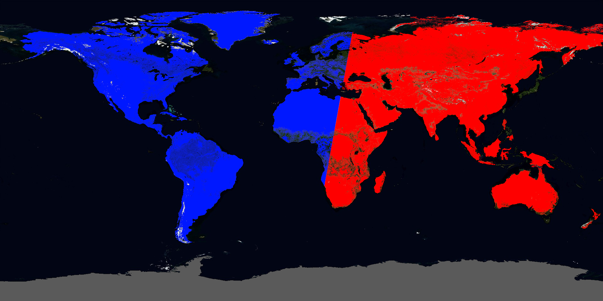
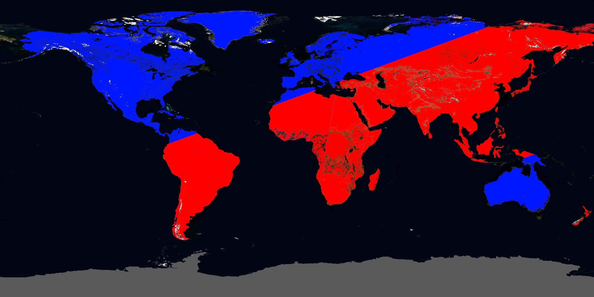
Une autre manière de voir la séparation occident/orient. Ma manière, ma carte préférée: dimanche 8 juin 2025: je devrais recolorier / changer cette carte, dans les semaines à venir.
L'occident correspondrait à des zones de relativement basse altitude et proche de la mer ou d'océan(s). Climat en général tempéré, doux (par la proximité de grandes étendues d'eau).
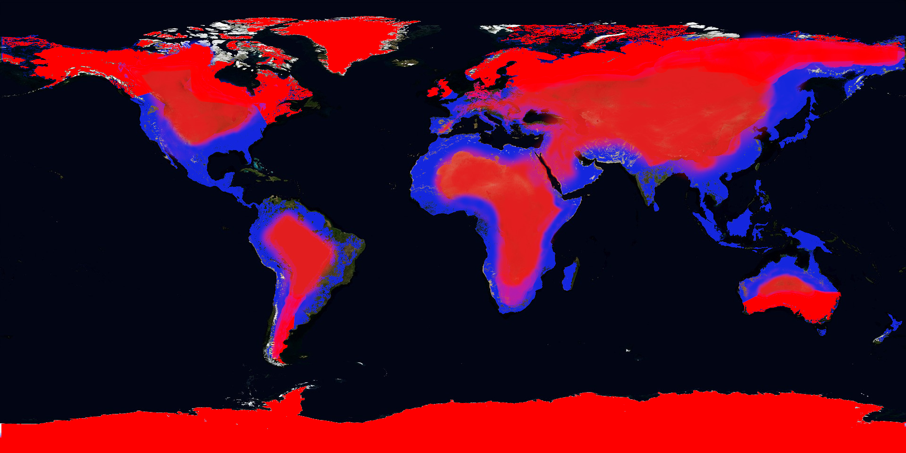
Alors que l'orient correspondrait à des zones continentales, et/ou en relative altitude ou des zones assez extrêmes (antarctique, extrême nord, extrême sud) Climat plus rude, saisons plus marquées, écarts de températures plus importants : le tibet, une grande partie de la chine, de la russie, la cordillère des andes, l'intérieur des terres en général, montagnes rocheuses aux états-unis. Climat montagnard /continental.
L'inde serait en orient, mais avec une partie occidentale sur ses parties jouxtant l'océan indien? Car l'océan indien serait un océan relativement fermé, comparativement aux océans pacifiques et atlantiques.
Couleurs des drapeaux de divers pays et considérations sur occident / orient
Couleur du drapeau et mentalité orientale / occidentale
La couleur des drapeaux est peut-être parlante, concernant Occidentaux et Orientaux:
En général, le bleu serait-il plutôt à associer à l'occident? Le rouge à l'orient? Le blanc à la religion, le Christianisme en particulier?
Quelques pays et quelques considérations pour savoir si le pays en question serait plutôt occidental ou oriental
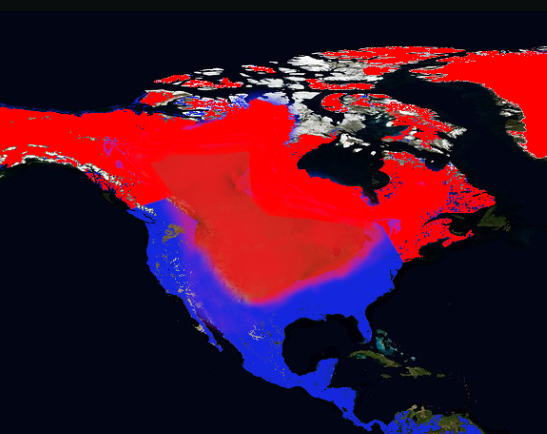
Par exemple les états-unis: Se pourrait-il qu'ils aient en eux toute une part d'équilibre, de Christianisme, qui serait la couleur blanche, une part d'occident: la couleur bleue, et une part d'orient : la couleur rouge? (Certains américains me semblèrent d'ailleurs plutôt démocrates/communistes, de "gauche", d'autre plutôt républicains, de "droite"...)
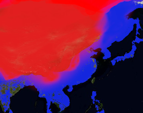
Je ne vis pas de couleur blanche sur le drapeau de la chine. Ceci signifierait pas de Christianisme (globalement)?(quoique j'ai entendu dernièrement qu'il avait de plus en plus de Chrétiens en chine) Que représenterait le jaune? Une part révolutionnaire?
Pays essentiellement continental? / Climat assez rude. Il dut me sembler que la chine eut quelque chose d'occidental, au niveau de son Âme. Peut-être parce qu'une partie de la chine est proche de l'océan pacifique. Quoique d'un autre côté, quand je considère comment furent traités divers chiens, dans certains lieux en chine (chien bouilli, rôti, etc.)
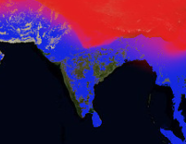
Les Indiens auraient-ils une part de mentalité occidentale? : Au centre du drapeau de l'inde, de la couleur bleue. (De plus, on parle parfois de langue indo-européenne). Comme ils sont plutôt pour l'hindouisme, le Bouddhisme, religions "molles"? et qu'un des attributs de l'occident serait la tiédeur, la "léthargie"...
Zone orange, nord de l'inde, partie plutôt continentale, montagneuse (proximité de l'himalaya). Partie sud, zone plutôt occidentale?
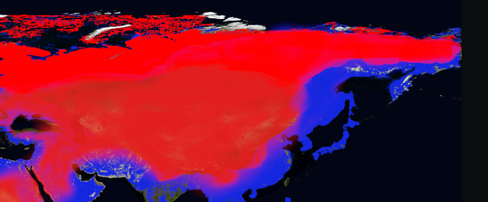
En fonction de la couleur de son drapeau, la russie serait-elle plutôt occidentale au milieu (bleu) de son territoire, orientale au sud (rouge) et Christique au nord? (ou simplement le blanc pour symboliser le froid/la neige...)
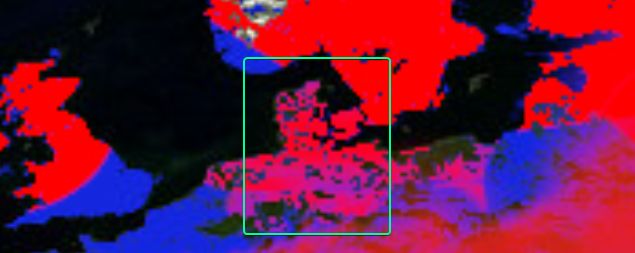
Resterait à comprendre pourquoi par exemple le danemark eut un drapeau plutôt rouge. Quel rapport avec l'orient? En lien avec les vikings et une mentalité assez "violente", féline, chasseuse, extrême? Auraient-ils même été historiquement beaucoup plus conquérants que la finlande (finlande drapeau blanc et bleu). Position continentale du danemark par rapport à la finlande (qui eut un drapeau blanc et bleu).
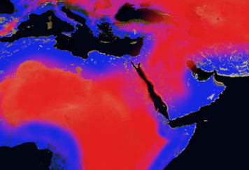
Beaucoup de drapeaux de pays généralement considérés comme Musulmans, n'ont pas de bleu (le bleu que j'associerais à l'occident). Et ils ont souvent du vert, alors que les drapeaux occidentaux ont rarement du vert. Quoique j'associerais aussi plutôt la couleur verte à l'occident. Probablement y a-t-il une explication à pourquoi certains drapeaux de pays considérés comme orientaux ont du bleu? (Si tant est que la couleur du drapeau ait bien quelque chose à voir avec orient/occident).
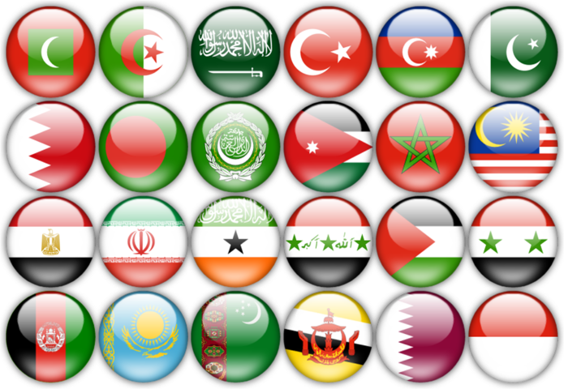
La france: couleurs du drapeau assez intéressantes. Le bleu à gauche pour l'aspect plutôt occidental (proximité de l'océan, tempérance). Souvent, en france, la "gauche" politique a plutôt été du côté atlantique, et la "droite" politique, plutôt le rouge, à l'est (sur une carte orientée au nord), à "l'orient". Une sorte de pays "synthèse". (Dans lequel il y eut une part souvent semblable de Gens plutôt de droite, d'autre de gauche).
Le blanc, au milieu, pour le Christianisme?
Taïwan
Couleur bleu parce que dans l'océan pacifique. Mentalité plutôt occidentale?
Sur beaucoup de drapeaux, je vis une ou des étoile(s). ⭐ En général à 5 branches. Un rapport avec la france?, La france qui me sembla avoir approximativement une forme d'étoile à 5 branches.
(Du moins selon certains, la délivrance finale devrait être particulièrement liée à la france.)
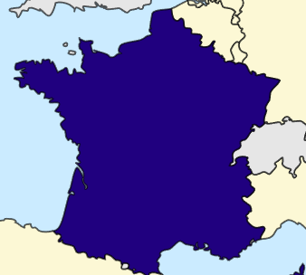 ⭐
Le maghreb en occident ou en orient?
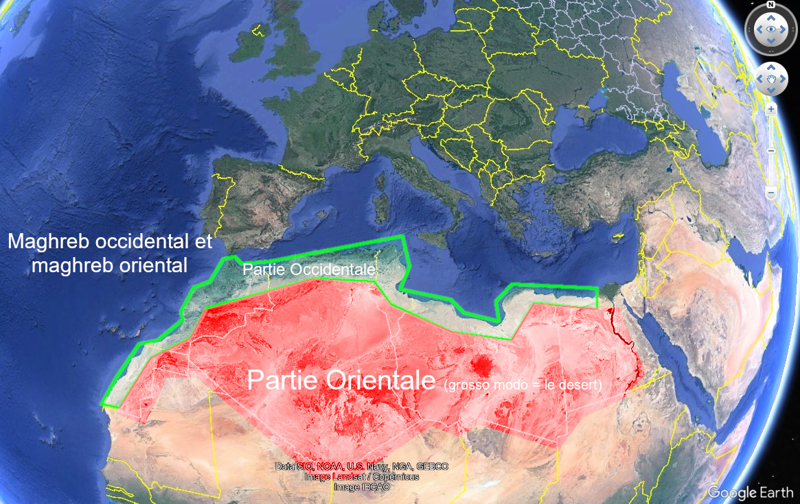
Pour le maghreb, je me demande actuellement si le maghreb aurait une part d'occident, et une part d'orient Ainsi, tous les pays du maghreb (maroc, algérie, tunisie, lybie) seraient occidentaux au nord (près de la méditerranée et orientaux au sud (désert), ou à l'est (maroc)). (le tracé vert et le rouge pourraient être plus précis sur cette carte, je les mis pour donner un ordre d'idée) à l'est le nil, à l'ouest le maroc, la mauritanie, au sud la frontière de divers pays du maghreb. La frontière partie occidentale, partie orientale, représentée grosso modo par le désert.
Tableaux comparatifs Occidentaux/Orientaux avant délivrance finale, avant 3ème fiat (fin XXème siècle et jusqu'à début 2024 inclus)
Quantité / pourcentages
🌳 💦 O c c i d e n t a u x 🌦️ 🌳
Dieu
🏔️☀️O r i e n t a u x❄️🌋 🏔️
"possédés" ~~6%
déséquilibrés ~~15% du total mondial
encore un certain équilibre ~~14% du total mondial
Les Enfants ~~13% du total mondial
~équilibrés ~~4% du total mondial
Les Enfants~~13% du total mondial
encore un certain équilibre ~~14% du total mondial
déséquilibrés ~~15% du total mondial
"possédés" ~~6%
environ 450 millions? (approx imation)
1,2 milliards? (approximativement)
1,1 milliards? (approximativement)
environ 1,1 milliard (approximativement)
Dieu : Unique et/ou 3 en 1 D'après certains, le Christ, unique, Homme-Dieu peut-être ~~300 millions dans le monde (chiffre très approximatif)
environ 1,1 milliard (approximativement)
environ 1,1 milliards? (approximativement)
environ 1,2 milliards? (approximativement)
environ 450 millions? (approx imation)
Géographie / climat
🌳 💦 O c c i d e n t a u x 🌦️ 🌳
Dieu
🏔️☀️O r i e n t a u x❄️🌋 🏔️
"possédés" ~~6%
déséquilibrés ~~15% du total mondial
encore un certain équilibre ~~14% du total mondial
Les Enfants ~~13% du total mondial
~équilibrés ~~4% du total mondial
Les Enfants~~13% du total mondial
encore un certain équilibre ~~14% du total mondial
déséquilibrés ~~15% du total mondial
"possédés" ~~6%
Europe, états-unis, canada. Afrique de l'ouest? Zones côtières, océaniques.
Russie, Chine continentale, Moyen-orient. Afrique de l'est? Zones continentales (si carte n°3 davantage valable que cartes n°1 et n°2)
Zones côtières/océaniques (d'après la carte n°3 plus haut). Climat plutôt tempéré par la proximité de l'océan, ou de la mer. eau 💦, nuage ⛅ si comparé aux saisons : automne 🍂, printemps 🌷
Zones continentales (d'après la carte n°3 plus haut). Grandes variations de températures (très chaud l'été, très froid l'hiver) neige glace❄️🧊 (antarctique) / soleil qui "tape" 🔆 (déserts) si comparé aux saisons : hiver ❄️, été ☀️
Éléments généraux
🌳 💦 O c c i d e n t a u x 🌦️ 🌳
Dieu
🏔️☀️O r i e n t a u x❄️🌋 🏔️
"possédés" ~~6%
déséquilibrés ~~15% du total mondial
encore un certain équilibre ~~14% du total mondial
Les Enfants ~~13% du total mondial
~équilibrés ~~4% du total mondial
Les Enfants~~13% du total mondial
encore un certain équilibre ~~14% du total mondial
déséquilibrés ~~15% du total mondial
"possédés" ~~6%
Tempérance
Passivité / Tiédeur
Violence
En général, richesse matérielle /opulence matérielle
Relative pauvreté matérielle/financière
Chiens/Chats, animaux domestiques
Animaux + sauvages
Domestication
Sauvagerie
Canidés
Félidés
Gauche (dans le sens maladroitesse)
Gauche sociale / Droite excessive
Pantoufles
Sandales
+ "domestiqués"
+ "sauvages"
Zelda et tintin
Zelda
🌳 💦 O c c i d e n t a u x 🌦️ 🌳
Dieu
🏔️☀️O r i e n t a u x❄️🌋 🏔️
"possédés" ~~6%
déséquilibrés ~~15% du total mondial
encore un certain équilibre ~~14% du total mondial
Les Enfants ~~13% du total mondial
~équilibrés ~~4% du total mondial
Les Enfants~~13% du total mondial
encore un certain équilibre ~~14% du total mondial
déséquilibrés ~~15% du total mondial
"possédés" ~~6%
Zelda en occident en quelque sorte
Zelda en orient en quelque sorte
Plutôt un milieu reposant pour zelda. Prairie(s), magasins Présence d'un "chien"
Plutôt un milieu d'aventure pour zelda. Paysages parfois plutôt grandioses (montagnes), parfois plus lugubres, en moyenne, qu'en occident. (Pendant plusieurs semaines, semaines précédants le mercredi 30 octobre 2024, l'extrait vidéo ne me sembla des plus adapté, pour cette vidéo, puisqu'il y avait pas mal d''eau de visible (montagnes avec des chutes d'eau) mais je le mis à jour le mercredi 30 octobre 2024. À réfléchir à la situation ce serait à se demander si dans certains cas l'orient puisse aussi être associé à l'eau. (eau des montagnes) On retouverait alors la notion de source/naissance, en orient (eau de source))
tintin
Tintin en occident
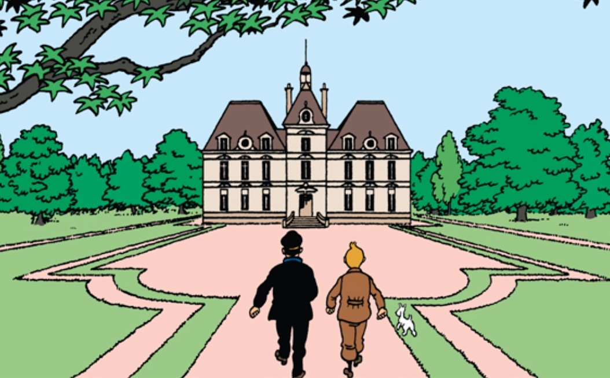
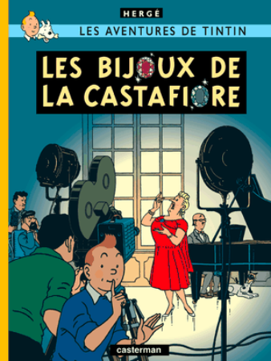
Concernant Hergé, certain(e)s firent valoir qu'il aurait signé un autographe à Gabriel Matzneff. Qu'est-ce que ceci signifierait? Qu'Hergé fut impliqué dans ceci cela? Je n'en sais rien. Est-ce que cet autographe serait authentique? Qu'est-ce qu'il impliqua? Si tant est qu'Hergé ait participé à "ceci-cela", se repentit-il? Je n'en sais rien non plus. Alors pour le moment, je conserve quand même ces couvertures d'album. J'imagaine, les "aventures de tintin" marquèrent tout de mêmes quelques générations.
Tintin en orient
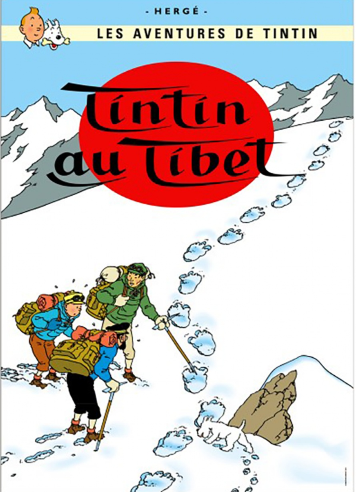
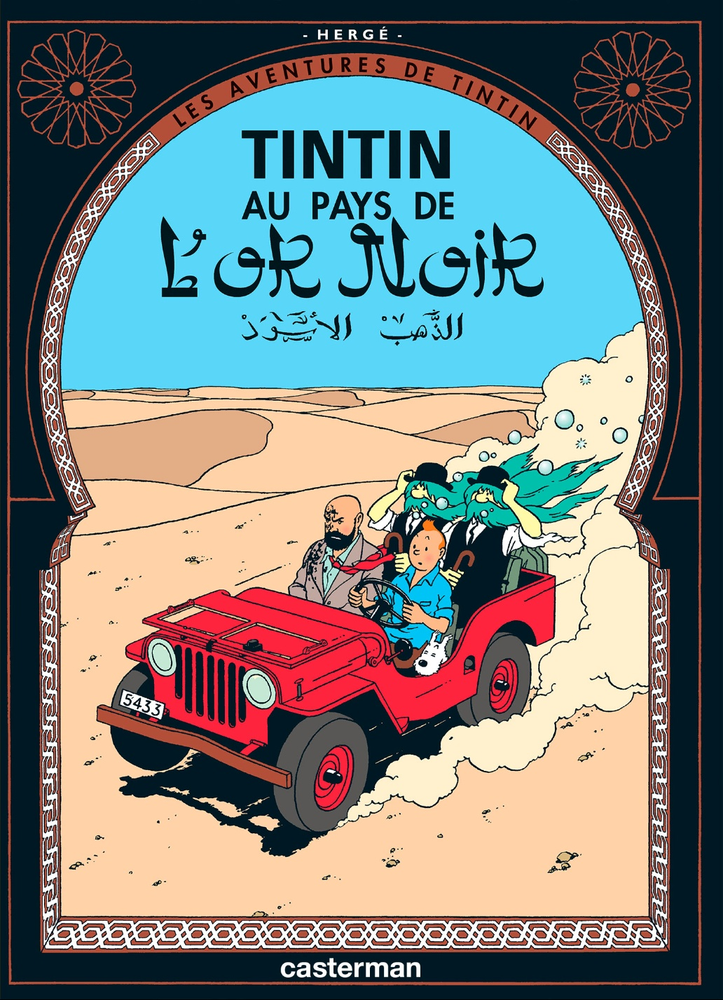
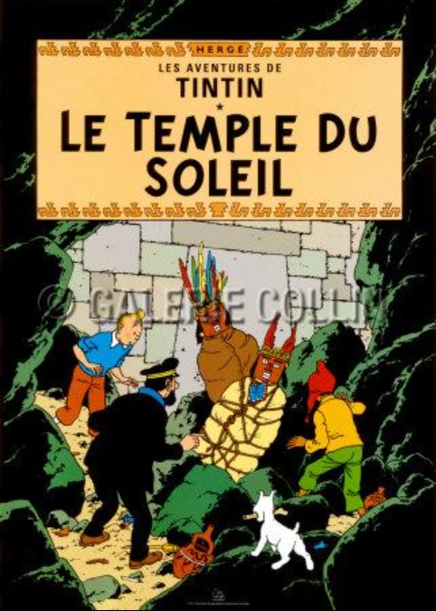
Tibet, montagnes, climat rude
Désert, climat rude
Montagnes (pérou)
Animaux et occident/orient
''Canidés/félidés''
🌳 💦 O c c i d e n t a u x 🌦️ 🌳
🏔️☀️O r i e n t a u x❄️🌋 🏔️
"possédés" ~~6%
déséquilibrés ~~15% du total mondial
encore un certain équilibre ~~14% du total mondial
Les Enfants ~~13% du total mondial
~équilibrés ~~4% du total mondial
Les Enfants~~13% du total mondial
encore un certain équilibre ~~14% du total mondial
déséquilibrés ~~15% du total mondial
"possédés" ~~6%
L'occident : plutôt de mentalité chien / canidé, domestiqué obéissant
L'orient : plutôt de mentalité chat, félin, sauvage
Animaux sauvages agressifs (par exemple tigre agressif, lion agressif)
Abandon du chien sur le bord de la route ou ailleurs. Mettraient un chien avant un Humain.
Relatif culte pour les chiens. Mettraient un chien avant d'un Humain.
Aiment plutôt les chiens mais sans culte particulier. N'ont pas de chien ou de chat, ou au plus, en général, un seul.
D'après Maria Valtorta, je n'ai pas le souvenir qu'il fut rapporté que le Fils avait un chien ou un chat de compagnie. (Dieu aurait plutôt des plutôt des séraphins, chérubins, etc.)
Aiment plutôt les chiens et/ou les chats, mais sans culte particulier. N'ont pas de chien ou de chat, ou un seul.
Aiment plutôt les chiens mais sans culte particulier. N'ont pas de chien ou de chat, ou au plus, en général, un seul.
Il n'y a pas qu'en occident qu'il y a des chiens. On trouve parfois des chiens en orient, mais en général je dirais des chiens des rues, en général sauvages, par rapport à l'occident.En général, pas de petit chien en laisse, dans les villages d'orient. (pas de chien genre chihuahua en laisse dans les bidonvilles...)
Garçon /Fille "démoniaque". Garçon/ Fille diabolique, malade
"Homme-chien": 🐕 Créatures d'un amour très relatif les unes envers les autres. Accordent davantage d'importance au football etc. qu'aux Créatures saintes de l'histoire. (Ainsi des 10aines de millions connaissent tel ou tel joueur de football, en attendant qu'ils ne connaissent quasiment pas telle ou telle Créature qui aurait parlé avec Dieu)😮
Enfant/"Homme-chiot"
Homme-Dieu Garçon ou Fille se rapprochant de Dieu. (religieux) Humain qui redevient un homme, plutôt qu'un "homme-chien", ou "homme-loup, homme félin", ou un "démon" (ou Quelqu'un(e) de possédé(e), pour le rédiger autrement)
Enfant/"Homme-chaton"
"Homme-chat" 🐈 "Homme-loup" En général comparativement à beaucoup d'Occidentaux, les orientaux se fichent pas mal des chiens. Certains même cuisent/mangent des chiens (en chine, par exemple)
Garçon /Fille "démoniaque". Garçon/ Fille diabolique, malade
Les Occidentaux, en général, me semblèrent aimer plutôt bien l'eau, les piscines (comme les chiens), les plages.
Les Occidentaux, en général, me semblèrent bien aimer les douches. (pour pas mal d'Occidentaux, douches quotidiennes)
Les Orientaux, en général, aimeraient moins l'eau que les Occidentaux? (comme en général les félins par rapport aux chiens). Genre ils seraient en général moins attachés à avoir une piscine, qu'un Occidental, en moyenne?
Image d'un chat dans de l'eau
Certains tigres dans la jungle me semblèrent quand même plutôt aimer l'eau. Ce "désamour" pour l'eau serait plus fréquent chez les chats?
En occident, depuis au moins quelques années, il me sembla qu'il existait, du moins en france, une expression selon laquelle, le "meilleur ami de l'homme" était : le chien.
1. Un certain jour de fête, je voyais s'approcher de la sainte Communion plusieurs personnes qui s'étaient recommandées à mes prières. Quant à moi, privée de cette grâce par suite de mes infirmités physiques, ou plutôt comme je le crains, repoussée par la divine justice à cause de mon indignité, je me remémorais les divers bienfaits dont vous avez daigné me combler, ô mon Dieu ! Bientôt j'appréhendai que le souffle de la vaine gloire ne desséchât ce courant des eaux de la grâce, et je vous priai d'éclairer mon intelligence par une lumière divine, afin d'être prémunie contre un tel danger. Votre paternelle bonté daigna alors m'instruire ainsi : je devais considérer votre amour pour moi comme celui d'un père de famille qui a le bonheur de se voir entouré de nombreux Enfants, dont la grâce et la beauté attirent l'admiration générale. Mais comme parmi ces enfants le plus jeune se trouve n'avoir pas encore atteint la force et la beauté des autres, le père, plein de tendresse, est ému de compassion pour lui; il le serre plus souvent dans ses bras et lui prodigue plus de caresses et de petits présents. Vous ajoutiez que si je m'estimais plus imparfaite que les autres, avec une entière conviction, le torrent des consolations divines ne cesserait jamais de se répandre dans mon Âme.
2. Je vous rends grâces, ô Dieu très aimant, véritable Ami des hommes, je vous rends grâces par la mutuelle reconnaissance qui s'échange entre les trois personnes de l'adorable Trinité, pour cet enseignement salutaire et pour d'autres encore par lesquels, ô le meilleur des maîtres, vous avez daigné plusieurs fois dissiper mon ignorance. J'unis mes regrets à l'amertume de la Passion du Seigneur, et je vous offre les souffrances et les larmes de ce même Jésus-Christ, pour toutes les négligences que j'ai commises et qui ont si souvent étouffé dans mon Âme les aspirations de votre Esprit. Je munis à la prière très efficace de ce Fils bien-aimé, et je demande par la vertu du Saint-Esprit le pardon de mes péchés et la réparation de mes fautes. Daignez m'accorder ces grâces, par le puissant amour qui retint votre colère, lorsqu'on mit au rang des scélérats ce Fils unique et très aimé, dans lequel votre divine Paternité trouve toutes ses délices.
Autres animaux que les félins et les canidés
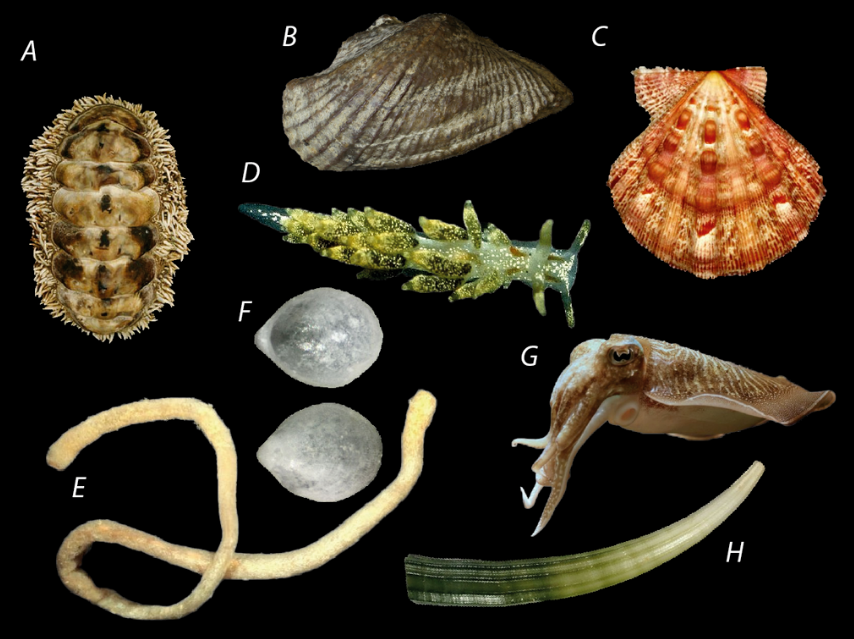 Peut-être les mollusques aussi pour ces ~~6%
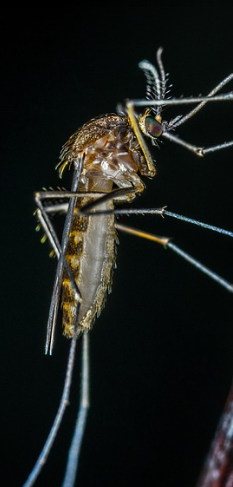 Moustique
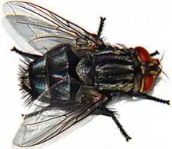 Mouche
Animal qui a son utilité aussi, mais en général dangereux et/ou pénible pour l'homme
(Des mouches seraient apparues de temps en temps lors de l'exorcisme d'Annelise Michel)
Les occidentaux déséquilibrés et la Théologie
source de l'image : wikipedia
L'appellation mollusque s'applique aux animaux qui possèdent une coquille visible ou cachée. Tous les mollusques partagent quelques points communs : un corps mou, un pied qui leur sert à se déplacer ; un manteau qui sécrète souvent une coquille, et la plupart ont une tête. L'immense majorité des mollusques vit dans l'eau, que ce soit dans la mer ou l'eau douce. Les mollusques terrestres sont presque tous des escargots. De nombreux mollusques sont comestibles, comme les escargots, les poulpes, les moules, les huîtres... source : https://soutien67.fr/svt/animaux/zoo/mollusques/mollusques.htm
Animal plus sauvage. Mais a son utilité tout de même (par exemple enlève les carcasses, les charognes)
Animal relativement impur à la consommation, d'après diverses religions
Animal plutôt gentil qui fournit en général quand même quelque chose au monde (laine, lait etc.)
Animal qui aide les Humains dans diverses tâches, sous conditions que ces tâches soient en adéquation avec la divine volonté.
les poissons, d'après le livre du Ciel
brave animal
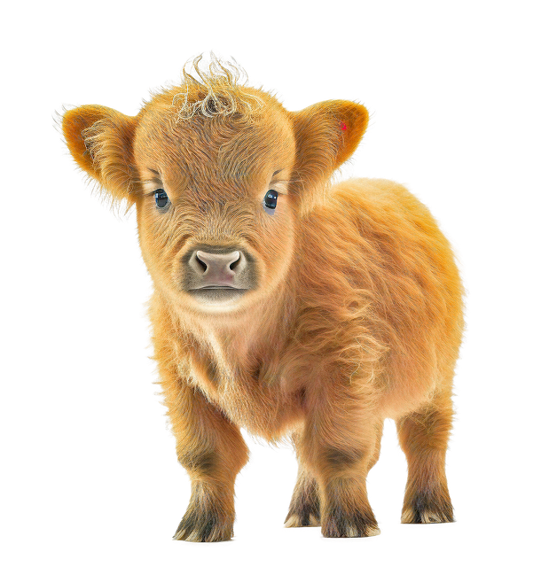
Habitants cachés et silencieux de la mer / le livre du Ciel
Tout comme les poissons, habitants cachés et silencieux de la mer, constituent la gloire de celle-ci et servent à nourrir les hommes, ces Âmes, cachées et silencieuses dans la mer divine de ma Volonté, sont -la plus grande gloire de la Création et -la cause principale de la descente sur la terre de la nourriture exquise de ma Volonté. Le livre du Ciel, 9 août 1924
9 août 1924 - le livre du Ciel
Tout comme les poissons, habitants cachés et silencieux de la mer, constituent la gloire de celle-ci et servent à nourrir les hommes, ces Âmes, cachées et silencieuses dans la mer divine de ma Volonté, sont -la plus grande gloire de la Création et -la cause principale de la descente sur la terre de la nourriture exquise de ma Volonté.
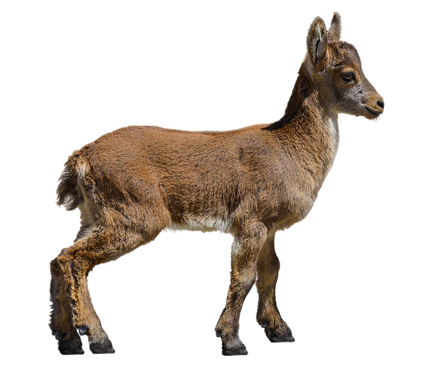
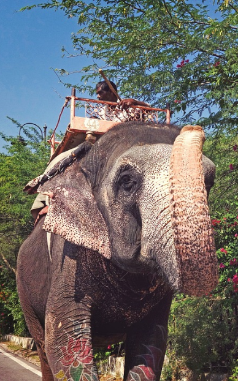
Animal plutôt gentil qui en général fournit quand même quelque chose au monde (lait etc)
Animal qui aide les Humains dans diverses tâches, sous conditions que ces tâches soient en adé quation avec la divine volonté.
brave animal
Animal plus sauvage. Mais a son utilité tout de même (par exemple enlève les carcasses, les charognes)
Animal relativement impur à la consom mation, d'après diverses religions
Les orientaux déséquilibrés et la Théologie
L'appellation mollusque s'applique aux animaux qui possèdent une coquille visible ou cachée. Tous les mollusques partagent quelques points communs : un corps mou, un pied qui leur sert à se déplacer ; un manteau qui sécrète souvent une coquille, et la plupart ont une tête. L'immense majorité des mollusques vit dans l'eau, que ce soit dans la mer ou l'eau douce. Les mollusques terrestres sont presque tous des escargots. De nombreux mollusques sont comestibles, comme les escargots, les poulpes, les moules, les huîtres... source : https://soutien67.fr/svt/animaux/zoo/mollusques/mollusques.htm
(source de l'image : wikipedia)
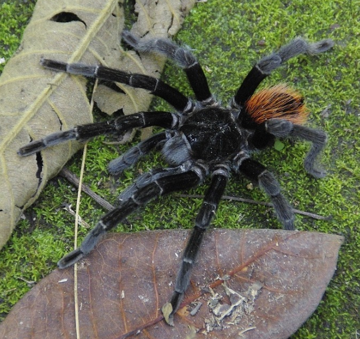
Animal qui a son utilité aussi, mais en général dangereux et/ou pénible pour l'homme
Peut-être les mollusques aussi pour ces ~~6%
bugs bunny dans certains de ses comportements (emploi de dynamite)
Animaux malades, dépressifs
Animaux plutôt domestiqués
Animaux apaisés
Animaux plutôt sauvages (chien des rues en moyenne plus fréquents qu'en occident)
Animaux malades, agressifs
Rapport à Dieu
Existences données à Dieu ou au diable
🌳 💦 O c c i d e n t a u x 🌦️ 🌳
Dieu
🏔️☀️O r i e n t a u x❄️🌋 🏔️
"possédés" ~~6%
déséquilibrés ~~15% du total mondial
encore un certain équilibre ~~14% du total mondial
Les Enfants ~~13% du total mondial
~équilibrés ~~4% du total mondial
Les Enfants~~13% du total mondial
encore un certain équilibre ~~14% du total mondial
déséquilibrés ~~15% du total mondial
"possédés" ~~6%
Des existences données "au diable", ou volées par "le diable".
Des existences qui semblent données au consumérisme, au capitalisme, à l'égoïsme. (Ce qui revient, pour beaucoup, à des existences données en partie au diable plutôt qu'à Dieu)
Des existences données en partie au travail, à la collectivité, en partie à Dieu. Comportement en partie positif.
Existences sous tutelle parentale, à l'école, pour la plupart. Existences données, du moins pour grande part, à leurs parents. (Ou à un, ou aucun parent si orphelin de père et/ou de mère).
Le Fils : existence donnée au Père et aux Créatures Des existences qui semblent données à Dieu
Existences sous tutelle parentale, à l'école, pour la plupart. Existences données, du moins pour grande part, à leurs parents. (Ou à un, ou aucun parent si orphelin de père et/ou de mère).
Existences données en partie au travail, à la collectivité, en partie à Dieu etc. Comportement en partie positif.
Pour beaucoup, des existences qui semblent données au consumérisme, au communisme. (Ce qui revient pour beaucoup à des existences données en partie au diable plutôt qu'à Dieu)
Des existences données au "diable", ou volées par le "diable".
Dévitalisation - revitalisation
🌳 💦 O c c i d e n t a u x 🌦️ 🌳
Dieu
🏔️☀️O r i e n t a u x❄️🌋 🏔️
"possédés" ~~6%
déséquilibrés ~~15% du total mondial
encore un certain équilibre ~~14% du total mondial
Les Enfants ~~13% du total mondial
~équilibrés ~~4% du total mondial
Les Enfants~~13% du total mondial
encore un certain équilibre ~~14% du total mondial
déséquilibrés ~~15% du total mondial
"possédés" ~~6%
Dévitalisants, mortifères, dangereux
Dévitalisants
Entre deux
Revitalisant, vitalisant, la vie elle-même
Vitalisants
Entre deux
Dévitalisants
Dévitalisants, mortifères, dangereux
Anti- religieux, portent à croire qu'un Dieu n'existerait pas
Beaucoup d'entre eux portent à croire qu'un Dieu n'existerait pas
Plutôt neutres. Tantôt laisseraient parfois croire qu'un Dieu existerait, tantôt laisseraient croire qu'il n'existerait pas.
Dieu, du moins selon certains Font croire en Dieu
Plutôt neutres. Laissent tout de même croire qu'un Dieu existerait
Beaucoup d'entre eux portent à croire qu'un Dieu n'existerait pas
Anti - religieux, portent à croire qu'un Dieu n'existerait pas
Occultisme
🌳 💦 O c c i d e n t a u x 🌦️ 🌳
Dieu
🏔️☀️O r i e n t a u x❄️🌋 🏔️
"possédés" ~~6%
déséquilibrés ~~15% du total mondial
encore un certain équilibre ~~14% du total mondial
Les Enfants ~~13% du total mondial
~équilibrés ~~4% du total mondial
Les Enfants~~13% du total mondial
encore un certain équilibre ~~14% du total mondial
déséquilibrés ~~15% du total mondial
"possédés" ~~6%
Satanisme actif ou subit
Agnosticisme avec un fond plutôt mauvais. Se fichent plus ou moins de Dieu ou même d'émettre l'hypothèse de Dieu.
Agnosticisme et/ou plus ou moins croyant avec un fond plutôt bon. Ont quand même conscience qu'il y a peut-être un Dieu et qu'il vaudrait quand même mieux être parfois prudent.
Véritable Chrétien ou autre religion Véritable musulman ou véritable Chrétien
Agnosticisme et/ou plus ou moins croyant avec un fond plutôt bon. Ont quand même conscience qu'il y a peut-être un Dieu et qu'il vaudrait quand même mieux être parfois prudent.
Agnosticisme avec un fond plutôt mauvais. Se fichent plus ou moins de Dieu ou même d'émettre l'hypothèse de Dieu.
Satanisme actif ou subit
Sociétés occultes, magie, magie noire, jeux de hasard, casinos
Culte pour les activités de balles/ballons aléatoires (tantôt la balle/le ballon tombe ici, tantôt là) et obnubilantes (plutôt football en europe, baseball, basketball aux états-unis). Jeux « de société », jeux de dés, cartes.
Travaux intellectuels. Mépris relatif pour les jeux de balle/ ballon
Culte pour l’esprit.
Mépris en général pour les balles mais aiment les jeux de hasard. Jeux de société aussi (go en chine, par ex.)
Vaudou, cannibalisme, magie noire, jeux de hasard, casinos
Corpulence
Attention, le physique n'aurait pas forcément tellement d'importance. Ceci dépendrait si à la naissance l'on porte tel ou tel problème physique ou non (par exemple une obésité problématique, problème d'insuline de naissance). (Il y aurait à distinguer les problème(s) physique hérité(s) ou acquis au cours de l'existence. Autrement rédigé, l'état physique d'une Créature à un moment donné, et la pente sur laquelle cette même Créature serait : une pente plutôt ascendante (qui monte) ou une pente plutôt descendante (c'est-à-dire qui descend))
🌳 💦 O c c i d e n t a u x 🌦️ 🌳
Dieu
🏔️☀️O r i e n t a u x❄️🌋 🏔️
"possédés" ~~6%
déséquilibrés ~~15% du total mondial
encore un certain équilibre ~~14% du total mondial
Les Enfants ~~13% du total mondial
~équilibrés ~~4% du total mondial
Les Enfants~~13% du total mondial
encore un certain équilibre ~~14% du total mondial
déséquilibrés ~~15% du total mondial
"possédés" ~~6%
Obésité morbide
En général, par rapport aux orientaux, corpulence plus importante, taux d'obésité plus important (par exemple aux états-unis)
Corpulence dans la moyenne pour la plupart
Corpulence standard
Corpulence dans la moyenne pour la plupart
De corpulence plus fine, en général, par rapport aux occidentaux. Et moins haut, en taille. (Comme en moyenne les chats par rapport aux chiens).
Langage 🗣️
🌳 💦 O c c i d e n t a u x 🌦️ 🌳
Dieu
🏔️☀️O r i e n t a u x❄️🌋 🏔️
"possédés" ~~6%
déséquilibrés ~~15% du total mondial
encore un certain équilibre ~~14% du total mondial
Les Enfants ~~13% du total mondial
~équilibrés ~~4% du total mondial
Les Enfants~~13% du total mondial
encore un certain équilibre ~~14% du total mondial
déséquilibrés ~~15% du total mondial
"possédés" ~~6%
Mots d'argot
Langage familier, souvent vulgaire
Langage familier, parfois vulgaire
Langage en fonction du milieu familial et de la société ( essentiellement l'école))
Le Fils : langage poli et profond Langage soutenu
Langage en fonction du milieu familial et de la société ( essentiellement l'école)
Langage familier, parfois vulgaire
Langage familier, souvent vulgaire
Mots d'argot
Jeux d'argent, jeux de balle ⚽🏀🏈⚾🥎🎾🏐🏉🎱, jeux de hazard
🌳 💦 O c c i d e n t a u x 🌦️ 🌳
Dieu
🏔️☀️O r i e n t a u x❄️🌋 🏔️
"possédés" ~~6%
déséquilibrés ~~15% du total mondial
encore un certain équilibre ~~14% du total mondial
Les Enfants ~~13% du total mondial
~équilibrés ~~4% du total mondial
Les Enfants~~13% du total mondial
encore un certain équilibre ~~14% du total mondial
déséquilibrés ~~15% du total mondial
"possédés" ~~6%
Accroc aux jeux d'argent, jeux de hazard
⚽🏀🏈⚾🥎🎾🏐🏉🎱 En général plus attirés et agiles pour les balles, ballons (comme les chiens par rapport aux chats). Jeux de dés. Mais je les ait suspecté, en moyenne, moins agiles pour l’esprit, par rapport aux orientaux.
Aucune ordonnance pour les jeux de balles ou de ballon. Tunique du Fils jouée aux dés.
En général moins agiles pour les balles / ballons que les occidentaux? En général moins attirés par les balles/ballons?
Accroc aux jeux d'argent, jeux de hazard
Sexualité
🌳 💦 O c c i d e n t a u x 🌦️ 🌳
Dieu
🏔️☀️O r i e n t a u x❄️🌋 🏔️
"possédés" ~~6%
déséquilibrés ~~15% du total mondial
encore un certain équilibre ~~14% du total mondial
Les Enfants ~~13% du total mondial
~équilibrés ~~4% du total mondial
Les Enfants~~13% du total mondial
encore un certain équilibre ~~14% du total mondial
déséquilibrés ~~15% du total mondial
"possédés" ~~6%
Plaisirs charnels fréquents, sodomie, scatologie
Enfant utilisé dans des actes de plaisirs charnels
Plaisir charnel fréquent, adultères, "maitresses"
Plaisirs charnels. Moins fréquente que les 15% autres
Chasteté, pureté pour la plupart Mais chasteté par défaut (pas de puberté de faite encore, pas d'hormones, pas ou peu de "chaleurs")
Chasteté? transcendance de la sexualité, lutte contre les démons, sauveur de Marie-Madeleine
Chasteté?
Chasteté et pureté pour la plupart. Mais chasteté par défaut (pas de puberté de faite encore, pas d'hormones, pas ou peu de "chaleurs")
Plaisirs charnels moins fréquents Moins fréquente que les 15% autres
encore un certain équilibre ~~14% du total mondial
Les Enfants ~~13% du total mondial
~équilibrés ~~4% du total mondial
Les Enfants~~13% du total mondial
encore un certain équilibre ~~14% du total mondial
déséquilibrés ~~15% du total mondial
"possédés" ~~6%
Nombreux Enfants, polygamie, Enfants adultérins
Quelques Enfants en moyenne
Quelques Enfants en moyenne
Pas d'Enfant encore à cet âge-ci
Pas ou peu d'Enfants (nonnes, moines, prêtres), monogamie, Enfants spirituels
Nombreux Enfants spirituels
Pas d'Enfant encore à cet âge-ci
Quelques Enfants en moyenne, polygamie plus fréquente qu'en occident
Quelques Enfants en moyenne
Nombreux Enfants, polygamie Enfants adultérins
Impudeur / Pudeur 👕
🌳 💦 O c c i d e n t a u x 🌦️ 🌳
Dieu
🏔️☀️O r i e n t a u x❄️🌋 🏔️
"possédés" ~~6%
déséquilibrés ~~15% du total mondial
encore un certain équilibre ~~14% du total mondial
Les Enfants ~~13% du total mondial
~équilibrés ~~4% du total mondial
Les Enfants~~13% du total mondial
encore un certain équilibre ~~14% du total mondial
déséquilibrés ~~15% du total mondial
"possédés" ~~6%
Rapport à l'autre moins réservé, moins pudique, en général, par rapport aux orientaux. (Comme les chiens qui ont tendance à se sentir le derrière, alors que moins le cas chez les chats.)
Rapport à l'autre relativement réservé
Rapport à l'autre plus réservé, plus pudique, en général, par rapport aux occidentaux.
Impudeur, corps dénudés, plages
Habits ouverts, jupes, etc., impudeur, corps dénudés, plages
Pudeur, mépris pour la nudité des corps
Pudeur
Par rapport à l'occident, corps davantage vêtus, alors même que pays plus chauds, pour une partie de l'orient. Voile. Mais il y a aussi des fois des plages avec corps dénudés, en chine, par exemple.
Habits ouverts, jupes, etc. impudeur, corps dénudés, plages
Impudeur, plages
Assistance à autrui
🌳 💦 O c c i d e n t a u x 🌦️ 🌳
Dieu
🏔️☀️O r i e n t a u x❄️🌋 🏔️
"possédés" ~~6%
déséquilibrés ~~15% du total mondial
encore un certain équilibre ~~14% du total mondial
Les Enfants ~~13% du total mondial
~équilibrés ~~4% du total mondial
Les Enfants~~13% du total mondial
encore un certain équilibre ~~14% du total mondial
déséquilibrés ~~15% du total mondial
"possédés" ~~6%
En général, moins consciencieux de Dieu que les Orientaux, mais plus travailleurs, que les Orientaux
En général, plus délicats, attentionnés (sur certains points), que les Occidentaux, mais moins travailleurs. Enfin quoique ceci dépend, parce que les Chinois auraient pas mal travaillés, ces dernières décénnies, mais les Chinois ont quelque chose d'occidental, je dirais.
Rapport au son, au bruit 🔉
🌳 💦 O c c i d e n t a u x 🌦️ 🌳
Dieu
🏔️☀️O r i e n t a u x❄️🌋 🏔️
"possédés" ~~6%
déséquilibrés ~~15% du total mondial
encore un certain équilibre ~~14% du total mondial
Les Enfants ~~13% du total mondial
~équilibrés ~~4% du total mondial
Les Enfants~~13% du total mondial
encore un certain équilibre ~~14% du total mondial
déséquilibrés ~~15% du total mondial
"possédés" ~~6%
Bruyants, motos, brêles la nuit
En général plus ou moins insensibles aux bruits (moteurs à explosions)
Calme, silence, sons de la nature, milieux reposants
Gens calmes, assez sensibles aux bruits et fuyant les bruits
En général plus ou moins insensibles aux bruits (moteurs à explosions). Je ne serais pas étonnés qu'en général ils y accordent globalement davantage d'attention que les Occidentaux.
Bruyants, motos, brêles la nuit
Le bruit ambient, dans ce monde, serait, j'estime, un des éléments des plus caractéristiques de cette époque. Comme s'il pouvait y avoir une sorte de lien entre l'attention que portent les uns et les autres aux sons ambients et l'indifférence qu'ils semblent avoir les uns pour les autres. Une sorte de lien indifférence audio / indifférence aux autres.
Depuis l'enfance, phoniquement, je n'ai jamais tellement put me sentir à l'aise, sur la durée, au niveau du fond sonore de la société, en occident. Comme si j'eus une sensibilité phonique de chat/félin, au milieu de sensibilités phoniques de chiens. Que ce soit à cause des voitures (quand j'étais moi-même dans ces engins, ou quand ils passaient à proximité de moi), et/ou à cause des motos🛵🏍️. Ces engins, phoniquement, m'ont peiné pendant des années. Alors que la plupart des Gens, en général, me semblèrent assez indifférents à ces engins, assez indifférents aux moteurs à explosions. Ils me semblèrent s'en plaindre / en souffrir assez peu, voire pas. Maintenant, avec les véhicules électriques, ce devrait être moins pire phoniquement parlant, mais que d'accumulation de mal-être à cause des engins à moteurs à explosion. En fait, je suspecte il existerait un lien entre la sensibilité phonique de beaucoup d'Occidentaux et leur Esprit/pensée : la plupart des Occidentaux seraient particulièrement matérialistes et peu spirituels, et ainsi, leur environnement sonore leur importerait assez peu.
Jean et peut-être bien bien d'autres Gens qui auraient été relativement attachés à l'Esprit, auraient été aussi? attachés à un certain calme?
extrait de "Le secret de l'Apôtre Jean dévoilé"
Quand vous serez arrivés, vous aussi là où lui est déjà arrivé, et plus loin, car vous irez plus loin, aussi bien vous que lui, vous comprendrez le besoin de respect, de silence, de pénombre qu'éprouvent les Âmes dont l'Amour a fait sa proie et son instrument. N'allez pas penser : "Moi, alors, j'aurai un plaisir qui sera connu, et Jean est un sot, parce que l'Âme du prochain, comme celle des enfants demande à être attirée par le merveilleux". Non. Quand vous serez arrivés là, vous aurez le même désir de silence et de pénombre que Jean a maintenant.
Travail
🌳 💦 O c c i d e n t a u x 🌦️ 🌳
Dieu
🏔️☀️O r i e n t a u x❄️🌋 🏔️
"possédés" ~~6%
déséquilibrés ~~15% du total mondial
encore un certain équilibre ~~14% du total mondial
Les Enfants ~~13% du total mondial
~équilibrés ~~4% du total mondial
Les Enfants~~13% du total mondial
encore un certain équilibre ~~14% du total mondial
déséquilibrés ~~15% du total mondial
"possédés" ~~6%
Obéissants au diable
Pris par le travail.
Pris par le travail.
Obéissants au Christ Obéissants à Allah ou Bouddha
Pris par le travail.
Pris par le travail.
Obéissants au diable
En général, plutôt travailleurs dans telles ou telles tâches (comme, en général, les chiens (certains chiens peut-être pas des plus travailleurs/obéissants (il faudrait que je me renseigne davantage))
Moins travailleurs (comme les chats) (quoique les chinois semblent travailler pas mal (mais j'ai suspecté que pas mal de chinois furent des Occidentaux, dans l'Âme (si je me réfère en plus à la carete occident-orient)), mais plus fins intellectuellement
Politique - comportement va-ten-guerre
🌳 💦 O c c i d e n t a u x 🌦️ 🌳
Dieu
🏔️☀️O r i e n t a u x❄️🌋 🏔️
"possédés" ~~6%
déséquilibrés ~~15% du total mondial
encore un certain équilibre ~~14% du total mondial
Les Enfants ~~13% du total mondial
~équilibrés ~~4% du total mondial
Les Enfants~~13% du total mondial
encore un certain équilibre ~~14% du total mondial
déséquilibrés ~~15% du total mondial
"possédés" ~~6%
Mensonges d’État, torture (guanta-namo)
Guerres larvées
Plutôt pacifiques
Pacifisme, rejet de la violence physique
Pacifisme
Plutôt pacifiques
Violence physique, guerres d’attaque
Guerres d’attaque
Politicien corrompu. Militant politique violent/ obstiné.
Abrutissement? politique Serions nous en démocratie? Alors qu'il me sembla qu'il y eut une concentration des pouvoirs seulement pour certain(e)s. Serions nous dans l'égalité? (égalité-liberté-fraternité..) alors que divers Présidents, Ministres, eurent leurs Chauffeurs particuliers, leurs Gardes du corps, leurs résidences de prestige, et pas, en général, la population. En république?, alors que beaucoup d'éléments sont privés (par exemple les informations secret-défense). Tout ceci eu-t-il du sens? En a-t-il un?
En général pas tellement directement concernés par la politique
En général, ne firent pas partie de partis politiques
En général pas tellement directement concernés par la politique
Répression? politique
Politicien corrompu. Militant politique violent.
Défenseur farouche du vote, militant politique violent.
Votants sans même connaitre les programmes politiques
Pour partie non-votant, assez indifférents à la politique
Non-votant
Pour partie non-votant, assez indifférents à la politique
Votants sans même connaitre les programmes politiques
Défenseur farouche du vote, militant politique violent.
Vaccination
🌳 💦 O c c i d e n t a u x 🌦️ 🌳
Dieu
🏔️☀️O r i e n t a u x❄️🌋 🏔️
"possédés" ~~6%
déséquilibrés ~~15% du total mondial
encore un certain équilibre ~~14% du total mondial
Les Enfants ~~13% du total mondial
~équilibrés ~~4% du total mondial
Les Enfants~~13% du total mondial
encore un certain équilibre ~~14% du total mondial
déséquilibrés ~~15% du total mondial
"possédés" ~~6%
Mensongè-rement vacciné.
Vacciné de force
Vacciné sans se poser de questions
Vacciné mais s'est posé des questions
La plupart non-vaccinés
Non-vacciné et même.
Croient plutôt que Dieu va les protéger, plutôt qu'un vaccin.
encore un certain équilibre ~~14% du total mondial
Les Enfants ~~13% du total mondial
~équilibrés ~~4% du total mondial
Les Enfants~~13% du total mondial
encore un certain équilibre ~~14% du total mondial
déséquilibrés ~~15% du total mondial
"possédés" ~~6%
Créent des problèmes (des fois sans même le vouloir)
En général, incapables de comprendre à l'avance divers problèmes. Quant ils les comprennent, c'est que c'est trop tard.
Capables de comprendre divers problèmes
En général, empathiques aux problèmes des autres.
Capables de comprendre divers problèmes, de faire de la prévention.
En général, empathiques aux problèmes des autres.
Capables de comprendre divers problèmes
En général, incapables de comprendre à l'avance divers problèmes. Quant ils les comprennent, c'est que c'est trop tard.
Créent des problèmes (sans même le vouloir, parfois)
Crème ou lie de l'Humanité..
🌳 💦 O c c i d e n t a u x 🌦️ 🌳
Dieu
🏔️☀️O r i e n t a u x❄️🌋 🏔️
"possédés" ~~6%
déséquilibrés ~~15% du total mondial
encore un certain équilibre ~~14% du total mondial
Les Enfants ~~13% du total mondial
~équilibrés ~~4% du total mondial
Les Enfants~~13% du total mondial
encore un certain équilibre ~~14% du total mondial
déséquilibrés ~~15% du total mondial
"possédés" ~~6%
Victimes des autres et/ou "lie" de l'Humanité
"Humanité" en train de chuter
Démocratie, égalitarisme, indistinction entre les Créatures. Ou distinction des Créatures, mais en général sur des critères diaboliques (par exemple les résultats scolaires).
"Humanité" qui a encore un espoir
Enfants.
L'Humanité
Crème de l'Humanité
Enfants.
"Humanité" qui a encore un espoir
"Humanité" en train de chuter
Victimes des autres et/ou "lie" de l'Humanité
Intelligence / démence
🌳 💦 O c c i d e n t a u x 🌦️ 🌳
Dieu
🏔️☀️O r i e n t a u x❄️🌋 🏔️
"possédés" ~~6%
déséquilibrés ~~15% du total mondial
encore un certain équilibre ~~14% du total mondial
Les Enfants ~~13% du total mondial
~équilibrés ~~4% du total mondial
Les Enfants~~13% du total mondial
encore un certain équilibre ~~14% du total mondial
déséquilibrés ~~15% du total mondial
"possédés" ~~6%
En démence molle. ("Alzeihmer") et/ou -en général?- dans un processus menant vers une "démence molle".
Égalitarisme, indistinction entre les individus. Ou distinction des Créatures, mais en général sur des critères diaboliques (par exemple les résultats scolaires).
Le lumpenproletariat dans la catégorie Créatures déséquilibrées d'occident?
Je mis un point d'interrogation à "lumpenproletariat", car je connais assez peu Engels. Donc ceci mériterait de ma part que je le lise davantage pour que je valide que le lumpenproletariat fasse bien partie de la colonne dans laquelle je l'ai positionné.
"Le lumpenproletariat – cettelie d’individus déchus de toutes les classes qui a son quartier général dans les grandes villes – est, de tous les alliés possibles, le pire. Cette racaille est parfaitement vénale et tout à fait importune. Lorsque les ouvriers français portèrent sur les maisons, pendant les révolutions, l’inscription : « Mort aux voleurs ! », et qu’ils en fusillèrent même certains, ce n’était certes pas par enthousiasme pour la propriété, mais bien avec la conscience qu’il fallait avant tout se débarrasser de cette engeance. Tout chef ouvrier qui emploie cette racaille comme garde ou s’appuie sur elle démontre par là qu’il n’est qu’un traître. "
Christianisme, hiérarchie, distinction entre les Créatures
royaliste, croyant, théo-cratisme
Enfants
Démence dure/ furieuse/ catatonique (dictateur) et/ou - en général?- dans un processus menant vers une "démence molle".
En général, caricaturaux dans le domaine de la pensée. Tout comme en général, pour certains travaux d'agilité, pas mal de chiens semblent pataud, là où un félin serait naturellement grâcieux. La plupart crurent et votèrent pour des Politiciens qui avaient des "belles paroles". En fait, beaucoup d'Occiedntaux me semblèrent facilement influençables par des Politiciens. Exemple de pensée grossière : les pauvres sont des Gens forcément bien et les Gens matériellement riches, sont forcément des voleurs. Pensée assez souvent vraie, mais pas toujours, justement et qui manque de précision, de finesse. Pensées assez contradictoires, pauvres. Par exemple, souvent, beaucoup s'en prennent au mode vie "bourgeois" et pensent : nous on est les pauvres, le peuple, mais toute une partie de ce peuple, s'il avait assez d'argent, ils deviendrait... des "bourgeois". (Ils souhaitent leur piscine, leur voiture, leur animal de compagnie etc.)
En général, plus gracieux, dans les domaines de la pensée, plus fins que les Occidentaux.
En général, même si j'eus de quoi suspecter qu'ils n'eurent pas forcément le bon Dieu, au moins, la plupart eurent ils encore une foi, et un, ou des, Dieu(x).
Mode de vie, égoïsme ou rassemblement
🌳 💦 O c c i d e n t a u x 🌦️ 🌳
Dieu
🏔️☀️O r i e n t a u x❄️🌋 🏔️
"possédés" ~~6%
déséquilibrés ~~15% du total mondial
encore un certain équilibre ~~14% du total mondial
Les Enfants ~~13% du total mondial
~équilibrés ~~4% du total mondial
Les Enfants~~13% du total mondial
encore un certain équilibre ~~14% du total mondial
déséquilibrés ~~15% du total mondial
"possédés" ~~6%
Occident : en général profusion alimentaire dans les supermarchés. Et la plupart des Gens ont de quoi manger.
Orient : en moyenne plus fréquemment qu'en occident, misère en nourriture
La Fille dans cette vidéo surjoua-t-elle la misère? En faisant exprès de tomber? Quoiqu'il en fut, j'estime, ce me sembla quand même une relative misère.
Parfois les Occidentaux se plaignirent de l'occident. Le paradis serait les plages, les cocotiers.
D'après certains Occidentaux, "le paradis" serait l'occident?
Je dirais paroles souvent exagérées, tout de même, dans cette musique. Assez généralisantes. Genre dans tous les ports du monde, sur toutes les plages, y aurait des "mômes" qui feraient signe au bateau(x?)... qui tendraient la main au(x?) navire(s?) de passage. Et puis pour eux, le paradis, ce serait l'occident..
Mais j'y crois moyen que l'occident serait "le paradis" pour tous les Orientaux. Ce que j'estime, c'est que beaucoup d'Orientaux s'en fichent, et s'en fichèrent, aussi, plus ou moins, de l'occident. Mais pas mal d'Occidentaux matérialistes conçurent que les Orientaux étaient forcément envieux de leur relative richesse matérielle. Conception qui "trahirait" que beaucoup d'Occidentaux sont assez limités dans leur conception de ce que serait la richesse. Pour eux, richesse se résumerait à richesse matérielle.
Vie "grand train" : palaces, champagne, hôtels de luxe, yachts
Éclatement des uns et des autres / égoïsme (stations de ski, capitalisme)
Suivent le(urs) parent(s)
Rassemblement des uns et des autres, l’Église, la religion
Religion
Suivent le(urs) parent(s)
Orient : Moins d’éclatement individuel qu’en occident, par contre lutte entre classes. Entraide collective / Âme collectivePar rapport à l'occident. En général, plus de chaleur Humaine (ne serait-ce que parce -qu'en général sociétés moins matérialistes, moins agnostiques).
Extrait de la chanson "Dis-moi", chantée par Faudel. Pas que je dirais qu'en occident, il n'y aurait pas, aussi, de la souffrance, mais la souffrance matérielle serait en moyenne moindre qu'en orient, tout de même.
Vie "grand train" : palaces, champagne, hôtels de luxe, yachts
Voyagent en grande pompe : jet, yacht.
Ou en classe affaire alors que préten-dument de gauche (par exemple JL Mélenchon)
Culte pour les loisirs : voyages
Voyagent de temps en temps
Voyagent en fonction de où les mènent les "adultes".
Le Fils : D'après le livre du Ciel, rejet pour les voyages
Excepté voyages d'évan-gélisation, ne voyagent quasiment pas. (Restent au couvent ou dans des monastères)
Voyagent en fonction de où les mènent les "adultes".
Voyagent de temps en temps
Culte pour les loisirs : voyages
Voyagent en grande pompe yachts, jets privés etc.
Femme en boite de nuit.
Fille au travail mixte
Marie, Luisa Piccarreta nonne, figure religieuse
Fille au travail non mixte (quoique maintenant souvent mixte)
Stéroïdes, dopage, culte du corps, tatouages nombreux
Culte pour le sport
Mépris pour le physique par rapport à l’esprit
Occident/ orient, sensation de bien-être en société, ou sensation de vide existentiel
🌳 💦 O c c i d e n t a u x 🌦️ 🌳
Dieu
🏔️☀️O r i e n t a u x❄️🌋 🏔️
"possédés" ~~6%
déséquilibrés ~~15% du total mondial
encore un certain équilibre ~~14% du total mondial
Les Enfants ~~13% du total mondial
~équilibrés ~~4% du total mondial
Les Enfants~~13% du total mondial
encore un certain équilibre ~~14% du total mondial
déséquilibrés ~~15% du total mondial
"possédés" ~~6%
Croient se sentir bien dans un monde démon-iaque. (Comme souvent ce me sembla être le cas chez divers "libertins", et pas mal de Politiciens)
Par contre, se sentent mal vis-à-vis du Fils / du Christia-nisme.
Ne se sentent ni vraiment mal, ni vraiment bien.
Par rapport à l'orient, en général, plus de froideur Humaine.
Penchent un peu à se sentir plutôt mal dans la société actuelle.
Clip Alain Souchon, ultra-moderne solitude
(ultra-moderne solitude, Alain souchon) "Pourquoi ces rivières sur les joues qui coulent" : d'après cette chanson, "c'est l'ultra-moderne solitude", mais je ne suis pas sûr que ce soit vraiment bien dit, dit ainsi. J'aurais plutôt plusieurs interprétations possibles dont une :lié à la divine volonté (d'après mon interprétation du livre du Ciel) (un passage expliciterait ceci, je retrouverai peut-être plus tard la référence).
Le Fils (d'après le livre du Ciel) : Se senti souvent mal dans la société. Attendis le retour du Père.
Pour lui la croix aurait même été une délivrance par rapport au manque d'Humanité qu'il put ressentir au préalable (je retrouverais peut-être plus tard la référence et l'inclurai) Se sentirent plutôt mal dans la société actuelle (sos d'un terrien en détresse, Daniel Balavoine).
sos d'un terrien en détresse, Daniel Balavoine
Penchent un peu à se sentir plutôt mal dans la société actuelle.
Ne se sentent ni vraiment mal, ni vraiment bien.
Croient se sentir bien dans un monde démon-iaque. (Comme souvent ce me sembla être le cas chez divers "libertins", et pas mal de Politiciens )
Par contre, se sentent mal vis-à-vis du Fils / du Christia-nisme.
En occident, pour certain(e)s, une sensation de néant existentiel : des Dirigeants souvent sans spiritualité (ou de peu de spiritualité), froids. Des sociétés sans Âme, (ou de peu d'Âme) sans (ou de peu de) spiritualité. Des rues comme froides. Là où en orient, le nombre pourrait donner une sensation de collectivité, en occident, plus ils sont nombreux, plus une sensation de solitude, d'être perdu dans une masse froide, sans Âme.
"Ultra moderne solitude" / Alain souchon / occident froid, sensation de vide existentiel / manque d'Âme collective
Musique
🌳 💦 O c c i d e n t a u x 🌦️ 🌳
Dieu
🏔️☀️O r i e n t a u x❄️🌋 🏔️
"possédés" ~~6%
déséquilibrés ~~15% du total mondial
encore un certain équilibre ~~14% du total mondial
Les Enfants ~~13% du total mondial
~équilibrés ~~4% du total mondial
Les Enfants~~13% du total mondial
encore un certain équilibre ~~14% du total mondial
déséquilibrés ~~15% du total mondial
"possédés" ~~6%
Musique occidentale
Il y aurait eut une partie de la musique classique, mais cette musique provint parfois d'allemagne, d'autriche, d'italie, (par exemple Mendelssohn, Mozart ou Vivaldi) et ces pays eurent une part d'orient, je dirais. (climat parfois continental ou zones montagneuses) S'il est considéré que l'occident serait plutôt à associer au climat tempéré et aux plages tempérées, alors peut-être la musique occidentale, une musique des cocotiers. Peut-être la musique celtique? La musique française? François Couperin? Une partie de la musique médiévale?
Pour le XXième siècle, une partie du rock'n roll serait à associer à la musique occidentale?
Musique orientale Musique plutôt traditionnelle, originelle Musique des grands espaces
Juste ci-dessous, une playlist de musiques, plutôt orientales, je dirais (quoique ceci mériterait encore réflexion, je dus avoir encore des doutes sur ce que serait plutôt la musique orientale, et l'occidentale)
Humour
🌳 💦 O c c i d e n t a u x 🌦️ 🌳
Dieu
🏔️☀️O r i e n t a u x❄️🌋 🏔️
"possédés" ~~6%
déséquilibrés ~~15% du total mondial
encore un certain équilibre ~~14% du total mondial
Les Enfants ~~13% du total mondial
~équilibrés ~~4% du total mondial
Les Enfants~~13% du total mondial
encore un certain équilibre ~~14% du total mondial
déséquilibrés ~~15% du total mondial
"possédés" ~~6%
Aiment bien les blagues pipi/caca
Aiment bien les blagues pipi/caca
Aiment bien les blagues pipi/caca
Aiment bien les blagues pipi/caca
Immaturité dans beaucoup de domaines
films star wars
🌳 💦 O c c i d e n t a u x 🌦️ 🌳
Dieu
🏔️☀️O r i e n t a u x❄️🌋 🏔️
"possédés" ~~6%
déséquilibrés ~~15% du total mondial
encore un certain équilibre ~~14% du total mondial
Les Enfants ~~13% du total mondial
~équilibrés ~~4% du total mondial
Les Enfants~~13% du total mondial
encore un certain équilibre ~~14% du total mondial
déséquilibrés ~~15% du total mondial
"possédés" ~~6%
L'empire, dark vador, l'empereur palpatine, etc.
Partie de la population plutôt pour l'empire
Partie de la population plutôt pour la rebellion, pour les jedis
les enfants
La force Les rebelles, les jedis (Luke, yoda, etc.)
les enfants
Partie de la population plutôt pour la rebellion, pour les jedis
Partie de la population plutôt pour l'empire
L'empire, dark vador, l'empereur palpatine, etc.
Deux grands groupes du futur? (à compter de l'année 2024)
🌳 💦 O c c i d e n t a u x 🌦️ 🌳
Dieu
🏔️☀️O r i e n t a u x❄️🌋 🏔️
"possédés" ~~6%
déséquilibrés ~~15% du total mondial
encore un certain équilibre ~~14% du total mondial
Les Enfants ~~13% du total mondial
~équilibrés ~~4% du total mondial
Les Enfants~~13% du total mondial
encore un certain équilibre ~~14% du total mondial
déséquilibrés ~~15% du total mondial
"possédés" ~~6%
AntiChrist. Armée du prince des ténèbres
Groupe du Mahdi, du Machia'h, du Fils
Enfants
Le Fils Mahdi et/ou Machia'h et/ou Grand monarque +? anges
Enfants
Groupe du Mahdi, du Machia'h, du Fils
AntiChrist. Armée du prince des ténèbres
🌳 💦 O c c i d e n t a u x 🌦️ 🌳
Dieu
🏔️☀️O r i e n t a u x❄️🌋 🏔️
"possédés" ~~6%
déséquilibrés ~~15% du total mondial
encore un certain équilibre ~~14% du total mondial
Les Enfants ~~13% du total mondial
~équilibrés ~~4% du total mondial
Les Enfants~~13% du total mondial
encore un certain équilibre ~~14% du total mondial
déséquilibrés ~~15% du total mondial
"possédés" ~~6%
Armée du prince des ténèbres et de l'antiChrist
Armée du prince des ténèbres / de l'antiChrist
Groupe du Mahdi, du Machia'h, du Fils, et enfants
Armée du prince des ténèbres / de l'antiChrist
Armée du prince des ténèbres et de l'antiChrist
Une partie des Créatures déséquilibrées et des Créatures sous possession démoniaques seront peut-être sauvées?
Quantité de Créatures qui devraient rester sur terre en cas de guerre mondiale/événements eschatologiques? "Les Enfants et les véritables religieux d'abord" Une partie du groupe du Machia'h périra-t-elle? Mais devrait être ressuscitée le jour de la résurrection des morts? Et ne devrait pas aller en enfer, et si elle va au purgatoire ce serait pour peu de temps?
Une partie des Créatures déséquilibrées et des Créatures sous possession démoniaques seront peut-être sauvées?
Une partie des Créatures déséquilibrées et des Créatures sous emprise démoniaque seront peut-être sauvées? (Certaines furent sous "emprise démoniaque" parce qu'elles furent victimes, alors ce ne serait vraiment pas pareil, par rapport à celles qui par choix continueraient vers des voies "démoniaques".)
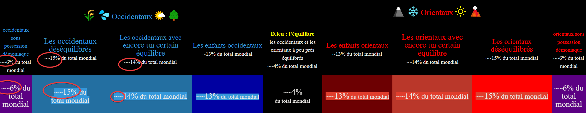 Attention, j'ai estimé qu'une même Créature pourrait être elle-même plutôt dans une colonne, concernant une partie de ses comportements, et pour une autre partie de ses comportements, dans une autre colonne. De plus, à un certain âge, une même Créature pourrait être plutôt écartée du milieu et à un autre âge, plutôt rapprochée du milieu. Les pourcentages 6, 14, 13, 12, 4, 12, 13, 14, 6 sont donnés vraiment à titre approximatif. Peut-être je pris le chiffre 6, pour les extrêmes, parce qu'un chiffre assez connoté, avec le 666. Mais le chiffre 6, à lui seul me sembla-t-il "maudit". Je dus, pour le moins, en douter.
Parfois, en réalisant ce tableau, je dus comme penser à Platon (entres autres) (un Auteur de l'antiquité). Je ne suis plus tout à fait sûr au moment de rédiger ceci, mais rédigea-t-il certains de ses textes avant l'engloutissement de l'atlantide? Genre fit-il comme une archive de son temps avant une catastrophe? Alors je dus parfois songer que cette rédaction sur les Occidentaux/orientaux avait peut-être certaines ressemblances avec les mémoires de Platon. Enfin je devrais me re-renseigner sur ces écrits de Platon. J'ai rédigé aussi ces considérations sur occident/orient, peut-être avant divers événements eschatologiques devant survenir d'après divers Auteurs Chrétiens. (Dont l'engloutissement de certaines parties de la france, l'invasion arabo-russe d'une partie de la france (selon Marie-Julie Jahenny). Une troisième guerre mondiale?)
Comparaison occident/orient
Comparaison générale occident/orient
Occident vs orient - Deux faces d'une même pièce?
Occident et orient, deux faces d'une même pièce?
Des tableaux comparatifs occident-orient, plus haut, j'aurais de quoi estimer, pour une Créature, que ce n'est pas forcément être oriental ou occidental, qui serait vraiment important, mais plutôt être proche ou non de Dieu (être proche ou non de la colonne du milieu, pour rédiger autrement). En fonction des pays, en fonction des Créatures, j'eus l'impression que l'on retrouve parfois une part d'occident chez les Orientaux et une part d'oriental chez les occidentaux.
(Des fois, certains Gens vivant dans les pays orientaux sont plutôt mous, et vice-versa). Avec le temps, il me semble il y a de plus en plus de ressemblance entre Orientaux et Occidentaux, de mélanges. La distinction entre les uns et les autres me sembla parfois assez difficile à faire.
Par exemple, la russie, que certains pourraient croire communiste, me semble de plus en plus capitaliste, occidentalisée. Peut-être bien une partie des Occidentaux et des Orientaux se rejoindront vers le diable. Avant le troisième fiat, avant l'affirmation du règne du royaume du Père, dans leur part négative, j'estime mentalité orientale et occidentale seraient souvent les 2 faces d'une même pièce, une pièce agnostique, plus ou moins pathétique, écartée, égarée, de Dieu. Il ne me semblerait ainsi pas étonnant qu'une partie des Orientaux et des Occidentaux se rejoignent mollement, de plus en plus, vers une religion commune, vers le diable (ou des puissances démoniaques, si certains préfèrent cette appellation). "Néo-tech /zonpower"? Mais d'après diverses "prophéties" de diverses Créatures, même si des doctrines genre "néo-tech zonpower"/new age se mettent en place, ceci ne devrait pas durer des plus longtemps, parce que le Fils ou d'autres devraient réapparaitre et terminer ceci.
"Lorsque viendra le temps de mon Royaume de paix - et il viendra, car je l’ai promis et je ne manque jamais à mes promesses - les bons de la terre viendront tous à moi. Ce sera la période dont je t’ai parlé [2], la période dans laquelle l’esprit [3] aura atteint ce niveau d’évolution en vertu de laquelle vous vous diviserez spontanément en deux groupes. Ceux qui vivent en dehors de l’esprit demeureront dans leurs ténèbres en attendant de former les milices du Prince du mal. Ceux qui vivent dans l’esprit viendront à la suite du saint Fils de Dieu, du Germe du Seigneur, aimé et béni par les Humains dans la grâce qui comprendront alors ce qui maintenant n’est compris que par un petit nombre d’élus, et ils sauront quelle est ma gloire et leur gloire d’Enfants de Dieu.". Le Fils à Maria Valtorta, 12 novembre 1943
Tensions occident et orient. Analogie avec les chiens et les chats
"Orient"
" O c c i d e n t "
Il me sembla qu'actuellement et depuis des siècles, Occidentaux et Orientaux, en général, eurent du mal à se supporter. Par exemple, l'oppression des indiens d'amérique par divers Occidentaux (pseudos-Chrétiens) (je ne mettrais pas tous les "Chrétiens" dans le même sac, au niveau de cette histoire de l'amérique), le conflit états-unis/russie, le communisme contre le capitalisme, brics vs otan.... Les uns étant pénibles envers les autres, comme en général les chiens envers les chats et les chats envers les chiens. Je dirais que pour le chat, pour le moins, beaucoup de choses semblent "balourdes" chez le chien, énervantes, brusques, manquant de finesse, et chez le chien, le chat lui semble un animal non serviable, altier, maniéré, non obéissant, "hautain", "imbécile" à sa manière. Je dirais tout de même que certains chiens se rapprochent davantage d'une allure féline que d'autres, et qu'il y a tout de même parfois de grandes différences entre les divers chiens: certains auraient tendances à aboyer souvent, d'autres quasiment jamais. Tout comme il me sembla y avoir aussi de grandes différences entre divers félins : certains plutôt tranquilles, d'autres plutôt agressifs, sauvages.
À considérer cet occident et cet orient, j'en arrive à suspecter qu'au moins 70% (peut-être même plus de 90%) des Créatures d'âge adulte, dans le monde, furent, et seraient encore, plus ou moins sous emprise démoniaque plus ou moins prononcée. Une emprise relativement diluée en occident, invisible, "innocente", molle, normalisée, une emprise, avec des Occidentaux en général plutôt dans une "folie" douce (démocratie débilitante, ravalant/diminuant les individus en individus "égaux" plutôt qu'en les distinguant. Nihilisme, agnosticisme, impudeur (plages, déshabillement vestimentaire de beaucoup, etc.), culte ostentatoire du corps). Plaisir à être dans une sorte de négation, d'indistinction. Alors que les Orientaux me semblèrent dans une "folie" collective plus visible, "dure", "
" (dictatures, communisme oppressif, pratiques plus sauvages).
Par rapport à l'estime qu'ils ont pour le Fils, j'estime, les Occidentaux et les Orientaux se rejoindraient et seraient comme la face pile et la face d'une même pièce, à l'image de la russie et des états-unis, du communisme et du capitalisme, la droite et la gauche, etc. Le point commun étant l'écart de Dieu, l'écart de la divine volonté, l'écart du respect du Fils. Et j'estime qu'en moyenne, il y aurait davantage de proximité entre un Oriental moyen athée ou agnostique et un Occidental non athée, qu'il pourrait y en avoir entre un non-catholique et un véritable catholique. Par rapport aux Orientaux, beaucoup de situations seraient diluées, léthargique, en occident. Par rapport aux Orientaux, les Occidentaux pourraient donner une impression de société relativement stable, propre, "rangée" (routes, moyens de communication), mais j'estime ce serait non pas parce que les Occidentaux seraient nettement plus proches de Dieu, ou parce qu'ils essaieraient de l'être, mais plutôt parce qu'ils seraient trop mous pour pouvoir dévier de manière aussi visible et rapide que les Orientaux (tout comme l'eau tiède semble moins agitée que l'eau bouillante), et, parce que les Occidentaux habitent en général dans des climats plus tempérés, plus aisés pour travailler (il fait, en général, moins chaud ou moins très froid). Aussi, comme les Orientaux, j'eus de quoi suspecter que la plupart des Occidentaux eurent des plaisirs sensuels, mais ils eurent des plaisirs sensuels relativement peu fréquemment (peut-être aussi moins "sauvagement", en général, que les Orientaux), ainsi, les occidentaux passeraient plus ou moins entre les lignes, mais ils resteraient globalement malsains. (Ce ne serait que reculer pour mieux sauter). Ainsi, par rapport à l'orient, la relative stabilité de l'occident serait en partie plutôt à mettre au compte d'un défaut (la mollesse, le raffinement démoniaque, étalé dans le temps) plutôt que d'une qualité, le fruit d'une volonté de se rapprocher de principes de Dieu.
Mais pour une Créature plutôt équilibrée, quel fut, et quel est, le type d'existence possible, en occident ou en orient? Cet occident, globalement écarté de Dieu, si j'imagine une Créature sainte était placée au "beau" milieu de cet occident, le danger, l'aboutissement bien probable et logique pour cette Créature, serait de risquer une sensation de néant, de lente débilitation, une dépression. Là où en orient, elle craindrait plutôt une oppression physique plus nette, un danger pour son intégrité physique (par exemple attaque au couteau ou autre). En fait, orient et occident seraient dangereux, pour une Créature de la sorte, mais en occident, ce danger serait beaucoup plus dilué dans le temps.
Occident comparé à orient. De base, un même type de Créature?
De base, un même type de Créature, mais l'une qui aurait évolué dans des climats et reliefs plutôt tempérés, et l'autre dans des climats plus extrêmes.
La relative "lenteur" des Orientaux dans le domaine du travail serait-elle surtout à mettre au compte de conditions climatiques plus chaudes.
La mentalité orient/occident au niveau législatif, à l'onu
En fait que me sembla-t-il se passer, au niveau des relations législatives internationales, ces dernières années : D'un côté un occident aux "beaux propos", "belles valeurs", mais qui dans les moments "critiques", met rapidement de côté ses "valeurs". D'un autre côté, un orient (plutôt les russes) qui essayèrent quand même de s'accrocher au texte.
Un peu plus loin, l'audio d'une vidéo de Thierry Meyssan sur des propos de François Hollande, à l'onu : "l'explication de texte". Titre et url d'origine de la vidéo : François Hollande à l'ONU, l'explication de texte - Youtube https://www.youtube.com/watch?v=LYfe9VicdX0 Peut-être bien des années de rapports législatifs occident/orient en partie synthétisés dans cette vidéo. audio de cette vidéo :
Audio de propos de Thierry Meyssan sur des propos de François Hollande, prononcés à l'onu. Version avec voix de François Hollande modifiée (peut-être ceci conviendra mieux pour certaines sensibilités?)Audio de propos de Thierry Meyssan sur des propos de François Hollande, prononcés à l'onu. Version originale, avec voix de François Hollande non modifiée
Une vidéo assez importante, à considérer les circonstances : c'est-à-dire, en général, depuis des décennies, une population, du moins la population française, qui, d'après le nombre de vues des vidéos de l'onu, sembla peu s'intéresser aux décisions internationales. (Les vidéos de ces interventions de Dirigeants ne firent quasiment pas de vues comparées à des vidéos de chansons ou de sport). Donc un décalage entre l'importance des décisions de ces Dirigeants et l'attention qu'il leur fut porté. Il me sembla que de ces décisions, il en alla pourtant souvent de millions de personnes, sur des décennies. (Je ferai peut-être plus tard une analyse plus détaillée de cette vidéo avec extraits audio).
(aparté sur Thierry Meyssan : Certains mettraient peut-être en avant que Thierry Meyssan aurait eut tel ou tel passé. (Peut-être des Gens liés plus ou moins à Pierre-Marie (de oddr)). Je n'en sais trop rien de son passé. Je me concentre sur la qualité intellectuelle des propos tenus dans cette vidéo.) Thierry Meyssan me sembla tout de même un des rares à s'intéresser à cet orient. Un des rares français à avoir eut un certain degré de compréhension des rapports orient/occident. Un des rares journaliste parlant français, à avoir été en syrie lors de la guerre en syrie. Par ailleurs je fais quand même valoir un "hic", parce que le site internet auquel participa Thierry Meyssan s'appela tout de même réseau Voltaire, et Voltaire aurait quand même été anti-Chrétien. (
) (et je vis pour nom de la chaine youtube :VoltairenetTV)
Vidéo de Dirigeant, grande décision
Vidéo de match de finale de football
Quelques milliers de personnes qui s'y intéressèrent
Des millions de téléspectateurs
Situation peut-être compréhensible si on considère souvent la platitude des propos de divers Dirigeants. Mais situation plutôt consternante
Sensation d'Humanité ayant émanée de ceux qui s'intéressèrent à ces décisions internationales
Sensation d'inHumanité, de manque d'empathie pour les problèmes du monde
Orientaux et Occidentaux et images. Mon comportement face à diverses images
Préambule représentation des images occident vs orient
Par rapport aux Orientaux, en général, beaucoup d'Occidentaux me semblèrent ne pas vraiment avoir conscience de l'impact de diverses images. Par contre, les Orientaux, me semblèrent parfois bien violents, dans leurs réactions, par rapport aux images. (Genre fouetter une Créature qui aurait représenté le Prophète de l'islam). En fait il me sembla en aller comme d'une espèce Humaine assez jeune, voire immature, excessive dans un sens ou dans un autre : d'un côté, en général les Orientaux auraient été parfois trop violent dans leur réaction, par rapport aux images (genre Quelqu'un qui aurait la main coupée parce qu'il représenta le Prophète de l'islam). D'un autre côté, en général, les Occidentaux me semblèrent amorphes, insouciants, face aux images (et même de manière générale, dans le rapport au corps).
tableau. représentation des images comportement Occidentaux vs comportements Orientaux
occident
orient
léthargiques/amorphes/indifférents face aux images
trop sanguins dans leurs réactions? parfois violences physiques si représentation d'images
déséquilibre
déséquilibre
Occidentaux et images
En fait, la sensation, depuis bien des années précédant 2024, c'est que cette société occidentale d'images (télévision, publicités) favorisa une ambiance de tension, d'excitation, de compétition assez pénible.
Toutes ces images sur des produits de consommation ne poussérent-elles pas diverses Créatures à essayer toujours plus d'aller vers une compétition sur le matériel? Genre telle ou telle Fille qui verrait sur tel ou tel produit une Fille plus ou moins dénudée, souriante, cette même Fille, ensuite, dans la société, serait-elle poussée à aller toujours davantage à s'acheter du maquillage, tel ou tel sac, à être anxieuse. Je ressenti ainsi, depuis des années, qu'il y avait une sorte de bain sociétal publicitaire excitant.
Mon comportement par rapport aux images sur les produits de consommation, en occident
Ce n'est pas que j'estimerais que parce que telle ou telle image est affichée (genre une image avec une Fille pas des plus habillée), qu'il faudrait des sentences lourdes, comme parfois ce fut le cas en orient.
Par contre, je ne serais pas non plus pour une sorte de bombardement d'images, comme ce me sembla le cas, souvent, en occident (images sur les emballages de produits alimentaires ou autres produits)
En ce qui concerne mes achats de produits sur lesquels il y aurait des images
En fait, j'ai essayé, au moins depuis quelques années précédant 2024, quand j'avais le choix, de privilégier des produits (que ce soit de la nourriture ou autre), des produits avec des emballages sur lesquels n'étaient pas figurées d'Humains (par exemple des visages d'Humains), ou même des parties d'Humains. Pour les produits achetés depuis internet, j'ai essayé de privilégier des produits qui n'avaient pas de publicité avec des visages d'Humains ou des films publicitaires avec Humains partiellement ou complétement visible. Ce qui fit que parfois pour un produit acheté, je dus en parcourir parfois plusieurs autres avant, et privilégier celui qui ne s'accompagnait pas de publicité avec Créature visible.
Qu'est-ce qui put amener chez moi comme un malaise à acheter des produits qui recevaient une publicité contenant des images/photos d'Humain(s)? au moins deux hypothèse/réflexions : - Quand il y a de la publicité pour un produit et que cette publicité est réalisée par un Humain (par exemple Quelqu'un qui tient dans la main le produit et qui souri), alors n''est-ce pas comme si c'est l'Humain qui se faisait au service du matériel, au service de l'objet? Or, il y aurait par là comme une distorsion au niveau de la place faite à l'Humain et celle faite à l'object. Car les objets auraient été créés pour servir l'Humain. (De mémoire, au moins une fois, ceci est évoqué, dans le livre du Ciel, je mettrai peut-être plus tard une référence.) Les objets au service de l'Humain, plutôt que l'Humain au service de l'objet. - Une autre l'hypothèse que je fais sur ce qui put m'amener à ne pas privilégier l'achat de produits ayant des images/photos d'Humains, c'est que d'acheter ces produits avec image(s) publicitaire d'Humain serait participer à une ambiance sociétale d'excitation des Créatures.
pour agrandir/diminuer la taille de l'image avec le scroll de la souris : -soit après avoir double cliqué sur l'image - soit shift+mousewheel ou alt+mousewheel
En ce qui concerne le fait de jeter à la poubelle des produits avec des images d'Humains
Une image présente sur certains emballages. (Pas forcément de la même taille que cette image plus haut)
Y aurait-il un problème à jeter à la poubelle des emballages de produits, emballages ayant une image d'Humains sur ces emballages. Par exemple, des emballages ayants l'image normalement visible ci-contre.
Parce-que si les Créatures ont été créées à l'image de Dieu, alors jeter à la poubelle, un emballage ayant sur lui une image ou une représentation d'Humain (représentation complète ou partielle), ne serait-ce pas comme jeter une image, en partie, aussi, de Dieu, à la poubelle, au milieu d'ordures? Et donc ceci ne serait-il pas problématique? J'estime le mot serait fort, mais même jeter à la poubelle une image représentant un(e) Humain, serait-ce "blasphématoire"? ou sinon blasphématoire, du moins déviant?
Une alternative serait d'acheter des produits étants emballés dans des emballages sans certaines images.
Une alternative aussi à jeter ces emballages à la poubelle, serait-ce de faire du tri sélectif? Serait-ce moins pire que de jeter un emballage avec image d'Humain à la poubelle? D'un autre côté, avec le tri sélectif, par exemple si l'image de l'Humain est sur du papier, et que le papier est recyclé, alors j'imagine il y a des traitements chimiques sur le papier, des transformations et l'image se retrouve "malmenée?" .
Le Fils et les images / une vidéo
Voici une vidéo, avec des considérations sur le Fils, par rapport aux images. S'il est permi ou non de représenter des images.
Bilan occident/orient et ma sensation, sur la représentation des images
Je dirais ce serait pas forcément interdit que de représenter des images et ce serait aller trop loin que d'aller fouetter Quelqu'un(e) ou même le tu*r, si il/elle a représenté des images. Par contre, dans une époque telle quelle, je ne recommenderais pas la représentations d'images Humaines, du moins sur divers produits de consommation.
Ma sensation générale, sur ce qui se passa en occident et en orient, pour la représentation d'images serait celle-ci:
Occident
Orient
Souvent des images sont utilisées pour représenter ceci ou cela. Beaucoup d'images publicitaires
Parfois (voire en général), violence physique si représentation d'images
Excès
Excès
Orientaux - Aspects négatifs - aspects positifs
Orientaux, aspects négatifs
playlist orient, violence en orient, emprise démoniaque en orient
Dans la dernière vidéo de cette playlist vidéo, ceci dut me sembler plus "chaud" (chaud dans le sens tendu) pour les chiens, en orient, qu'en occident. (Quoiqu'il faudrait voir d'où vient cette vidéo, car si elle provient d'inde, je n'excluerait pas que l'inde ait en partie quelque chose d'occidental)
Chez les Orientaux, je dirais, un des attributs négatif, ce serait la surexcitation, la violence. (Ce qui serait cohérent avec les pays chauds: Y fait plus chaud, y sont plus chauds/sanguins... et puis le climat plus extrême : climat de montagnes, déserts (si la carte n°3 en début de page s'avère la plus adéquate pour distinguer occident/orient))
À leur manière, pour eux aussi, pour grande part être écartés de Dieu, beaucoup d'Orientaux, j'eus de quoi estimer, furent possédés par des puissances négatives. Par rapport aux Occidentaux, chez eux, en général tout serait plus violent, moins étalé dans le temps qu'en occident. J'estime ils auraient une amplitude, une intensité dans le comportement à l'image des zones où se situerait l'orient : zone continentales/montagneuses, avec amplitudes de température plus importante (déserts, zones très froides, pôles, montagnes).
Orientaux - Aspects positifs
Il me sembla que le Fils était plutôt en phase avec l'orient qu'avec l'occident. Si le Fils est plutôt pour l'esprit plutôt que pour simplement la matière. Les Orientaux, en général seraient plus pauvres, matériellement, que les Occidentaux, mais au moins, les Orientaux, en général, croiraient à quelque chose, alors que beaucoup d'Occidentaux sont athées.
Le Fils et l'orient
4 décembre 1943 Prétendument le Fils, à Maria Valtorta
le 4 décembre après un moment de torpeur à 23h30 - Le Fils à Maria Valtorta Jésus dit lorsque le soleil se lève dans un ciel serein il nait à l'est. C'est de l'orient que vous vient la lumière et elle avance et croit de plus en plus jusqu'à remplir le ciel de rayons et la terre de tiédeur et de fête. Qu'y at-il de plus beau et de plus grand que le lever du soleil à chaque nouveau matin? Il vous parle de l'ordonnateur suprême de toute chose dont la puissance infinie règle le court des astres avec une pensée d'amour pour vous ces Enfants et auxquels obéissent les astres ces géants démesurés et de l'univers tandis que vous imperceptible poussière éparpillés et sur une planète et non des plus grandes qui tourne à travers les voies infinies du firmament n'estimait pas qu'il soit votre devoir d'obéir par gratitude envers celui qui vous aime et qui est un Dieu. Page que vous pouvez relire chaque matin avec les yeux de l'Âme, à condition de le vouloir. La lumière qui revient suffirait à vous faire méditer pendant toutes les heures du jour nouveau, sur la présence la puissance, la bonté de Dieu et à vous faire penser à moi. Lumière du monde soleil éternel sainte orient le nom d'orient que me donnèrent les anciens d'israël n'est pas erroné. Mon apparition au monde est belle comme l'apparition de l'astre du matin et en tant que soleil j'ai apporté la lumière à ce monde initiant la journée de Dieu qui avait été obscurci à ses débuts par la faute originelle journée qui aura son éclatant coucher de soleil au moment ultime pour ensuite renaître éternelle avec tous ses élus au royaume de Dieu. Je suis l'orient de Dieu celui qu'il annonce au peuple en gendre et par lui je viens sous lui et contrairement au soleil je ne me couche pas. Je reste fixe éternel dans ma divinité autour de laquelle les peuples tournent comme des astres qui tirent vie et lumière de moi. C'est vous et non moi qui connaissez l obscurité des ténèbres parce que la lumière se couche en vous. Non en moi car vous vous écartez de la lumière interposant entraînez-vous les barrières et les éloignements d'une volonté non conformes à Dieu ou de fautes commises contre la loi de Dieu. Venu annoncer le Père seigneur éternel et témoigner de la très sainte existence j'ai construit le nouveau temple au seigneur mais pas le temple matériel de pierre et de mortier que les siècles les Humains peuvent ruiner par les assauts du temps où des guerres. Mais bien le temple dont je suis la pierre mon Église qui ne mourra même pas avec la mort de la terre et qui comme un nuage d'encens et la fragrance d'une fleur montrera au lieu de Dieu désormais libre telle une femme affranchie de toutes les servitudes pour s'unir à son fondateur en des noces éternelle dont les témoins seront ses saints mais bien le temple non collectif mais individuel et pour être individuel il n'en est pas moins saint et éternel que le temple de mon église de votre esprit que j'ai rebâti après que satan lui miné par la faute pour régénérant à la grace vous inondant de mon sens vous enseignant ma parole c'est là ma gloire d'avoir restituer à Dieu les temples vivant de vos amours consacré et le père sein meurent vais de cette gloire en me donnant le pouvoir de juger sur toutes les Créatures que j'ai fait mienne au prix d'un sacrifice sans mesure.
"L'orient, c'est Moi"
Autre extrait 𝟏 𝐚𝐯𝐫𝐢𝐥 𝟏𝟗𝟒𝟕 : "L'orient, c'est Moi" Extrait d'une dictée qu'aurait tenue Le Fils à Maria Valtorta
Orientaux - apects positifs, suite
Je dirais y eurent quand même encore une certaine authenticité, une certaine intelligence.
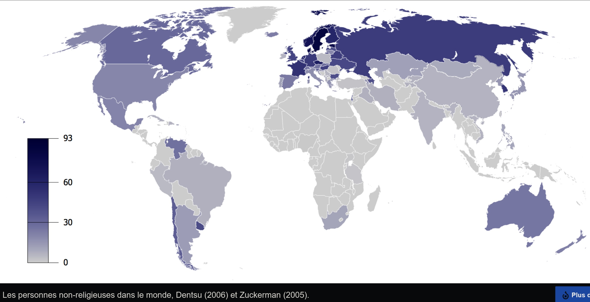 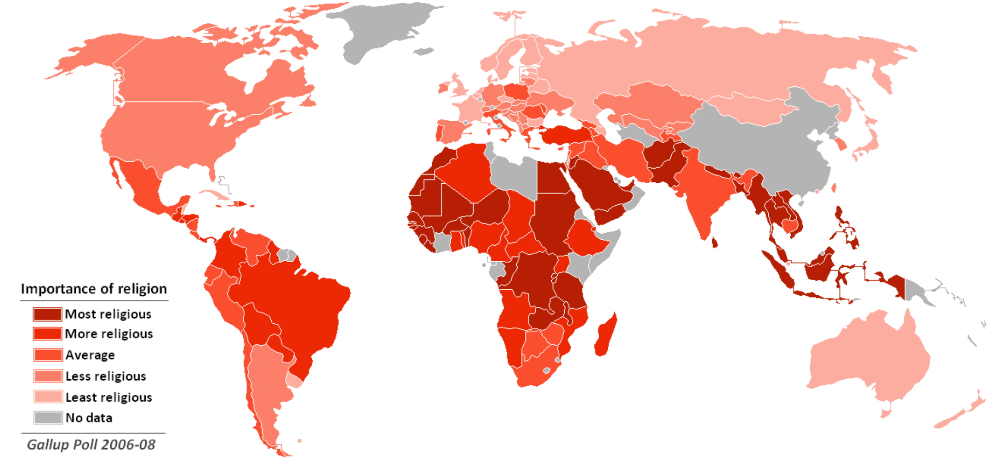Et puis beaucoup, en orient, croient encore en "quelque chose", ou, du moins, sont en recherche de "quelque chose". Même si beaucoup d'Orientaux hindouistes ou Musulmans n'auraient pas le bon Dieu, s'il se trouve que c'est la Trinité, du moins croient-ils en quelque chose, ou du moins sont-ils en recherche.
Comparaison Occidentaux/Orientaux : les Occidentaux:
Au moins, au sein de leurs sociétés, les Occidentaux me semblèrent moins physiquement directement violents physiquement que me semblèrent l'avoir été, en général, les Orientaux 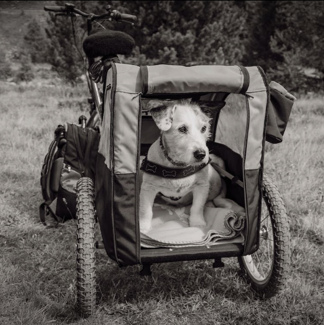.
, un représentant, une représentation, de divers Occidentaux.
Gaston lagaffe
L'occident et le chien
Préambule : L'occident et le chien 🐶🐕🐩🦮🐕🦺, les balles, les ballons⚽⚾, les enquêtes de police 🚨
Il y aurait chien et chien.. Playlist chien ci-dessous
Le chien 🐕, un des animaux, si ce n'est l'animal, qui me semblerait le plus représentatif de l'occident. 🐕 🐕L'animal phare de l'occident.🐕 Un animal comme "fait" pour obéir. Façonné par l'Homme. Le "meilleur ami de l'Homme", dixit bien des Gens. (Alors qu'en réalité, le meilleur ami, serait Dieu, mais bon, dans des sociétés plus ou moins sans Dieu(x)..). Comme si naturellement, la plupart des chiens souhaitaient rendre service. Ce qui me semblerait appréciable/louable comme comportement. Attention tout de même, il y aurait chien et chien : par exemple un chien de petite taille qui aboie "pour un tout, pour un rien", "hautain", et celui, plus grand, relativement calme. Le chien agressif, le chien obéissant/gentil, etc. Le chien de berger et le "caniche à sa mèmère"..
Si je faisais une comparaison entre bien des Occidentaux et les chiens, je dirais qu'un des problèmes majeurs, c'est qu'en général, les Occidentaux, depuis en particulier quelques décennies, furent assez pauvres à distinguer tel et tel Maitre. (Distinction politicien / Philosophe / Théologien). Ce problème de distinction aurait son pic dans ce qu'ultimement beaucoup d'Occidentaux auraient eu du mal à distinguer, c'est-à-dire Dieu et diable.
Occident et chiens. Occidentaux et enquêtes de police
Un autre aspect de l'occident qui serait lié à cet aspect "chien", c'est le goût et les capacités de beaucoup d'Occidentaux pour la police, les enquêtes de police. (Tel pas mal de chiens qui ont des capacités pour flairer ceci/cela, alors que ce serait moins le cas pour les chats.) Ainsi, beaucoup d'Occidentaux me semblèrent avoir eut toute une estime, pour, par exemple, le
Occident et chiens. Occidentaux et balles/ballons. Sport convivial / sport compétitif, professionnel
Chez les Occidentaux, depuis longtemps, un "culte" (ou enfin un fort intérêt) pour les balles, les ballons. (Il me sembla que beaucoup de chiens aussi aimaient les balles.)
Football convivial / sport convivial
Sport de ville/village, sport convivial, sport collectif
Je ne chercherais pas à m'en prendre au sport amateur: parfois, j'estime, divers Occidentaux essayèrent d'être sympathiques, lorsqu'ils proposèrent telle ou telle activité sportive à autrui : par exemple faire une partie de football, ou de sport de raquette, ou autre activité collective avec ballon. Ce ne serait pas noble/gentil, de m'en prendre à divers Occidentaux par rapport à quand ils proposèrent du sport. J'ai moi-même pu ressentir une certaine convivialité lors de certaines activités collectives.
Ce n'est pas que je souhaiterais associer le football à quelque chose de particulièrement négatif. J'estime, il put aussi y avoir quelque chose de convivial dans le football. Mais attention, il y aurait eu football et football. Le football "de village" et le football dit "professionnel" et ses millions d'euros.
Football professionnel / sport professionnel
Sport des villes, sport essentiellement compétitif
Par contre, le sport professionnel, ce serait autre chose. Et il aurait eut de quoi me sembler malsain : à même de faire tourner la tête à des jeunots. Les entrainer vers la drogue, des égarements sexuels. Des jeunots qui se retrouvent, souvent à moins de 25 ans, avec des dizaines de milliers d'euros ou même des centaines de milliers, ou même des millions, des voitures de sport, etc.
François Mitterrand qui alimenta le football professionnel compétitif (j'imagine, il participa à la plupart, si ce n'est toutes les finales des coupes de france), comme la plupart des présidents avant et après lui.
⚽ Un parallèle entre les jeux des gladiateurs et le football professionnel actuel? (Et jabba le huth dans star wars 1) ⚽
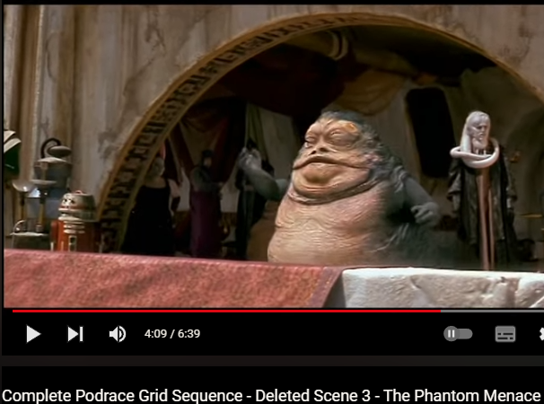
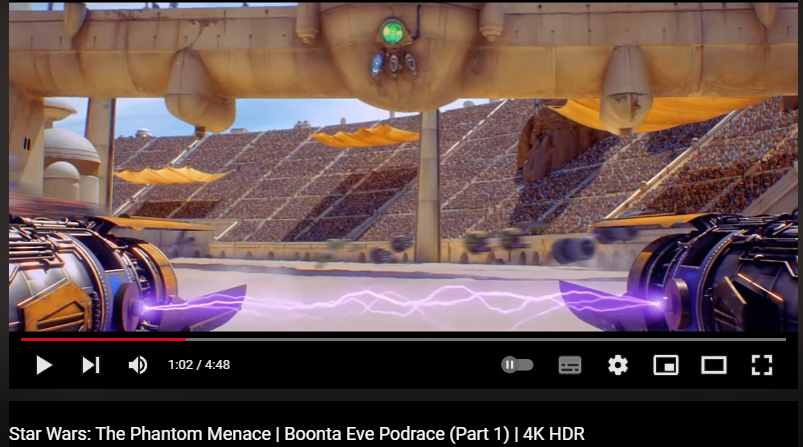
Comparaison jeux de balles/ballons, cartes, dés etc., vs jeu avec leFils
Jeux aléatoires perdant/gagnant et parfois même perdant/perdant (voire toujours perdant/perdant?):
Jeux gagnant / gagnant
Est-ce que beaucoup de jeux, sur terre, depuis des décennies, seraient perdants/gagnants?
Jeux de cartes 🃏♠️♣️♥️♦️
Jeux de balles et de ballons ⚽🏀🏈⚾🥎🎾🏐🏉🏓🏸🏒🏑🥍🏏⛳🥌🎳
Jeux "de société" ♟️
Jeux de dés 🎲
Jeux obnubilants? où en général on ne saurait trop où la balle va tomber, ce que le dé va donner, sur quelle carte on va "tomber"...
Blaise Pascal, pensées, article IV, 1 : La seule chose qui nous console de nos misères est le divertissement, et cependant c’est la plus grande de nos misères. Car c’est cela qui nous empêche principalement de songer à nous, et qui nous fait perdre insensiblement. Sans cela, nous serions dans l’ennui, et cet ennui nous pousserait à chercher un moyen plus solide d’en sortir. Mais le divertissement nous amuse, et nous fait arriver insensiblement à la mort.
Comparativement à Blaise Pascal, je dirais qu'il n'y a pas que le divertissement, qui "nous" "console" (ou plutôt qui "nous" (ou certains du moins) donne une impression de "consolation") mais qu'il y a aussi, en plus, au moins, le plaisir. (S'il est considéré qu'il y a une différence de signification entre les deux mots. Peut-être pour B. Pascal, divertissement et plaisir auraient été identiques? Mais personnellement, je ferais une distinction entre les deux mots.)
Ré-écriture donc de ce passage de Blaise Pascal : La seuleUne des seules choses qui nousdont certainscroient être consolés de nosleurs misères est le divertissement, et cependant c’est une des plus grande de nosleurs misères. Car c’est cela qui nousles empêche principalement de songer à nous eux, et qui nousles fait perdre insensiblement. Sans cela, nous serionsils seraient dans l’ennui, et cet ennui nousles pousseraient à chercher un moyen plus solide d’en sortir. Mais le divertissement nousles amuse, et nousles fait arriver insensiblement à la mort.
"nous fait arriver insensiblement à la mort" : il faudrait que je réfléchisse tout de même davantage à ce qu'il voulut dire par là. Pas sûr que j'ai bien compris, pour le moment, la signification de ce passage.
⚠️à prendre en considération que cet extrait des "pensées" de Pascal était encore à l'état de brouillon. Peut-être B. Pascal n'aurait-il pas été tout à fait satisfait de ce qu'il rédigea?
Tome 27 Le livre du Ciel Le Fils à Luisa Piccarreta Ma Fille, seule ma Divine Volonté peut rendre heureuse la Créature. Par sa lumière, elle éclipse ou met en fuite tous les maux et dit, avec sa divine puissance : « Je suis le bonheur sans fin. Fuyez, tous les maux. Je veux être libre, car devant mon bonheur, tous les maux sont sans vie. » Pour celle qui vit dans mon divin Vouloir, son pouvoir est grand au point de transformer les actions de la Créature.t il se produit - un échange de vie entre elle et Dieu. - un échange d’actions, de pas, de battements de cœur. Dieu demeure attaché à la Créature et la Créature à Dieu. Ils deviennent des êtres inséparables. Dans cet échange d’action et de vie, c'est un jeu qui se joue entre le Créateur et la Créature -qui deviennent la proie l’un de l’autre. Et ce faisant, - ils jouent d’une manière divine, - ils se rendent mutuellement heureux, - ils sont en fête. Dieu et la Créature chantent victoire, se sentent victorieux parce que personne n’a perdu, mais que l’un a conquis l’autre. En fait, dans ma Divine Volonté, personne n’est perdant. Les défaites n’existent pas en elle. C’est uniquement de celle qui vit dans ma Volonté que je peux dire qu’elle est ma joie dans la Création Je me sens victorieux en m’abaissant pour me laisser conquérir par la Créature.
La notion de crise économique en occident.. 🍎💻🚘✈️🥖🚢🥩
Une notion véridique?
Une notion véridique pour qualifier la situation actuelle ou la situation passée?
Qu'est-ce que ce fut et qu'est-ce que c'est que cette notion/expression de "crise économique" pour qualifier la situation économique en occident? J'eus l'impression que ce fut une expression souvent employée, au cours des dernières décennies, en france, du moins. "c'est la crise", "nous sommes en crise". Mais fut-ce une expression assez exacte? véridique? Personnellement, j'ai trouvé que non : En quoi ceci aurait été globalement la crise économique, depuis des décennies, en occident? L'expression "crise économique" ne fut-elle pas, de base, évidemment, exagérée? Je n'aurais qu'à considérer la quantité d'objets matériels que posséda, en moyenne, depuis des années, un Occidental, pour considérer que cette expression de crise fut exagérée. Pour une partie de la population Occidentale (~10%? ~20%?), en occident, qu'il y eut, pour eux, une certaine crise économique, je le conçois : ils auraient eu relativement peu de moyens financiers, eux. Mais pour au moins les 3/4 de la population Occidentale : non. L'Occidental moyen me sembla très loin d'avoir été dans une crise matérielle. Une crise existentielle, oui. Une crise spirituelle, oui. Une crise économique... Faut peut-être arrêter.
Une crise? économique
en occident
en orient
globalement
globalement
non
Opulence
oui, du moins dans certains pays
Crise
matérielle, s'entend
matérielle, s'entend
Pour l 'orient en général (pas tout l'orient non plus), pour les pays dits en développement, les pays pauvres matériellement, beaucoup de pays d'afrique, les pays sous embargo (iran par exemple)
J'estime pas de crise économique globale depuis des décennies (jusqu'au moins juillet 2024 compris). Un ralentissement, je peux le concevoir. Mais une crise?...
véritable crise économique Pas ou peu d'échanges. Population, en grande partie véritablement dans la misère matérielle
Beaucoup d'Occidentaux ne devraient-ils pas avoir plutôt honte de se déclarer en crise économique, à songer au niveau de pauvreté matérielle de millions de Gens, dans le monde.
Un krach boursier... suivi? d'une crise économique
Il me sembla que depuis des années, divers économistes prédirent un krach boursier. Au moins une fois par an, si ce n'est même tous les mois, sur au moins une vidéo youtube ou à la télévision ou à la radio. Mais qu'importe une crise si elle est seulement financière? Qu'importe une crise financière s'il y a encore : - des champs qui continuent à produire de la nourriture (céréales, fruits, etc.) - des hommes pour travailler la terre - du pétrole ou autre énergie - du partage entre les uns et les autres. Il devrait toujours y avoir à boire et à manger, non? Comment ceci pourrait être vraiment la crise économique? Quel serait le sens qu'il y ait une crise économique s'il y a toujours des ressources (eau nourritures etc)? Et mettons qu'un billet (d'une valeur donnée) vaille dix fois moins qu'avant. Qu'importerait ceci, si tout (ou à peu près tout) vaut aussi dix fois moins qu'avant...
J'estime ce serait surtout s'il y a une crise Humaine/climatique majeure, une catastrophe, un "décret divin" (si l'on considère que divers châtiments viendraient de Dieu) qu'il me semblerait qu'il y aurait danger. Si jamais un "châtiment divin" devait arriver sur les Humains.
Crise financière à elle seule
Crise économique
Dans le sens où économique signifierait les échanges alors oui
Quelques remous localisés, quelques variations localisées de l'économie. En quelques mois maximum, retour à la normale des "flux financiers". Pas de problèmes majeurs, mondiaux, au niveau de l'alimentation, de l'eau.
Problèmes majeurs en eau en nourriture matières premières
Conséquence suspectée de cette notion de ''crise économique''
J'estime au moins 1 effet négatif de cette notion de "crise économique", put peut-être découler de cette notion exagérée:
Peiner davantage les Créatures qui furent véritablement dans la misère matérielle. En rendant les Occidentaux un peu plus arrogants. Genre les Occidentaux me semblèrent pour beaucoup dans une aisance matérielle (voiture, électro-ménager, nourriture, etc.) et ils se permirent tout de même de dire qu'ils furent en crise. Des populations de pays en développement se firent exploiter leurs ressources matérielles, ne disposèrent pas eux-mêmes des richesses matérielles de l'occident, et en plus, des Occidentaux prétendirent que ce serait "la crise économique", pour eux. Quel effet psychologique, aussi, pour Quelqu'un(e) qui manquerait d'eau/de nourriture, de voir des Occidentaux, dans une relative opulence, dire qu'ils sont en crise économique..
Causes de cette notion de ''crise économique''
Un occident plus ou moins malade? Malade d'une matérialité sans Âme, ou sinon sans Âme, de trop peu d'Âme?
Les Occidentaux selon le judaïsme (ou enfin, du moins, une partie de ce que j'ai compris qu'étais le judaïsme)
Quelques vidéos de Raphaël Sadin sur Édom et les Édomites :
Vidéo assez intéressante pour comprendre, ou du moins réfléchir, à une grande partie de la mentalité occidentale actuelle et la mentalité occidentale ayant eut lieu depuis bien des décennies.
" Une grande partie des Occidentaux se trouveraient dans une mentalité Édomite. (Sorte de nihilisme à bas bruit.) Mais Édom et Ismaël devraient amener le messie...
Qu'eurent-ils d'autre, beaucoup d' "Édomites", que la terre. Mais peut-être un jour, lors de la délivrance finale, ils reviendront à Dieu et seront récompensés dans des sociétés moins souffrantes, moins égarées.
Une autre vidéo de Raphaël Sadin, sur ces 4 empires
4 colonnes de l'Âme
Joie
Tristesse
Peur
Colère
Babel
La perse
La grèce
Edom
Droits de l'homme, arts, beauté, tête d'or
Quelques considérations sur les Occidentaux - qui seraient pour beaucoup Édomites/''Grecs''/agnostiques
Depuis environ 2 millénaires, et en accélération depuis quelques décennies, une impasse perso-babylo-greco-romaine?
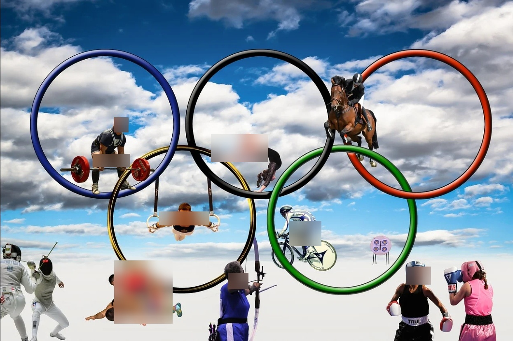
Occident
Apparences à court terme
Réalité à moyen/long terme :
Selfies, sports, loisirs, joie apparente
Pas si heureux que ceci ?
Sport, loisirs, "culte" du corps
Égoïsme? manque de fraternité? manque de Théologie? Tension sociétale? Susceptibilité, en moyenne, en augmentation?
Loisirs
Égoïsme
En fait, pour le moins, l'hypothèse, ma sensation, c'est que depuis en particulier quelques décennies, la plupart des Occidentaux d'âge adulte, furent mollement des Créatures "possédées" par certaines "puissances". Un doux égarement, naturel, tranquille. Doux, car avec beaucoup d'Occidentaux, la plupart du temps, un certain mal qu'ils véhiculèrent fut très dilué, étalé dans le temps. Extérieurement, beaucoup d'Occidentaux actuels purent sembler assez heureux, matériellement riches, avec les selfies, les loisirs, le ski, les plages, les restaurants, les bars... Mais, ce que pour le moins, je dus ressentir/suspecter, c'est que l'on ne pourrait faire une existence de loisirs à ce point, dans un tel monde, et faire abstraction, ne serait-ce que de l'idée Dieu, comme tellement d'Occidentaux me semblèrent l'avoir fait depuis tellement d'années, sans que ceci ait tôt ou tard diverses conséquences. Comme si j'eus un pressentiment que derrière (ou à côté) de nombreux sourires, joies apparentes, il y eut souvent en réalité quelque chose qui n'allait pas. Comme si avec ces sports, loisirs, ils faisaient aussi "les malins". Comme si dans les sports que pratiquèrent souvent divers Occidentaux, il y avait aussi quelque chose qui "écrase" l'autre. Mais le verbe écraser pourrait sembler fort, pour des Occidentaux, dont justement dont un des attributs serait la tiédeur, la mollesse. Plutôt que d'écrasement, il faudrait peut-être plutôt parler de lente compression. Un monde de compétitivité généralisée : Compétitivité dès le jeune âge, à l'école, compétitivité dans le monde du travail, compétitivité dans le sport. Souvent une sorte de relation à autrui compétitive. Une compétitivité mollement négative très répandue et qui me sembla n'en plus finir. Ce qui dut me donner la sensation de sociétés "Humaines" (ou plutôt Humanoïdes) tendues, plus ou moins pathétiques.
Une considération de Catherine Emmerich sur la volonté Humaine: Avant le péché originel, Adam et Eve étaient fort différents de ce que nous, misérables Humains, sommes à présents mais à cause de l'usage qu'ils firent du fruit défendu ils reçurent un devenir formel et temporel, et tout ce qui en eux était spirituel se mua en chair, matière, instrumentalité et réceptivité. Auparavant, ils étaient un en Dieu, et leur volonté ne faisait qu'une avec celle de Dieu. Désormais, ils sont divisés en leur volonté propre, qui est égoïsme, concupiscence, impureté. En cueillant le fruit défendu, l'homme se détourna de Dieu, son Créateur, et ce fut comme s'il usurpait le pouvoir de créer. Dans l'être Humain, toutes les forces, les actions et les qualités, et leurs relations entre elles et avec la nature entière, sombrèrent au niveau de la matière, dans l'ordre corporel, et empruntèrent toutes sortes de formes et d'expressions. À l'origine, l'homme avait été établi par Dieu maître de toute la création. Désormais, tout se trouvait en lui rabaissé au niveau de la nature, il était comme un seigneur que ses esclaves eussent soumis et lié, et il devait à présent lutter et combattre contre ces esclaves. Je ne suis guère capable d'exprimer ces choses : c'est comme si l'homme avait possédé en Dieu l'origine et le centre de toutes choses, et comme s'il les avait ramenées a soi, si bien que ces choses étaient devenues ses maîtres.
En particulier depuis quelques décennies, qu'y eut-il, entre autre, d'inquiétant, avec beaucoup d'Occidentaux?
C'est que j'ai suspecté que petit-à-petit, chez pas mal d'Occidentaux, mollement, une haine, une soumission à des puissances démoniaques s'installait. Et pour la plupart des Occidentaux, sans même qu'ils s'en rendirent compte.
pour agrandir/diminuer la taille de l'image avec le scroll de la souris : -soit après avoir double cliqué sur l'image - soit shift+mousewheel ou alt+mousewheel
Entre autres problématiques, avec beaucoup d'Occidentaux, c'est que je conçus qu'ils ne pouvaient pas être heureux à moyen/long terme, dans un paradigme tel que le paradigme moderne actuel. Et ils durent me donner la sensation, ne serait-ce que pour la plupart d'entre eux, qu'ils ne furent pas à même de s'en rendre compte, ne seraient-ce que puisqu'ils continuèrent à peu près le même style de vie (politique, sociétal). Donc par anticipation, je conçus que sur le long terme, on ne peut être heureux selon le mode de vie de beaucoup d'Occidentaux, et que divers Occidentaux, petit-à-petit, devraient devenir de plus en plus malades, malheureux, pénibles, susceptibles. (Ce qu'il me semble, je ne fus pas le premier à ressentir, à estimer.) D'où le malaise, l'inquiétude face à la situation actuelle du monde. Comme le pressentiment que si beaucoup d'Occidentaux ne changeaient pas, ceci n'allait pas bien pouvoir se passer.
Population/mentalité "païenne/édomite" (je dirais au moins 70% des Créatures de plus de 16 ans, en occident)
Une minorité de la population : les non-"édomite". Et peut-être la plupart des Enfants, aussi.
Plaisirs à court terme. Fausse(s) joie(s) à moyen/long terme. "Haine" individuelle, ou du moins, désespoir qui augmente, petit-à-petit. Rapports à l'autre de plus en plus superficiels. Beaucoup d'Occidentaux qui s'égarent dans le matérialisme, dans une baisse de fraternité. Sociétés, petit-à-petit, de plus en plus tendues.
Inquiétude de comprendre la différence apparence/réalité.
Effet de masse. Beaucoup d'Occidentaux capables de ressentir un malaise existentiel, mais incapables individuellement de théoriser d'où viendraient ce(s) problème(s). Incapables de remettre en question à la base, le modèle sociétal dans lequel ils existent : ne serait-ce que parce qu'à quelques années d'intervalle, des dizaines de millions continuent à participer à la politique et à voter pour des candidats qui les maintiennent dans un système à peu près semblable au système précédent.
Compréhension, ou du moins hypothèse, que l'on ne peut être heureux, selon le mode de vie de beaucoup d'Occidentaux
L'endroit et
l'envers du décor,
chez beaucoup d'Occidentaux.
L'apparence Prévalence donnée au matériel. Ce que virent la plupart des Occidentaux Le court terme : L'extériorité.
Ce que ne comprirent pas la plupart des Occidentaux Parfois à court terme et surtout à moyen/long terme : L'intériorité.
Réalité sur le terrain
Tenues vestimentaires avec robes, décolletés, jupes. Occidental qui se sent libre, qui se croit beau. Qui se croit "stylé".
Impudeur, danger pour la libido. Oppression vestimentaire qui pousse les autres à la compétitivité. Égoïsme.
Société où les plaisirs sexuels sont généralisés? Malheur, superficialité dans beaucoup de couples. Pourcentage de divorces ~50% (en france du moins). Maltraitances conjugales. Difficulté généralisée pour beaucoup à trouver l'amour.
joie à court terme
accumulation d'écart de Dieu joie superficielle, à plus long terme : haine
Consommation de psychotropes élevée.
Joie d'avoir un Enfant.
Enfant délaissé à l'école. Pauvreté en amour, même pour les Enfants.
Enfants de plus en plus malades. (Turbulents, problèmes de concentration, autisme, souffrances, maltraitance)
Charité envers les animaux. Beaucoup d'Occidentaux semblants gentils avec les animaux. Argent dépensé pour les chiens, les chats
Manque de fraternité envers les Humains. Égoïsme. Beaucoup d'Occidentaux qui délaissent les Humains.
Argent non dépensé pour les Humains. Des milliers d'Humains sans toit. Sur terre, environ 2 milliards d'Humains avec des problèmes de nutrition et/ou d'eau potable.
Mixité à l'école, mixité dans beaucoup de milieux professionnels. Édomite qui se croit "égal".
Dangerosité pour la libido.
Plaisirs sexuels généralisés? Pourcentage de divorces ~50%. Maltraitances conjugales.
Âmes de plus en plus malades.
Voyages, loisirs, sport, restaurants, cinéma. Paysages de nature. Sorties.
Manque de fraternité envers ceux qui ont des problèmes de nutrition. Égoïsme.
Société de plus en plus tendue.
Joie apparente de réaliser des voyages spatiaux touristiques.
À moyen/long terme : Haine de ne pas avoir été dans la fraternité. Égoïsme.
Sur terre, environ 2 milliards d'Humains avec des problèmes de nutrition et/ou d'eau potable.
Culte pour le sport, prévalence donnée au sport
Mise de côté de Dieu
"Beauté" extérieure, classe
Sensation de malice
Bilan : Haine qui augmente petit-à-petit
pour agrandir/diminuer la taille de l'image avec le scroll de la souris : -soit après avoir double cliqué sur l'image - soit shift+mousewheel ou alt+mousewheel
En fait, comme la plupart des Occidentaux ne reconnurent par Dieu, furent déséquilibrés dans leur sexualité, l'hypothèse, c'est qu'il émana chez beaucoup d'entre eux quelque chose de possédé, quelque chose de passivement/mollement "démoniaque". En fait, il y eut une grave misère Humaine ambiante, et beaucoup d'Occidentaux (ou plutôt les puissances maléfiques/"démoniaques" qui habitèrent beaucoup d'Occidentaux), me semblèrent comme naturellement essayer de pallier cette misère/inHumanité ambiante, en tournant tout (ou beaucoup de choses, en tout cas) en dérision. Une mentalité particulièrement courante en occident serait l'Édomisme (tel que considéré par Raphaël Sadin, et le judaïsme.
aussi, avait considéré cette mentalité occidentale, il me sembla, en parlant du dernier homme, du nihilisme (dans le livre ainsi parlait Zarathoustra)). Depuis des siècles, beaucoup de religieux considérèrent aussi cet occident comme malade et essayèrent de vivre physiquement à l'écart de la société (monastères, couvents, ermitages). L'Édomisme, la "religion", ou plutôt la mentalité, par défaut, des agnostiques occidentaux. Mais en général, cet Édomisme/nihilisme/apostatisme/égoïsme/matérialisme n'est pas une lumière qui transcende leur(s) problème(s) et qui transcende les autres et le monde, mais plutôt un venin. Le venin du serpent, plutôt que la lumière de Dieu.
Dès l'enfance, dans le système scolaire mixte qui eut cours depuis des décennies, et avec un coup d'accélérateur au moment de leurs premiers plaisirs sexuels (vers 17 ans, en moyenne, en "france"), ne serait-ce qu'à considérer le Christianisme, j'aurais-je eus, de quoi, du moins émettre l'hypothèse, que la plupart des Créatures occidentales devinrent petit-à-petit déséquilibrées (un déséquilibre qui concerne, j'estime, au moins 90 % d'entre elles à l'âge "adulte") et pour au moins 5 à 10% d'entre eux, particulièrement déséquilibrées, démentes/"possédées". Chez la plupart, dès l'enfance, petit-à-petit, des puissances démoniaques s'immiscent. Leur législation est rédigée en général par des Créatures relativement âgées et en général, pour la plupart, déjà déséquilibrées, voire parfois "possédées" par des puissances "démoniaques". En occident, la grande majorité du système scolaire et la quasi-totalité du système professionnel du secteur des services (le tertiaire), en particulier depuis des décennies, la mixité de genre aidant, me semblèrent sous emprise démoniaque. Dans une telle ambiance diluée de démoniaque, j'en arrive à suspecter qu'il se produisit depuis déjà des siècles en occident une inversion : en général, les Enfants eurent une capacité d'intelligence plus élevée que les "adultes" ("adultes" qui en général en savent plus, mais qui ne sont pas en général plus intelligents, mais plus malins, alors qu'ils devraient être plus sages, plus matures, intelligents, en général, que les enfants).
Une promotion molle, souvent innocente, passive, inconsciente, du vice me sembla très répandue en occident : médias, corps plus ou moins dénudés en général (dont notamment les plagistes), publicités, musiques avec paroles vulgaires, prévalence donnée au sport et une mise de côté de la Théologie. Un des attributs de l'occident c'est une forte capacité à normaliser petit-à-petit le vice, avec, entre autres, une apologie du sport et un rejet simultané de l'étude de Dieu (c'est à dire la Théologie). Par exemple certains passèrent leur temps à faire des voyages, à être dans des grands paysages, mais comme ils associent ceci à de l'activité physique (même parfois assez intense), ils crurent compenser leur existence de plaisir, par l'effort physique. J'estime que ce qu'ils "gagnèrent" en plaisirs égoïstes, ils le perdirent en fraternité. Beaucoup de Filles promeuvent aussi les plaisirs, le sport, le corps en général. Ces mêmes Filles qui, du moins pour beaucoup d'entre elles, seraient épouvantées de voir les conséquences de ce qu'elles promurent.
Aussi, j'estime que davantage que l'orient, l'occident, depuis quelques décennies en particulier, fut une place de choix pour diverses puissances démoniaques, et s'il y a un jour un antéChrist, alors cet occident, davantage que l'orient, devrait être une place de choix pour que l'antéChrist y attire des Âmes à lui.
Qu'est-ce aussi, depuis des siècles, que ce concept d'égalité, chez les Occidentaux, sinon un concept d'indistinction, un concept de mort? Un des symptômes d'une société plus ou moins possédée?
En particulier, depuis des décennies, j'eus de quoi estimer que la plupart des Occidentaux créèrent des problèmes. Par exemple, leur obstination avec la mixité de genre me sembla à même de générer tout un tas de déséquilibres, de déviances.
Il serait même à imaginer que si un Machia'h, un Mahdi ou un grand Monarque arrive un jour, dans un premier temps, rien qu'en arrêtant l'apport de problèmes qu'apportent beaucoup d'Occidentaux, il puisse amener quelque chose de très positif.
Hypothèse Mahdi, Machia'h, grand Monarque ou si ce ne sont pas eux, le Fils, lors de son retour
Phase 1
Phase 2
Essentiellement, retrait du négatif : cessation des systèmes dans lesquels beaucoup de Créatures se créèrent elles-mêmes des problèmes : par exemple le système politique, ou le système scolaire : Au lieu de mettre leur Enfant(s) dans un système à même de détraquer la libido de l'Enfant et de le mettre en danger, cessation de ce système.
Apport de positif sur base de laquelle aura préalablement été retiré le négatif
Un des attributs négatif majeur de la mentalité occidentale me semblerait une sorte d'immaturité molle, léthargique, accompagnée d'un contentement de soi. J'eus de quoi croire, dans certains domaines, que les Occidentaux furent plus actifs par rapport aux Orientaux : par exemple depuis des siècles, ils eurent toute une avancée technologique, mais dans leur cas, ceci ne pourrait-il pas aussi être perçu comme un raffinement du vice, une volonté que le monde n'aille pas vers Dieu, mais plutôt reste mollement attaché au diable? Par exemple la conquête spatiale : on pourrait croire les occidentaux (pays "riches" en général) très évolués, actifs par rapport aux orientaux (en général les pays "pauvres"), mais en réalité, cette conquête spatiale, ne serait-elle sous-tendue pas une sorte de grande manœuvre de mise à l'écart de Dieu? Et donc une sorte de léthargie de l'esprit, mollesse envers Dieu, un raffinement dans une mollesse qui préférerait s'adonner aux sciences plutôt qu'à Dieu, autrement rédigé, un raffinement dans l'obscurantisme, la mollesse mentale, mais qui aurait la malice de passer pour l'inverse (une intelligence, une qualité positive)).
Occident et orient sous emprise de puissances démoniaques?
Le monde actuel, un truc pas normal? Pas normal depuis des décennies? des siècles? des millénaires?
Comme une malédiction au dessus de milliards d'Âmes?
« Le goulag ne se résume pas aux prisons et aux camps. C’est tout un monde, une manière d’être, où l’homme apprend à mentir pour survivre, à plier son Âme pour ne pas disparaître. »
« Tout le système se tenait sur la peur : peur de la dénonciation, peur de la prison, peur de soi-même. La peur était le ciment de l’édifice soviétique. »
« Dans le goulag, on apprend à ne plus avoir de nom. »
« Même la bonté devient suspecte. »
« Ici, la mort était si proche que vivre semblait parfois un luxe étrange et presque insolent. Les hommes étaient devenus des ombres de ce qu’ils avaient été, et pourtant, certains continuaient à rêver. »
« L’homme dans le camp se réduit à sa capacité à ne pas penser, à ne pas ressentir, à ne pas espérer. »
Préambule : selon les tableaux comparatifs : Beaucoup de Créatures déviantes? sous emprise démoniaque?
🌳 💦 O c c i d e n t a u x 🌦️ 🌳
Dieu
🏔️☀️O r i e n t a u x❄️🌋 🏔️
"possédés" ~~6%
déséquilibrés ~~15% du total mondial
encore un certain équilibre ~~14% du total mondial
Les Enfants ~~13% du total mondial
~équilibrés ~~4% du total mondial
Les Enfants~~13% du total mondial
encore un certain équilibre ~~14% du total mondial
déséquilibrés ~~15% du total mondial
"possédés" ~~6%
environ 450 millions? (chiffre très approximatif)
1,2 milliards? (chiffre très approximatif)
1,1 milliards? (chiffre très approximatif)
environ 1,1 milliard
Dieu : D'après certains, le Fils, unique peut-être ~~300 millions dans le monde (chiffre très approximatif)
environ 1,1 milliard
environ 1,1 milliards?
environ 1,2 milliards?
environ 450 millions? (chiffre très approximatif)
Des précédentes parties de cette page, en particulier la partie des tableaux comparatifs, mais surtout aussi par expérience, j'aurais de quoi déduire que chez les Occidentaux et les Orientaux, seuls les Enfants et un petit pourcentage des adultes furent, et seraient encore assez proches de Dieu. Pour la plupart des "adultes" occidentaux et orientaux (je dirais au moins 70% d'entre eux), en particulier depuis quelques décennies, j'aurais eu de quoi, pour le moins, me demander, si leur chef aurait été – mollement en occident et plus énergétiquement en orient –, leur chef aurait été "le diable" (ou diverses puissances démoniaques, si certain(e)s préfèrent cette appellation). Et pour le petit pourcentage de Créatures d'âge adulte qui n'étaient pas vraiment comportementalement égarées, ce pourcentage baigna souvent dans un milieu, une société qui était elle-même partiellement dans l'égarement. La plupart de ces Créatures d'âge adulte (que je pourrais qualifier d'Agnostiques/"Édomites"), du moins depuis quelques décennies, la plupart me semblèrent avoir mis de côté la Théologie/Dieu et elles donnèrent une priorité au corps, au(x) sport(s), aux divertissements. Elles eurent des performances physiques (sport, etc.), des performances impressionnantes, mais, petit-à-petit, beaucoup d'Occidentaux se détruisirent-ils avec le physique? Et ne détruisirent-ils pas aussi les autres, puisque ce physique servit, du moins en partie, leur égoïsme, les ténèbres, plutôt que Dieu?.. Beaucoup d'Occidentaux me donnèrent la sensation que l'on pouvait être extérieurement grandement heureux, joyeux, en ne pensant pas du tout à Dieu, à l'Âme. Mais j'ai estimé que beaucoup de comportements Occidentaux furent dangereux, que les Occidentaux en eurent conscience ou non.
Orientaux et Occidentaux sous emprise? Enfumés? 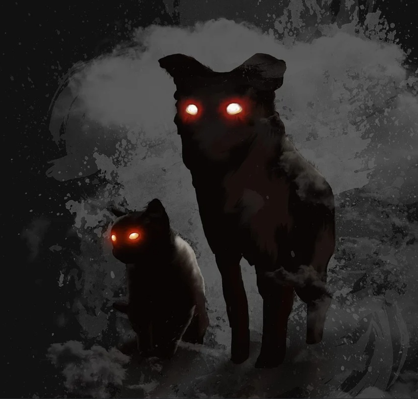
Est-ce qu'en particulier depuis quelques décennies, une partie considérable de la population mondiale de plus de 18 ans, pour donner un ordre d'idée, furent – souvent involontairement, sans le comprendre – du moins à bas bruit, dans un égarement comportemental collectif? Furent-ils sous emprise démoniaque? Ces Gens qui continuèrent depuis des décennies à voter par millions pour des Gens issus du système politique. Eurent-ils conscience globalement des conséquences de leurs votes? Ces Gens qui passèrent tellement de temps à ne pas se renseigner sur la spiritualité (avec des textes catholiques quasiment inconnus, des biographies quasiment inconnus pour certaines figures du catholicisme), mais à rester dans la matérialité. Y eut-il des "puissances"? Qui maintinrent beaucoup d'Occidentaux dans cette matérialité?
Je dirais en occident, s'il y eut emprise démoniaque, elle aurait été une emprise de type plutôt molle, passive. En occident, pas forcément des déviances très expressives, car j'estime qu'en occident, l'emprise, le penchant, se serait fait petit-à-petit, sur la durée. En orient, une emprise donnant plutôt des Créatures agitées.
Dans cette partie, j'étudie donc, s'il y eut matière à ce que beaucoup de Créatures se retrouvent "possédées", je veux dire par là, y aurait-il eu une sorte de déviance comportementale qu'auraient acquises beaucoup de Créatures. Je parcours les étapes que me semblèrent suivre la plupart des Créatures (en Occident, du moins), pour savoir si la société dans laquelle les Créatures existèrent, pour savoir si cette société fut à même de blesser ces Créatures, de les faire dévier, de leur donner de la colère, divers penchants. De constituer pour elles une emprise démoniaque.
Les 5 parties de cette partie intitulée "Occident et orient sous emprise de puissances démoniaques/maléfiques? :
Un âge où la plupart des Créatures n'ont pas vraiment encore de recul philosophique, religieux, politique
Partie 1
Première étape de la plupart des Créatures : L'école : premier endroit de passage pour la plupart des Créatures, du moins en occident : est-ce que le système scolaire va ou ne va pas? y eut-il, et y a-t-il encore, quelque chose de pénible?, malsain?, mal organisé?, dans ce système scolaire
Y eut-il une aura démoniaque, au dessus de l'école, de la sexualité des Créatures, de leurs professions, de leurs loisirs, de leurs politiques?
Partie 2
Étape 2 de la Créature : la sexualité de la Créature, le couple de la Créature. Le couple : la situation dans laquelle se retrouvèrent la plupart des Créatures, passé un certain âge. Là aussi, est-ce que ceci alla, est-ce que ceci va?
"Étape" 2-bis de la Créature : en fait une "étape" que je vais combiner avec l'étape 2 couple de la Créature: La profession : qu'est-ce que "professe" la Créature. La profession : ce à quoi la plupart des Créatures aboutissent, après leur parcours scolaire. En fait, que la Créature ait une activité, ou qu'elle soit sans activité rémunérée, n'aurait-elle pas tout de même une profession : la Créature en activité, professerait plutôt le travail, le monde du travail, alors que la Créature sans activité rémunérée et souhaitant le rester, professerait plutôt de ne pas avoir d'activité professionnelle dans la société (genre, par exemple, les Gens vivants plutôt retirés, comme les religieux).
Partie 3
Tout au long de l'existence de la plupart des Créatures : Les loisirs, les activités des Créatures, en général. Y eut-il une aura démoniaque, au-dessus de ces activités des Créatures?, au cours des dernières décennies
Partie 4
La politique : le milieu politique dans lequel "baignent" la plupart des Créatures tout au long de leur existence: les Dirigeants politiques des Créatures, dans la plupart des pays : eux-mêmes furent-ils sous emprise démoniaque? Le seraient-ils encore?
dernière partie
Dernière étape de la Créature : la fin d'existence de la Créature
Étape 1 de la quasi totalité des Créatures en occident : Le système scolaire🏫: un système sous emprise démoniaque?
Première étape de la plupart des Créatures, en occident du moins : Le système scolaire / l'école. Un premier contact des Créatures avec la collectivité. Pour une quantité non négligeable d'Enfants/Adolescents, un premier contact avec la collectivité, un premier contact raté?
L'école - Préambule
Moi-même, je suis passé, pendant plusieurs années, dans le système scolaire occidental, dans le public. Je n'ai pas été particulièrement violenté physiquement, dans ce système. Par contre, pendant des années, "à petit-feu"🔥, j'ai "expérimenté" – faudrait-il dire subi – ce système. (Actuellement et depuis des décennies, au moins des centaines de millions de Créatures sont passées par ce système, et pour la plupart des Créatures, en occident, passées durant quasiment toute leur enfance, toute l'adolescence, et pour certains, une partie de l'âge dit adulte.)
Quel bilan / point de vue, j'aurais pour mon passage dans ce système scolaire? Peut-être pas si évident à dire car il faudrait faire une compilation de tout un tas d'événement, mais quand même, j'aurais pour le moins de quoi me demander s'il a s'agit pour moi, globalement, d'une forme de salissure / de déchéance. Je pencherais plutôt de ce côté (je rédige ceci le mardi 2 septembre 2025). Un système assez mal organisé / une époque sous aura démoniaque / des Gens relativement immatures mélangés ensembles : à quel bilan s'attendre
Un système, du moins pour certains, un système scolaire d'avilissement de la connaissance? Un système scolaire, petit-à-petit, qui dégoute? Un système scolaire qui salit?
"L'amour est lumière et savoir" / S'il se trouve, au moins en partie, que l'école ne favorisa pas "l'amour" des Uns envers les Autres, alors elle n'aurait pas favorisé le savoir non plus.
C'estMoi seulquipuis dire « Je veux que celui-ci sache »
L'homme a accumulé dans son e/Esprit bien des connaissances, mais il est plus ignorant que lorsqu'il était primitif, car alors, il recherchait les voix du Seigneur et élevait son Âme pour en accueillir les paroles. Aujourd'hui, il cherche tout, excepté ce qu'il devrait chercher, 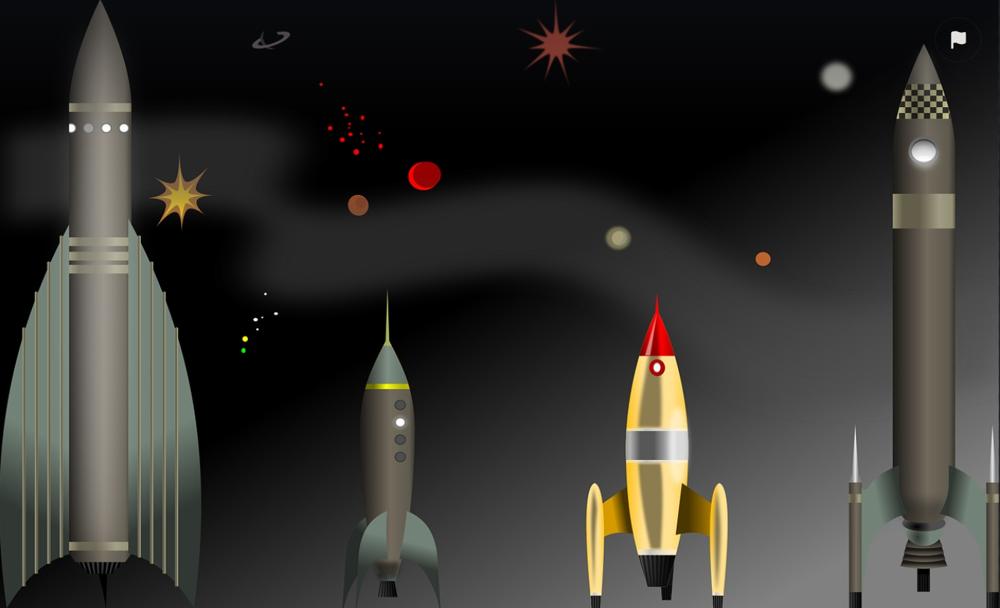et il emplit son être de tout ce qui est dit de plus inutile et de plus dangereux, mais pas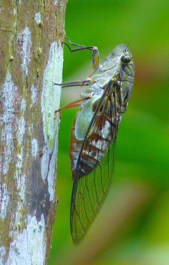 de ce qui pourrait être sa vie. Le Seigneur, dit Baruch, n'a pas fait choix des géants. Il ne leur montra pas la voie de la sagesse. Non, le Seigneur ne choisit pas les géants. Il ne les choisit pas. Il ne les choisit plus. Hommes Laïcs ou Consacrés, qui vous croyez grands pour cette seule raison, que vous êtes bouffis d'orgueil, alors que, à mes yeux, vous êtes moins que des cigales stridantes.Le Seigneur ne prend pas en considération vos diplômes ni vos charges, pas plus que vos vêtements ou le nom que vous portez. Ils ressemblent à des pelures placées sur ce que Dieu regarde pour en mesurer la valeur, l'Âme. Et si vous n'avez pas une Âme brûlante de charité, généreuse pour se sacrifier, humble, chaste.. Non. Le Seigneur Dieu ne vous choisit pas pour être ses bien-aimés, les dépositaires des richesses de sa sagesse. Ce n'est pas vous qui pouvez me dire « je veux être celui qui sait ». C'est moi seul qui puis dire « je veux que celui-ci sache ». Je peux encore avoir pitié de vous parce que vous êtes des malheureux, malades des formes les plus horribles de la lèpre.
L'école - Hypothèse de base / questionnements
L'hypothèse d'un Dieu, une société égarée de Dieu, une école égarée de Dieu
pour agrandir/diminuer la taille de l'image avec le scroll de la souris : -soit après avoir double cliqué sur l'image - soit shift+mousewheel ou alt+mousewheel
S'il se trouve qu'il y a un Dieu, et que ce Dieu fut fortement mis de côté, incompris sur terre, en particulier depuis quelques décennies, et qu'il y aurait eut, sur terre, dans la société, comme une aura "démoniaque", un brouillard... alors, par déduction, j'aurais de quoi estimer que le système scolaire aussi, aurait eut au-dessus de lui (et/ou en lui), ce "brouillard", puisque l'école ferait aussi partie de la société. À croire, ou sinon croire, à du moins à se demander, si depuis des millénaires, ce que touchèrent la plupart des Humains/Humanoïdes, ceci fut entaché par leur comportement et alla plutôt mal. En quoi ne pas déduire, que ce système scolaire, aussi, n'aurait pas eut quelque chose d'entaché, aurait eut aussi un brouillard, au-dessus-de lui, puisque ce fut aussi une structure qui sembla élaborée par des Humains, une structure qui baigna, elle aussi, dans la société (une société elle-même égarée? de Dieu). En fait, Dieu, en particulier depuis quelques décennies, n'ayant plus fait partie de l'équation, j'aurais de quoi en déduire que ce système scolaire, dans son ensemble, fut, lui aussi, mal organisé, voire dangereux.
L'école, depuis en particulier quelques décennies, fut-elle un système oppressif? Participa-t-elle à ce que des Créatures de l'âge d'Enfants, adolescents, ou jeunes "adultes" plutôt gentils, plutôt nobles se retrouvèrent progressivement débilités/"démonisés"? Ce système mélangea-t-il mal les uns et les autres? Un des systèmes les plus dangereux? grave?, actuellement, sur terre? Un système ayant abimé l'Âme de beaucoup de Créatures? Un système qui plaça la Créature dans une première rencontre avec la collectivité, dans une première expérience de la collectivité, une première expérience d'autrui, mais une expérience qui fut à même d'être plutôt gâtée?
L'école : une gravité que je relativiserait : une gravité directe, assez importante pour certain(e)s et plutôt indirecte, relativement peu importante, pour d'autres
En ce qui concerne certaines répercussions du système scolaire, je ne mettrais pas tout le monde au monde au même niveau. Contrairement à une notion "d'égalité" (liberté, égalité, fraternité..), j'essaye de distinguer. Je ne mettrai donc pas tout le monde au même niveau. De base, j'estime la gravité de l'école, ne serait pas la même, que la Créature soit plutôt à proximité de Dieu ou plutôt à distance : des Âmes assez proches de Dieu seraient beaucoup plus négativement directement impactées par ce système scolaire, que d'autres Enfants.
pour agrandir/diminuer la taille de l'image avec le scroll de la souris : -soit après avoir double cliqué sur l'image - soit shift+mousewheel ou alt+mousewheel
L'école/la scolarisation d'un(e) enfant : une lente déchéance d'une Créature? Un abandon? d'Enfant
Je garde l'hypothèse que la plupart, si ce n'est tous les Enfants, dans une époque telle quelle, dans la plupart des établissements, ressentirent une forme d'abandon. Bien entendu, j'estime que les Enfants ne ressentiraient pas tous de la même manière cette sorte d'abandon, quand ils furent placés à l'école.
Une vidéo qui me sembla donner une idée de l'ambiance qui put exister dans beaucoup de milieux scolaires en france (fin XXème ou début XXIème siècle): ambiance amoureuse durable impossible.
L'école, en particulier depuis quelques décennies, un piège?
Voici ce que j'estime des étapes du parcours occidental typique de beaucoup de Créatures scolarisées. (Des millions de Créatures à travers le monde seraient elles en cours de "démonisation" dans un parcours semblable? (Parcours ayant cours actuellement et depuis des décennies au moins)):
À un jeune âge (moins de 5 ans), pour l'Enfant, sensation d'avoir été "abandonné(e)" et/ou du moins délaissé(e) par ses parents : - Le(la) jeune Enfant est placé(e) à l'école (la plupart du temps, en occident, l'école avec mixité de genre,) abandonnée avec de relatifs inconnus, plutôt qu'à la maison avec son père et mère. (Certain(e)s pleurent quand on les laisse à l'école). - pour beaucoup d'Enfants, le père est rarement là, au travail, la mère au travail, absente aussi. Souvent aussi les parents sont divorcés.
Pendant des années, abandon/délaissement de l'Enfant par les parents (l'Enfant n'est plus à domicile, avec son Père et/ou sa Mère): souffrance de l'Enfant? plus ou moins rejet des parents par l'Enfant.
Souffrances de l'Enfant et dans le même temps, diverses excitations dans un système scolaire mixte en genre, un système dangereux.
Le milieu scolaire donne une sensation de jeunesse (puisque composé de beaucoup de "Jeunes") et puis d'engouement collectif aussi, et la plupart ne sauraient théoriser que quelque chose n'irait pas dans ce système (la plupart ne purent que ponctuellement le ressentir?). Et les Filles ne sauraient théoriser que quelque chose n'irait pas dans ce système?
Pour l'Enfant/le Jeune "Adulte", diverses excitations dans une société impudique occidentale agnostique (sans Dieu et même sans recherche de spiritualité).
Médiocrité (ou plutôt ténèbres) du monde "Adulte" (pour certains Enfants/adolescent(e)s, un monde d'ores et déjà associé au mal depuis l'enfance, ne serait-ce que parce qu'associé à l'abandon, ou du moins au délaissement), médiocrité de certaines émissions de télévision, médiocrité de la politique
Souffrance, spleen de l'Enfant/Adolescent.
D'un côté un monde "adulte" pathétique, d'un autre côté, un monde de plaisirs facilement accessibles pour l'Enfant/l'adolescent (nourriture, plaisir du corps, etc.).
Croyance de beaucoup de "jeunes" de pouvoir résoudre leur souffrance par une orientation vers les plaisirs (nourriture et/ou cannabis et/ou cigarette et/ou plaisirs du corps).
Orientation de beaucoup dans divers plaisirs, écarts de Dieu, rapprochement du "diable", emprise démoniaque qui s'accélère
Difficultés en amour, difficultés d'une relation stable, équilibrée, saine, structurante : peine.
Un peu plus âgé(e), pour l'adolescent, parfois première moto ("scoot") (pour certain(e)s), voiture, soirées alcoolisées, puis pour certain(e)s, "fac", etc. Destructuration de beaucoup de Créatures "jeunes" "adultes" occidentales (et de plus en plus en plus d'orientales aussi, puisque globalisation).
Et beaucoup de Parents (occidentaux en particulier), dans le même temps, ne me semblèrent y comprendre pas grand-chose à ce que devenait leur(s) Enfant(s) et/ou étaient eux-mêmes déjà dans divers comportements (plaisirs du corps, etc.). J'imagine, certains, alors même que leur(s) Enfant(s) avai(en)t leur premier(e) "petit(e) ami(e)" se réjouissaient. Mais beaucoup d'adolescents, à l'occasion de ce(tte) premier(e) "petit(e) ami(e)", pour avoir commencé à être dans divers plaisirs corporels, auraient-ils sombrés dans une emprise démoniaque?, du moins partielle.
Des différences mal gérées, entre les écoliers? : incompréhensions et dangerosité, entre écoliers
Comme une fois à l'école je disais tout naïvement, touchant la résurrection, d'autres choses que celles qu'on nous enseignait, et cela avec assurance, croyant dans ma simplicité que tout le monde devait savoir cela comme moi, et ne soupçonnant nullement qu'il y avait là une faculté qui m'était personnelle, les autres Enfants tout surpris se moquèrent de moi et portèrent plainte au magister, qui me défendit sévèrement de me livrer à de pareilles imaginations. Récit d'Anne Catherine Emmerich source :
Je partirais de la considération que pour le moment, l'espèce "Humaine" (ou plus ou moins Humaine (Humaine physiquement, mais symboliquement..)), sur terre, est variée et pour le moment loin d'être stabilisée. Il y a des différences de culture / milieu socio-culturel (en particulier dans les pays où plusieurs "cultures" sont mélangées, par exemple la france), desdifférences de stabilité familiale: certains Enfants ont leurs parents qui sont ensemble, mais par ailleurs, beaucoup d'Enfants ont des parents divorcés, des différences de genre (Garçon/Fille), des différences de libido (certains Enfants sont circoncis, d'autres non). En l'état, mélanger des Enfants, des adolescents ou des jeunes "adultes" aussi différents, dans des classes à plusieurs, ne serait-ce risquer de brusquer ces Enfants/adolescents/jeunes "adultes", ne serait-ce pas risquer de multiplier des problèmes, ne serait-ce pas risquer des déséquilibres, des incompréhensions entre les uns et les autres? Contrairement à la vision idyllique de certains "gauchistes", ou certaines Filles, qui croiraient que l'on va tous être ensembles et que tout va bien se passer, il m'a semblé que la réalité, c'est qu'en particulier depuis des décennies, et encore actuellement, au moins des dizaines de millions d'Enfants, de part le monde, furent à l'école comme dans un environnement dangereux pour eux, propice à les amener à ne pas se comprendre entre eux, propice à ce qu'ils se firent déshonorer, humilier, en général petit à petit. Propice à ce que d'autres Enfants s'en prennent à eux ou qu'eux même s'en prennent à d'autres Enfants. Mais est-ce que la plupart firent vraiment cas de ceci? Il ne me sembla pas vraiment. Une hypothèse c'est que la plupart (si ce n'est tous), petit-à-petit, ces systèmes concentrationnaires scolaires participent à leur faire perdre une proximité avec Dieu, et participèrent à les rendre de plus en plus, partiellement ou non, sous influence de puissances maléfiques/démoniaques. "L'horreur."
Une dangerosité à mélanger des Enfants avec de fortes différences
Différents Enfants mélangés ensemble et dangerosité associée
Dans le tableau suivant j'ai pris l'exemple de 2 enfants différents, à gauche, un Enfant avec force physique importante, issu de famille monoparentale et à droite, un Garçon différent, puis dans la troisième colonne (colonne la plus à droite, j'ai rédigé la dangerosité associée)
Enfant/"jeune" numéro 1 🚸
Enfant/"jeune" numéro 2 🚸
dangerosité associée à mélanger "jeune"1 et "jeune"2
"jeune" avec force physique, carrure assez importante
"jeune" avec force physique, carrure peu importante
dangerosité physique
"jeune" issu de famille monoparentale
"jeune" avec ses 2 parents
jalousie, peine des uns envers les autres
"jeune" fumeur
"jeune" non fumeur
Risque pour le non fumeur d'être incommodé, influencé par le(s) fumeurs.
"jeune" circoncis
"jeune" non circoncis
en général, libido différente? risque d'incompréhension entre circoncis et Incirconcis.
École et intégrité physique des Enfants/adolescents/jeunes adultes
Depuis des siècles, l'école, un système concentrationnaire physiquement dangereux, pour les Enfants/adolescents/jeunes adultes?
Dans une époque où il y a déjà beaucoup de déséquilibres, dans les écoles primaires et les collèges, n'y eut-il pas évidemment un risque, un danger, à mélanger des Enfants ayant les uns et les autres des forces physiques des fois tellement différentes : Certains, au collège en particulier, n'avaient pas encore fait leur puberté, tandis que d'autres l'avaient déjà faite...
École et maltraitance du ''1er de la classe'' ou des élèves avec un certain niveau scolaire
Il ne me sembla pas que je fus le seul à avoir considéré que parfois, le premier de la classe était maltraité, "chicané". (
Or cette situation ne fut-elle pas, depuis des décennies, plus ou moins sordide? Dans un système sain, en quoi le premier de la classe (et/ou en tout cas les élèves ayant des facultés) aurai(en)t à souffrir des autres, ou à faire souffrir les autres? Leur réussite ne devrait-elle pas aller, au contraire, aller avec la joie des autres? Mais si ce système scolaire est justement de base mal fait, malsain, alors que les premiers de la classe, dans ce système purent avoir pour les autres quelque chose de pénible, ceci prend son sens. Car ils furent premiers dans ce système scolaire dont les bases hiérarchiques furent elles-mêmes malsaines, voire "démoniaques". Le(s) premier(s) eu(ren)t donc de quoi passer pour légitimement comme imposteur(s), pénible(s).
Système scolaire actuel : souvent une ambiance non fraternelle
Système sain, fraternel
Hiérarchie, de base, biaisée, malsaine, négativement compétitive, qui pousse à la haine mutuelle.
Hiérarchie saine. Pas essentiellement basée sur une rationalité compétitive, mais plutôt sur l'intelligence, le respect, l'attention mutuelle.
Élèves blessés par le premier de la classe.
Élèves non blessés par le premier de la classe
Premier de la classe maltraité
Maltraitance des élèves vis-à-vis du premier de la classe
Premier de la classe respecté, aimé.
Respect du premier
L'école : Un système de hiérarchisation basé plutôt sur l'intellect plutôt que sur le cœur, la charité
Un aspect horrible supplémentaire, de ce système scolaire?
Ces systèmes scolaires matraquèrent-ils la tête à apprendre sans comprendre? Laissèrent ils penser, sur toute une partie de l'existence de la Créature (quasiment toute son enfance, et toute son adolescence, pour la plupart), que ce qui ferait essentiellement la hiérarchie, ce serait la capacité à répéter plus ou moins comme un perroquet 🦜 : celui/celle qui saurait faire "le perroquet" aurait la bonne note, et l'autre non. Mais, il se pourrait que le diable aussi, il sache "répéter", mimer beaucoup de choses.
Hiérarchie selon le système scolaire actuel
Véritable épreuve de chacun(e)? Sa proximité avec Dieu? 🔆
Est-ce que tu sais répéter ou non? 🦜
Est-ce que tu donnes envie de vivre aux autres? Es-tu Quelqu'un de vivifiant ou non? As-tu dépassé/maitrisé/transcendé tes passions? Es-tu une proie de diverses puissances démoniaques? Souhaites-tu la vie ou la mort de ton prochain.
Impasse sordide de ce mode de hiérarchisation : on peut se retrouver avec des Créatures arrogantes, des Gens qui une fois leur diplôme obtenu utiliseront leur position hiérarchique pour casser les autres, dévitaliser les autres, détruire les autres et se détruire eux-mêmes.
Système insuffisant, pauvre, dangereux
Système sous tutelle de Dieu donc à priori, forcément sain
Citation du Fils, concernant la rationalité sans la foi
Y aurait quand même de quoi se demander si pour le moins, une partie non négligeable du système scolaire est basée sur le rationalisme
Une citation du Fils, dictée à Maria Valtorta, datée du 2 Août 1943 À propos du rationalisme Vois-tu, ma chère Âme. Il y a peu de choses que je condamne aussi sévèrement que le rationalisme qui déflore, désacralise et tue la Foi, je dis Foi avec la majuscule pour dire Foi véritable, absolue, royale. Je le condamne comme mon sicaire. C’est lui qui me tue dans les cœurs, qui a préparé et prépare des temps bien tristes à l’Église et au monde. J’ai maudit d’autres choses. Mais aucune autant que le rationalisme. C’est la semence dont sont venues d’autres, tant d’autres doctrines vénéneuses. Il fut le perfide qui ouvre la porte à l’ennemi. En effet, il a ouvert les portes à Satan qui n’a jamais tant régné que depuis que règne le rationalisme. Mais il est dit : "Quand le Fils de l’homme viendra, il ne trouvera pas de foi dans les cœurs". Le rationalisme fait ainsi son œuvre. Je ferai la mienne. Bienheureux ceux qui, tout comme ils ferment la porte au péché et aux passions, savent fermer les portes du temple secret à la science qui nie, et qui vivent, seuls avec l’Unique qui est tout, jusqu’au bout. En vérité, je te dis que je serrerai contre mon cœur le malheureux qui a commis un crime humain et s’en est repenti, pourvu qu’il ait toujours admis que je peux tout; mais j’aurai le visage du Juge pour ceux qui, se basant sur une science humaine doctrinaire, nient le surnaturel dans les manifestations que le Père voudrait que je donne.
L'école : un piège? un système qui aurait ''tout'' pour plaire?
Un système associé à la rationalité plutôt qu'à la connaissance
Dans le livre du Ciel, d'après le Fils, la connaissance serait ce qu'il y a parmi de plus important.
Beaucoup d'Enfants se sont déjà plaints de devoir aller à l'école et depuis au moins des décennies, beaucoup de parents considérèrent qu'il fallait aller à l'école et que : "tu dois avoir des bonnes notes à l'école / tu dois aller à l'école". Mais tout ceci ne fut-il pas plus ou moins terrible? Pas que la connaissance soit négative, mais des millions de parents n'auraient-ils pas ainsi poussé (sans même le comprendre, mais plutôt, en général, par suivisme) leur(s) Enfant(s) à aller vers un système malsain, destructeur, déshonorant pour l'enfant? Une impasse?
Depuis des décennies, autrement que de l'amour, de l'enseignement, une grande partie de ce système scolaire, ne fut-elle pas (volontairement ou non) un système démentiel/démoniaque, un système d'oppression/d'agacement collectif généralisé?
Un système scolaire associé à la jeunesse : Les Filles face au système scolaire
Insensibilité/incompréhension de beaucoup de Filles face à un système scolaire dans lequel il y a plein d'Enfants.
Comment, face à une école, ne pas avoir l'impression, si l'on s'en tient seulement à l'aspect extérieur, comment ne pas avoir l'impression que ce système ne respirerait pas la jeunesse? : un système dans lequel la plupart ont moins de 20 ans pour les lycées. Moins de 16 ans pour les collèges, et encore moins, à l'école primaire. J'imagine que la plupart des Filles qui eurent leur(s) Enfant(s) à l'école, ne purent pas comprendre qu'il puisse y avoir un problème. Qu'elles purent ressentir de l'anxiété, de l'inquiétude je l'ai conçu, mais qu'elles comprirent en théorie le problème, j'y crus peu. J'imagine que beaucoup de Filles, à partir du moment où elles virent plein Enfants rassemblés, elles ne surent faire l'hypothèse école=danger. J'estime qu'à partir du moment où elles virent des Enfants, la plupart "disjonctèrent". Ensuite, impossible pour beaucoup d'entre elles de faire l'association : endroit où il y a des Enfants / endroit peut-être dangereux/malsain.
pour agrandir/diminuer la taille de l'image avec le scroll de la souris : -soit après avoir double cliqué sur l'image - soit shift+mousewheel ou alt+mousewheel
Hypothèse - Quelques dangers, nuisances, de l'école
École mixité/sexualité des ''jeunes''
De base, l'école actuelle, un système déséquilibrant pour la sexualité? Un système impasse? Un système plus à même de déséquilibrer la libido et la sexualité, plutôt que de l'équilibrer?
Préambule - école et mixité de genre, sexualité
Je pars de la considération que l'école mixte surexciterait, peinerait la sexualité de beaucoup de Créatures de moins de 25 ans. Avec deux éléments majeurs poussant à ces déséquilibres de la libido : - la mixité de genre entre les élèves (Garçons et Filles se retrouvant ensembles), et - la mixité de genre entre les élèves et les professeurs (des professeurs Garçons se retrouvent devant des élèves Filles, ou des professeurs Filles se retrouvent devant des élèves Garçons). À brusquer la relation Garçon-Fille, ce type de système favoriserait-il la production de sexualités faites de plaisirs obnubilants, ruptures amoureuses, crises, instabilités, souffrances, frustrations. En général, ce que je dus pour le moins suspecter, ce fut que même si les Créatures de moins de 25 ans auraient certaines joies, celles-ci seraient peu à même de pouvoir durer dans le temps. Avec aussi, au cours des dernières décennies beaucoup de ces films américains qui centrèrent la relation amoureuse autour de divers plaisirs charnels, et ne permettrait pas, ou à tout le moins rendrait difficile, la structuration d'une sexualité viable, positive, stabilisée, constructive pour la stabilité future de la Créature.
Face au "démon(s)" (ou aux puissances démoniaques, si certains préfèrent cette appellation), en particulier dans une telle époque, l'éveil, la structuration de relations stables, saines, entre Filles et Garçons, ne nécessiterait-elle pas des règles fortes, strictes, saines, Christiques? Mais dans ce système scolaire moderne, mélangeant Garçons, Filles, circoncis, incirconcis, carrures, sensibilités, ces règles ne furent-elles d'entrée mises de côté, ne serait-ce qu'à cause de la mixité, et d'une méthode de hiérarchisation "démoniaque" des Enfants, une hiérarchisation qui se fit par l'obtention de notes selon seulement la rationalité? Mélanger ainsi Garçons et Filles ainsi, ne serait-il risquer des déséquilibres en cascade de la libido chez les Garçons et les Filles? À se demander, si ce système scolaire mixte actuel fut depuis plusieurs décennies satanique/"démoniaque" (volontairement ou non). À s'interroger aussi sur la maturité/l'intelligence de ceux qui promurent ce système au cours des dernières décennies...
Les établissements scolaires ''religieux'' (''catholiques'' ou ''protestants'' ou autres) avec mixité de genre
Même dans les écoles et/ou établissements dits "religieux" mixtes (primaires, collèges ou lycées ou autres établissements): à quoi bon "enseigner" ceci ou cela, si ce serait pour exciter la libido des uns et les autres, à mettre ensemble des Filles et des Garçons? Des Filles parfois avec des jupes... Ne faudrait-il pas être un "lapin de six semaines", un Occidental agnostique, proie facile pour diverses puissances démoniaques, pour ne pas se rendre compte de la dangerosité de telles situations? (Comme si on en était arrivé à un stade d'évolution de l'espèce que l'on pouvait mélanger ainsi les Garçons et les Filles sans aucun risque, sans aucune conséquence(s).)
Ces Créatures organisant ces écoles, ces Créatures, même celles plutôt étiquetées comme conservatrices/rigoristes, avant d'être Chrétiennes/catholiques, ne furent-elles pas plutôt essentiellement Occidentales: c'est-à-dire relativement inaptes à comprendre la dangerosité, les conséquences sur la libido de tels mélanges Garçons/Filles (et en ce qui concerne le mélange Garçons/Filles, ces Créatures parfois étiquetées "à droite", à mélanger ainsi Garçons et Filles, ne seraient elles pas plutôt gauches (gauches dans le sens maladroites), plutôt que droites..). Faudrait-il rappeler à Certains prétendus Catholiques, et organisateurs d'école mixtes, que dans les couvents, pendant des siècles, il n'y eut que des femmes (excepté certains rares moments). La mixité de genre n'était généralement pas de mise, comparativement à cette époque actuelle où en milieu scolaire la mixité de genre semble la plupart du temps ne même plus poser question. Certain(e)s se souviendront peut-être du parcours d'Hildegarde de bingen, ou d'autres. (Hildegarde de bingen qui essaya de partir d'un milieu mixte en genre, pour fonder un couvent non mixte en genre. Eh oui, c'était une époque différente.)
Quelques passages du film "vision". Film à propos de la vie D'Hildegarde de bingen
Dans cet extrait, une des sœurs aurait eut une relation avec un Garçon
Dans cet extrait, Hildegarde évoque qu'elle souhaite fonder une nouvelle habitation (un couvent) sans mixité de genre
Scolarisation en école ''religieuse'' comparée à scolarisation en école publique / laïque
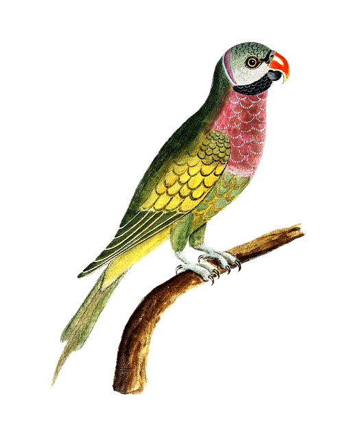Je ne serais pas étonné que scolariser un(e) Enfant (ou un(e) adolescent(e) ou un(e) jeune "Adulte") dans une école mixte "religieuse" fut, et soit encore, pire que le(la) scolariser en établissement public: parce qu'en établissement "religieux", le(la) "Jeune" risque de mélanger le sacré (des notions sur la bible, sur les saints) avec un environnement mixte, excitant, à même de déséquilibrer sa libido (pour être souvent à proximité de "Jeunes" du sexe opposé et de son âge): par exemple si le/la Lycéen(ne) commence à avoir du plaisir corporel sexuel, symboliquement, je suspecte que ce sera encore pire pour elle/lui si elle a une scolarisation en établissement religieux, puisqu'il(elle) aura eu au préalable des enseignements sur Dieu, les saints, etc. (Pour rédiger autrement : il me semblerait moins pire de ne pas être dans un environnement se prétendant religieux et d'avoir été dans la luxure, plutôt qu'un environnement pseudo-religieux/faussement religieux et d'avoir été dans la luxure.) De plus, même si le(la) "jeune" ne va pas jusqu'à la luxure, déjà le(la) mettre en établissement à proximité d'autres Créatures du genre opposé, ceci pourrait l'exciter: J'imagine, par exemple, un cours où l'on parlerait d'Avraham, et où un Garçon commencerait à regarder une Fille, certains de ses vêtements, ou d'autres parties, et ferait monter en lui les désirs, les pulsions, à cet âge-ci, sans avoir été progressivement préparé à se maitriser, à maitriser sa libido : ceci serait-il bien sain comme mélange... (Exciter la libido de Quelqu'un tout en ayant un cours sur Avraham...)
Même beaucoup d'Orientaux standards (non particulièrement rigoristes, comparativement au reste de leur communauté orientale), pour ne pas se permettre de mélanger ainsi Garçons et Filles, pour avoir en général davantage de pudeur que les Occidentaux, me semblèrent nettement plus intelligents, prudents, fins, positivement cultivés que ces "Religieux" "rigoristes" Occidentaux et leur naturel, leur légèreté, ? à alimenter ces systèmes mixtes en genre. J'eus l'impression qu'en général, en moyenne, les Orientaux furent instinctivement plus matures, plus proches de Dieu, à ce niveau, que les Occidentaux.
L'école, 2 exemples de professeurs (ou ex-professeurs) Occidentaux
Etienne Chouard et "Antastesia" (vidéaste)
Étienne Chouard
J'ai un peu vu sa production vidéo. Je m'étais demandé quand même vers où allait le RIC... Je dus penser, "référendum d'initiative citoyenne", ok, mais encore faudrait-il une population relativement saine, mature, en mesure de se prononcer sur certains sujets. Je me suis demandé aussi pour Étienne Chouard, si passé un certain âge on en était toujours à laisser à ce point de côté la Théologie et que l'on accordait autant d'importance à la politique, à l'économie, est-ce que c'était pas déjà le reflet d'un certain degré d'immaturité de l'Âme...
Enfin je ne connais pas trop les théories d'Étienne Chouard, alors je ne souhaiterais pas trop me prononcer sur lui. Je donne plutôt un à priori. Je ne sais même pas si Étienne Chouard est encore professeur en activité, en 2024. De mémoire, je crois qu'il fut tout de même professeur, par le passé.
Étienne Chouard. Ateliers constituants
"Ateliers constituants populaires pour que nous écrivions nous-même la constitution"
Occident / É. Chouard
Orient
Quant t'as passé un certain âge et que tu dépenses autant de temps à t'intéresser à tel ou tel politicien, ou tel système politique et que dans le même temps tu laisses de côté de grandes Âmes de l'Église catholique (ou même la religion dans son ensemble) (par exemple, voici une liste de diverses figures du mois de juin
ou des vidéos de Théologiens), une question devrait peut-être se poser : qu'est-ce que t'es en train de faire de ton existence?
Un "extrême" contre un autre, peut-être ceci pourra-t-il donner davantage d'équilibre?
Voici une vidéo à laquelle me fit parfois penser Étienne Chouard, une vidéo à laquelle il faudrait peut-être qu'il songe, pour? rééquilibrer? sa conception.
Je ne souscris pas totalement aux propos de cette vidéo. La conception d'Étienne Chouard serait-elle extrême dans son domaine? La conception présentée dans cette vidéo serait extrême dans le sien. (Enfin peut-être pas tant que ceci.) Alors un extrême contre un autre, peut-être ceci pourra-t-il donner davantage d'équilibre?
Dieu
déséquilibre
équilibre ↗️
agissons à l'appui de Dieu
Attendons le retour du Fils? et peut-être avant, un Mahdi, et/ou un Machia'h et/ou un grand Monarque(De ceci, E. Chouard, en parla t il?
↖️ équilibre
déséquilibre
Le tirage au sort / laissons faire les Humanoïdes
"people are retarded"
Étienne Chouard, les professeurs d'université et la mixité
Une problématique aussi, que l'on étudie ceci ou cela, quand on est enseignant à l'université/faculté, avec la mixité de genre qui eut cours depuis des décennies dans les milieux scolaires, c'est d'exciter la libido de jeunes Filles ou de jeunes Garçons. Et qu'importe aussi telle ou telle matière enseignée, si elle doit entrainer des dégâts dans l'équilibre sexuel des Créatures. Qui plus des Créatures (pour la grande majorité) relativement jeunes, quant elles sont encore à la faculté (Créature de moins de 25/30 ans, en général).
"Cet esclavage est le commencement de tout autre. L'esclave de la luxure devient voleur et prévaricateur, cruel, homicide, pour servir sa maîtresse. C'est par la chair que Satan est entré dans l'homme, c'est par la chair qu'il y rentre." source:
En octobre 2024, je vis une intervention d'Étienne Chouard sur cnews à propos de l'attentat de strasbourg (ce devait être une interview de 2019). Pascal Praud demanda à Étienne Chouard s'il doutait que le gouvernement était responsable de cet attentat, et Étienne Chouard évoqua qu'il n'en savait rien et je ne vois pas en quoi Étienne Chouard serait aussi particulièrement à blÂmer pour ce qu'il dit à ce moment-là, lors de cette interview. Étienne Chouard me sembla avoir eut un comportement assez sceptique, digne d'un philosophe. Je n'accuse pas untel ou un autre pour cet attentat, mais dans un monde pouvant sembler à première vue "étrange, bizarre" tel qu'actuellement, il y aurait de quoi se demander aussi ce qu'il se passe.
pour agrandir/diminuer la taille de l'image avec le scroll de la souris : -soit après avoir double cliqué sur l'image - soit shift+mousewheel ou alt+mousewheel
Antastesia - YouTube https://www.youtube.com/@Antastesia J'avais commencé à regarder des vidéos youtube d' "antastesia" il y a quelques années.
Antastesia. Des livres d'amour... Son rapport à la littérature Chrétienne
Antastasia me sembla avoir souvent parlé de littérature. Parfois de livres d'amour. Par exemple dans cette vidéo : Des livres d'amour (et plus) - YouTube https://www.youtube.com/watch?v=7sgB0WGahzA ou dans cette playlist de 10 vidéos : https://www.youtube.com/playlist?list=PL3L3mbJ5Cpywtmn4avs8CpDCm5Oufulga Mais, je crois, de mémoire, pas une fois elle évoqua Luisa Piccarreta ou Maria Valtorta ou même d'autres grandes Auteures de l'Église, concernant les livres d'amour. Ces Filles n'auraient-elles pas pourtant vécu les plus grandioses histoires d'amour? (Histoires d'amour rédigées à travers les siècles, sur des milliers de pages, pour le même être : le Fils) Au point, du moins pour certaines de ces Filles, d'avoir été alitées pendant des décennies pour l'être aimé? (c'est-à-dire, peut-être bien Dieu.) Je vis qu'Antastesia avait pourtant des crucifixs dans certaines pièces où elle se filma... (Des crucifix présents déjà dans des vidéos d'Antastesia d'il y a plusieurs années.)
Boucle d'oreille d'antastesia dans une vidéo d'il y a 8 ans (donc en 2015) Charlie hebdo - attack against french newspaper - YouTube https://www.youtube.com/watch?v=3PIXMMCVySA
À croire qu' "Antastesia" en serait restée, pour la plupart des livres qu'elle lut, au niveau de la plupart des Filles de + de 18ans qui lurent : c'est-à-dire plutôt les romans (Balzac, Flaubert ou autres romans d'auteurs plus
(actuels)). Pour la philosophie et la Théologie, à se demander s'il y aurait encore un "plafond de verre".
pour agrandir/diminuer la taille de l'image avec le scroll de la souris : -soit après avoir double cliqué sur l'image - soit shift+mousewheel ou alt+mousewheel
Considération sur la manière de s'être souvent ''habillée'' d'antastesia
Je dus quand même me demander si "antastesia", (et bien d'autres Occidentales), eurent conscience des répercussions que purent avoir leur tenue (ou plutôt partielle tenue?) vestimentaire sur des Garçons et Filles de moins de 25 ans. Aurait-elle considéré que certaines parties visibles d'elle, visibles du moins dans certaines de ses vidéos youtube, ces parties purent déséquilibrer la libido de Garçons et rendre tendues, voire jalouses, certaines Filles?... Le système scolaire serait-il actuellement, du moins en france, un milieu tout à fait stabilisé, stabilisant pour la libido des moins de 25 ans? Les histoires d'"amour", à cet âge-ci seraient-elles tout à fait satisfaisantes? Divers de ces "habillements" (ou plutôt déshabillements?) pourraient ils orienter les relations Garçons-Filles vers certaines activités? Ces "habillements" risqueraient-ils de reléguer bien des Filles à n'être dévolues qu'à un certain rôle, pour les Garçons? N'y aurait-il pas un danger, un risque, de continuer à se mettre telle ou telle "tenue", "habillement"? (ou "déshabillement", vaudrait-il mieux rédiger) Qu'est-ce qu'elle croirait que ceci pourrait faire comme effet, sur des Enfants, adolescents, ou jeunes "adultes" déjà plus ou moins malades?, de voir une professeure femme comme elle devant eux (avec certaines tenues qu'elle mis, parfois, sur certaines vidéos)... Est-ce qu'évidemment, ceci ne leur exciterait/déséquilibrerait pas la libido?... Sans blague. Elle aussi, en tant qu'Occidentale, pour le moins, je doute, qu'elle fut capable de comprendre que ceci puisse créer des déséquilibres, et agir en conséquence. Peut-être le plaisir de se sentir désirée par toute une classe de jeunots et de suiveur était trop fort? (Et elle serait bien probablement loin d'être un cas isolé, actuellement.) Une vidéo parmi d'autres, de sa part : "Pourquoi je ne suis plus là." - YouTube https://www.youtube.com/watch?v=9WcBwg9FbZo Vers 9:20, elle évoque une dépression. Recommandation de ma part: sortir de ce milieu scolaire mixte infernal. Il y a aura peut-être de la souffrance à le faire, mais ce devrait être une souffrance positive, structurante.
La question aura peut-être eu le mérite d'avoir été posée. Quant à sa "tenue", j'estime qu' "antastesia" fut loin d'être un cas isolé. (Sauf que les autres professeur(e)s, en général, j'estime, ils(elles) n'eurent pas de chaine youtube ou d'autres diffusions vidéo publique d'eux. J'imagine, par contre, qu'en classe, beaucoup de professeur(e)s eurent des "tenues" peut-être pas à même d'équilibrer la libido de Garçons et Filles de moins de 25 ans.)
L'école : répéter comme un perroquet à des inconnus : une perversion? voire une humiliation?
De base, avoir à répéter, apprendre par cœur et re-répéter, et en plus être noté pour le faire, une espèce de contorsion malsaine, non-naturelle, de l'esprit? Déjà, ne faudrait-il pas essayer, ne serait-ce qu'un minimum, de s'enquérir de à qui on a à faire, avant de répondre aux questions de Quelqu'un(e)? Un questionnement pourrait être : ne vaudrait-il parfois pas mieux ne pas répondre, quitte à avoir une mauvaise note, plutôt que participer à ce système?
L'école - Une sélection des plus veuls?
L'école - Un milieu qui favorisa la peine, la haine des uns envers les autres? Ce système scolaire, pour être mal fait, ne devint-il pas nécessairement un lieu propice à ce que se cultive une haine des uns envers les autres?
L'école - Une détestation de certains Enfants envers certains professeurs et vice-versa :
Légitimement certains professeurs furent fatigués/peinés par certains Enfants et parfois perdirent leurs nerfs. Mais en réalité, en étant professeurs dans ce système scolaire, n'alimentèrent-ils pas l'environnement qui devait ensuite leur être pénible...
Quelques extraits sur l'école
"Ce que les « écoles supérieures » allemandes atteignent en effet, c'est un dressage brutal pour rendre utilisable, exploitable pour le service de l'Etat, une légion de jeunes Gens avec une perte de temps aussi minime que possible." [...] "Nos lycées débordants, nos professeurs de lycée surchargés et abêtis sont un scandale" 2 extraits du "crépuscule des idoles"(1888), chapitre 5, partie "Ce que les Allemands sont en train de perdre" de Friedrich Nietzsche
Du moins diverses considérations psychanalitiques, pourraient être tirées de divers Penseurs, Auteurs, en fonction de comment ils ont ressenti ce système scolaire bizarre qui perdure encore depuis des siècles. Par exemple, Victor Hugo, "Artiste, écrivain, Poète, Romancier"(1802 - 1885). Faudrait revoir dans quel contexte Victor Hugo a pu prononcer les phrases suivantes, parce-que j'aurais plutôt une autre impression que ce qu'il considéra.
L'impression plutôt que j'aurais. Impression avant délivrance finale.
"Celui qui ouvre une porte d'école, ferme une prison."
À l'époque de Victor Hugo, je conçois que cette phrase put avoir du sens, mais maintenant, je dirais plutôt : Celui qui ouvre une école ouvre une prison. (Voire même deux : la prison constituée par l'école elle-même, et la prison qu'il faudra construire pour ceux qui tomberont dans la délinquance, la criminalité pour partie à cause de l'école dans laquelle ils auront été).
"Les maîtres d'école sont des jardiniers en intelligences humaines."
Plus ou moins bons jardiniers.
"L'école est le berceau de la République." Lionel Jospin
"L'école, c'est une serre où l'on apprend aussi la cruauté et la bêtise des autres" Alice Parizeau , L'envers de l'enfance (1976)
"Les écoles sont des usines de sottise et d'esprit perverti" Thomas Bernhard , Un enfant, trad. Albert Kohn, p.115
"Je hais l'école. Je la hais plus que tout au monde. Et même plus que ça encore... Elle me pourrit la vie." Anna Gavalda Anna Gavalda , 35 kilos d'espoir [Incipit], p.7, Bayard Jeunesse
"L'école contribue à la prospérité des sociétés, à l'élimination des discriminations de toutes sortes, à la défense de la paix et du bien commun, à la meilleure compréhension des peuples." Corinne Lepage
Bilan du système scolaire (c'est à dire la première étape sociétale de la plupart des Créatures occidentales)
Ce système scolaire répondit-il à diverses lois de Dieu? Si ce système fit s'écarter de Dieu, ce système aurait été malsain?, dangereux pour les Enfants/adolescents, jeunes "adultes"?, en particulier depuis quelques décennies, en occident, avec la mise en place de la mixité de genre? (La mixité de genre, que ce fut en milieux scolaire dit religieux, ou non religieux.)
Du moins, mon hypothèse, c'est que depuis des décennies, globalement, le système scolaire fut un système mollement dangereux. Un système de lente humiliation des uns et des autres. Un système qui poussa à obéir plus ou moins bêtement, bassement. Le système scolaire actuel : Une des armes du diable? Dans une époque démoniaque? pré-antéChristique?
pour agrandir/diminuer la taille de l'image avec le scroll de la souris : -soit après avoir double cliqué sur l'image - soit shift+mousewheel ou alt+mousewheel
Alors faudrait-il faire quelque chose face à ce système? Peut-être pas si évident de savoir à l'avance ce que pourrait donner un arrêt de ce système, ne serait-ce que pour ne pas avoir fait collectivement, récemment, l'expérience sociétale de ce que pourrait donner l'arrêt du système scolaire actuel.
Plutôt que divers politiciens qui pour la plupart (si ce n'est tous), depuis des décennies, proposèrent tel ou tel changement de programme scolaire ou autre changement relativement mineur, et qui firent perdurer ce système scolaire, ne serait-il pas plutôt temps, du moins de se poser la question, de savoir s'il faudrait aller vers une suppression tout court, de ce système scolaire? Il ne faudrait pas non plus que l'arrêter ce soit plus pathétique que de le laisser continuer. Du délire, s'il s'avérait qu'arrêter ce système scolaire soit encore pire que de le laisser continuer.
Que firent les politiciens, en effet? Plutôt que d'essayer de faire cesser ce système, ils semblèrent plutôt les gardiens de sa continuation. Tant que les Humains/Humanoïdes ne sont pas davantage stabilisés, en quoi mettre des Enfants à au moins 20, ou 30, ou 40, par classe, améliorerait leur apprentissage, leur croissance, par rapport à s'ils étaient en groupes moins nombreux?
Enfants gardés par les parents?
Serait-il préférable que les parents gardent leur Enfant à domicile, plutôt qu'ils le placent à l'école? À l'école, les Enfants ne risqueraient-ils pas, tôt ou tard, d'être évidemment perturbé par d'autres élèves (eux-mêmes perturbés) ou même de perturber les autres? Situation par contre j'estime assez improbable s'ils étaient à domicile.
La mixité de genre?
Faudrait-il faire cesser la mixité de genre? (C'est-à-dire que les Garçons et les Filles ne soient plus mélangées.) Et que les enseignants pour Garçons ne soient pas des Filles? et vice-versa.
Distinguer les communautés?
Ensuite ou dans le même temps, faudrait-il ne pas mélanger des enfants issus de parents de différentes communautés ("juifs", Musulmans, Chrétiens ou autres).
L'apprentissage en groupe
Je n'écarte pas que l'apprentissage soit facilité quand on est en groupe (à plusieurs plutôt que seul) mais attention, tout (ou du moins beaucoup) dépend du groupe aussi. Si on a plus facilement appris une "notion" parce qu'on était à plusieurs, mais que d'un autre côté l'on s'est détraqué la libido (comme parfois dans l'actuel système scolaire démoniaque), alors n'aurait-il mieux valut ne pas apprendre cette notion et moins risquer de tomber dans l'égarement..
Leçons donnée par le Mahdi et/ou Machia'h et/ou le Fils?
Si la délivrance finale survient, alors des leçons seront données par le Mahdi? et le Mashia'h? et le Fils lors du retour glorieux? Il pourra alors être conçu que de grands groupes communautaires soient formés pour recevoir telles ou telles paroles. (Par exemple lors de paroles prononcées par le Mahdi à la mecque.) Comme les Musulmans ont déjà une formation quant à la mixité de genre (non-mixité de genre et voile) ceci rendrait possible de grands et sains rassemblements.
Pour le moment impossible en occident.
Le professeur des professeurs : le Fils
D'après le livre du Ciel, le professeur des professeurs, c'est le Fils
Quelques extraits du livre du Ciel sur le Christ en tant que professeur:
"Permets-moi de te parler, et écoute attentivement mes Enseignements. -Sache que je suis le Professeur des professeurs. -Si tu veux m'écouter, tu apprendras beaucoup de choses"
le livre du ciel, tome 1 page 130
"Oh! quel sage et ingénieux professeur qu'est Jésus! En un clin d'oeil il fait apprendre beaucoup de choses que d'autres n'arriveraient pas à faire apprendre en plusieurs années. C'est parce que les enseignants de la terre n'ont pas cette puissance de communiquer leur science. Pas plus qu'ils ne peuvent maintenir l'attention de leurs disciples sans qu'il y ait effort et fatigue. Les voies de Jésus sont si douces, tendres et gentilles qu'aussitôt que l'Âme découvre cela, -elle se sent attirée à lui; et -elle ne peut rien faire d'autre que de courir derrière lui à la vitesse maximum. Sans le réaliser, l'Âme se trouve transformée en lui de telle manière qu'elle ne peut pas faire la différence entre elle-même et l'Essence divine. Qui pourrait décrire ce que l'Âme apprend dans ce moment de transformation."
"Il me faisait des suggestions , toujours différentes de celles de la précédente visite. Je peux affirmer sans me tromper que chacune des nombreuses fois où Jésus me parlait, il se servait d'une approche différente pour expliquer les causes et les effets de la vertu qu'il voulait insuffler en moi. S'il l'avait voulu, il aurait pu parler sur la même vertu un millier de fois de plus, et d'un millier de façons différentes: «Oh! mon Divin Professeur, - comme vous êtes savant, - comme je suis ingrate de ne pas vivre selon ce que tu espères de moi!»" Le livre du Ciel, tome 1, page 10
"Puis, pendant quelques minutes, il fut silencieux. Je le contemplais. Et j'ai vu une main munie d'une lumière qui cherchait en moi, dans les endroits les plus intimes et cachés, pour voir si on pouvait y trouver -la connaissance de soi et -l'amour des humiliations, de la confusion et de la disgrâce. La lumière trouva un vide en mon intérieur et j'ai vu que cet endroit aurait dû être rempli d'humiliations et de confusion, suivant l'exemple de mon Jésus béni. Oh! Combien de choses cette lumière et cette attitude sacrée de Jésus me firent comprendre." Le livre du Ciel, tome 3, page 28
Des Créatures devenues mauvaises, dangereuses, auraient-elles put se faire une place de choix dans ce système scolaire? Pourrait-on imaginer que des êtres malicieux arrivent en tête de ce type de système? Avoir des bonnes notes ne suffirait pas à empêcher Quelqu'un de chuter ici ou là : par exemple, avoir des bonnes notes empêcherait-il par exemple de prononcer des mots d'argots? d'être violent physiquement? d'être dans une obsession pour l'argent? une obsession pour la sensualité, un pouvoir illégitime? De plus, le système professionnel, étant aussi, en occident du moins, fortement lié au système scolaire (diplômes), je laisse imaginer la dangerosité du système scolaire, sa capacité d'aliénation ( : Tu cherches à rendre service, tu cherches un emploi, mais tu ne l'auras que si tu passes tel ou tel examen, que si tu obtiens tel ou tel diplôme, que si tu restes des années dans ce système scolaire. Des millions de Créatures de moins de 25 ans seraient ainsi dans ce dilemme, à travers le monde).
Par ailleurs, ce système scolaire peut-il favoriser la vie de couple?
Étape 2 de la Créature : la relation Garçon / Fille, le ''couple'' : globalement, une société déstructurante/déséquilibrante ? pour les relations Garçons / Filles
École et future vie de couple de la Créature
Certains, certaines trouvèrent leur conjoint/conjointe à l'école, mais qu'en fut-il de beaucoup d'autres. Je suspecte que beaucoup de Créatures se fragilisèrent, dans leur conception du sexe opposé, à travers leur parcours scolaire. En particulier depuis le mélange Garçons-Filles, à l'école (autrement rédigé, depuis la mixité de genre).
Couples et chasteté - Situation occidentale
Faudrait-il privilégier la chasteté, dans les couples, en occident? Eh bien ce me sembla un sujet assez sensible, mais de ce que je compris de Maria Valtorta, il me sembla plutôt que oui. J'imagine, pour certains qui auraient de temps en temps du plaisir dans certaines situations, ceci pourrait sembler pénible de passer à la chasteté. Comme la sensation de perdre des plaisirs, mais s'il se trouve qu'il y a un Dieu, et qu'aller vers la chasteté correspondrait à ce que recommanderait ce Dieu, alors il devrait donner compensation à cette perte de plaisirs.
De plus, il y aurait à relativiser la gravité de la luxure, comparée à l'orgueil.
Comparaison orgueil (c'est-à-dire concupiscence de l'orgueil/du pouvoir) comparée à la concupiscence de la chair
Extrait d'une dictée à Maria Valtorta, traduite en français
même pour désigner ce que l'on veut comme Dieu l'a pensé il est le contraire celui qui est contraire à Dieu celui qui est le contraire de Dieu chacune de ces actions est donc l'antithèse des actions de Dieu toute sa machination vise à pousser les hommes à s'opposer radieux voilà qui est satan c'est ce disposer contre moi en actes il oppose à mes trois vertus théologalesla triple concupiscence aux quatre vertus cardinales et à toutes les autres qui proviennent de moi il oppose le vivier de serpent de ces horribles vi mais comme on dit que la plus grande vertu est la charité j'affirme que la plus grande de ces anti vertu est celle qui me répugne le plus c'est l'orgueil c'est par lui en effet que tout le mal est venu c'est pourquoi je dis que si je puis encore compatir à la faiblesse de la chaire qui cède à la tentation de la luxure je ne peux faire preuve de compassion pour l'orgueil qui tel un nouveau satan veut rivaliser avec Dieu je te paraît injuste non considère que la luxure est au fond un vice de la partie inférieure de l'être qui donne à certains des appétits extrêmement voraces, qu'ils satisfont à des moments d'abrutissement qu'il est bête mais l'orgueil est un vice de la partie supérieure de l'Âme accompli avec une intelligence film est lucide un vice prime est dit et et durable il s'en prend à la partie qui ressemble plus à un Dieu ils foulent aux pieds le joyau donnée par Dieu il fait ressembler à lucifer mieux que la chair il sème la souffrance en effet la chaire pourra faire souffrir une épouse une femme mais l'orgueil peuvent faire des victimes dans des continents entiers et cela dans tous les milieux c'est à cause de l'orgueil que l'homme a été détruit et que le monde périra c'est encore à cause de lui que la fois s'affaiblit l'orgueil et la plus directe émanation de satan j'ai pardonné aux grands pêcheurs de la sensualité parce qu'ils étaient privés d'orgueil spirituel mais je n'ai pu sauver deux races jo cadenas sadok elie et d'autres semblables parce qu'ils étaient les orgueilleux. Le Fils - Maria Valtorta 29 décembre 1945
Ma, come si dice che di tutte le virtù la più grande è la carità, così dico che delle sue antivirtù la più grande e a Me repulsiva è la superbia. Perché per essa tutto il male è venuto. Per questo dico che, mentre ancora compatisco alla debolezza della carne che cede al fomite della lussuria, dico che non posso compatire all’orgoglio che vuole, da nuovo Satana, competere con Dio. Ti paio ingiusto? No. Considera che la lussuria in fondo è vizio della parte inferiore che in alcuni ha appetiti tanto voraci, soddisfatti in momenti di abbrutimento che inebetisce. Ma la superbia è vizio della parte superiore, consumato con acuta e lucida intelligenza, premeditato, duraturo. Lede la parte che più somiglia a Dio. Calpesta la gemma data da Dio. Comunica somiglianza con Lucifero.
Semina il dolore più della carne. Perché la carne potrà far soffrire una sposa, una donna. Ma la superbia può fare vittime in interi continenti, in ogni classe di persone. Per la Io sono, come in Esodo.superbia è stato rovinato l’uomo e perirà il mondo. Per la superbia langue la fede. La superbia: la più diretta emanazione di Satana.Ho perdonato ai grandi peccatori del senso perché erano privi di superbia di spirito.Ma non ho potuto redimere Doras, Giocana, Sadoc, Eli e altri pari loro, perché erano i
“superbi”.» Le Fils - Maria Valtorta 29 décembre 1945
Assure-toi que je sois toujours présent pour travailler avec toi Ce que tu fais sera complété avec perfection. Sache que si tu fais toujours cela, tu acquerras la plus grande humilité. Si tu fais le contraire, - l'orgueil rentrera en toi et - elle étouffera cette très belle vertu d'humilité qui a été semée en toi.» Ainsi il me donnait beaucoup de lumière et de grâces et me faisait voir la laideur du péché d'orgueil. L'orgueil est -la plus terrible ingratitude envers Dieu et -le plus grand affront qu'on puisse lui faire, Il aveugle l'Âme complètement, -il l'amène à tomber dans une grande impiété, et -il la conduit à sa ruine. Le livre du Ciel, tome 1, partie 9
Playlist chasteté. Musique(s) relativement récente(s) / Dictées à Maria Valtorta
Chasteté et circoncision - quelques questionnements, quelques considérations
Selon les estimations actuelles, quelque 30% de tous les hommes à travers le monde – à savoir environ 670 millions d'hommes – sont circoncis. Sur ce nombre, environ 68% sont de confession musulmane, moins de 1% de confession juive et 13% sont des Américains
Est-ce que la circoncision favorise/a favorisé la chasteté, un certain équilibre mental/sexuel/sociétal? Une partie du corps du Garçon étant moins protégée par de la peau, alors cette partie frotterait davantage sur du tissu et/ou serait plus à l'air libre, et deviendrait ainsi davantage désensibilisée? Or, l'intelligence, la mémoire seraient liées à la stabilité des passions "sexuelles" aussi (du moins d'après le livre du Ciel (Jésus/Luisa Piccarreta)). Historiquement, fut-ce pour stabiliser certains Humains sexuellement/comportementalement, que Dieu les aurait amenés à se circoncire? : Pour les préparer, en tant que peuple. Alors peut-être la circoncision expliquerait, en partie du moins, pourquoi certains "juifs" auraient une sorte de stabilité sexuelle/comportementale et un certain pouvoir intellectuel, globalement une position d'intellectuel, depuis des siècles, comparé à des non-circoncis? Je ne prônerais pas pour autant la circoncision. Ce n'est pas parce que Dieu aurait demandé de se circoncire à un certain moment de l'histoire, que ceci serait encore maintenant demandé. Mais enfin ceci dépend de qui on prendrait pour Dieu...
Ce que serait la position du Fils, par rapport à la circoncision:
Tout petit, je me suis soumis à la cruelle blessure de la circoncision – qui m’a fait pleurer des larmes amères – non seulement à moi, mais à ma Maman et à mon cher saint Joseph. C’était la coupure que je voulais donner à la volonté Humaine, afin d’y faire couler la Divine Volonté Livre du Ciel – Tome 20 Le Fils à Luisa Piccarreta
Circoncision et relative stabilité chez les circoncis, malgré l'état de la société
D'ailleurs, si Dieu fut/est le Fils, la circoncision, actuellement, n'irait-elle pas tout de même "à l'encontre" de Dieu, actuellement? Le Fils qui évoqua avoir souffert, par sa circoncision, et ne demanda pas son renouvellement, pour les générations après lui (car d'après ce que je compris, il avait prit sur lui cette circoncision, et le travail était fait.)
Pourrait-il y avoir encore davantage de dépassement de soi à arriver pour un Garçon à se stabiliser sexuellement alors qu'il ne serait pas circoncis (par rapport à un circoncis)?
La stabilité de la libido du circoncis serait-elle une stabilité "par défaut"? : À se demander si la "supériorité"/l'équilibre qui pourrait alors sembler émaner de certains circoncis ne pourrait pas sembler aussi une forme d' "arrogance" (aux yeux de certains du moins). Comme s'ils arrivaient à "s'en sortir" d'une société malsaine (dont les milieux scolaires et professionnels mixtes "démoniaques" actuels), mais avec un élément pas forcément encore bien compris/explicité : la circoncision. Cette circoncision leur permettrait un certain détachement/équilibre? Dans cette situation d'incompréhension, les "juifs" auraient un pouvoir sur le monde et se soucieraient en général peu de changer les règles d'un monde dans lequel ils tiendraient parmi les premières places.
Le "juif" qui ne partagerait pas avec le "g*y", aurait peut-être aussi de quoi légitimement énerver le "non-juif"/le "g*y".
Ainsi un circoncis qui pourrait sembler plutôt insensible/stabilisé devant des femmes pourrait énerver un non-circoncis?
Davantage de stabilisation des 2 parties ("juifs"/"non-juifs"), pourrait-elle alors être trouvée si le lien circoncision/stabilité était davantage compris?
Circoncision chez les Musulmans
Très répandue dans le monde musulman, la circoncision, appelée « khitan »n’est pas, une « obligation dans l’Islam », contrairement à la croyance populaire. « Ce n’est pas un commandement mais plutôt une incitation traditionnelle. Il s’agit de l’adhésion des textes judéo-Chrétiens », souligne Patrick Banon. En fait, la circoncision est mentionnée dans plusieurs hadiths (textes retraçant la vie de Mahomet), mais pas dans le Coran. source : https://www.parents.fr/bebe/sante/circoncision-juive-et-musulmane-7264
Conséquences de la non-chasteté sur la société
Plaisirs charnels et déséquilibre chez les Filles
En effet, j'aurais pour le moins de quoi suspecter que beaucoup de "choses" seraient liées à la sexualité, chez les Filles. Extrait audio édité de "
évoqua que ce serait hormonal, mais j'estime ce serait surtout lié au rapport avec Dieu, d'abord. Les hormones seraient plutôt une conséquence qu'une cause.
Déséquilibre climatique et plaisirs charnels
Le plaisir charnel lié aux incendies, inondations, épisodes de grêle, coups de foudre, sécheresse, etc. ?
Chasteté et descendance
>Joachim et Anne arrivèrent à une espèce d'échancrure au bord extrême de la montagne du temple, vis-à-vis de la vallée de Josaphat. On ne pouvait pas aller plus loin dans cette direction ; le chemin tournait à droite ou à gauche' ils firent encore une visite dans la maison d'un prêtre ; puis je les vis avec leurs Gens reprendre le chemin de leur demeure. Arrivé a Nazareth, Joachim fit un festin de réjouissance, donna à manger à beaucoup de pauvres et répandit de grandes aumônes. Je vis la joie, la ferveur des deux époux. leur reconnaissance envers Dieu en pensant à sa miséricorde envers eux ; je les vis souvent prier ensemble les yeux baignés de larmes. >Il me fut expliqué, à cette occasion, que les parents de la sainte Vierge l'engendrèrent dans une pureté parfaite et par l'effet de la sainte obéissance. Si ce n'eût été pour obéir à Dieu, ils auraient gardé perpétuellement la continence. J'appris en même temps comment la pureté, la chasteté, la retenue des parents et leur lutte contre le vice impur ont une influence incalculable sur la sainteté des Enfants qu'ils engendrent. En général, je vis toujours dans l'incontinence et l'excès la racine du désordre et du péché. Anne Catherine Emmerich
Réflexion sur la sexualité à partir de diverses chansons de la Chanteuse Mylène farmer
Mylène farmer. Des décennies d'errance amoureuse?
« La pureté demande la pudeur. Celle-ci est une partie intégrante de la tempérance… Elle est ordonnée à la chasteté dont elle atteste la délicatesse. Elle guide les regards et les gestes conformes à la dignité des personnes et de leur union. La pudeur est modestie. Elle inspire le choix du vêtement. Elle maintient le silence ou la réserve là où transparaît le risque d’une curiosité malsaine. Elle inspire une manière de vivre qui permet de résister aux sollicitations de la mode et à la pression des idéologies dominantes. La pudeur naît par l’éveil de la conscience du sujet. Enseigner la pudeur à des Enfants et des adolescents, c’est éveiller au respect de la personne Humaine » (CEC, nos 2521-2524)
Hypothèse. Mylène farmer, synthèse anthropologique, caractéristique du déséquilibre de la libido chez la Fille post "libération sexuelle" / mai 68.
De base Mylène farmer - à mon goût - avait des qualités en chant et une sensibilité artistique, mais une partie de ses chansons me laisseraient suspecter que Mylène farmer tomba sur un partenaire l'ayant entrainée vers une certaine sexualité (Laurent Boutonnat). Mais d'un autre côté, j'ai suspecté que Mylène farmer alimenta aussi le déséquilibre de Laurent Boutonnat. (Probablement il n'en aurait pas été de même de la part d'autres Filles.) Mylène Farmer dut me sembler assez intéressante, en ce que j'eus du moins de quoi suspecter que Mylène farmer pourrait représenter/synthétiser pour bonne partie la sexualité de beaucoup de Filles occidentales contemporaines, post mai 68 : un mélange de haut et de bas, de déséquilibres, les deux Créatures du "couple" se tenant par "le derrière". Beaucoup de paroles des chansons que Mylène farmer chanta, ne pourraient-elles servir comme de manuel psychanalytique.
est la chanteuse française qui a vendu le plus de disques depuis les années 198010,11,12,13,14 (plus de 30 millions)15,16,17,18. Elle est également l'artiste ayant classé le plus de titres à la 1re place des ventes en France (21 chansons no 1)10,19,20 ainsi que dans le Top 10 (58 titres)2
Mylène Farmer - Adolescence - Une Créature qui fut incitée au plaisir?
Déjà, relativement ''jeune'', une Créature qui fut incitée au plaisir?
Me sembla promouvoir la relation libre, de l'"amusement", dans la chanson "maman à tort" (1984). Évoque qu'elle aime les "plaisirs interdits". Même si elle démenti cette interprétation.
"
".
Mylène farmer aurait-elle déjà à cette époque été sous emprise démoniaque et plus à même de se rendre compte, en partie du moins, de ce qu'elle chantait? Un certain passage de la musique "maman à tort", je dirais ambigu tout de même: "j'aime ce qu'on m'interdit, les plaisirs impolis" (D'ailleurs pas des plus habillée dans le clip officiel.) Mais maman aurait-elle eut, ne serait-ce qu'un peu, raison?
Mylène farmer, adolescence - Une croissance émotionnelle globalement stoppée vers 17 ans?
Mylène farmer, à l'image de beaucoup de Filles occidentales ayant participée aux plaisirs charnels?, aurait-elle eut une croissance émotionnelle globalement stoppée vers 17 ans? (ou enfin à l'âge où elle eut du plaisir charnel pour la première fois) (17 ans serait l'âge moyen des premiers rapports "sexuels", en france). Voire même un âge mental moins que 17 ans? 10/12 ans? Car déjà vers 17 ans, beaucoup de Filles n'ont plus comme objectif de danser devant des milliers de Gens sur une scène. (Ce n'est pas que j'aurais essayé d'être méchant avec Mylène Farmer. Son cas, pour la partie plaisirs charnels, aurait loin d'avoir été un cas isolé).
Mylène farmer - Chanson "Plus grandir" (1986)
I won't grow up / Peter pan
Créature psycho-traumatisée par la sexualité? Qui finalement aurait préférée "ne plus grandir"?
"Not me, Not I, not me, not me, I won't grow up"
Expression d'une volonté de ne pas grandir. Volonté que je trouverais en partie justifiée, si la société "adulte" n'est pas attirante. Mais attention, il n'y a pas que la société "adulte" agnostique. Il y eut aussi la Théologie. Ne pas grandir dans cette société, ne signifierait pas forcément, qu'il ne faille pas grandir en Dieu, en Théologie. 😉
Quelques différences entre une Théologienne et Mylène farmer (Mylène farmer ou pas mal d'autres chanteuses/artistes)
Théologienne
Mylène farmer
Je veux pas grandir dans cette société
Je veux pas grandir dans cette société et je ne veux pas grandir, tout court
Je sors de la société (couvent ou solitude)
Je reste quand même dans la société Je me dandine quand même en société et devant des milliers de fans, en concert
Je grandis en Théologie
Je grandis peu, ou même pas, en Théologie
Mylène Farmer - Un spleen mental
Un spleen mental lié à une époque , mais aussi lié (ou aggravé) par une existence vouée aux plaisirs de la chair?
Désenchantée (1991)
À quel saint se vouer? : Marie Madeleine, par exemple. (Voir par exemple
Maria Valtorta, pour les passages sur Marie Madeleine
).
Expression d'une confusion mentale conséquente à une passion de la chair?
"flotter dans l'air trop lourd... du presque rien"
"je voudrais retrouver l'innocence" (innocence des sens perdue? parce que maintenant "possédée" par une passion de la chair?)
"Mais rien n'a de sens"
"plus rien n'a de sens, rien ne va, tout est chaos" : sorte de spleen mental consécutif aux plaisirs de la chair, comparable à celui du roi Salomon?
"tout est chaos, à côté"
Mylène Farmer - La chanson et le clip ''sans logique'' (1989)
Dans le clip "sans logique", des clichés, des symboles sans forcément d'articulation logique univoque entre eux. (Enfin pour ma part, je n'en ait pas trouvé.) Symboles auxquels l'un pourrait donner un sens, un autre tel autre sens. À l'image d'un film de Stanley Kubrick.
Mylène Farmer - Les chansons ''libertine'' et ''comme j'ai mal''
Libertine (1986)
Comme j'ai mal (1996)
D'un côté me sembla chanter avec une certaine joie : "C'est nue que j'apprends la vertu". "Je suis libertine, je suis une cat*n." Comme si elle disait : "Regardez-moi les Garçons, je suis une forte tête, les plaisirs sont les plus forts. Je m'amuse, you-ouh"
"Je suis une libertine, je suis une catin"💃😀
Ambiguïté. "Schizophrénie" symbolique :
"Comme j'ai mal" 😧
D'un autre côté, Mylène farmer chanta: "Comme j'ai mal." Quel mal? Mal mental, mal à la conscience pour avoir été dans le plaisir charnel, et/ou mal physique au corps?
Diverses puissances "démoniaques" présentes en Laurent Boutonnat auraient-elles transformé Mylène farmer une sorte de poupée à plaisirs?...
"Je te laisse parce-que je t'aime": Psychanalitiquement, paroles assez typiques d'une instabilité, d'une contradiction, une situation étrange, symboliquement schizophrénique.
Par exemple, dans le livre du Ciel, Jésus avait évoqué qu'il aimait Luisa Piccarreta, et qu'il ne la laissait jamais (même quand elle avait l'impression d'être abandonnée).
Mylène Farmer - chanson ''Pas le temps de vivre'' (1996)
Je n'ai pas le temps de vivre Quand s'enfuit mon équilibre Je n'ai pas le temps de vivre Aime-moi entre en moi Dis-moi les mots qui rendent ivres Dis-moi que la nuit se déguise Tu vois je suis comme la mer Qui se retire de n'avoir pas Su trouver tes pas
De qui s'agit-il, dans le "tes" de "Tu vois je suis comme la mer qui se retire de n'avoir pas su trouver tes pas" À un Garçon à travers lequel Mylène Farmer n'aurait su (ou put) trouver ses pas? À Dieu ? Elle n'aurait pas su trouver les pas de qui? De Dieu? ou de Dieu à travers un Garçon?
Mylène Farmer - La chanson ''redonne-moi'' (année 2005)
Dans le clip "redonne-moi", Mylène farmer dit, à l'impératif, "redonne-moi". Là encore, dans cette chanson, Mylène farmer me sembla comme appeler à l'aide, mais dans le même temps, Mylène farmer continuait à faire des concerts et dans ces concerts à se mettre certaines "tenues". (Redonne-moi le goût de moi, mais je continue à me dandiner).
d'un côté cherchant à attirer, à plaire aux Garçons (ce qui pourrait sembler assez positif, sain, naturel, de base)
mais
d'un autre côté, elles ne les attirent pas vers une stabilité, mais vers des déviances, elles jouent sur une "faiblesse(s)" de beaucoup de Garçons : la chair.
Un problème de maturité de la relation amoureuse? (Mais peut-être pas tout à fait de la faute des Filles, s'il y a souvent des Garçons qui pensent essentiellement à les prendre du plaisir charnel et à ne pas veiller à leur pudeur...)
J'imagine, si un Garçon serait venu voir Mylène farmer pour lui proposer une relation stable, à condition qu'elle arrête de s'exhiber à tout-va, je suspecte que pour la plupart de ces Garçons, si ce n'est tous, Mylène farmer les auraient rejetés. Probablement fut-il trop savoureux? pour Mylène farmer de continuer à s'accaparer le regard de divers Garçons. 💃🎉 Ce qui la rendrait pénible/"démoniaque", frustrante, car d'un côté elle attire : "redonne-moi", (dans une autre chanson elle dit "appele mon numéro") mais d'un autre, elle repousse. Ce type de mentalité, qui me semblerait assez pénible, voire insupportable, j'estime serait souvent retrouvable, retrouvé, avec diverses Filles
d'un côté, elles évoquent qu'elles manquent d'amour, elles apitoient et attirent, en particulier, les Garçons, à elles.
mais d'un autre côté comme pour mieux les repousser/frustrer? car, ne leurs disent-elles pas aussi : laisse-moi surtout rester "peter-pan" : beaucoup de Filles restent attachées à diverses "frivolités" et rembarrent la plupart des Garçons (Je t'excite avec mes tenues, mais si tu viens vers moi, je m'en vais ailleurs...). Comme si "le diable" se serait servi d'elles pour attirer les Garçons et se donner une sensation de domination malsaine, une sensation de puissance malsaine, une puissance frustrante, plutôt que pour équilibrer.
Mais bon, s'il n'existe quasiment pas de Garçon capable de les amener vers la chasteté. Serait-ce par défaut que des Filles comme Mylène farmer finiraient par devenir pénibles? Mais d'un autre côté, il pourrait être considéré que cet argument ne soit pas tout, et que ce soit trop facile pour les Filles de dire que c'est parce qu'il n'existe pas de Garçon "à la hauteur", qu'elles n'eurent pas le choix : car il a bien existé des Créatures qui sont tout de même restées assez stables malgré les épreuves (comme
à employer l'impératif dans plusieurs des paroles de ses chansons, aurait-elle été liée à une Âme aliénée?
J'estime qu'avoir une propension à employer le mode de l'impératif dans les paroles que Quelqu'un(e) prononce, ne serait pas forcément négatif. Mais ceci dépendrait de qui aurait cette propension : Quelqu'un(e) plutôt inspiré(e) par Dieu, ou Quelqu'un(e) plutôt inspiré(e) par le diable : qui ordonne? Dieu, ou le diable qui passe à travers la Créature? Dans le cas de Mylène farmer, j'eus de quoi, pour le moins suspecter, que ce fut parfois plutôt "le diable" (enfin diverses puissances démoniaques immiscées en Mylène). Alors chez elle, cette propension à employer l'impératif, fut-ce lié à une Âme elle-même habituée à obéir aux injonctions de "puissances maléfiques"?
"Souviens-toi du jour"
"Optimistique-moi"
"Dessine-moi un mouton" (live)
"Pardonne-moi"
"Appelle mon numéro"
"N'oublie pas"
Musique "Libertine" : "Je, je suis si fragile, qu'on me tienne la main"
"Redonne-moi"
"Aime-moi entre en moi"
"Dis-moi les mots qui rendent ivres"
"Dis-moi que la nuit se déguise"
Mylène Farmer - Dernièrement (2023), des concerts
Dernièrement, encore des concerts où elle ne fut pas des plus vêtue.
Bilan psychique: eh bien, je dirais, Mylène farmer, bien probablement une Âme qui fut sous influence de puissances démoniaques, une Âme qui fut un outil de puissances démoniaques
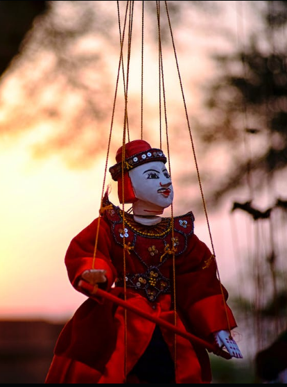En elle-même, je dirais passivement, indirectement, "innocemment" "diabolique", comme de nombreuses autres chanteuses et autres Filles relativement exhibitionnistes (actrices, etc.) et comme la plupart des Filles "diabolisées". Mais je dirais ce n'est pas vraiment comme si elles extériorisaient le mal assez visiblement, mais plutôt comme si elles en furent un reflet/un vecteur passif. Une passivité qui dut me rendre l'examen de leur cas assez compliqué, par rapport à l'examen d'un Garçon. (Je conçois que si une Fille analysait Mylène farmer, elle puisse avoir une sensation différente : il lui serait plus difficile de discerner le mal chez un Garçon que chez une Fille.)
"Diabolique", du moins parce qu'il y eut chez Mylène farmer l'association d'une certaine beauté physique, et d'une certaine intelligence, (c'est-à-dire des biens d'origine Christique), mais une "beauté" physique que Mylène farmer dénuda "à tout le monde" (ou du moins à pas mal de monde), d'un corps qu'elle montra en tenues légères (des tenues qui peuvent évidemment déséquilibrer/exciter la libido masculine), et des paroles plus ou moins ambigües, incitant au plaisir charnel (par exemple "C'est nue que j'apprends la vertu". "Je suis libertine, je suis une cat*n."). Association "beauté" + mal = ambiance diabolique, dangereuse.
J'aurais de quoi estimer que ce fut comme si Mylène farmer avait été dans un cercle vicieux: Mylène farmer fut bien probablement déséquilibrée dans sa sexualité, mais d'un autre côté, Mylène farmer poussa (bien probablement sans le comprendre, involontairement) les Garçons qui la côtoyait, à être déséquilibrés: car évidemment, vers quoi seraient orientés de nombreux Garçons (et en premier lieu son compagnon), s'ils la virent dans telle ou telle tenue... Mylène farmer me sembla ainsi s'être plainte d'être déséquilibrée, mais en même temps Mylène farmer me sembla attiser le déséquilibre chez les autres... Donc une sorte de contradiction "infernale", un cercle vicieux...🔄 (J'aurais de quoi estimer que bien probablement Mylène farmer ne comprit même pas diverses conséquences de son comportement lascif, d'ailleurs. (À moins que Mylène farmer le comprit et qu'elle fut sadique, ce serait une autre hypothèse.)) Enfin je ne prétendrais pas que Mylène farmer fut volontairement dans une démarche d'agression/de faire chuter des Garçons. Probablement, comme beaucoup d'autres Filles occidentales, elle ne se rend(it) même pas compte de ce qu'elle fit/fait. (Hypothèse : Inconscience liée à une emprise "démoniaque" elle-même consécutive à une existence faite de plaisirs.)
"Dieu se rit des hommes qui se plaignent des conséquences alors qu'ils en chérissent les causes." Apocryphe de Jacques Bénigne Bossuet Ajout de ma part : il en rie? Je dus en douter. Peut-être il en pleura aussi? Enfin si tant est qu'il en rie et/ou pleure.
"Comme j'ai mal...", mais je t'excites "mon chou🥦" à me mettre des portes jarretelles et autres tenues et finalement tu vas vers le plaisir charnel, et alors "comme j'ai mal" 🔄...
Pour elle, et pour d'autres Filles plutôt malheureuses?/déséquilibrées? dans leur sexualité, "titiller" la libido masculine représenta-t-il une forme de violence, de "vengeance" (consciente ou non), de sadisme? Comportement conséquence d'une Âme déséquilibrée, malheureuse?
Une hypothèse parmi d'autres que j'aurais, serait que Mylène farmer fut une Fille qui de base avait, plus que la moyenne, une sensibilité émotionnelle, une gentillesse, mais que Mylène farmer soit aussi tombée plus bas que la moyenne. Âme de base aux grandes capacités amoureuses, une hypothèse que j'aurais, ce serait qu'elle aurait eut profondément une anxiété d'être quittée ou une anxiété de ne pas plaire à son conjoint (anxiété agrâvée par la sexualité?) et qui fut même prête à rentrer dans un cercle vicieux, quitte à aller vers une existence faite de crises, de dépression, de hauts et de bas... Peut-être fut-ce sa "mission", à Mylène farmer, d'aller "en enfer" (une sorte "d'enfer" symbolique) pour témoigner aux autres, par au moins certaines de ses chansons, de ce qu'il se passe psychiquement quand on va dans le plaisir charnel? : Fille attirante et volatile à la fois, pénible plutôt que reposante? Sensation de néant mental (musique intitulée "désenchantée" ("flotter dans l'air trop lourd... du presque rien")
Annexe - Mylène farmer
Ressemblance Mylène farmer / ''Solange te parle''
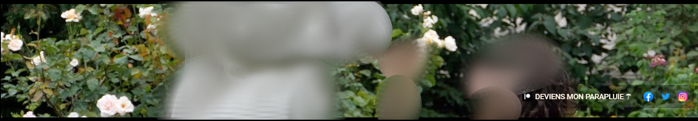Sur le bandeau d'accueil de la chaine youtube de Solange (capture réalisée le 5 avril 2023), Solange avec une main ouverte en direction d'une statue. "Deviens mon parapluie" là aussi une phrase à l'impératif. À l'image de Mylène, Solange aussi me sembla s'être servi de la nudité, de la sensualité.
Je dus trouver une ressemblance entre Mylène farmer et la vidéaste "Solange te parle" https://www.youtube.com/user/SolangeTeParle/videos. Je dirais Mylène et Solange, deux Filles assez "intellectualisées", mentales, "bourgeoises", avec un certain niveau culturel, intellectuel, un certain raffinement, qui jouèrent à se donner un rôle de Fille "légère/gourgandine". À la ressemblance de Mylène, Solange mit aussi en avant le physique. (Enfin il me sembla que chez Solange ce n'était pas du même niveau que Mylène. (Ne serait-ce que parce que Mylène a été pendant des décennies sur scène).)
Mylène farmer - Quelques extraits de Maria Valtorta - considérations sur satan
La compagne d'Adam devait donc être assez capable d'aimer pour finir de rendre bienheureux le jour de l'homme dans l'heureux Jardin. Elle devait être assez capable pour être seconde, collaboratrice et remplaçante de Dieu dans l'amour de l'homme, sa Créature, de façon que même aux heures où la Divinité ne se manifestait pas à sa Créature avec sa voix d'amour, l'homme ne se sentît pas malheureux par manque d'amour. Satan connaissait cette perfection. Maria Valtorta / Prétendumment, Le Fils
Satan sait tant de choses. C'est lui qui parle par les lèvres des pythons en disant des mensonges mêlés à des vérités. Et ces vérités que lui hait parce qu'il est mensonge, il les dit seulement - retenez-le bien, vous tous et vous qui viendrez plus tard - pour vous séduire par la chimère que ce n'est pas la Ténèbre qui parle, mais la Lumière. Satan, rusé, sournois et cruel, s'est insinué dans cette perfection et y a mordu et y a laissé son poison. La perfection de la femme en amour est ainsi devenue pour Satan un instrument pour dominer la femme et l'homme, et propager le mal..."
, tu crains pour elles ? Toutes les femmes ne sont pas des instruments pour Satan. Parfaites dans le sentiment, elles sont toujours excessives dans l'action : anges si elles veulent appartenir à Dieu, démons si elles veulent appartenir à Satan. Les femmes saintes - et ta mère est de celles-là - veulent appartenir à Dieu, et elles sont des anges."
''L'affaire Petito''
Une histoire de plaisirs charnels qui aurait mal tournée? (
— Wikipédia) ou un mélange : Société superficielle (sous emprise démoniaque grandissante?) + plaisirs superficiels + chaleur + environnement confiné (voiture) (+bruit moteur de voiture ?). Un couple qui n'aurait pas respecté les règles du mariage catholique (dont la chasteté)? À moins que oui? Mais y aurait-il alors quelque chose qui expliquerait cette affaire?
, n'était pas valide, mais pourrait-on considérer tout de même que certaines Âmes ne furent pas adaptées les unes aux autres?
Société actuelle occidentale et capacité, ou incapacité, à structurer un couple
En fait, mon hypothèse est qu'il y a tellement d'excitations extérieures, en général, en occident (actuellement (en 2025) et depuis, en particulier, quelques décennies) que ce soit à travers les restaurants, les magasins, les activités en tout genre (shopping, plage, etc.), tellement d'excitations dans la société actuelle, que ceci rend, pour le moins, difficile, la stabilité de beaucoup de couples. Et encore plus difficile, un épanouissement des couples. Y aurait-il aussi un lien entre les taux de divorce moyen, en occident, et la quantité d'excitations extérieures que propose la société? J'en arrive à me demander si en occident, tant que la plupart des professions continuent, come maintenant, continuent à mélanger Garçons-Filles, il sera pour le moins difficile que des couples, stables, puissent se former, sur la durée.
Analyse de quelques couples de certaines émissions ''confessions intimes''
Dans divers épisodes de cette série "confessions intimes", où il s'agit de couples, le comportement des uns et des autres est assez souvent qualifié de "jalousie maladive". Mais la jalousie, pour moi, ce ne serait pas quelque chose de forcément maladif, et même, souvent au contraire. La "jalousie" peut aussi montrer un attachement, une certaine attention que l'on porte à autrui. D'ailleurs, même le Fils, dans le livre du Ciel évoque parfois la jalousie, et il ne me sembla pas que ce fut pour désigner quelque chose de maladif.
«Je suis ton Tout. Je mérite d'être aimé de toi d'un amour égal à celui que j'ai pour toi. Si tu ne laisses pas le petit monde de tes pensées, de tes affections et de tes sentiments pour les Créatures, je ne pourrai pas -entrer complètement en ton cœur et -en prendre possession d'une façon permanente. Le constant murmure de tes pensées – t'empêche d'entendre clairement ma Voix, ce qui m'empêche -de déverser en toi mes grâces et -de te faire tomber complètement en amour avec moi. Je suis un Époux très jaloux. Promets-moi que tu seras mienne totalement. Moi je me mettrai au travail pour faire de toi ce que je veux." Prétendument le Christ, à Luisa Piccarreta. Tome 1 partie 3 (je suis pas sûr que ce soit la partie 3, au niveau de la numérotation de la traduction que j'eus. Pour les autres tomes que le 1, je m'y suis retrouvé, mais pas vraiment pour le 1.)
Dans diverses vidéos de couples de cette chaine "confessions intimes", la situation me sembla mitigée sur qui serait protecteur, sur qui mettrait le couple en danger: Tantôt, il me sembla que c'était plutôt celui/celle des deux qui était plutôt pour rester à domicile (c'est-à-dire
), qui serait plutôt à louer. Mais des fois, il/elle reste à domicile pour jouer à la console. Par ailleurs, celui/celle qui souhaita souvent sortir, me sembla mettre en péril le couple.
épisode de "confessions intimes" et lequel des deux me sembla le plus à même de permettre une structuration positive du couple
épisode "les pires histoires de jalousie de confession intime" première partie de la vidéo
Nicolas ✅ Semble souhaiter rester à domicile.
Mal-à-l'aise d'être au marché.
Dans ce reportage, il me sembla y avoir quelque chose bien probablement inversé, car Nicolas est qualifié de jaloux maladif, Quelqu'un qui aurait de l'orgueil. Donc Nicolas me sembla présenté assez négativement, alors qu'en réalité, au début, dans la partie où ils sont au marché, Nicolas serait le protecteur de ce couple. Cette partie du marché n'est que peu visible sur la vidéo ci-contre, car j'eus l'impression que sur internet, cette vidéo "je ne supporte plus ma jalousie, est coupée, pour la partie où ils sont au marché, par contre, cette partie du marché est visible ans le début de la vidéo plus bas).
Nicolas ❌ En partie, le comportement de Nicolas n'irait pas, car il joue seul à la console, une activité assez peu participative, pour Alison. De plus, il ne souhaite pas partager sa situation de recherche d'emploi.
Alison ❌ Elle décide d'aller seule au marché. Danger.
Nicolas ❌ Au marché, production de mots d'argot de la part de Nicolas. Des mots d'argot, je suspecte, qui resteront ensuite, sur la conscience. Mais enfin, il fut dans un milieu qui pousse à lui donner de la tension.
Vers 0:30, dans ce reportage, il est dit : "la cause de leurs problèmes, c'est la jalousie excessive de Nicolas." Mais au contraire, je dirais que la "jalousie" de Nicolas (jalousie entre guillemets, car ceci pourrait aussi être appelé attention?), dans ce reportage, montre une attention de la part de Nicolas. Et je suspecte que cette "jalousie" soit plutôt protectrice que destructrice. Non, la cause de leur problème me semblerait plutôt qu'il y a comme une "aura démoniaque", actuellement sur le monde, et qu'il est difficile, dans cet environnement, d'arriver à un couple stable. Ils seraient peut-être aussi à mettre en cause individuellement, mais à considérer leur âge, il y aurait de quoi avoir une certaine indulgence.
Moment où Nicolas et Alison sont en boite de nuit. Un milieu dangereux de plus.
deuxième partie de la vidéo intitulée "Ta jalousie détruit notre couple" titre/phrase qui me sembleraie erronée. Au contraire, la "jalousie" de Cynthia permet de protéger le couple.
Olivier ❌ Dans cette partie, Olivier me sembla immature, en comparaison de Cynthia. En fait, comme beaucoup d'Occidentaux, ce serait à se demander si Olivier et bien d'autres, ne se rendent pas compte de la puissance de certaines forces "démoniaques", dans la société et dans certaines sorties. (Cette société aidant aussi à ce qu'ils ne se rendent pas compte, tellement la société française eut tendance à présenter les bars, restaurants etc, comme quelque chose de positif, de socialisant etc.) Olivier et d'autres croient que l'on peut aller au restaurant, au cinéma, en boite de nuit, etc. Et que vas-y c'est bon. C'en serait à se demander si comportementalement, Olivier fut plus ou moins possédé. Possédé par des puissances qui essayèrent de l'amener lui, et sa compagne, vers le démon.
Cynthia✅ Situation assez terrible, pour Cynthia, à divers moments du reportage, je dirais, car de base, j'estime elle fut plus noble, plus mature qu'Olivier. Et pourtant, c'est elle, dans le reportage, qui me sembla passer pour la pénible.
Dans l'hypothèse où il y aurait un Dieu, et aussi un diable, dans diverses histoires de couples de cette série "confession intime" (enfin du moins celles que je vis), j'estime, le/la plus mature des deux me sembla celui/celle qui fut le/la plus jalouse, celui/celle qui souhaita le plus rester à domicile. Celui/celle qui essaya d'éviter les excitations extérieures (boite de nuit etc.).
Au vendredi 30 août 2024, j'ai déjà vu au moins 4 vidéos de cette chaine, concernant des couples, sur youtube. Peut-être plus tard, je ferais davantage d'analyses de certaines vidéos de cette chaine. Mais il y a des fois pas mal de mots d'argot, alors... ceci dut me faire hésiter à faire des commentaires sur ces vidéos.
Occident et couples - Une vidéo à propos de la mixité de genre à la plage:
La plage, un milieu qui serait particulièrement dangereux, pour la stabilité d'un couple. Là encore, la plupart des Occidentaux, me semblèrent continuer à aller à la plage comme si de rien n'était, et même, souvent, comme si c'était quelque chose de bien.
Vidéo de rav Ron Chaya concernant les plages, la mixité de genre à la plage.
(Page wikipedia de Quelqu'un de cité dans cette vidéo :
Comme depuis des décennies, en occident, la plupart des milieux professionnels me semblèrent mixtes en genre (des Garçons peuvent rencontrer des Filles et vice-versa, à travers ces milieux professionnels), l'hypothèse que je fais, c'est que la plupart de ces milieux professionnels furent à même de déséquilibrer la libido des Créatures. Ce que je dus, pour le moins, suspecter, c'est que la plupart des Gens qui travaillèrent dans des milieux professionnels mixtes en genre, si en même temps, ils étaient en couple, alors leur travail en milieu mixte fut à même d'altérer la structuration de leur couple.
Couples en occident - Le système médical occidental, le système dentaire occidental
Le système médical et le système dentaire, comme systèmes professionnels, me sembleraient présenter un intérêt particulier, car j'estime que ces systèmes furent depuis des décennies, et seraient encore, parmi les systèmes professionnels les plus dangereux qui soient, en occident du moins, quant à la stabilité de la libido des Créatures. Comme la mixité de genre en genre fut courante dans ces systèmes médicaux et dentaires en occident (un praticien Garçon peut recevoir une Fille seule en cabinet et vice-versa), je suspecte que cette mixité de genre favorisa des déséquilibres de la libido chez les patients et leur médecin/dentiste (Garçon ou Fille).
Depuis bien des années, j'en suis arrivé à suspecter que du moins la plupart des médecins, en france, furent bien probablement, des Créatures qui furent et qui sont encore dans des relations de couple, des libidos déséquilibrées. Le déséquilibre serait d'autant plus grave qu'ils avancent en âge/qu'ils sont au contact de ce système mixte dangereux. En particulier depuis des décennies, ils auraient été parmi les Créatures les plus déséquilibrées dans leur relation de couple, alors même qu'elles auraient été sensées être les Créatures en charge de la santé de la population...
Mixité de genre et dangerosité en cabinet médical (ou dentaire)
Parmi les spécialités médicales, pour la stabilité de la libido d'un couple dont au moins l'un des deux serait spécialiste, une des spécialité les plus dangereuses me semblerait la gynécologie. (À force voir telle et telle partie de tel(le) ou tel(le) patient(e) et à disposer d'un tel pouvoir face aux patients (accès à leurs coordonnées et à au moins une partie de leur "vie" privée)).
Les généralistes aussi qui voient des patients dénudés.
L'hôpital (ou la clinique) et la mixité de genre
À l'hôpital (ou en clinique), souvent les métiers d'infirmiers sont exercés par des Filles. Des Filles en tenues parfois assez légères, peu couvertes (parce-que dans leurs activités, elles ont tendances à se déplacer de-ci de-là, à avoir chaud). Là aussi, ce type d'environnement favoriserait une sorte d'excitation des désirs et ne serait pas à même de stabiliser la libido des uns et des autres.
Je suspecte que les taux de suicides plus importants chez les internes que la moyenne de la population générale, furent et soient encore liés à cette mixité.
La faculté (de médecine ou dentaire) et la mixité de genre
Là aussi, ces facultés mixtes en genre seraient dangereuses. La mixité de genre y eut aussi cours depuis des décennies. Y aurait-il un lien entre la mixité dans les hôpitaux et à la faculté, et le taux moyen de suicide rapporté comme nettement plus élevé chez les internes, par rapport au reste de la population?
Mixité de genre et anxiété des conjoints (Garçons ou Filles) du (ou de la) médecin
Probable aussi qu'il y ait depuis au moins des décennies, une anxiété particulière chez les conjoints (Garçons ou Filles) des médecins. Je suspecte que la mixité de genre autorisée dans le système médical aussi ne favorisa pas la stabilité des couples dont au moins un des deux est médecin.
Je dirais l'hôpital, un des milieux mixte les plus terribles, les plus dangereux qui soient, actuellement, pour la libido de la population.
Évidemment que je considère les vidéos suivantes comme des caricatures de l'ambiance qui peut se produire, mais elles ont loin d'être tout à fait décalées de la réalité par ailleurs
Beaucoup de ces milieux "hospitaliers" (auraient-ils vraiment une légitimité à être appelés hospitaliers, dans le sens hospitalité...), me semblèrent avoir eut quelque chose en eux de pathétique. À partir du moment où la mixité de genre eut cours, ce fut la porte ouverte à des déviances, des excitations.
Stanley Kubrick, qui aurait eu un père cardiologue, me sembla avoir parfois fait allusion au système médical : dans orange mécanique, et dans son dernier film eyes wide shut (l'acteur principal jouant le rôle d'un médecin).
Un système médical qui globalement ne me sembla pas viable :
Avec l'avènement du royaume de la divine volonté, plus de maladies
Extrait du livre du Ciel 22 octobre 1926 " - Le grand bien que le Royaume du divin Fiat apportera. Il sera le préservateur de tous les maux. La Vierge, qui n’a accompli aucun miracle, mais a fait le grand miracle de donner un Dieu aux Créatures. Celle qui doit faire connaître le Royaume accomplira le grand miracle de donner une Divine Volonté. (1)Je pensais au saint et divin Vouloir, et je me disais : « Mais, quel sera le grand bien de ce Royaume du Fiat suprême ? » Et Jésus, interrompant ma pensée, bougea rapidement en moi et me dit : Ma Fille, quel sera le grand bien ? ! (2) Le Royaume de mon Fiat contiendra -tous les biens, -tous les miracles, -tous les prodiges les plus sensationnels. Plus encore, il les surpassera tous ensemble. Et si un miracle signifie rendre la vue à un aveugle, redresser un infirme, guérir un malade, ressusciter un mort, etc., Le Royaume de ma Volonté aura l’aliment préservateur. Pour toutes les Créatures qui y entreront, il n’y aura aucun risque de devenir aveugle, infirme ou malade. La mort n’aura plus aucun pouvoir sur l’Âme Si elle l’aura encore sur le corps, ce ne sera plus une mort, mais un passage. -Sans la nourriture du pêché et une volonté Humaine dégradée qui produisaient la corruption, -avec l’aliment préservateur de ma Volonté, les corps ne seront plus sujets -à la décomposition et -à devenir horriblement corrompus au point de semer la peur, même parmi les plus forts, comme c’est maintenant le cas. Mais ils resteront composés dans leur sépulcre en attendant le jour de la résurrection de tous."
Soin des reins et du cœur
Mon positionnement par rapport à aller ou non chez un(e) médecin ou à l'hôpital/clinique
En fait, j'en suis arrivé à me demander s'il vaut même mieux rester plus ou moins avec telle ou telle pathologie, si elle n'est pas trop importante, plutôt que d'aller chez un(e) médecin, actuellement, dans un pays où la formation du/de la médecin passe par la mixité de genre. Parce que si j'allais chez un(e) médecin (ou à l'hôpital/clinique), j'alimenterais alors un système médical où eut/a cours la mixité de genre. Si en évitant d'aller chez un(e) médecin (ou à l'hôpital/clinique) j'évite des déviances, alors peut-être, s'il y a un Dieu, il me soutiendra.
Pour moi, aller chez un(e) médecin ou à l'hôpital/clinique
Pour moi, ne pas aller chez un(e) médecin ou à l'hôpital/clinique
Risque de rencontrer un(e) médecin marié(e) ayant un conjoint peut-être plus ou moins dans l'anxiété de savoir que son(sa) compagne rencontre au cabinet tel ou tel patient. Et même si le praticien (ou l'infirmièr(e), ou l'aide-soignant(e)) n'est pas marié(e) il/elle peut être en couple). En général, les patients sont rencontrés en seul à seul, avec le/la praticien(ne).
De plus, continuer à alimenter ce système médical, c'est continuer à alimenter qu'il faudrait des facultés (facultés dans lesquelles, en occident, en général, il y a la mixité de genre), des hôpitaux pour former les médecins(hôpitaux dans lesquels aussi, en général, il y a la mixité de genre)
En fait la question serait de savoir s'il vaudrait mieux rester ou non chez soi, avec telle ou telle pathologie plutôt que continuer à alimenter un tel système.
Mixité de genre dans les professions d'artisans
Je n'eus pas l'impression qu'il y ait de législation concernant les artisans Garçons (plombier, électricien etc.) qui se rendraient seuls chez des Filles (Filles qui les reçoivent parfois seules et qui plus est sont parfois mariées). Là aussi, il me sembla assez évident qu'il y avait dangerosité.
Et la mixité de genre, aussi, dans beaucoup d'autres professions
Dans beaucoup d'autres professions aussi, la mixité de genre aussi est autorisée : beaucoup de professions du tertiaire, les professions dites "de service".
Bounty hunter d et Âmes plus ou moins sous emprise
"Bounty hunter d", vidéaste ayant réalisé des vidéos sur la fidélité dans divers couples.
À se demander si certaines Âmes se complaisent dans le mensonge, dans une exploitation négative de leur compagn(e)on
Bounty hunter d et Âmes plus ou moins possédées?
Occidentaux et libido
En particulier depuis quelques décennies, la plupart des Occidentaux ne comprirent quasiment rien à la libido et à la sexualité Humaine?
La plupart des Occidentaux, dans leurs comportements (tenues vestimentaires, corps pas des plus vêtus, plages), mixité de genre généralisée, me semblèrent globalement inaptes à y comprendre quelque chose à la libido Humaine. Comme si comportementalement, il émana quelque chose d'Eux qui me donna la sensation qu'ils furent immatures, dans l'incompréhension, par rapport à la libido. L'occident, depuis en particulier quelques décennies, se délabra de plus en plus : avec des taux de divorces en moyenne à plus de 50%, des taux d'adultère de plus en plus élevé. Ces tenues vestimentaires laisseraient penser que beaucoup ne semblèrent pas comprendre qu'il pouvait exister des puissances "démoniaques" très puissantes liées à la une sexualité égarée. La plupart des Occidentaux, s'ils avaient été plus matures, Ils n'auraient pu prendre aussi à la légère leurs tenues vestimentaires (en particulier sur les plages), et prendre autant à la légère la mixité de genre (que ce soit à l'école et au travail). Mais j'eus de quoi considérer que comme apparemment, ils n'y comprirent, au moins à moitié rien, aux répercussions de leurs tenues (ou plutôt non-tenues) vestimentaires, ils continuèrent de se permettre une mixité de genre généralisée et se mettre dans telles ou telles tenues à la plage. La mixité de genre à l'école, la mixité dans le travail...
Occidentaux, langage à propos de la sexualité et de l'amour
Occident sous emprise démoniaque? L'expression avoir une relation sexuelle
En occident, j'eus l'impression, depuis des décennies, que l'expression "avoir une relation sexuelle", signifia souvent avoir du plaisir charnel (ou plus rarement, signifia aller vers la conception d'un(e) enfant). Alors que j'estime que d'après le Christianisme, l'expression "avoir une relation sexuelle", ceci signifierait, faire petit-à-petit monter la sexualité en restant dans la chasteté. Aller vers une élévation de l'Âme. Sexualité signifierait élévation de l'Âme.
"avoir une relation sexuelle"
"avoir une relation sexuelle"
Cette expression dans le sens courant (seconde moitié du XXème siècle et jusqu'en 2024 inclus)
Cette expression dans le sens du Christianisme, ou enfin de ma compréhension d'une partie du Christianisme, du moins
Si cette expression est prise dans un sens païen, athée, agnostique, c'est-à-dire le sens qui me sembla avoir eut cours largement le plus souvent, en occident du moins, au cours des dernières décennies,
Cette expression, si on considère que ce fut bien Dieu qui s'adressa à Maria Valtorta, alors cette expression signifierait
En général, ceci signifia avoir éventuellement du plaisir charnel
Construire une élévation de l'Âme autour de la chasteté?
Relation basée sur les plaisirs de la chair. Plaisirs qui durent quelques minutes ou dizaines de minutes ou quelques heures
Relation qui s'établit, se structure sur des jours, semaines, mois ou années.
Si je considère qu'il y a bien un Dieu, mais aussi des "démons", enfin des puissances démoniaques, alors cette sexualité serait "maudite", en proie à des puissances démoniaques
Véritable sexualité
En fait, si je considère la sexualité sous cet angle, la plupart des mots construits autour du mot "s*x", depuis au moins des décennies, auraient eut alors un sens faux: - s*xtoy (ne vaudrait-il pas mieux rédiger : sensuatoy, plaisirtoy) - s*xtape (ne vaudrait-il pas mieux rédiger : sensuatape, plaisirtape) - vidéo de s*xe (ne vaudrait-il pas mieux rédiger : vidéo de plaisirs, vidéo de sensualité) (car il n'aurait pas véritablement s'agit de sexe) - avoir du s*xe (ne vaudrait-il pas mieux rédiger : avoir du plaisir) - parler de s*xe (ne vaudrait-il pas mieux rédiger : parler de sensualité, parler des plaisirs charnels)
Occident sous emprise démoniaque? suite: L'expression ''faire l'amour'', le mot ''amour''
En occident, l'expression "faire l'amour" confondue avec avoir des relations avec recherche de plaisir charnel.
Il dut me sembler que depuis bien des années, souvent, chez diverses Créatures, en occident du moins, l'expression "faire l'amour" fut employée en lien avec le fait d'éventuellement prendre du plaisir sensuel (c'est à dire en fait, pour "Maurice", aller avec "Evelyne" ou "Gilberte" (prénoms pris à titre d'exemple) et puis faire "ceci cela" avec), mais j'aurais de quoi estimer, qu'en réalité, ce type de relation éventuellement tournée vers le plaisir charnel n'aurait pas été faire l'amour, mais si on considère l'amour comme une élévation de l'Âme ("Âme our"), alors cette conception (
) "libertine" de l'expression "faire l'amour" fut plutôt décalée. "Faire l'amour" en langage païen/occidental, traduit, si je considère qu'il existerait un Dieu et une Théologie, me sembla éventuellement signifier alors souvent plutôt défaire l'amour. Défaire une élévation de l'Âme au "profit" d(u)es plaisir(s)/des sensations, de la sensualité.
"On fera l'amour" c'est-à-dire? On aura du plaisir charnel? Avec Claude François, le coup du sèche-cheveux aurait-il été une sentence en lien avec une prise de plaisir charnel? et causé aussi par sentence pour cette chanson?
Michel Polnareff pour certaines chansons : un diablotin?
"Moi je me fo*s de a société [...] j'aimerais simplement faire l'amour avec toi"
Dans un monde "joli-mignon" 🌺 : j'aimerais simplement faire l'amour avec toi : gentil-mignon-plaisir. 🌺 Dans un monde plus sophistiqué : risque de "possession démoniaque" conséquente à cet "amour"? Dépendance à la chair subséquente? Distorsion de la sexualité? Sexualité déséquilibrée?
"Elle a dû faire toutes les guerres de la vie et l'amour aussi." Musique de Francis Cabrel
Qu'est-ce qu'il entendit par l' "amour"?
Occidentaux et rapport au corps, libido, deux exemples : Christian Maillaud (Stan Maillaud) et Stéphane E.
Occidentaux et ''tenue'' vestimentaire : exemple numéro 1 : Stan Maillaud
Stan Maillaud, Quelqu'un dont j'ai suivi diverses interventions vidéo depuis plusieurs années. J'eus l'impression qu'il eut de base une Âme assez gentille, relativement noble. Stan Maillaud me sembla avoir bien plus que la moyenne, conscience de diverses situations, dans ce monde. Il me sembla avoir porté une certaine attention à l'enfance. Enfin il y eut quand même au moins une contradiction assez importante, évidente, concernant la pudeur : Dernièrement, il me sembla que Stan Maillaud souhaita se lancer dans une activité (le towafi) : c'est-à-dire une activité de gymnastique dans l'eau, en bord de plage. Mais cette activité aurait-elle put déséquilibrer la libido de divers Plagistes? Les exciter psychiquement et ensuite en pousser, en pousser du moins Certain(e)s, à aller vers ceci ou cela, comportementalement, vers un déséquilibre de la libido. En l'état actuel de la société, je ne puis exclure que cette activité (ou des activités du même style (avec corps dénudés)) soit psychiquement excitante pour la libido. Une fois de plus, comme avec beaucoup d'autres Sportifs plutôt typés occidentaux, il me sembla qu'avec cette activité on était dans un culte, une prévalence donnée au corps. Est-ce que Stan Maillaud se rendit compte du potentiel paradoxe qu'il risquait d'alimenter par une activité telle que celle-ci? Que ce fut pour Stan Maillaud ou pour d'autres, n'aurais-je eus de quoi ressentir que se refléta d'eux quelque chose d'occidentalo-immature? L'Intervieweuse de Stan Maillaud, dans cette vidéo (Chloé Frammery) me sembla présenter cette activité comme quelque chose de plutôt positif.
pour agrandir/diminuer la taille de l'image avec le scroll de la souris : -soit après avoir double cliqué sur l'image - soit shift+mousewheel ou alt+mousewheel
Prendre Stan Maillaud comme exemple de la mentalité occidentale face à la pudeur, dut me sembler assez adapté, parce que Stan Maillaud me permit de considérer (et permettra peut-être aussi à d'autres) que même avec des Occidentaux (comme par exemple, stan Maillaud) parmi les plus éveillés quant à divers problèmes du monde, il y eut encore cette couche paradoxale, une couche relativement immature, quant au rapport au corps. Une immaturité occidentale quant à la compréhension des répercussions de tels ou tels comportements, sur la libido. (Et le comportement/la mentalité de Stan Maillaud, laisserait présager du degré de maturité d'une grande partie du restant des Occidentaux, quant au rapport au corps...). J'ai parfois parlé de mentalité occidentale🐕, pour Stan Maillaud, mais j'ai estimé que Stan Maillaud avait aussi en lui une part orientale 🐅 (ne serait-ce que par son aspect relativement réveillé, réactif quant à diverses situations du monde).
Le surnom ''Stan'', au lieu du prénom Christian
Y aurait-il eut un lien entre le changement de prénom de Christian Maillaud pour un pseudo (Stan au lieu de Christian), en lien avec un décalage qu'il aurait eut par rapport au Christianisme? (Le prénom Christian commence par Christ.)
Occidentaux et ''tenue'' vestimentaire, exemple numéro2 : Stéphane E.
Préambule - Stéphane E.
Par rapport à la pudeur, je trouverais Stéphane E. plus préoccupant que Stan Maillaud. Pour la pudeur, je ne mettrais pas au même niveau Stéphane E. que Stan Maillaud.
J'ai hésité à mettre Stéphane E. sur ce site. Pour le moment, au mercredi 2 octobre 2024, je ne mets pas son nom en entier. À cette même date, il aurait une chaine youtube appelée "Homme d'influence", comportant environ 400 mille abonnés, environ 680 vidéos, et datant d'au moins 13 ans. Pendant un temps, j'avais inséré Stéphane E. sur cette page, dans la partie Quelques Occidentaux et une sous partie Gens issus du maghreb, mais, je ne suis pas sûr qu'au moins un de ses parents vienne du maghreb. Peut-être au moins un de ses parents vient d'un autre endroit? Je ne sais pas lequel. Alors je ne le mis pas dans la partie quelques Occidentaux/des Gens ayant des ascendants du maghreb.
Je n'essaye pas d'être méchant avec Stéphane E. (Comme d'ailleurs pour tous ceux que j'ai essayé de "psychanalyser", sur ce site). Je pense de base, Stéphane E. eut du potentiel, une certaine capacité de compréhension de diverses situations. Mon hypothèse, c'est que sur la forme, (dont sa tenue vestimentaire), pendant des années, il se serait négativement occidentalisé.
Sur la forme, à l'image de beaucoup d'Occidentaux, Stéphane E.
pour agrandir/diminuer la taille de l'image avec le scroll de la souris : -soit après avoir double cliqué sur l'image - soit shift+mousewheel ou alt+mousewheel
Je connais assez peu Stéphane E. J'ai écouté quelques vidéos de lui. De ce que je ressentis, sur la forme, il me donna une impression de Quelqu'un semblant dans "la frime". Une sorte de "frime" occidentalisée, "normalisée". Que ce soit la tenue vestimentaire, la manière de s'asseoir sur la chaise, le mobilier, beaucoup de "choses" me semblèrent refléter chez lui une forme de "frime". Le nom de sa chaine youtube, aussi, "Hommes d'influence". (Mise-à-jour : la chaine a changé de nom, il me sembla, depuis ma rédaction de la phrase précédente, je rédige ceci le mercredi 9 octobre 2024.) Mais je dirais "la frime" entre guillemets, car je ne pense même pas que Stéphane E. le fit exprès, d'être dans "la frime". À l'image de beaucoup d'Occidentaux, je suspecte qu'il n'ai pas trop conscience des conséquences de ses "tenues" vestimentaires. En ceci, je dirais Stéphane E. serait vestimentairement assez typiquement occidental : Quelqu'un qui ne se rend pas trop compte de ce qu'il fait vestimentairement. D'après la partie (l' "onglet") vidéo de sa chaine youtube, il me sembla que la plupart des fois, quand il avait une chemise, il avait une chemise assez ouverte et/ou souvent les avant-bras découverts et/ou les mollets.) Autrement rédigé, je ne pense même pas que Stéphane E. essaya de "faire le malin" particulièrement/consciemment. Peut-être en fait il croit que c'est stylé, le style du gars décontract.
En fait, de base, Stéphane Edouard, je suspecte, aurait put être Quelqu'un d'assez stylé, même Quelqu'un qui puisse sembler avoir une certaine allure. Mais, en fait, comme depuis des années (jusqu'à automne 2025 compris), souvent, il ne couvrit pas ce style par une certaine tenue, sa "tenue" vestimentaire, son mobilier, ses poses, pour certains du moins, ne purent-ils prendre l'allure d'une forme d'arrogance. Comme s'il y avait quelque chose de déplacé? chez lui. De base, je n'écarte pas qu'il pourrait sembler avoir une certaine beauté, mais comme il présenta celle-ci à l'occidentale (une présentation partiellement "
" si je puis dire), ceci dut me sembler prendre l'allure, au moins parfois, d'une "frime". Comme si ça avait cassé le truc.
Quelqu'un d'assez svelte et qui sait encore avoir une certaine pudeur et qui n'essaye pas trop de se mettre en avant (ou qui n'essaye même pas tout court)
Quelqu'un d'assez svelte et qui ne semble pas avoir une certaine pudeur
Comportement qui peut bonifier un certain physique
Comportement qui peut sembler une arrogance, une ostentation
Comportement qui peut être vivifiant, apaisant
Comportement qui peut favoriser des tensions, de l'inquiétude
Vitalisant
Dévitalisant
Comportement, en général de type plutôt oriental
Comportement plutôt occidental
Stéphane E., à l'image de beaucoup d'Occidentaux, fut-il à même, pour partie, d'alimenter divers problèmes dont il se plaignit?
pour agrandir/diminuer la taille de l'image avec le scroll de la souris : -soit après avoir double cliqué sur l'image - soit shift+mousewheel ou alt+mousewheel
Avec Stéphane E., il me sembla aussi y avoir un "beans" : Car Stéphane E., se plaignit, ou du moins fit remarquer que telle ou telle Fille avait des problèmes, mais lui-même, avec ses tenues vestimentaires, souvent avec la chemise ouverte, vers quoi put-il pousser diverses Filles? Ne fut-ce pas, en partie, le genre de "tenue" vestimentaire que Stéphane E. eut, qui participa d'une société de compétition malsaine sur le corps? Ne fut-ce pas Stéphane E. et bien d'autres, qui, du moins en partie, poussèrent diverses Filles à devenir obnubilées par le corps, les parfums, le maquillage, les vêtements, et parfois même la chirurgie, etc. ? Comportements de Filles, comportements dont Stéphane E. fit valoir qu'ils posaient problème, mais.. comportements que lui, avec ses shorts, souvent sa chemise ouverte, ses avant-bras découverts, comportements qu'il aurait lui même, induits? (du moins pour une partie de ces comportements).
Bilan - Stéphane E.
Sorte de situation assez paradoxale : Quelqu'un ayant une intelligence orientale. Mais qui se serait vestimentairement occidentalisé, et qui se plaint de divers Occidentaux..
Étape ''3'' : Les loisirs de la Créature : Occident, Trinité et voyages / balades 🛩️🥾⛱️🏕️, occident et jeux de balles
"entourée de plantes, d'arbres et de fleurs variées, Il me disait: «J'ai tout créé par Amour pour toi, et toi, par amour de moi, refuse-toi ce plaisir" Le livre du Ciel, tome 1, Luisa Piccarreta
Ah là là, cette "époque" (début du XXIème siècle) et même fin du XXème, "époque" où, en occident du moins, furent fortement promus les voyages, le sport, les activités physiques en général...
Le Fils, il me sembla , à travers le livre du Ciel (rédigé fin XIXème, début XXème siècle) trouvait sa création belle (sauf la plupart des Humains). Alors cette création étant belle, faudrait-il aller s'y balader?.. Dans les forêts, dans tels ou tels paysages.. Et bien ce n'est pas pour autant, que le Fils me sembla avoir promu les voyages, les balades, dans le livre du Ciel. Et même, au contraire.
Mais peut-être un jour, les sorties, balades, prendront une autre tournure et alors elles trouveront une positivité..
Voyages - balades - Quelques extraits du livre du Ciel et quelques considérations
7 septembre 1908 - Le Fils à Luisa Piccarreta Étant dans mon état habituel, Jésus béni vint brièvement et Il me dit: «Ma Fille, plus l'Âme se prive de choses ici-bas, plus elle sera comblée dans le Ciel. Plus on est pauvre sur la terre, plus on sera riche dans le Ciel. Plus on est privé de plaisirs, d'amusements, de voyages, de balades sur la terre, plus on sera comblé en Dieu. Oh combien l'Âme pourra se balader dans l'étendue des Cieux, spécialement dans les Cieux incommensurables des attributs de Dieu.
Cet extrait ne serait-il pas désespérant? (d'ailleurs, je devrais essayer de revoir la version la version originale en italien, parce que ce passage me sembla extrême (j'ai rédigé cette précédente phrase le dimanche 16 février 2025)) Il n'y aurait plus qu'à avoir une vie de cloitré? Eh bien pas forcément, et je vais essayer de développer ceci.
De cet extrait, j'aurais de quoi déduire que beaucoup de Créatures qui n'eurent pas accès aux avions, aux voyages de plaisirs/divertissement (c'est-à-dire en réalité beaucoup de Gens des pays dits en voie de développement) seront davantage comblés au Ciel (à moins que la donne change, d'ici quelque temps, avec la survenue d'événements eschatologiques et qu'il y ait une répartition orient/occident). J'imagine du temps où le Fils communiqua cet extrait à Luisa Piccarreta, le mot voyage était associé en général à un certain plaisir/divertissement. Je ne mettrais pas tous les voyages au même niveau, tout de même : -voyages de loisirs (ski, plage, etc.) -voyages d'affaires -voyages par exemple pour les postiers/facteurs/camionneurs (pour la livraison de colis / produit(s)) (le plaisir des paysages n'étant pas en général le but premier recherché, dans ce type d'activités).
Il me sembla que Dieu contient en lui tous les biens de sorte que, en trouvant ces biens, il n'est pas nécessaire d'aller ailleurs pour percevoir l'immensité de Dieu. Dieu seul suffit pour retrouver tout ce qui lui appartient. En un éclair, il me montra une caractéristique spéciale de sa beauté. Qui peut raconter combien il est beau? Je peux seulement dire que toutes les beautés angéliques et Humaines, la beauté des fleurs et des fruits, l'azur splendide et le ciel étoilé, qui semblent nous enchanter et nous parler d'une beauté suprême, ne sont qu'une ombre ou qu'un souffle en comparaison de la beauté de Dieu. En d'autres mots, ces beautés ne sont que des petites gouttes de rosée en comparaison des immenses eaux de la mer. Le Livre du Ciel – Tome 4 - Luisa Piccarreta
Et si je portais mon regard trop loin quand je marchais, il me grondait en disant: «Je ne veux pas que ton regard s'étende au-delà du nécessaire, afin que tu ne trébuches pas.» Si je me trouvais dans la campagne, entourée de plantes, d'arbres et de fleurs variées, il me disait: «J'ai tout créé par Amour pour toi, et toi, par amour de moi, refuse-toi ce plaisir.» Si, à l'église, je fixais mon regard sur des décorations sacrées, il me réprimandait en disant: «Quelles délices y a-t-il pour toi, à part moi?» Le livre du Ciel, tome 1, partie 13
Proportion de l'esprit par rapport à la chair, une dictée prêtée à Maria Valtorta
"Étant donné que l'esprit se situe par rapport à la chair dans une proportion de 1000 contre 1" 21 octobre 1943. Extrait d'une dictée qui serait venue de Dieu et qui aurait été dictée à Maria Valtorta
Sur la gauche 1 contre mille en vue verticale : La barre verticale bleue foncé représente 999 Barre blanche (en bas) : 1
1000 contre 1
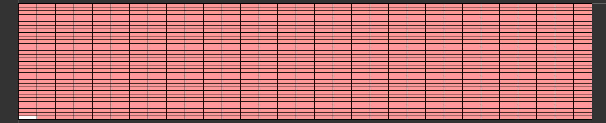
1 contre ~mille en vue tableau, (32x31 =992)
Haïm Dynovisz (Quelqu'un qui fit des vidéos sur le judaïsme depuis des années) évoqua que dans le monde futur, le corps sera au-dessus de l'esprit. Par exemple dans cette vidéo :
Mais cette considération de 1000 contre 1 irait, il me sembla, à l'encontre de cette considération de Haïm Dynovisz. (Je n'ai pas lu ce texte du rabbi de Loubavitch. (jusqu'à la rédaction de ceci y compris, (rédigé 2023)) Pour l'instant, j'eus un doute que le monde matériel sera au-dessus du monde spirituel. J'imagine plutôt que la sensation du monde matériel sera transcendée par le spirituel. Et le monde matériel deviendrait alors bien plus beau. Mais ceci ne signifierait pas pour autant que le monde matériel en arrive au-dessus du monde spirituel. Quand je considère en plus que Dieu serait esprit, esprit saint, ceci irait aussi plutôt dans le sens que esprit > matériel.
Mais alors ces publicités pour les voyages sous les tropiques, pour les centres de vacances ⛱️, ces Créatures avec leurs photographies, souriantes devant tel ou tel paysage, eurent-elles, auraient-elles, quelque chose de diabolique? Eh bien j'aurais de quoi estimer, dans une telle époque, fortement matérialiste, par déduction, que oui. Je ferais aussi une analogie entre les publicités pour les voyages prenant appuis sur divers paysages, et les Filles qui sont mises en avant ici ou là dans des tenues pas des plus habillées, pour faire la publicité de ceci ou cela.
Occidentaux et loisirs : Du bonheur?
Occidentaux et bonheur
Dans cette époque, du moins d'après certains extraits du livre du Ciel, j'en déduirais que beaucoup de Créatures qui voyagent/voyagèrent pour le divertissement (c'est-à-dire les Occidentaux en particulier) ne furent et ne seraient encore pas si heureuses que ce qu'il sembla se dégager des publicités pour les voyages et de leurs selfies/photographies. Souvent ils associèrent bonheur à voyages, soleil, cocotiers, ou du moins la société leur présenta une telle association. Mais il serait à considérer que si ces voyages/déplacements n'eurent pas, et n'ont encore pas de fond symbolique plus profond (par exemple voyager (ou plutôt se déplacer) pour faire des affaires, rendre service, pour le commerce, pour une cause humanitaire), alors le bonheur pouvant découler de divers voyages de loisirs, fut superficiel voire même négatif.
Beaucoup de voyages se basèrent sur une société qui exploita souvent des Créatures dans des travaux plus ou moins pénibles (construction d'avions de tourisme, de bateaux, dans des usines à la chaine, en pays agnostique, "communiste" et/ou capitaliste). N'y eut-il même de quoi se sentir même parfois mal à l'aise de voyager ici et là, simplement pour le divertissement, les loisirs, plaisirs? Car ne fut-ce souvent comme si le(s) plaisir(s) des uns se firent en fonction de l'oppression des autres? Des plaisirs qui en plus n'auraient même pas été à même de rendre la Créature heureuse à long terme (et même à moyen terme). Par exemple, certains se seraient-ils dit : je suis sur une piste de ski, "tout schuss", ⛷️, mais suis-je heureux? Pour que je sois là, il fallut tel et tel moyen de transport, qui dut lui-même être construit bien probablement dans des usines à la chaine, dans des pays dits en voie de développement (la plupart du temps) (par exemple la voiture ou le bus qui amenèrent jusqu'à la station de ski), alors mon "bonheur" (ou plutôt mes plaisirs) ne reposèrent-ils pas sur une exploitation (en partie du moins) négative de l'homme? N'y aurait-il pas des activités plus fraternelles, apaisantes, que ces plaisirs relativement égoïstes?
Il faudrait que je retrouve dans le livre du Ciel et je ne suis plus sûr, mais je crois il fut parfois évoqué que nous étions tous liés les uns aux autres. Si tel fut le cas (et il y aurait bien de quoi, pour le moins, le suspecter), alors il y eut, il y aurait de quoi estimer que depuis des décennies, pour l'espèce, ces loisirs relativement égoïstes (ski, etc.) qui se firent de par le monde (et surtout en occident), pour reposer en partie sur une exploitation non Christique de diverses Créatures, eurent un bilan négatif, furent à même de rendre l'espèce, dans sa globalité, plutôt malade, triste, que joyeuse, saine. Comme si ces voyages de divertissement furent remplis de forme, mais manquèrent de fond. Enfin ils répondirent bien probablement aussi à une époque, à une évolution de la maturité de l'espèce. Comme si l'espèce dut (et doit encore apparemment), passer par les plaisirs, les loisirs, pour en arriver, peut-être à considérer un jour qu'il y a autre chose dans l'existence.
Monde occidental et sorties/balades - Aïe aïe aïe
Qu'est-ce que ceci signifierait? Il n'y aurait plus qu'à rester à domicile? Cloitré? Ou à ne sortir que par nécessité, ou travail? Je dus comme craindre que oui. Mais si Dieu et ces Créatures comme Luisa Piccarreta ou d'autres l'ont écrit que c'était plus beau...
Il faudrait aussi considérer que cette isolation n'aurait qu'à être temporaire : J'imagine tout de même s'il y a une venue du Mahdi, et/ou du Machia'h et/ou du grand Monarque et/ou du Fils, il pourrait y avoir des rassemblements, des promenades dans la nature mais non comme souvent actuellement des rassemblements vers des plaisirs égoïstes se faisant au détriment des autres (voire de l'espèce de manière générale), mais plutôt des rassemblements dans une joie collective, des rassemblements fraternels et sensés. Des sorties, des balades qui prendraient un autre sens. Des balades, des sorties se réalisant dans une autre ambiance. Des sorties/balades qui retrouveraient un équilibre entre joie individuelle et joie collective.
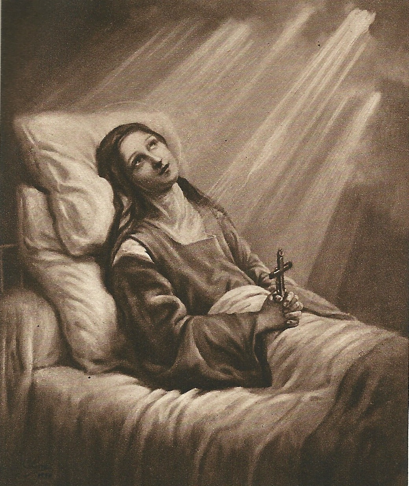
"la beauté des fleurs et des fruits, l'azur splendide et le ciel étoilé, qui semblent nous enchanter et nous parler d'une beauté suprême, ne sont qu'une ombre ou qu'un souffle en comparaison de la beauté de Dieu." Le Livre du Ciel – Tome 4
Étape ''4'' (ou étape ''0'' puisque depuis la naissance) : Depuis la naissance de la Créature : son environnement politique. Divers politiciens sous emprise démoniaque'?
Nul ne peut servir deux maîtres. Car, ou il haïra l'un, et aimera l'autre; ou il s'attachera à l'un, et méprisera l'autre. Vous ne pouvez servir Dieu et Mamon.
L'hypothèse, c'est qu'il existerait véritablement un Dieu. (Si tant est qu'il y ait besoin de preuves matérielles: Miracles de lourdes, vie des saints depuis des millénaires, ancien testament, nouveau testament, la torah, le coran, diverses Créatures vertueuses alitées pendant des décennies (dont Maria Valtorta, Luisa Piccarreta)). Or, en france, depuis la révolution française en particulier, la plupart des Politiciens de "haut" niveau, du moins extérieurement, pour le moins, mirent fortement de côté la Théologie.
Hypothèse/questionnement : globalement, la politique de ''haut niveau'' actuelle et depuis des décennies : les ténèbres?
Une question de logique
Si je pars de l'hypothèse qu'il existerait véritablement un Dieu, alors l'hypothèse, la déduction logique d'une telle mise de côté de Dieu de la part de divers politiciens de "haut" niveau, c'est qu'ils ne purent pas à ce point rejeter ne serait-ce que l'hypothèse de Dieu et ne pas être, un tant soit peu, tôt ou tard, sous emprise, sous tutelle de "puissances démoniaques". Car : - Soit il est vrai que Dieu n'existe pas et alors pas de problème à l'avoir mis à ce point de côté. - Soit il y a fortement, du moins l'hypothèse, qu'il existe/exista, et alors par déduction, la plupart de ces politiciens de "haut" niveau, pour avoir à ce point mis de côté Dieu, furent sous tutelle de puissances démoniaques. En occident, sous tutelle assez souvent passive, comme de coutume : ils ne parlèrent pas de Dieu (plutôt qu'ils le rejetèrent ouvertement). Si je pars de cette hypothèse que la plupart de ces politiciens furent plus ou moins sous emprise démoniaque, alors j'aurais de quoi en déduire aussi que beaucoup de textes législatifs d'envergure nationale ou internationale, furent, et sont encore, empreints de quelque chose de démoniaque (puisque ces textes furent rédigés, conçus par ces mêmes Politiciens (eux-mêmes probablement sous emprise)). Ainsi, du moins sur la forme, toute une manière de rédiger qui se retrouve dans la constitution française et dans divers textes législatifs, de base, aurait respiré les ténèbres, l'irrationnalité
Une citation de Friedrich Nietzsche
C'est ce qui me sembla le cas, du moins pour la devise française : liberté, égalité, fraternité : de beaux mots extérieurement, mais en réalité, une devise avec une part de quelque chose, de ténébreux? : car que signifierait cette égalité : égalité de qui? de quoi? Et puis ces mêmes Politiciens qui seraient censés faire valoir cette égalité, furent-ils eux-mêmes égaux, par rapport au peuple? Et bien non, justement. En général, la plupart des Députés, et en particulier les Membres du gouvernement, n'avaient pas de salaire dans la moyenne du salaire des Français. (Je ne serais pas forcément contre, de base qu'ils aient des salaires relativement élevés, en lien avec leurs fonctions, mais nous parler ensuite d'égalité...) En occident, l'emprise démoniaque de divers politiciens aurait été assez difficile à discerner, car - ce fut une sorte de "possession démoniaque" molle, raffinée, "enrobée". - Et, de plus, si je considère que la société, depuis en particulier la révolution française, pour avoir mis à ce point de côté Dieu, fut teintée de quelque chose de démoniaque, alors il fut de plus en plus difficile d'y discerner les Âmes "démoniaques" qui l'habitaient. Tout autant qu'un moustique serait plus difficile à voir dans le noir ou dans le brouillard, qu'en plein jour.
La (ou plutôt une des) sordide cerise sur le gâteau (cerise et gâteau plus ou moins pathétiques) c'est que depuis des décennies, la plupart des Créatures des peuples me semblèrent plus ou moins ne rien y comprendre (ou enfin, du moins, pas grand-chose) à cette hypothèse que la plupart des Politiciens, furent plus ou moins sous emprise de puissances démoniaques, ou enfin sur une mauvaise pente. La plupart des Créatures occidentales continuèrent, au moins par dizaines de millions, à voter pour des Politiciens dont il y aurait pourtant eut de quoi fortement, pour le moins estimer, que leur orientation était, de base, plus ou moins passivement, mollement, anti-Dieu, voire démoniaque. Depuis déjà plusieurs décennies, des dizaines de millions de Créatures eurent pourtant de quoi être averties (par exemple par des journaux spécialisés comme le "canard enchainé"🦆 ou d'autres), de diverses affaires, de divers Politiciens. Malgré ces journaux spécialisés et divers "lanceurs d'alerte", des millions d'Électeurs continuèrent tout de même à alimenter par leurs votes, ces systèmes politiques, systèmes suspectés par moi comme ténébreux/"démoniaques". À réfléchir à cette situation, je me demande parfois s'ils seraient pires que ces Politiciens pour lesquels ils votèrent.
Quelle ambiance. Depuis des décennies, sans discontinuer, à cause de ces Votants, quelle sensation d'avoir eut à faire à des "masses" pathétiques, désespérantes, des Gens pathétiques, pénibles. Pénibles, attristants pour eux-mêmes, et pour les autres.
Le problème de fond ne serait pas de savoir s'il vaudrait mieux la gauche ou la droite. De base, à partir du moment où l'on ne serait plus en Dieu, que ce soit la droite ou la gauche, ceci n'irait plus. L'aboutissement logique de la politique actuelle et de divers systèmes politiques passés, tôt ou tard, serait l'oppression, le "démoniaque", l'irrationalité, les ténèbres, les oppressions irrationnelles en tout genre (D'ailleurs ceci serait-il aussi à mettre en lien avec des dizaines de millions de morts dans des guerres de divers régimes concentrationnaires du XXème siècle? : on est plus en Dieu, on est plus pour le libre arbitre, on est pour les camps (goulag ou camp de concentration). Déjà, de base, pour la plupart des Politiciens de "haut" niveau agnostiques, il me sembla que l'on était dans un écart, un égarement par rapport à la "divine volonté" : c'est-à-dire on ne laisse plus faire Dieu, mais c'est le politicien "Gilbert", ou "René" (ou un autre prénom qui vous plairait) qui croit qu'il va faire, ou participer, à tel ou tel système, et qu'il va sauver le monde, à sa sauce. Donc déjà, de base, comparativement à des Créatures qui auraient laissé Dieu venir à elles (comme par exemple Jeanne d'Arc ou Moïse), n'y aurait-il pas de quoi, sembler y avoir, de base, comme une difformité, quelque chose de brayé, avec divers Politiciens agnostiques ou athées?
Divers politiciens si ''mauvais''?, ''imbéciles''?
De base, un(e) politicien(ne) serait, en général, Quelqu'un(e) de relativement charitable?
Hypothèse, Évolution de la proximité par rapport à Dieu
Hypothèse, Évolution du niveau moyen de certains politiciens de "haut niveau"
pour agrandir/diminuer la taille de l'image avec le scroll de la souris : -soit après avoir double cliqué sur l'image - soit shift+mousewheel ou alt+mousewheel
pour agrandir/diminuer la taille de l'image avec le scroll de la souris : -soit après avoir double cliqué sur l'image - soit shift+mousewheel ou alt+mousewheel
Je ne pars pas de l'à priori que divers politiciens auraient forcément de mauvaises intentions, de base, pour les peuples (une considération qui me sembla rarement se retrouver dans les milieux parfois dits "dissidents", au cours des dernières années). Je ne serais pas même étonné, que de base, en général, ce fut plutôt l'inverse : de base pas mal de Politicien(ne)s auraient plutôt de bonnes intentions, des Gens plutôt gentils, voire plus charitables que la moyenne. Par exemple Quelqu'un comme Jacques Chirac. Par contre attention, ils eurent beau être de base plus attentionné que la moyenne, il n'en est pas moins qu'à force d'être dans des milieux ténébreux, ils en arriveraient souvent à descendre plus bas que la moyenne.
Certain(e)s furent-ils en réalité très intelligents?, certains d'entre eux surent-ils certaines informations, furent investis dans des programmes secrets? Une partie des politiciens auraient-ils eu des connaissances de diverses technologies? Par exemple l'énergie libre? Certains auraient-ils eu des contacts avec des Créatures d'origine extra-terrestre? Par exemple c'est ce qu'affirma Laura Eisenhower. Certains auraient-ils même une origine extraterrestre? Les systèmes politiques actuels ne seraient-ils qu'un écran de fumée juste là pour "tromper" les peuples? (en bien ou en mal d'ailleurs). À l'image de ce que l'on peut voir dans certains films de science-fiction? (Par exemple 2001 l'odysee de l'espace)
Par contre, écoutèrent-ils Dieu suffisamment?
Certains politiciens tout de même plutôt croyants
Attention, certains politiciens me semblèrent tout de même faire parfois quelques rapprochements avec les croyants. Plutôt dans les pays méridionaux, par exemple au brésil, dernièrement.
Mais même pour les politiciens relativement proches de Dieu, il y a le risque que ces politiciens soient tôt ou tard contaminés par ces milieux politiques semblant plus ou moins ténébreux.
Depuis des décennies, la politique de ''haut'' niveau : De base, quelque chose de brayé ?
La volonté Humaine, pour beaucoup, décalée de la volonté de Dieu...
Comparaison entre processus politicien hypothétiquement démoniaque et processus saint
Processus démoniaque?
Processus saint, Christique
Créature en freelance, non investie par Dieu / Un politicien (ou une politicienne) de "haut" niveau
Créature légitime investie par Dieu, Un Saint (ou une Sainte), Créature inspirée par Dieu
Par exemple : Jacques Chirac? François Mitterrand?
Par exemple : Jeanne d'Arc, Moïse, le roi David
Commandant : des puissances démoniaques
Commandant : Dieu
Souvent une Créature avec drogue et/ou alcool et/ou addictions et/ou mensonges et/ou adultères
Créature aux passions apaisées
La plupart de ces Politiciens, on ne sut pas, du temps de leur mandat, quelle était leur philosophie, leur Théologie, leur position sur tel et tel sujet. (Si ce n'est des concepts plus ou moins ténébreux? de démocratie (alors que le pouvoir n'est pas, dans bien des cas, au peuple), république (comme si la chose était publique...) La plupart, durant leur mandat, ne parlèrent quasiment jamais de sujets spirituels. Quasi nullité au niveau de ce qu'ils produisirent spirituellement/intellectuellement : de quoi désespérer bien des Gens et les laisser/maintenir dans une sorte de négatif infantilisme.
La plupart de ces Créatures eurent des opinions politiques, théologiques, philosophiques claires. (Moïse et les 10 commandements, David et les psaumes, Jeanne D'Arc attachée au Christ). Beaucoup de ces Dirigeants proches de Dieu eurent une production intellectuelle, spirituelle et véhiculèrent des notions spirituelles.
La notion d'égalité : un symptôme d'emprise démoniaque'?
"égalité, liberté, fraternité"...
Dans le livre du Ciel, il est parfois évoqué la distinction entre Créatures.
7 février 1938 – extrait - le livre du Ciel Chaque chose fut : -créée avec abondance, -investie d’une splendeur et d’une opulence telle que personne ne pourrait jamais manquer de rien. Au contraire, chacun peut donner sans avoir besoin de recevoir. Seule la volonté Humaine -impose des limites et des contraintes à la Créature, -la plonge dans les misères et -l’empêche de recevoir mes biens. Par conséquent, j’attends impatiemment -que ma Volonté puisse être connue et -que les Créatures puissent vivre en Elle. Je ferai alors montre de tellement d’opulence que chaque Âme sera comme une nouvelle Création : - belle, mais distincte de toutes les autres. Je m’amuserai. Je serai son insurpassable architecte Je déploierai tout mon art créateur. Oh ! -combien J’attends ce moment, -combien Je le désire, - combien Je soupire. La Création n’est pas terminée. Il me reste encore à accomplir mes plus belles œuvres. Par conséquent, ma Fille, laisse-moi travailler. Et sais-tu quand je travaille ? Quand je te manifeste une Vérité sur ma Divine Volonté. Je deviens immédiatement l’architecte Et je travaille en toi avec mes mains créatrices afin que cette Vérité puisse devenir la Vie dans ton Âme. Oh ! combien Je prends plaisir à mon travail. L’Âme devient comme une cire malléable dans ma main -pour être formée dans la Vie que Je veux. Par conséquent, sois attentive et laisse-Moi faire.
En fait pour synthétiser:
Les Gens qui actuellement parlent d'égalite
Le livre du Ciel, supposément le Fils
Seraient-ils sous emprise démoniaque?
sainteté
Seraient-ils des Gens qui répondent à des puissances maléfiques?
"égalité / liberté / fraternité"
distinction
Depuis des décennies, la politique de ''haut'' niveau. Un processus de démence? Un processus d'emprise démoniaque ?
Bugs bunny dans "Water, Water Every Hare (1952)"
Une problématique, une inquiétude, de base, c'est que beaucoup de gouvernants, en particulier depuis quelques décennies, auraient été dans un processus de démence/ un processus de "possession démoniaque".
N'y aurait-il eut de quoi avoir la sensation, depuis des décennies, que la plupart des politiciens, en tout cas ceux de "haut" niveau, semblèrent être des Créatures possédées? Ces discours sur la démocratie, les valeurs républicaines, furent-ils globalement rationnels? Assister à leur mandat en revint à assister au déroulé d'une possession démoniaque? Au déroulé d'une démence? D'autant plus pénible à assister, qu'une partie considérable du peuple accompagna ces Créatures dans cette situation.
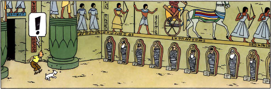
Y eut-il forcément quelque chose de négatif à l'embaumement? Pas d'après moi, ni d'après Catherine Emmerich, qui évoqua que du temps de Joseph, il y eut de l'embaumement. Mais du temps de Joseph j'imagine il y avait toute une cérémonie publique (à vérifier de ma part) alors qu'au cours des dernières décennies, s'il y eut des pratiques égyptiennes, furent-elles en général cachées? Je crois Salim Laïbi avait évoqué ce genre de pratiques chez l' "élite".
What's going on around here?
Que se passa-t-il? Et bien voici une histoire/hypothèse pour le cas de Jacques René Chirac. (
) Psychanalyse qui pourrait trouver une concordance avec bien d'autres politiciens des dernières décennies, mais dans ce dessin animé, daffy duck s'appelle d'Jack, alors ressemblance avec le prénom Jacques et alors Jacques Chirac fut donc "l'élu", pour cette histoire. L'histoire d'une tragédie.
Jacques aurait eut de l'empathie à cette époque
Pour commencer, dans ce dessin animé, quelqu'un part à pied avec une vache (ou un bœuf, j'eus un (ou des) doute(s)) que d'J'ack vient de lui laisser contre 3 haricots. Jacques n'est pas forcément méchant, de base, même plutôt gentil, voire sur certains points plus gentil, empathique que la moyenne, à la base. (Tout le monde n'aurait pas échangé, de base, une vache contre 3 haricots.)
Jacques est d'abord surpris par la grandeur
Jacques est pris dans une folie des grandeurs. Jacques décide de monter au haricot magique/ au "cocotier".
Mais Jacques aurait fait fausse route en mettant de côté Dieu? le Christianisme, et de manière plus générale, la Théologie (l'islam, le judaïsme etc.). Jacques étudie trop peu l'histoire Humaine, la Théologie, les grands saints qui sont passés avant lui. (Divers livres, moyens de communication existaient pourtant.)
Jacques n'attend pas que Dieu lui commande quelque chose, à l'image d'une Jeanne D'Arc, ou d'un roi David, ou d'un grand Prophète. Jacques, excité, part en freelance.
Jacques crut être monté au Ciel,
Mais, il ne sembla pas que ceci fut le Ciel.
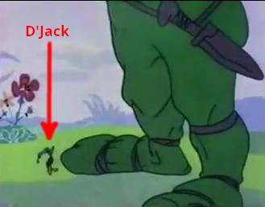
suite du parcours - hypothèse/psychanalyse du cas de "d'Jacques Chirac" et du milieu dans lequel "d'Jacques" "baigna"
"D'Jacques" est sous pression : au départ quelques Créatures, puis des milliers, pour partie elles-mêmes déjà mollement/tempérement sous emprise démoniaque (car beaucoup furent bien probablement, pour le moins, dans diverses déviances par rapport à Dieu), ces Créatures l'attirent dans des voies ténébreuses (en plus, tout en croyant bien faire). Elles votent pour lui, et pour certaines mêmes elles l'adulent.
Jacques s'enfonce dans des systèmes "démoniaques". Il se retrouve comme "enfermé" dans un processus.
Les Créatures sont maintenant des millions à voter pour lui.
Image issue du dessin animé "Beanstalk Bunny", quand "D'Jack" est prisonnier dans une cloche de verre!
Jacques est élu président de la "république". (Je mis le mot "république" entre guillemets, car contrairement à ce que laisserait penser ce mot, la "chose" n'est évidemment pas tout à fait "publique" (res - publica), (le mot "république" étant sémantiquement médiocre/démoniaque/ténébreux depuis des décennies (ce qui était prévisible/logique aussi, s'il émanait d'un milieu mollement démoniaque))). Cette république aurait été censée être publique. Mais j'estime, ce fut de la fiction. La réalité, serait plutôt que ce me sembla ténébreux.
Passé le moment d'euphorie des élections, Jacques, face à lui-même, est en fait finalement plutôt malheureux à son poste de président. Jacques comprend, ou du moins ressent, qu'il fut plus ou moins élu par des Créatures plutôt immatures, et que son bonheur, s'il en reste encore, ne peut-être en réalité que faux, superficiel (à l'image de la "victoire" de Quelqu'un qui "gagnerait" dans un jeu truqué, ou facile, (ou imbécile) : finalement le "bonheur" qu'il reçoit ne peut être que superficiel/artificiel et amener à la colère plutôt qu'à la joie.)
Jacques est donc en fait plutôt malheureux où il est, dans un système dangereux, un système "républicain" sous emprise démoniaque.
Jacques voit "défiler" des minettes à l'élysée et dans d'autres endroits chics, il accumule les banquets chics etc. Alors Jacques est excité. Sa libido, petit-à petit ou même parfois assez rapidement, se détraque, se déséquilibre.
En plus d'être déjà dans un spleen, Jacques est poussé à faire de l'adultère?, et puis il serait allé jusqu'à commettre des adultères? (ce qui, entre autre, aurait favorisé chez lui une consommation de drogue(s)?(d'après Gérard Fauré, il se shoota à la cocaïne (ce qui me semblerait assez plausible))).
Une hypothèse, c'est que petit-à-petit, une partie ce parcours de Jacques fut concomitant à une psychopathologie. (Comme beaucoup de dirigeants, depuis des siècles) Et le peuple : ce peuple, ?en partie constitué de Créatures elles-mêmes possédées/démoniaques?, cette partie de peuple qui l'adula, ou pour le moins le plaça là, cette portion du peuple, et bien il y aurait pour le moins de quoi estimer, qu'elle l'a peut-être bien, en fait, poussé vers cette psychopathologie. Quelle ambiance. Bernadette Chirac aurait déclarée "c'est moi qui l'aurait" (ou une phrase à peu près semblable, j'eus un doute sur la phrase exacte). Bernadette, j'avais crû comprendre, était plutôt orientée vers le Christianisme (et/ou une partie de sa famille). Certains évoquèrent que pour les funérailles de (d')Jacques, elle ne s'était pas déplacée à l'église parce qu'elle aurait eut des problèmes de locomotion. Mais je dus avoir des doutes que ce fut pour ceci qu'elle n'y alla pas.
Où serait maintenant "d'Jack"? Y aurait-il un purgatoire et/ou un enfer? Dans l'hypothèse où D'Jack se situerait actuellement au purgatoire, peut-être lui sera-t-il accordé tout de même une indulgence, en ce qu'il sera du moins prit en compte qu'il ne fut pas seulement lui le "coupable", mais qu'une grande partie du peuple aussi, l'amena jusqu'où il en arriva. Certains crurent, ou croient encore, que parfois, divers politiciens s'en prennent aux peuples, mais parfois, ces politiciens, finalement, ne furent-ils pas et n'en sont-ils pas encore peut-être aussi les plus tristes/attristantes victimes, d'une partie de ces peuples.
Petit tableau puis extrait du tome 16 - 10 novembre 1923 - le livre du Ciel
Volonté de Dieu
Volonté simplement Humaine
J'attends que Dieu me parle
Je n'attends pas que Dieu me parle
Moïse etc.
Chirac etc.
Tome 16 - 10 novembre 1923 - le livre du Ciel J'ai dit à Jésus: «Jésus, mon Amour, il m'apparaît que je suis très cattiva [mauvaise] et que c'est à cause de cela que je suis si petite. Cependant tu me dis que tu m'aimes beaucoup parce que je suis petite. Comment cela est-il possible?» Jésus reprit: «Ma petite, le mauvais ne peut pas entrer dans les vrais petits. Sais-tu quand le mal de la croissance débute? Quand la volonté propre commence à entrer. Alors la Créature commence à se sentir elle-même, à vivre par elle-même. Et le Tout quitte la petitesse de sa Créature. Il semble à cette Créature que sa petitesse devient plus grande, d'une grandeur à faire pleurer. Comme Dieu ne vit pas complètement en elle, elle s'éloigne de ses origines et les déshonore. Elle perd la lumière, la beauté, la sainteté et la fraîcheur de son Créateur. Elle semble grandir devant elle-même et peut-être devant les hommes mais, devant Moi, oh! comme elle décroît! Elle peut devenir grande, mais elle ne sera jamais ma petite bien-aimée, celle que, par amour, Je remplissais de Moi-même en espérant qu'elle demeure comme Je l'avais créée pour faire d'elle la plus grande, telle que personne ne puisse l'égaler. Il en fut ainsi pour ma céleste Maman. Parmi toutes les générations, elle est la plus petite parce que sa volonté n'a jamais agi en elle: uniquement ma Volonté Éternelle. Et cela ne l'a pas seulement gardée petite, belle et fraîche comme quand elle est sortie de Nous, mais cela a fait d'elle la plus grande de toutes. Oh! comme elle était belle! Elle était petite par elle-même, mais grande et supérieure à tous à cause de Nous. À cause de sa petitesse, elle fut élevée à la hauteur de Mère de Celui qui l'a formée. Comme tu peux le voir, -tout le bien en l'homme vient de l'accomplissement de ma Volonté en lui, et -le mal vient de l'accomplissement de la sienne. Pour venir racheter l'homme, j'ai choisi ma Mère parce qu'elle était petite. Je me suis servi d'elle comme d'un canal pour faire descendre sur l'Humanité tous les fruits de la Rédemption.
Emprise démoniaque et législation française
Dans cette partie, je ferais peut-être plus tard une analyse de la "constitution française". En essayant de montrer en quoi celle-ci me semblerait, pour partie du moins, ténébreuse. Par ce que ce ne serait pas compliqué : y aurait un Dieu, un Dieu qui pour avoir été mis de côté, fit que les législateurs n'auraient pas put produire autre chose que des textes ténébreux.
Emprise démoniaque et révolution française
La révolution française fut-elle quelque chose de simplement démoniaque? J'estime ce serait trop réducteur, de croire que oui. Fut-ce simplement un événement sain? Ce serait aussi trop réducteur, j'estime.
Je mets quand même une vidéo pour réfléchir à la question.
Pages wikipedia de quelques lieux évoqués dans cette vidéo/émission de radio :
Prison des carmes, wikipedia
Titre
Divers Politologues - intelligence politique de certains Peuples
Depuis quelques années, j'estime un des meilleurs Politologues publiquement connu et en plus, un des seuls à s'être occupé de certains sujets :
mais, bon, j'ai suspecté qu'il se détruisit aussi depuis des années à prononcer des mots d'argot, des blÂmes, et son cas ne serait pas encore stabilisé. Et puis depuis des années il ne parla quasiment jamais du coran, directement. Par ailleurs, Gérard Fauré fit diverses déclarations selon lesquelles de nombreux politiciens étaient drogués. Je ne sais pas si ces déclarations sont vraies, mais je ne vois pas non plus en quoi elles ne seraient pas très plausibles. Par ailleurs, "Aldo sterone" parla aussi parfois qu'il y avait comme un problème avec divers Dirigeants. À croire qu'en général les Algériens (ou les Créatures d'apparentée algérienne, si l'on préfère (car certains diraient peut-être qu'ils sont plutôt Français)), et même les Maghrébins auraient vraiment des capacités, dans le domaine politique, d'un autre niveau que l' Occidental moyen. D'ailleurs j'estime le hirak algérien serait allé dans ce sens. De quoi suspecter que cette intelligence politique proviendrait chez divers Musulmans d'une lignée Abrahamique / une lignée liée à Dieu. Ce qui me laisserait aussi suspecter que s'il y a un jour un début de soulèvement de divers peuples contre diverses puissances démoniaques, ceci commencera avec les Musulmans, par le Mahdi, à la mecque (plutôt qu'avec le Machia'h en israël et/ou le grand Monarque en europe).
Certains évoquèrent d'ailleurs que le Mahdi apparaitrait d'abord au maghreb.
Divers vidéastes religieux (Christianisants, Judaïsants ou Musulmanisans) me semblèrent aussi avoir une intelligence à comprendre que les milieux politiciens eurent quelque chose de problématique. Parmi les francophones, Haïm Dynovisz me sembla aussi un de ceux qui eurent particulièrement considéré que la plupart des Dirigeants et des milieux politiques furent comme "possédés".
Politiciens et peuples
Je répète ce que j'ai dit des milliers de fois : les grands coupables existent parce-que la masse est plus ou moins coupable des mêmes péchés que les grands
Depuis des décennies, la quantité de Créatures qui continuent à participer à la politique agnostique, alors qu'ils se sont déjà fait avoir : une des situations, si ce n'est la situation la plus bizarre, la plus critique, qui concerna, et semble encore concerner, beaucoup de Créatures de cette planète.Une sorte de débilité collective qui sembla n'en plus finir.
Élections - Beaucoup de Créatures pour le moins incompréhensibles
Depuis des décennies, la plupart des Créatures de différents peuples, en particulier les peuples "démocratiques", pour continuer à alimenter ces systèmes politiciens, durent me sembler avoir quelque chose d'incompréhensible, voire pathétique. Comme s'il émana et émane encore quelque chose de fortement absurde, irrationnel, chez des dizaines de millions de Créatures qui continuèrent et continuent encore à voter pour des Gens dont il a été rapporté depuis des décennies diverses frasques et qu'ils ne respectaient pas leurs promesses.
pour agrandir/diminuer la taille de l'image avec le scroll de la souris : -soit après avoir double cliqué sur l'image - soit shift+mousewheel ou alt+mousewheel
Politique. Hypothèses de tels comportements de vote 🐦⬛
Qu'est-ce qui put pousser autant de Créatures à me sembler aussi égarées, à continuer, par exemple en france, à voter, par dizaines de millions, pour des Créatures dont il y avait fortement de quoi estimer qu'elles mentiraient, tromperaient, ne tiendraient pas leurs promesses, risquaient d'aller vers des déviances, vers les ténèbres?, "le démon". À se demander si collectivement, la plupart des Créatures occidentales "démocratiques", passé un certain âge (environ 16ans), seraient plus ou moins débiles/sous emprise démoniaque.
Vidéo, sorte d'analogie de ces peuples qui suivent des "ânes", et encore, dans cette vidéo, l'âne à l'air plutôt gentil et les mènera peut-être à bon "port". Avec certains politiciens, ce me semblerait moins sûr. Surtout les politiciens qui envoient les Créatures vers des guerres non en accord avec le Fils. (vidéo originalement récupérée sur dailymotion https://www.dailymotion.com/embed/video/x4x8dae, mais si j'intégrai avec dailymotion, la video démarrait automatiquement)
L'hypothèse la plus forte, probable, de tels comportements de vote d'une partie de ces masses, selon moi, ce serait le rejet de Dieu / le rejet, sinon la mise de côté, du premier commandement / l'apostasie. En fait, à partir du moment où on rejeterait le Guide /Dieu, on ferait plus ou moins n'importe quoi. Des Dirigeants seraient victimes de puissances démoniaques/malsaines. Divers Dirigeants auraient joué sur la carte "extrême droite", en disant aux peuples : soit vous votez pour le candidat démocrate soit vous aurez l'extrême droite, alors le peuple, peut-être aussi plus ou moins sous la menace, se sentit obliger d'aller voter "pour faire barrage" à l'extrême droite... (À l'image des élections de 2002 Jean-Marie LePen contre Jacques Chirac). Mais ce type de système ne ressemblerait-il pas à un système de menace?
Autre hypothèse (qui j'estime aurait tout de même bien moins jouée, si tant est qu'elle ai jouée) : Les ondes des téléphones portables? : Est-ce que les ondes électromagnétiques des téléphones portables auraient aggravé un déséquilibre chez beaucoup de Créatures? Certains évoquèrent que les ondes des téléphones portable pouvaient être nocives pour le cerveau, chaufferaient la tête...
Une autre hypothèse, serait maintenant les vaccins covid. Est-ce qu'il aurait été incorporé dans ces vaccins des substances visant à rendre sciemment les Créatures plus ou moins possédées/contrôlées? (En vue aussi par ailleurs d'un futur projet blue beam?)
Une autre hypothèse me semblant assez intéressante, c'est que depuis des années (ou même des siècles?), il n'aurait pas vraiment existé de Créature de substitution ou plutôt de substituant à ces politiciens, je veux dire un Dirigeant à la fois Théologien et les pieds sur terre. (Genre un Moïse, ou un David, ou une Jeanne d'Arc.) Ce manque aurait-il poussé, par dépit, mais aussi par souvenir qu'il aurait quand même déjà existé de grands Dirigeants, Ets-ce que cette mémoire, aurait poussé quand même certains à encore y croire, à encore y croire qu'un Chef pourrait être bénéfique.
Les Occidentaux et le respect entre Créatures, la distinction entre Créatures. La célébrité de certaines Créature. La non célébrité d'autres Créatures
Depuis des millénaires, la plupart des Humains/Humanoïdes terrestres, d'après ce qui a été rapporté historiquement, j'estime, mirent de côté la crème de l'Humanité. Autrement rédigé, la plupart des Théologiens furent peu connus, en attendant que des non Théologiens étaient des célébrités. Un aspect morbide/malsain? de divers Occidentaux. Un des aspects morbide peut-être les plus grave, car il irait de pair avec une une apostasie généralisée et à l'encontre du premier commandement.
D'après le livre du Ciel, il exista, et il existe encore, quelques Âmes choisies, sur terre. (Et j'en déduisit que nous ne serions donc pas tous égaux, du moins dans certains domaines.)
Il n’y a donc pas eu et il n’y aura jamais de siècle où nous ne choisirons pas des Âmes chères, plus ou moins importantes, - qui formeront le centre de la Création et -en qui nous aurons notre Vie qui palpite et notre Amour à l’œuvre. Selon les époques, les temps, les besoins et les circonstances, -elles ont été offertes pour le bien et la défense de tous, et -elles seules ont soutenu mes droits sacro-saints et m’ont offert le champ où maintenir l’ordre de mon infinie Sagesse. Le livre du Ciel 20 octobre 1931
Si je compare l'"Humanité" actuelle, avec une fourmilière et sa ou ses reines des fourmis (en fonction des fourmilières il y aurait, d'après wikipédia, une ou plus d'une reine, c'est selon), alors ce fut, et ce me sembla comme si depuis des millénaires, dans l'"Humanité" (ou plutôt proto-Humanité), la(les) reine(s) des fourmis avai(ent)t été la plupart du temps non reconnues comme reines, excepté à quelques périodes de l'histoire (par exemple du temps du roi David, lorsqu'il était roi). (Il y eut tout de même les papes aussi, mais ils ne furent reconnus que par une partie des Christianisants (pas par les protestants, par exemple). Mais pour un pape prince, ou roi d'une partie des fourmis qui le reconnurent, combien de fourmis reines ou princesses mise de côté..) Comme si, depuis des millénaires, non seulement la plupart des "fourmis-hommes" n'avaient pas reconnues leur(s) reine(s), et même, parfois, elles maltraitèrent la (ou les) reine(s) : Par exemple, Maria Valtorta, qui, d'après moi, était probablement une de ces reines (ou du moins princesse). Maria Valtorta qui reçue un coup dans le dos à la suite duquel elle fut plus ou moins paralysée.
Comparaison fourmilière / proto-Humanité
fourmilière
proto Humanité qui eut cours jusqu'à maintenant
en général, reine(s) des fourmis à sa(leurs) place(s)
en général, roi(s)/reine(s) des Humains/Humanoïdes pas à sa(leurs) place(s). Depuis des millénaires, pas à leurs places, excepté quelques rares moments de l'histoire (par exemple période où Moïse dirigeait les hébreux, période où David était roi. Saint Louis? (Faudrait que je revois son histoire). Les papes, mais papes reconnus que par une partie des Christianisants (papes non reconnus par les protestants, les islamistes etc.) (Maria Valtorta aurait même été placée en établissement psychiatrique..)
Alors, par rapport au livre du Ciel, n'aurais-je eu de quoi avoir l'impression qu'en particulier depuis des décennies, du moins cet occident et la plupart des Occidentaux, furent particulièrement immatures (pour ne pas dire pire) dans leur reconnaissance des Humains? Au cours des dernières décennies, énormément d'Occidentaux en surent sur tel ou tel joueur de football, chanteu(r)se, ou politicien, tandis que la plupart ne connurent quasiment pas telle ou telle figure religieuse. Les vidéos concernant le football ou d'autres sujets, d'après divers sites vidéos, auraient été vues des millions ou même des fois des milliards de fois, tandis que beaucoup de vidéos sur diverses figures de l'Église, la religion, ne firent quasiment pas de vues (quelques centaines ou quelques milliers de vues, pour la plupart). Certains pays plus "religieux" ont beaucoup plus un culte pour la religion (par exemple l'iran, où les pays dits Musulmans en général, mais ces pays eurent-ils vraiment le bon Dieu?)
Si divers événements eschatologiques arrivent, je ne serais pas étonné que se produise un fort regain pour la religion de la part de la population, mais que ce regain ne soit que passager. La Théologie ne me semblant pas quelque chose qui s'improvise, il ne devrait pas suffire aux populations de divers pays de quelques mois pour qu'ils fassent le tour de la Théologie, ou même, qu'ils aient des bases suffisamment solides. Je suspecte qu'il suffirait que ces événements eschatologiques deviennent moins nombreux, ou que sur certains points Dieu semble comme les abandonner, pour qu'assez rapidement, la foi des populations retombe fortement aussi.
"Dieu seul n'est pas sujet au changement, tandis que le démon et la nature Humaine changent très souvent: ce qu'ils aiment aujourd'hui, demain ils l'auront en horreur. Ce qu'ils ont en horreur aujourd'hui, demain ils l'aimeront et le trouveront satisfaisant." 27 décembre 1900, le livre du Ciel. Dictée qui aurait été réalisée par le Fils.
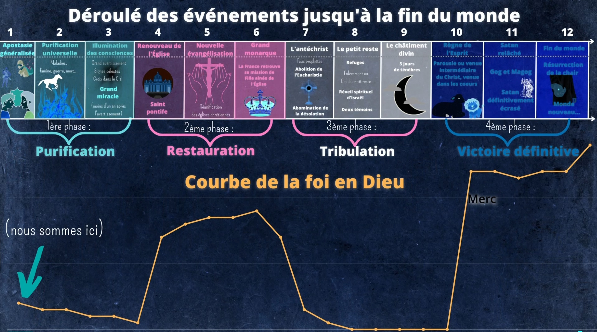Image issue d'une capture écran de la vidéo 12 événements prophétisés d'ici la fin du monde remis dans l’ordre - Prophéties n°3 - YouTube lien: https://youtu.be/XEhGThUcftk?t=597 chaine Nourriture Spirituelle plus valide Ignis - YouTube https://www.youtube.com/@-ignis (couleurs inversées par rapport à l'original.)
Illustration du regain de foi par l'image suivante.
Sur cette image, il y aurait de quoi considérer qu'il pourrait y avoir un fort regain de foi de la part de la population , au moment de la deuxième phase (renouveau de l'Église, nouvelle évangélisation, grand Monarque), mais avec l'apparition de la troisième phase (antéChrist, 3jours de ténèbres), fort rechute de la foi.
Certains politiciens. Ummites
Quelques extraits de lettres ummites à propos des politiciens. Je n'en sais trop rien si ces ummites existent pour de vrai. Mais voici deux extraits
"N'attendez de nous aucune intervention pour modifier le génome de votre race par quelque moyen que ce soit. Votre problème de fond n'est pas biologique mais psychologique. La réforme doit effectivement passer par l'éducation des jeunes coupés radicalement de l'influence néfaste: - de leurs propres géniteurs ; - de l'environnement social qui les encourage à adopter des comportements déviants tels le tabagisme, l'alcoolisme, la violence, la consommation de drogues, la pratique d'un érotisme morbide ainsi que d'une sexualité débridée et erronée; - des médias de diffusion de l'information qui contaminent leur capacité encore intacte d'analyse objective. Vous acceptez sans conteste l'existence de virus ou autres micro-organismes pathogènes contre lesquels vous recherchez des parades adaptées à chacun. Sachez que ces biovirus ont également leur pendant psychologique, plus subtil. Alors que vous avez de façon évidente su répliquer ces concepts virus/vaccin au niveau de vos ordinateurs, ne pouvez vous concevoir également l'existence d'idées-virus altérant irrémédiablement votre fonctionnement psychologique ? Ces psychovirus sont instillés pour la plupart dès l'enfance par les géniteurs eux-mêmes qui tentent tant bien que mal d'éluder les nombreuses questions candides de leur Enfant par des réponses toutes faites ou inventées dans l'inspiration du moment. Le système éducatif et les médias de diffusion de l'information achèvent ce processus qui finit par fragiliser le discernement critique de vos jeunes pour les conformer aux idéologies erronées proférées par vos instances politiques, économiques et religieuses. L'existence de différences parfois fondamentales entre les idéologies des différentes nations de votre planète entraîne inévitablement des tensions xénophobes entre les individus dues à leur seule incapacité d'accepter leurs différences et de moduler leurs comportements en fonction d'elles. Ces virus psychologiques aboutissent, par un processus insinuant d'apprentissage, à modifier physiologiquement des structures synaptiques en créant et en consolidant des connexions neuronales thalamiques et hypothalamiques ainsi qu'au niveau de certaines zones clés, en particulier l'amygdale, le noyau accumbens, l'aqueduc de Sylvius, le septum et l'hippocampe. Ils conditionnent lentement l'individu à agir de façon prévisible en réponse à des stimuli remettant en cause son sentiment de sécurité, ses convictions intimes et les préjugés inculqués à travers un mécanisme que l'on pourrait définir comme une homéostasie psychologique. L'argent, la religion et l'orgueil nationaliste sont sans conteste les principaux ressorts dont usent vos Dirigeants à votre encontre."
"Saddam Hussein ou George Bush que nous considérons comme des psychopathes. Nous n'avons construit aucune barrière mentale nous séparant de vous comme le bien du mal. Nous avouons cependant réagir avec une certaine aversion lorsque nous faisons référence à votre race sur OUMMO. Vous souffrez d'une pathologie psychologique globale qui vous mène à confier le destin de votre planète aux Dirigeants les plus à même de la mener au désastre. J'ai moi même ressenti un certain désappointement en apprenant mon rattachement à l'INNAYOUYISSAA (microgroupe social soumis à un supérieur) destiné à OYAGAA (votre planète). Ma YIE (épouse) m'a confié son désir d'intervenir en ma faveur auprès du conseil scientifique d'OUMMO pour changer cette affectation et il m'a fallu la persuader de ne pas considérer cela comme une honte ou une humiliation mais comme un sacrifice nécessaire. Vous vous complaisez dans vos supplices en provoquant même de nouvelles souffrances quand la situation semble vouloir s'apaiser. Quand donc vous révolterez-vous en masse contre cette situation permanente ? Quand donc le mouvement brownien des individus de votre réseau social sera-t-il canalisé par une volonté globale orientée vers des buts évolutifs concrets ? La mobilisation des populations de vos grandes nations en faveur de la paix avant le déclenchement des hostilités en Irak a cependant dépassé nos prévisions. Bien que cela ait manifestement été inutile, il existe sans nul doute encore un espoir que votre conscience collective s'active alors que tout est mis en œuvre pour l'anesthésier. Nous ne vous jetons toutefois pas la pierre. L'histoire d'OUMMO connut aussi des périodes déplorables au cours, par exemple, des règnes despotiques d'IEE 456 Fille de NAA 312 puis de WIE 1 Fille d'OOWA 3 et d'IEE 456. La réforme de notre réseau social qui s'ensuivit fut longue et éprouvante et il s'agit d'une période de notre histoire que nous ne cachons nullement mais dont nous nous sentons profondément honteux."
Pourquoi un consensus pour la guerre ukraine/russie ?
Une question qui pourrait se poser c'est pourquoi beaucoup de Dirigeants Occidentaux en charge de cette guerre ukraine/russie, n'essayent pas davantage de faire la paix. Et essayent d'éviter des milliers de morts et de blessés. Pourquoi cette orientation collective comme naturelle vers l'envoi d'armes, de chars, de millions d'euros et de dollars. Comme s'il y avait un consensus : "allé, vas-y, envoie des armes". Pourquoi ne pas chercher simplement à évacuer la population ukrainienne et/ou envoyer simplement du matériel humanitaire.
Face à une telle ambiance va-t-en-guerre, une ambiance qui pourrait sembler une démence collective?, une hypothèse pour expliquer ces comportements va-t-en-guerre, ou du moins va-t-en-livrer-des-armes, serait justement qu'il y ait une part de quelque chose qui relève d'un "autre monde", d'une "autre dimension" : quelque chose de démoniaque. Qu'il y ait des puissances démoniaques à l'œuvre. Une question qui pourrait aussi se poser pour le côté oriental/russe.
pour agrandir/diminuer la taille de l'image avec le scroll de la souris : -soit après avoir double cliqué sur l'image - soit shift+mousewheel ou alt+mousewheel
"Vous vous battez par ordre de 5 ou 6 puissants, c'est ce que vous croyez. Non. Il n'y a qu'un exécuteur de cette ruine. Il est sur la terre, parce que vous le voulez. Mais il n'est pas de cette terre. C'est satan qui tire les ficelles de ce carnage"
3 hypothèses sur le comportement des politiciens de "haut" niveau actuels qui envoient des armes vers l'ukraine
Dieu n'existerait pas et n'aurait pas existé
Dieu existe et aurait existé
Hypothèse 1
Hypothèse 2
Hypothèse 3
Ils ne seraient peut-être pas dans le fond sous possession démoniaque, même si en apparence, il y aurait de quoi se demander s'ils le seraient.
Ils seraient en apparence et dans le fond sous possession démoniaque
En apparence, la plupart des politiciens occidentaux actuels de haut niveau, pour promouvoir la guerre, les armes, seraient sous emprise démoniaque, ne serait-ce que partielle (il faudrait que je me renseigne, mais il y aurait 7 niveaux)
En apparence, la plupart des politiciens occidentaux actuels de haut niveau, pour promouvoir la guerre, les armes, seraient sous possession démoniaque, ne serait-ce que partielle (il faudrait que je me renseigne, mais il y aurait 7 niveaux)
Mais ces politiciens auraient certaines informations spéciales qui les pousseraient à envoyer des armes. Des raisons spéciales, cachées au public. Des raisons Christiques? Mais lesquelles? En quoi envoyer des armes serait en accord avec le Fils? Quand est-ce que ne serait-ce dans le nouveau testament, le Fils aurait promu l'usage d'armes et de faire la guerre?
Il n'y aurait pas de raisons spéciales cachées au public qui justifieraient l'envoi d'armes.
Bilan : pour ne pas connaitre ces raisons, il y aurait tout de même une légitimité à croire à ce qu'en apparence, ils seraient sous "possession démoniaque"
Pour le secrétaire général de l'Alliance atlantique, la question est d’autant plus pressante que l’offensive de printemps de l’armée russe a en réalité déjà commencé. « Ce que la Russie fait maintenant est d’envoyer des milliers et des milliers de soldats supplémentaires, en acceptant un taux de pertes très élevé pour faire pression sur les Ukrainiens. Et ce dont les Russes manquent en qualité, ils essaient de le compenser en quantité. Donc pour moi, cela ne fait que souligner l'importance du timing, a insisté Jens Stoltenberg. Il est urgent de doter l'Ukraine de plus d'armes. Plus vite, nous pouvons livrer des armes, des munitions, des pièces de rechange, du carburant sur le front ukrainien, plus nous sauvons de vies et mieux nous soutenons les efforts pour trouver une solution pacifique et négociée à ce conflit ». Guerre en Ukraine: le chef de l'Otan alerte sur un manque possible de munitions https://www.rfi.fr/fr/europe/20230213-guerre-en-ukraine-le-chef-de-l-otan-alerte-sur-un-manque-possible-de-munitions
Quelle logique à ce passage surligné en rouge?
Alors bon, j'imagine que c'est parce que dans un premier temps on envoie des armes, mais ces armes permettent ensuite de tenir en échec la russie et la alors la russie négocierait... Sauf que ceci pourrait encore donner davantage de détermination à la russie, alors... De but en blanc, la question reste posée : pourquoi ne pas envoyer d'armes et évacuer l'ukraine?
, que j'estime connaitre assez peu : je le vis seulement quelques fois en vidéo, il me donna l'impression, de Quelqu'un plutôt mal-à-l'aise au niveau de sa position. Comme s'il était à son poste, mais plus ou moins mal-à-l'aise. Peut-être aime-t-il pas trop la guerre? D'ailleurs il aurait souhaité démissionner? Je reverrai peut-être ceci plus tard.
Quelques voies s'élevèrent contre ce positionnement de continuer la guerre via l'ukraine
Entre autres, pour cette guerre ukraine/russie ("Occident/russie"), je vis tout de même une intervention d'Arno Klarsfeld allant plutôt pour trouver un consensus :
Partie 71 du tome 1 (je n'ai pas trouvé le jour de rédaction, mais ce devait être vers 1898) Mon Enfant, les iniquités des hommes sont telles et si nombreuses que l'équilibre entre mon Amour et ma Justice en est bouleversé. La prépondérance des forces du mal m'astreint à faire venir sur les hommes une violente guerre par laquelle j'infligerai une destruction sans précédent de chair Humaine.» Puis, tout en larmes, il ajouta: «Oh! oui! je leur ai donné des corps pour être des sanctuaires dans lesquels je comptais me réjouir. Plutôt, ils en ont fait de putrides fosses septiques. Leur puanteur est si grande que j'ai été forcé de m'éloigner d'eux. Le livre du Ciel
Partie 81 - tome 1 Il vint à moi, me serra sur lui et, pressant ses lèvres contre les miennes, il versa en moi un liquide, beaucoup plus doux que le lait et, m'embrassant encore et encore, affectueusement il prit un anneau de son Cœur en disant: «Admire et contemple bien cet anneau que j'ai préparé pour toi, pour notre mariage, puisque je te marierai dans la foi. Pour le présent, je t'ordonne de continuer de vivre dans cet état de victime et de dire à ton confesseur que c'est mon désir que tu continues de vivre dans cet état de souffrance. Et comme signe que c'est bien moi qui parle, sache que la guerre qui est à un arrêt entre l'Italie et l'Afrique continuera jusqu'au moment où il te donnera la permission de vivre dans l'état de victime. À ce moment, je ferai cesser la guerre pour qu'ils aient la paix des deux côtés.» Puis Jésus disparut. Le Livre du Ciel
Aussi, plutôt que d'appeler ton confesseur, désormais tu appelleras les médecins qui, par leur science, te libéreront de ta maladie nerveuse.» Quand il eut fini de me rabrouer, je me suis obligée à lui dire ce qui était arrivé, et tout ce que le Seigneur m'avait demandé de lui dire. En m'entendant, il changea d'idée et m'assura qu'il ne doutait pas de ce que j'avais dit regardant Jésus, parce que les paroles à propos de la guerre entre l'Italie et l'Afrique étaient véridiques. Il ajouta à propos de la prétendue paix, si elle arrive sous peu, conséquemment au fait que tu seras redevenue victime, alors je ne pourrai plus douter. Si, d'un autre côté, c'était dû à d'autres causes... Nous allons attendre et nous verrons.» Ainsi il consentit à ce que je réponde au désir exprimé par mon bon Jésus. Et il me répéta: «Nous allons attendre et nous verrons si cette guerre n'augmente pas et si bientôt nous aurons la paix.» Quatre mois plus tard, mon confesseur apprit du journal que la paix prophétisée par Jésus s'était réalisée. Quand il me vit, il dit: «Sans victime d'un côté comme de l'autre, la guerre qui sévissait entre l'Italie et l'Afrique s'est terminée; il y a maintenant la paix entre les deux.» Tome 1 le livre du Ciel
Partie 111 - tome 1 Jésus m'avait avisé de la deuxièmeguerre entre l'Italie et l'Afrique. Et voici comment: Mon Jésus béni, m'avait fait sortir de mon corps. Alors que, transformée, je le suivais, il me fit parcourir un long chemin parsemé de cadavres Humains baignant dans leur sang. Cela m'était montré comme une rivière inondant la route. À ma grande horreur, Jésus me fit voir les corps abandonnés et exposés à une température peu clémente aussi bien qu'à la rapacité d'animaux carnivores, puisqu'il n'y avait personne pour s'occuper des enterrements. Terrifiée, je demandai à Jésus: «Saint Époux, qu'est-ce que tout cela signifie? Et Jésus me répondit: «Sache que dans l'année qui vient, il y aura la guerre. L'homme s'abandonne à tous les vices et aux passions charnelles. Je veux ma revanche sur la chair qui pue le péché.» Je ne doutais pas de ce que Jésus disait. Mais j'espérais néanmoins que dans les prochains neuf mois, l'homme charnel mettrait un frein à ses passions et que, à la vue de sa conversion, Jésus suspendrait laguerre prévue. Mais que dire de ceux qui se vautrent dans la boue de leurs passions et qui, plutôt que de se convertir, s'y enfoncent davantage. Et c'était arrivé précédemment que l'Italie et l'Afrique parlèrent d'abord deguerre . Puis, tôt après, ils s'engagèrent dans une dure guerre résultant en beaucoup de souffrances et de dommages des deux côtés. Alors, plus que jamais, je m'offris moi-même à mon bon Jésus, pour qu'il diminue le nombre des victimes de cetteguerre Je m'offris pour les Âmes qui, malgré mes prières et mes supplications envers la Miséricorde de Dieu, ne seraient pas en état de grâce et seraient jetées dans l'enfer quand elles paraîtraient devant Dieu. Mais Jésus ne m'écouta pas. Une fois de plus, il me fit sortir de mon corps. Le suivant, je fus à Rome en un instant. Là j'entendis beaucoup de voix et j'appris la situation décrite plus haut. Jésus me fit pénétrer avec lui dans le parlement, dans la salle du conseil, où les députés se livraient à un chaud débat sur la manière de mener laguerre pour être sûrs de la victoire. La discussion se poursuivait avec beaucoup de mots pompeux, d'orgueil et de fanatisme pitoyables. Mais ce qui fit la plus grande impression sur moi, c'est qu'ils étaient tous sectaires et agissaient sous la pression du démon, à qui ils avaient vendu leur Âme dans le but d'avoir une fin deguerre victorieuse. J'étais horrifiée d'apprendre cela et je me disais en moi-même: «Que d'hommes tristes et sauvages; que de tristes temps, plus tristes encore que ceux qui y vivent!» Il me semblait que Satan régnait parmi eux, puisque leur entière confiance était placée en lui plutôt qu'en Dieu. Et c'était du démon qu'ils attendaient la victoire. Pendant qu'ils étaient engagés dans un débat chaud et rigoureux, ils s'éloignaient les uns des autres, même s'ils voulaient unir leurs différences. Jésus, sans être vu, était au milieu d'eux. Entendant leurs tristes propositions, il pleurait sur leurs misérables propos. Après qu'ils eurent fait leurs plans pour mener leurguerre sans Dieu, ils se vantaient très présomptueusement, se disant plus que jamais sûrs de la victoire. Alors, comme s'ils étaient encore là pour l'écouter, Jésus dit d'un ton de voix menaçant: «Vous avez une grande confiance en vous-mêmes, mais je vous humilierai; et alors vous mesurerez la grandeur de vos pertes pour ne pas avoir invoqué l'aide et l'intervention de Dieu qui est l'auteur de tout bien. Cette fois, l'Italie ne sera pas victorieuse. Elle expérimentera plutôt une défaite totale.» Comment décrire combien mon cœur souffrit de ces paroles de Jésus, et de combien de manières j'essayais de pacifier mon aimable Jésus, pour qu'au moins laguerre ne soit pas si meurtrière. Comme toujours, je m'offris comme victime d'expiation et je demandai au Seigneur de m'accorder les plus grandes souffrances et d'épargner l'Italie d'une telle flagellation. Mais Jésus me dit: «Je resterai ferme pour que l'Afrique soit victorieuse sur l'Italie. Et je t'accorderai seulement ceci: l'Afrique victorieuse n'envahira pas le sol italien pour y continuer la guerre La punition est juste, puisque l'Italie la mérite pour son mode de vie licencieux, pour sa foi perdue et parce qu'elle met sa confiance dans le démon plutôt qu'en Dieu.» Le livre du Ciel
Ce matin, mon bien-aimé Jésus me transporta hors de mon corps. Il me fit voir la décadence de la foi chez les hommes ainsi que des préparatifs deguerre
«Ma Fille, ne dis pas cela. J'ai été indulgent à cause de toi et les terribles châtiments prévus pour faire rage très longtemps seront écourtés. N'est-ce pas une bonne chose que les châtiments qui devraient se prolonger pendant beaucoup d'années ne durent que quelques années? «De plus, au cours des dernières années, avec les guerres et les morts subites, les Gens n'auraient normalement pas eu le temps de se convertir. Mais ils l'ont fait et ont été sauvés. N'est-ce pas là un grand bien? Pour l'instant, il n'est pas nécessaire que Je te fasse connaître les raisons de ton état, pour toi et pour le peuple Mais Je le ferai quand tu seras au ciel. Le livre du Ciel
Mon adorable Jésus me transporta hors de mon corps. Il me montra des rues remplies de chair Humaine. Quel carnage! Je suis horrifiée rien que d'y penser. Il me montra quelque chose qui était arrivé dans les airs. beaucoup moururent soudainement. Cela se passait dans le mois de mars. Selon mon habitude, je l'ai prié de garder son calme et de protéger ses propres images de tourments si cruels et de guerres si sanglantes.
Après cela, je regardai mon doux Bien. J'ai vu qu'il tenait deux éclairs dans ses Mains. -L'une représentait un grand tremblement de terre et -l'autre, une guerre accompagnée de beaucoup de morts subites et de maladies contagieuses. Je l'ai prié pour qu'Il verse sur moi ces éclairs. Je voulais presque les prendre de ses Mains. Mais, pour m'empêcher de les prendre, Il s'éloigna de moi. J'ai essayé de le suivre et, ainsi, je me suis retrouvée hors de mon corps. Jésus disparut et je restai seule. Alors, je suis allée faire un tour et je me suis retrouvée dans des endroits où c'était la saison des récoltes. Il semblait qu'il y avait là des bruits de guerre. Je voulais m'y rendre pour aider les personnes, - tome 3-15 mais les démons m'empêchaient d'aller où ces choses étaient sur le point d'arriver. Ils me frappaient pour m'empêcher d'aider les Gens. Ils usèrent de tant de violence qu'ils me forcèrent à reculer.
19 février 1900 - Ce matin, mon adorable Jésus est venu et m'a transportée hors de mon corps. J'ai vu beaucoup de personnes en action. Mais Je ne peux dire si c'était la guerre ou la révolution. Pour ce qui est de Notre-Seigneur, -les Gens ne faisaient que lui tresser des couronnes d'épines. Pendant qu'avec soin Je lui en ai enlevé une, -ils lui en ont fixé une autre encore plus douloureuse. Ah! Il me semble bien que notre âge sera désavoué à cause de son orgueil! La plus grande infortune, -c'est de perdre le contrôle de sa tête. Car, une fois qu'une personne a perdu le contrôle de sa tête et de son cerveau, -tous ses membres deviennent invalides, -ou ils deviennent ennemis les uns des autres. Mon patient Jésus toléra toutes ces couronnes d'épines. A peine les eus-je enlevées qu'Il se tourna vers les Gens et Il leur dit: «Certains dans la guerre certains en prison, d'autres dans les tremblements de terre. Quelques-uns resteront. L'orgueil a dirigé votre vie, et l'orgueil vous donnera la mort.» Après cela, me tirant d'au milieu de ces personnes, Jésus béni s'est changé en Enfant. Je l'ai porté dans mes bras pour qu'Il se repose. Il m'a dit: «Entre toi et moi, -que tout soit pour moi; et -que ce que tu concéderas aux Créatures ne soit rien d'autre que le débordement de notre amour.» Le livre du Ciel
27 juillet 1900 – « J'ai vu la terrible destruction que provoquait la guerre en Chine. » « Allons dans la divine Volonté si tu veux que je reste avec toi.» Je me trouvais très inquiète à propos de mon misérable état, pensant qu'il ne correspondait pas à la Volonté de Dieu. Je considérais comme signes de cela -la souffrance insuffisante que Jésus me donnait et -ma continuelle privation de lui. Pendant que je fatiguais mon petit cerveau sur cet état de choses et que je luttais pour en sortir, mon toujours aimable Jésus se montra à la vitesse de l'éclair et Il me dit: «Ma Fille, que veux-tu que je fasse? Dis-le-moi. Je ferai ce que tu veux.» Je ne savais que répondre à une proposition si inespérée. J'expérimentai une grande confusion devant le fait -que Jésus béni voulait faire ce que je voulais -alors que c'était plutôt moi qui devais faire ce que lui voulait. Je restai muette. Comme je ne disais rien, il s'éloigna comme l'éclair. Courant derrière cette lumière, je me trouvai hors de mon corps. Mais je ne l'ai pas trouvé et je suis allée sur la terre, dans les cieux, dans les étoiles. À un moment, je l'appelais par mes paroles, à l'autre par une chanson, pensant en moi-même que Jésus béni serait touché d'entendre ma voix ou mon chant et que, certainement, il se montrerait. Pendant que je me promenais, J'ai vu la terrible destruction que provoquait laguerre en Chine. Il y avait des églises de démolies et des images de Notre-Seigneur jetées par terre. Ce qui m'effrayait le plus, c'était que -si les barbares font cela actuellement, -les religieux hypocrites le feront plus tard. Se faisant connaître tels qu'ils sont et s'unissant aux ennemis ouverts de l'Église, ils mènent une attaque qui semble incroyable à l'esprit Humain. Oh! Que de tortures! Il semble qu'ils ont juré d'en finir avec l'Église. Mais le Seigneur les détruira! Puis je me suis trouvée dans un jardin qui me semblait être l'Église. À l'intérieur de ce jardin, il y avait une foule de Gens sous les apparences - de dragons, - de vipères et - d'autres bêtes féroces. Ils dévastaient le jardin. Quand ils sortirent, ils causèrent la ruine du peuple. Pendant que je voyais cela, je me suis trouvée dans les bras de mon Jésus bienaimé et je lui ai dit: «Je t'ai finalement trouvé! Es-tu bien mon cher Jésus?» Il me répondit: «Oui, oui, je suis ton Jésus.» J'essayai de lui demander d'épargner toutes ces personnes, mais lui, ne faisant pas attention à moi, me dit tout affligé: «Ma Fille, je suis très fatigué. Allons dans la divine Volonté si tu veux que je reste avec toi.» Effrayée qu'il puisse s'éloigner, je gardai le silence, lui permettant de dormir. Un peu plus tard, il entra encore en moi, me laissant encouragée mais très affligée. Le livre du Ciel
2 octobre 1900 Le fait que tu sois tout absorbée en Moi est un continuel acte de réparation pour beaucoup d'Âmes qui ne s'intéressent pas à Moi et qui ne me désirent pas. Ces Âmes me méprisent. Elles sont entièrement absorbées par les choses terrestres, crottées par la saleté de leurs vices. Étant totalement opposé au leur, ton état met un frein à ma Justice, Tome 4-2- de sorte que - te garder dans cet état et - permettre en même temps des guerres sanglantes en Italie m'est presque impossible.» Je lui dis: «Ah! Seigneur, pour moi, demeurer dans cet état sans souffrir m'est presque impossible! Je sens que les forces me manquent. Car la force de demeurer dans cet état me vient de mes souffrances. Si, à certains jours, tu ne viens pas, alors je cherche à en sortir. Gare à toi! Je te le dis d'avance afin que, plus tard, cela ne te déplaise pas. » Jésus répliqua: «Ah! Oui, oui, tu sortiras de cet état quand Je commencerai les massacres en Italie ! Alors, Je te suspendrai totalement. » Pendant qu'il disait cela, il me fit voir des guerres très féroces qui surviendront, - autant parmi les laïques - que contre l'Église. Le sang inondait les villes comme l'eau inonde les terres quand tombe une pluie diluvienne. Mon pauvre cœur se tordait de douleur à la vue de cela. En pensant à ma ville, je dis: «Ah ! Seigneur, en disant que tu vas me suspendre de tout, veux-tu me faire comprendre que tu n'auras même pas compassion de ma pauvre Corato? Que tu ne l'épargneras même pas?» Jésus répondit : «Si les péchés atteignent un certain niveau, de sorte -que les habitants de Corato ne méritent pas de garder une Âme victime parmi eux et -que ceux qui sont responsables de cette Âme victime ne s'intéressent pas à elle, Moi Je n'aurai aucun regard pour Corato. » Cela dit, Il disparut et je suis demeurée tout affligée. tome 4 le livre du Ciel
15 septembre 1901 Ce matin, mon adorable Jésus est venu tout glorieux, - avec ses plaies resplendissantes plus que le soleil, et - avec une croix dans la main. Je voyais aussi une roue avec quatre angles en saillie. Il semblait que la lumière s'échappait d'un de ces angles et -que le côté d'où la lumière s'échappait était dans l'obscurité. Il y avait des Gens qui se trouvaient dans cette obscurité, comme abandonnés par Dieu. On voyait des guerres sanglantes qui se succédaient - contre l'Église et - entre les Gens eux-mêmes. Ah! il me semblait que les choses dont Jésus béni m'avait parlé auparavant concernant l'avenir s'approchaient d'un pas rapide! En voyant tout cela, Notre-Seigneur était ému de compassion. Il s'est approché de la partie obscure de la roue et Il a jeté dessus la croix qu'Il tenait dans sa main en disant d'une voix sonore:« Gloire à la Croix!» Il me semblait que cette croix rappelait la lumière, alors que les peuples, en se réveillant, imploraient aide et secours. Jésus répéta : «Tout le triomphe et la gloire viendront de la Croix. Autrement, les remèdes aggraveront les maux eux-mêmes. Donc la Croix, la Croix! » Qui pourrait décrire combien je fus affligée et inquiète de ce qui pourra arriver? tome 4 le livre du Ciel
11 octobre 1901 «Ma Fille, quelle guerre se couve dans le monde moral ! Elle est horrible à voir. Pourtant, la première chose qu'on devrait rechercher dans la société, dans les familles et dans chaque Âme devrait être la paix. Sans la paix, tout devient insalubre, fût-ce les vertus elles-mêmes. La charité et le repentir, sans la paix, n'apportent ni la santé, ni la véritable sainteté. Pourtant, si nécessaire et si salubre, la paix s'est éloignée du monde d'aujourd'hui: on ne veut rien d'autre que des troubles et des guerres . Prie, ma Fille, prie!» tome 4 le livre du Ciel
3 mars 1902 - Les châtiments sont nécessaires. Je me trouvais dans mon état habituel et mon adorable Jésus ne venait pas. Je me sentais mourir à cause de son absence. Alors, vers la dernière heure du jour, ému de compassion, Jésus vint et en m'embrassant, Il me dit: « Ma Fille, il est parfois nécessaire que Je ne vienne pas. Autrement, comment donnerais-Je un épanchement à ma Justice? En voyant que Je ne les châtie pas, les hommes deviendraient de plus en plus arrogants. Par conséquent, les guerres et les massacres sont nécessaires. Le commencement et le moyen utilisé seront très douloureux, mais la fin sera des plus joyeuses. D'ailleurs, tu le sais bien, la chose primordiale, c'est la Résignation à ma Volonté.» tome 4 le livre du Ciel
30 décembre 1902 - Le Seigneur fait voir à Luisa des tremblements de terre et des destructions de villes. Il lui parle de sa Volonté. Me trouvant dans mon état habituel, il me sembla voir la très Sainte Trinité, et moi en elle. C'était comme si les Trois voulaient décider de ce qu'ils allaient faire du monde. Il me sembla qu'ils disaient : « Si nous n'envoyons pas sur le monde les plus violents fléaux, -tout sera entièrement fini en fait de religion et -les hommes deviendront pires que des barbares. » Pendant que les Trois discutaient ainsi, il me sembla que descendaient sur la terre -des guerres de toutes sortes, Tome 4-1- -des tremblements de terre capables de détruire des villes tout entières, ainsi que -des maladies. tome 4 le livre du Ciel
12 mars 1904 - Menaces de guerre Toute l'Europe sur les épaules de Luisa. Comme Luisa était malade, je lui ai imposé de dicter. Ne pouvant désobéir, c'est avec grande répugnance qu'elle m'a dicté ce qui suit: Comme j'étais très souffrante, je m'étais plainte à Notre-Seigneur parce qu'il ne m'avait pas emmenée avec lui au Ciel. Jésus béni m'a dit: « Ma Fille, courage dans ta souffrance! Ne t'afflige pas du fait que Je ne t'ai pas encore emmenée au Ciel. Il faut que tu saches que toute l'Europe repose sur tes épaules. Et que son avenir, bon ou mauvais, dépend de tes souffrances. Si tu demeures forte et constante dans la souffrance, les choses qui arriveront seront plus supportables. Mais si tu n'es pas forte et constante dans la souffrance, ou si Je t'emmène au Ciel, les choses seront tellement graves que l'Europe sera menacée d'invasion et d'être saisie par des étrangers. » Jésus m'a aussi dit : «Si tu demeures sur la terre et que tu souffres beaucoup avec désir et constance, tout ce qui arrivera de châtiments en Europe servira à faire triompher l'Église. Et si l'Europe n'en profite pas, elle restera obstinée dans le péché. Et tes souffrances te serviront de préparatif à ta mort sans que l'Europe en ait profité. » Tome 6 le livre du Ciel
14 mars 1904 - Jésus demande le silence à Luisa parce qu'Il veut châtier. Je me trouvais dans mon état habituel. Après m'être donné beaucoup de peine, Jésus béni est sorti de mon intérieur . Et, comme je voulais lui parler, Il mit son doigt sur ma bouche en me disant: «Tais-toi, tais-toi. » Je fus mortifiée de cela et je n'osai pas ouvrir la bouche. En me voyant aussi mortifiée, Il ajouta : « Ma très chère Fille, à cause de la nécessité des temps, il faut garder le silence. (C'est le directeur spirituel de Luisa, le Père Gennaro de Gennari, qui parle ici) Si tu me parles, ta parole me liera les mains et Je ne parviendrai jamais à châtier comme il convient. Nous devrons toujours recommencer. Par conséquent, il est nécessaire qu'entre toi et Moi il y ait un long moment de silence.» Pendant qu'Il disait cela, Il sortit un écriteau sur lequel était écrit: «Décret: fléaux, souffrances et guerres » Puis, Il disparut. Tome 6 le livre du Ciel
16 avril 1904 - Jésus et Dieu le Père parlent sur la miséricorde. Étant dans mon état habituel. Je me suis trouvée hors de mon corps et j'ai vu une multitude de Gens à un endroit où on entendait des bruits de bombes et des coups de fusil. Des personnes tombaient mortes ou blessées. Celles qui restaient fuyaient vers un palais avoisinant. Mais leurs ennemis les poursuivaient et les tuaient toutes. Je me suis dit : «Comme j'aimerais que le Seigneur soit là pour leur dire: « Ayez pitié de ces pauvres Gens.» Je me suis mise à sa recherche et je l'ai trouvé sous la forme d'un petit enfant Mais Il grandit peu à peu jusqu'à l'atteinte de l'âge parfait. Alors, je me suis approchée de Lui et je Lui ai dit: «Aimable Seigneur, ne vois-tu pas la tragédie qui se passe? Tu ne veux donc plus user de ta miséricorde? Peut-être considères-tu comme inutile cet attribut -qui a toujours tant glorifié ta Divinité incarnée et -qui formait une couronne spéciale sur ton auguste tête, qui était aussi coiffée d'une autre couronne -que tu voulais et aimais tant, une couronne d'Âmes?» Pendant que je disais cela, Jésus me dit: «Ça suffit, ça suffit! Ne va pas plus loin ! Tu veux parler de la miséricorde ? Et la justice, qu'en ferons-nous? Je te l'ai dit et Je te le redis: il est nécessaire que la Justice suive son cours.» Je répondis: «Donc, il n'y a pas de remède. Alors, pourquoi me laisser sur cette terre, -tome 6 puisque je ne peux plus t'apaiser ni souffrir à la place de mon prochain? S'il en est ainsi, il est préférable que tu me fasses mourir. » Pendant ce temps, je vis une autre personne derrière les épaules de Jésus béni. Jésus me dit en me faisant signe des yeux: «Présente-toi à mon Père et vois ce qu'Il te dira.» Toute tremblante, je me suis présentée. Dès qu'il m'a vue, Il m'a dit : «Pourquoi es-tu venue à Moi?» Je répondis: «Bonté adorable, Miséricorde infinie, en sachant que tu es la miséricorde même, je suis venue pour te demander la miséricorde, -la miséricorde pour tes propres images, -la miséricorde pour les œuvres que Tu as créées, -la miséricorde pour tes Créatures. » Dieu le Père me répondit: «Donc, c'est la miséricorde que tu veux. Mais, si tu veux la vraie miséricorde, c'est après que la Justice se sera déversée que la miséricorde produira des fruits grands et abondants. » Ne sachant quoi répondre, je dis: «Père infiniment saint, quand les serviteurs et les Gens dans le besoin -se présentent devant leur maître ou devant des Gens riches, si ceux-ci sont bons, même s'ils ne donnent pas tout ce qui est nécessaire, -ils donnent toujours quelque chose. Et moi qui ai fait le bon geste de me présenter devant Toi, -le Maître absolu, la Richesse sans limites, la Bonté infinie, ne vas-tu pas donner à cette pauvresse que je suis quelque chose de ce qu'elle t'a demandé? Le maître n'est-il pas plus honoré et plus content quand Il donne plutôt que quand Il refuse ce qui est nécessaire à ses serviteurs?» Après un moment de silence, le Père dit: «Par amour pour toi, Je ferai cinq au lieu de dix.» Ayant dit cela, le Père et le Fils disparurent. Alors, en beaucoup de lieux sur la terre, surtout en Europe, je vis se multiplier les guerres les guerres civiles et les révolutions. Tome 6 le livre du Ciel
29 juillet 1904 - La Foi fait connaître Dieu, mais la Confiance le fait trouver. Je poursuivais dans mon état habituel. Dès que j'ai vu mon adorable Jésus, je lui ai dit: «Mon Seigneur et mon Dieu ! » Jésus répliqua: «Dieu, Dieu, Dieu seul ! Ma Fille, la Foi fait connaître Dieu, mais la Confiance le fait trouver. De sorte que la foi sans la confiance est une foi stérile. Bien que la foi possède d'immenses richesses pour enrichir l'Âme, si la confiance est absente, la foi reste toujours pauvre et dépourvue de tout. » Pendant qu'Il disait cela, je me sentais attirée en Dieu et je restais absorbée en Lui comme une gouttelette d'eau dans l'immense océan. En Le regardant, je ne voyais aucune frontière, ni en hauteur ni en largeur. Le ciel et la terre, les Âmes bienheureuses et les Âmes pèlerines étaient tout immergées en Dieu. Je voyais aussi -des guerres comme celle entre la Russie et le Japon, -les milliers de soldats qui mouraient ou allaient mourir, bien que, par la Justice, la victoire appartiendra au Japon. Et j'ai vu des nations européennes comploter des guerres même contre d'autres nations d'Europe. Mais qui pourrait dire tout ce que j'ai vu de Dieu et en Dieu? Voilà pourquoi je m'arrête ici. Tome 6 le livre du Ciel
15 août 1904 - La mélancolie est à l'Âme ce que l'hiver est à la plante. Le triomphe de l'Église n'est pas loin. Ce matin, je me sentais tout opprimée et la mélancolie remplissait mon Âme. Il me semble que Jésus béni ne m'avait pas fait beaucoup lutter. En me voyant ainsi oppressée, il me dit : «Ma Fille, pourquoi cette mélancolie? Ne sais-tu pas que la mélancolie est pour l'Âme ce que l'hiver est pour la plante? L'hiver dépouille la plante de son feuillage et l'empêche de produire des fleurs et des fruits. Et si l'allégresse et la chaleur du printemps ne venaient pas, la pauvre plante resterait stérile et finirait par sécher. «Il en va ainsi pour la mélancolie de l'Âme. La mélancolie dépouille l'Âme de la fraîcheur divine qui, comme la pluie, fait reverdir toutes les vertus. La mélancolie rend l'Âme incapable de faire le bien et, si elle le fait, elle le fait plus par nécessité que par vertu. La mélancolie empêche l'Âme de croître dans la grâce, et si l'Âme n'est pas secouée par une sainte allégresse, qui est comme la pluie printanière qui relance rapidement la plante dans son développement, elle finit par sécher. » Pendant qu'il disait cela, j'ai vu à la vitesse de l'éclair -toute l'Église, -les guerres que doivent affronter les religieux, et -les guerres dans la société. Il semblait y avoir un tumulte général. Il semblait que le Saint-Père disposait de très peu de personnes religieuses pour ramener le bon ordre dans l'Église, chez les prêtres et autres, de même que dans la société. Pendant que je voyais cela, Jésus béni me dit: « Penses-tu que le triomphe de l'Église est éloigné?» Je répondis: «Sûrement ! Qui pourrait mettre de l'ordre au milieu de tant de bouleversements?» Jésus reprit: «Au contraire, je te dis que c'est proche. Ça prendra un conflit, un conflit très fort. Pour abréger les choses, je permettrai tout en même temps concernant les religieux et les laïques. Au milieu de ce conflit, de ce très grand chaos, il y aura un conflit bon et ordonné, mais tellement mortifiant que les hommes s'y trouveront comme perdus. Je leur donnerai tant de grâces et de lumière -qu'ils reconnaîtront ce qui est mauvais et -qu’ils embrasseront la vérité. Je te ferai aussi souffrir à cette fin. Si, avec tout cela, ils ne m'écoutent pas, alors je te prendrai au Ciel et les choses arriveront même plus gravement et se prolongeront un peu plus. -tome 6 Viendra ensuite le triomphe tant désiré.» Tome 6 le livre du Ciel
23 août 1904 - Châtiments, même en Italie. J'ai vécu une matinée très amère, presque totalement privée de mon Jésus béni. Je me trouvais hors de mon corps, seule, au milieu de guerres de personnes tuées et de villes assiégées. Il me semblait même que cela se passait en Italie. Quelle frayeur je vivais ! J'aurais voulu me soustraire à ces scènes si effrayantes, mais je ne le pouvais pas. Une puissance supérieure me tenait clouée là. Que ce soit un ange ou un saint, je ne peux le dire avec certitude, mais il a dit: «Pauvre Italie, comme elle sera déchirée par les guerres ! » En entendant cela, je fus encore plus effrayée et je réintégrai mon corps. N'ayant pas encore vu celui qui est ma vie et avec toutes ces scènes dans mon esprit, je me sentais mourir. Alors, j'ai à peine vu son bras et Il m'a dit: « C'est quelque chose qui va sûrement arriver en Italie. » Tome 6 le livre du Ciel
9 septembre 1904 - Dès que l'Âme sort des profondeurs de la paix, elle quitte la sphère divine. La paix permet de savoir si l'Âme cherche Dieu pour Dieu ou pour elle-même. Poursuivant dans mon état habituel, je me sentais perturbée par l'absence de mon adorable Jésus. Après m'être donné beaucoup de peine, Jésus est venu et rn' a dit: «Ma Fille, -dès que l'Âme sort des profondeurs de la paix, -elle quitte la sphère divine et -elle se retrouve dans la sphère soit diabolique, soit Humaine. « La paix permet de savoir - si l'Âme cherche Dieu pour Dieu ou pour elle-même, - si elle agit pour Dieu, pour elle-même ou pour les Créatures. Si c'est pour Dieu, l'Âme n'est jamais perturbée. On peut dire -que la paix de Dieu et la paix de l'Âme vont ensemble et -que les frontières de la paix entourent l'Âme, de sorte que tout est transformé en paix, même les guerres elles-mêmes. Au contraire, si l'Âme est perturbée, -même au sujet des choses les plus saintes, -cela montre que ce n'est pas Dieu que l'Âme cherche, mais ses intérêts personnels ou quelque but Humain. Par conséquent, si tu ne te sens pas calme, -cherche la vraie raison en ton intérieur, -corrige ce qui ne tourne pas rond, et tu retrouveras la paix. » Tome 6 le livre du Ciel
27 octobre 1904 - Luisa reste sans souffrir pour laisser un peu de place à la Justice pour châtier le monde. Je me trouvais dans mon état habituel J'ai vécu des moments très agités, non seulement à cause de la presque totale absence de mon seul et unique Bien, mais aussi parce que, étant hors de mon corps, je voyais - que les Gens allaient s'entretuer comme des chiens et - que l'Italie allait être impliquée dans une guerre avec d'autres nations. Je voyais beaucoup de soldats partir et, comme plusieurs allaient être victimes, beaucoup d'autres allaient être appelés. Qui peut dire à quel point j'étais accablée. D'autant plus que je me sentais presque sans souffrance. Alors, je me suis mise à me lamenter intérieurement en disant : «À quoi bon vivre? Jésus ne vient pas et la souffrance me manque. Mes compagnons les plus chers et les plus inséparables, Jésus et la souffrance m'ont quittée. Cependant, je continue de vivre, moi qui croyais que sans l'un ou l'autre je n'allais plus pouvoir vivre, tellement ils m'étaient inséparables. Oh ! Dieu, quel changement, quel état douloureux, quel tourment indicible, quelle cruauté inouïe! Si tu as laissé d'autres Âmes privées de Toi, Tu n'as jamais fait cela sans la souffrance. À aucune Tu n'as fait un affront aussi ignoble. C'est uniquement pour moi qu'était préparée cette gifle si terrible, seulement moi qui ai mérité ce châtiment insupportable. C'est un juste châtiment pour mes péchés. Je méritais même pire.» À ce moment, Jésus vint comme un éclair et Il me dit avec majesté: «Qu'est-ce qui se passe? Pourquoi parles-tu ainsi? Ma Volonté ne te suffit-elle pas pour tout? Ce serait un châtiment si Je te mettais hors de la sphère divine en te privant de la nourriture de ma Volonté, - laquelle Je veux que tu chérisses plus que tout. Il est nécessaire que tu sois sans souffrance pour quelque temps, - afin de laisser un peu de place à ma Justice pour châtier le monde.» Tome 6 le livre du Ciel
4 décembre 1904 - Il est plus facile de lutter avec Dieu qu'avec l'obéissance. J'étais très agitée et dans la crainte que Jésus béni ne me veuille plus dans cet état. Je ressentais une force intérieure me poussant à en sortir. Cette force était si grande que je ne pouvais pas la contenir et que je ne cessais de répéter: «Je me sens fatiguée, je n'en peux plus.» À l'intérieur de moi, j'entendis une voix disant: «Moi aussi, Je me sens fatigué, Je n'en peux plus. Pour quelques jours, il est nécessaire que tu sois totalement suspendue de ton état de victime pour leur permettre de prendre la décision de faire la guerre Ensuite, Je te ferai tomber de nouveau dans cet état. Quand ils seront en guerre nous verrons quoi faire avec toi.» Je ne savais pas quoi faire. L'obéissance ne voulait pas . Et, lutter avec elle, - c'est comme franchir une montagne - remplissant la terre et - atteignant le ciel et où il n'y a pas de chemin pour marcher, en somme, une montagne infranchissable. Je ne sais pas si je dis une sottise. Mais je crois qu'il est plus facile de lutter avec Dieu qu'avec cette terrible vertu de l'obéissance. Agitée comme j'étais, je me suis trouvée hors de mon corps devant un crucifix. J'ai dit : «Seigneur, je n'en peux plus. Ma nature me laisse tomber et je n'ai plus la force de continuer dans mon état de victime. Si tu veux que je continue, donne-moi la force. Autrement, je me retire.» Pendant que je disais cela, une fontaine de sang se mit à jaillir du crucifix. Le sang se dirigeait vers le Ciel et, en retombant sur la terre, il se transformait en feu. Plusieurs vierges disaient: «Pour la France, l'Italie, l'Autriche et l'Angleterre- -elles nommèrent d'autres nations, mais je ne comprenais pas bien leurs noms - , -beaucoup de guerres très graves se préparent, civiles et gouvernementales. » En entendant cela, je fus épouvantée et revint dans mon corps. Je ne savais pas quoi décider: - suivre la force intérieure qui me poussait à quitter cet état ou - la force de l'obéissance qui me poussait à y demeurer. Toutes les deux étaient puissantes sur mon être si pauvre et si faible. Jusqu'à présent, - il semble que c'est l'obéissance qui prévaut, - mais avec difficulté, et je ne sais pas comment ça finira. Tome 6 le livre du Ciel
2 novembre 1905 - L'Âme doit toujours se conformer à la Divine Volonté. Si elle fait ainsi, Jésus la fait vivre de lui et en lui. Me trouvant dans mon état habituel, j ·étais très affligée par la privation de mon adorable Jésus et je disais: «Ah ! Seigneur, je ne veux que toi, je ne trouve aucun contentement hors de toi, Toi tu rn· as laissée aussi cruellement ! » Sortant de mon intérieur, Jésus me dit: «C'est bien ainsi, je suis ton unique contentement Je trouve tout mon contentement en toi de sorte que si je n'avais personne d'autre, toi seule me rendrais heureux. Ma Fille, aie un peu de patience jusqu'à ce que les guerres commencent. Ensuite nous ferons comme avant. » Sans réfléchir, je dis: «Seigneur, fais-les commencer. » Mais, immédiatement, j'ajoutai: «Seigneur, je me suis trompée.» Jésus dit : «Ta volonté doit être la mienne. Tu ne dois rien vouloir, y cornpris les choses saintes, qui ne soit conforme à ma Volonté. Je veux que tu circules toujours dans le cercle de ma Volonté sans jamais en sortir, afin que tu deviennes ainsi propriétaire de moi-même. Je veux la guerre Toi aussi. Pour l'Âme qui se comporte de cette façon, je fais de mon être un cercle autour d'elle de façon à la faire vivre de moi et en moi. » Ensuite, il disparut. Tome 6 le livre du Ciel
26 avril 1906 - Jésus préfère que Luisa demeure en paix avec lui, sans être importunée par certaines Gens qui lui montrent des châtiments. Un prêtre fait un sermon sur les châtiments et Luisa discerne que ce prêtre pouvait être Jésus. Étant dans mon état habituel, il me semblait voir des personnes réunies autour de mon lit. Elles voulaient que je voie les châtiments qui arrivaient dans le monde. C'était des tremblements de terre, des guerres et d'autres choses que je ne comprenais pas très bien. Elles me demandaient d'intercéder auprès du Seigneur pour qu'il ait pitié de tous. Tome 7 le livre du Ciel
6 mai 1906 - Le pain matériel est nourriture et vie pour le corps. Dieu est nourriture et vie pour l'Âme. Les blasphèmes des Créatures attirent sur elles les châtiments de Dieu.Étant dans mon état habituel, je me sentais rejetée à cause de la privation de mon Jésus. Il vint avec du pain pour m'en nourrir et me dit: «Ma Fille, - au même titre que le pain matériel est nourriture et vie pour le corps (il n'est pas de partie du corps qui ne reçoive la vie du pain), -Dieu est nourriture et vie pour l'Âme. Par conséquent, - il n'y a pas de partie de l’Âme qui ne doive recevoir sa nourriture et sa vie de Dieu. L'Âme doit être complètement nourrie par Dieu: - ses désirs, ses affections, ses inclinations, son amour. Elle ne doit gouter à aucune autre nourriture. Mais, oh! Combien d’Âmes se nourrissent de toutes sortes de saletés et d'impudicités! » Tome 7 - La Volonté Divine Après avoir dit cela, il me quitta. Plus tard, je me suis vue à l'intérieur d'une église où il y avait beaucoup de personnes qui disaient: "Maudit! Maudit!"- comme si elles avaient voulu maudire le Seigneur béni ainsi que les Créatures. Je ne peux pas expliquer la signification de cela. Je peux seulement dire que ces malédictions correspondaient au rejet de Dieu par ces personnes de même qu'au rejet d'elles-mêmes par Dieu. Je pleurais à cause de ces malédictions. Plus tard, j'ai vu un autel et un prêtre -qui semblait être Notre-Seigneur - faisant une célébration parmi ces Gens qui l'avaient maudit. Solennellement et plein d'autorité, il dit: «Soyez maudits! Soyez maudits! » Il répéta ces mots au moins vingt fois. Pendant qu'il disait cela, il sembla que des milliers de personnes mouraient par des révolutions, des tremblements de terre, le feu et l'eau et que ces châtiments étaient précurseurs de guerres futures. Je pleurais. S'approchant de moi, Jésus me dit: «Ma Fille, ne sois pas effrayée! Toi, je ne te maudis pas. Non! À toi, je dis: "Bénie, bénie mille fois!" Pleure et prie pour tous ces villages. » Tome 7 le livre du Ciel
16 novembre 1906 - La différence entre les péchés commis par des Âmes consacrées et ceux commis par des laïcs. Me trouvant hors de mon corps, j'ai vu beaucoup d'offenses faites par des Âmes consacrées et des laïcs et le grand déplaisir ressenti par Jésus. Je lui ai dit: «Ma douce Vie, c'est vrai que des Âmes consacrées et des laïcs t'offensent. Néanmoins, tu montres plus de douleur et de déplaisir quand ce sont des Âmes consacrées qui t'offensent. Il semble que tu es tout yeux pour ce qu'elles font et que tu ne vois pas ce que font les autres. » Jésus me répondit: «Oh! Ma Fille, tu ne peux comprendre la différence entre les offenses des Âmes consacrées et celles des autres; voilà pourquoi tu es surprise! Les Âmes consacrées ont déclaré m'appartenir, m'aimer et me servir. Et moi, à mon tour, -je leur ai confié les trésors de ma grâce et, -à quelques-unes, mes sacrements, comme c'est le cas pour mes prêtres. «De plus, ces Âmes -affichent extérieurement m'appartenir, - mais sont intérieurement éloignées de moi. Extérieurement, elles affichent qu'elles m'aiment mais, - intérieurement, elles m'offensent et se servent de choses saintes pour nourrir leurs passions. Je garde mes yeux sur elles parce que je ne veux pas qu’elles -mes dons et -mes grâces. Toutefois, en dépit de mes soins, -elles réussissent à gaspiller mes dons, -même dans les choses extérieures au moyen desquelles elles paraissent me glorifier. C'est une offense très grave. Si tu pouvais le comprendre, tu mourrais de chagrin. «Par contre, ces Âmes profanes déclarent -qu'elles ne m'appartiennent pas, -qu'elles ne me connaissent pas et -qu'elles ne veulent pas me servir. Ainsi, elles se trouvent libres d'hypocrisie. C’est l'hypocrisie qui me déplaît le plus. Comme elles ont déclaré qu'elles ne m'appartiennent pas, je ne puis leur confier mes dons. Même si ma Grace voudrait les stimuler et lutter avec elles, cette Grace ne peut pas leur être donnée parce qu' elles n' en veulent pas. «La situation peut se comparer à celle d'un roi qui a fait la guerre pour libérer de l’esclavage certains villages de son royaume. Par l'usage de la force et par beaucoup de sang versé, -il a réussi à libérer plusieurs de ces villages -qui, par la suite, sont gardés sous son gouvernement. Il fournit tout à ces personnes Si nécessaire, leur donne une place dans sa propre maison. «Maintenant, dis-moi, lesquelles déplairaient le plus au roi si elles l'offensaient? Les personnes qui vivent avec lui, ou celles qu'il voulait libérer, mais qui ne le furent pas?» Tome 7 le livre du Ciel
19 juillet 1907 - Aucun défaut ou aridité ou tentation ne peut cohabiter avec la Divine Volonté. Ayant échangé avec Quelqu'un sur la Divine Volonté, j'ai affirmé que si une personne se trouve dans la Divine Volonté et ressent l'aridité, elle doit garder sa paix. Par la suite, alors que j'étais dans mon état habituel, Jésus me corrigea en me disant: "Ma Fille, sois très prudente quand tu parles de ma Volonté. Car ma Volonté est si heureuse qu'elle forme notre béatitude même. La volonté Humaine, d'autre part, est si malheureuse que -si elle pouvait entrer dans notre Volonté, elle détruirait notre bonheur et engagerait la guerre contre nous. Ni les aridités, ni les tentations, ni les défauts, ni les turbulences, ni le froid ne peuvent cohabiter avec ma Volonté. Parce qu'Elle est lumière et contient toutes les saveurs. La volonté Humaine n'est rien d'autre qu'une petite goutte de noirceur remplie de choses dégoûtantes. Par conséquent, si une Âme se trouve dans ma Volonté, dès qu'elle y est entrée, à son contact même, -sa petite goutte de noirceur a été dissoute par ma Lumière afin que cette Lumière puisse habiter en elle. La chaleur de ma Volonté a dissout sa froideur et ses aridités. Ma saveur divine a enlevé sa fadeur. Et mon bonheur l'a libérée de sa tristesse." Tome 8 le livre du Ciel
3 janvier 1932 Et ce fut pourtant le signe de ma venue imminente parmi eux. Il y a beaucoup de ressemblances entre cette époque et le temps présent, avec la disparition de trônes et d’empires et l’annonce que le Royaume de ma Divine Volonté n’est plus très éloigné. Ayant un Royaume pacifique et universel, ils n’auront pas besoin d’un roi qui les domine, et chacun sera son propre roi. Ma Volonté sera pour eux loi, guide, soutien, vie et Roi absolu de tous et de chacun, et tous les chefs arbitraires et sans justification voleront en éclats, et le vent emportera leur poussière. Les nations continueront donc à se battre entre elles, certaines pour faire la guerre d’autres des révolutions, entre elles et contre mon Église. Il y a un feu au milieu d’elles qui les dévore sans leur donner la paix, et elles ne savent pas comment donner la paix . C’est le feu du péché et le feu de l’action sans Dieu qui ne leur donne pas de paix. Elles n’auront jamais la paix si elles n’appellent pas Dieu parmi elles comme régime et lien d’union et de paix. Et je les laisse faire, et je leur ferai toucher de leurs mains ce que signifie être sans Dieu. Mais cela n’empêchera pas la venue du Royaume de mon Fiat suprême. Tome 30 le livre du Ciel
Hypothèse sur l'avenir des politiciens, des Religieux et des peuples
Le Fils à Maria Valtorta, le 12 novembre 1943 : "Lorsque viendra le temps de mon Royaume de paix - et il viendra, car je l’ai promis et je ne manque jamais à mes promesses - les bons de la terre viendront tous à moi. Ce sera la période dont je t’ai parlé [2], la période dans laquelle l’esprit [3] aura atteint ce niveau d’évolution en vertu de laquelle vous vous diviserez spontanément en deux groupes. - Ceux qui vivent en dehors de l’esprit demeureront dans leurs ténèbres en attendant de former les milices du Prince du mal. - Ceux qui vivent dans l’esprit viendront à la suite du saint Fils de Dieu, du Germe du Seigneur, aimé et béni par les Humains dans la grâce qui comprendront alors ce qui maintenant n’est compris que par un petit nombre d’élus, et ils sauront quelle est ma gloire et leur gloire d’Enfants de Dieu."
Politicien mettant de côté Dieu
Politicien allant vers Dieu
Politicien se plaçant du côté de l'antiChrist et des forces obscures
Politicien(ne) se plaçant du côté de Dieu, et si il y a un un Machia'h et/ou un Fils et/ou un Mahdi et/ou un grand Monarque, il devrait se ranger de leur côté
Politicien(ne) ou faux religieux obéissant au diable
Machia'h et/ou un Fils et/ou un Mahdi et/ou un grand Monarque à l'écoute de Dieu
Tentative de tromperie des peuples avec - Construction d'un faux troisième temple construit par la volonté Humaine? -Spectacle dans le Ciel avec miracles trompeurs? Opération bluebeam? Hologrammes. Tentative de faire croire à des Extra-terrestres? Tentative de faire croire que le vrai Dieu serait satan. D'après Hildegarde de Bingen, circoncisions forcées.
Construction d'un vrai troisième temple (après destruction du faux troisième temple de l'antiChrist?). Vrai troisième temple construit par Dieu.
aboutissement : les ténèbres
aboutissement : le Ciel, la joie
Si je considère que ces milieux sont "démoniaques" par essence, alors à l'avenir, pour ces milieux politiciens, ceci devrait aller de mal en pis, jusqu'au retour du Fils et ou du Mahdi et/ou du Machia'h et/ou du grand Monarque. Que ce soit les guerres militaires dans le monde ou autre, ceci devrait globalement aller de mal en pis. Tout autant que satan souhaiterait se substituer à Dieu, jusqu'à la fin ces forces "démoniaques" devraient essayer de s'accaparer des Créatures (politiciens, religieux, peuples). Une hypothèse sur l'aboutissement de ces processus démoniaques politiques : l'antiChrist et le système "démoniaque" associé.
L'hypothèse c'est que ces politiciens devraient encore obéir à des forces obscures et un des derniers coup, si ce n'est le dernier coup des forces "démoniaques" possédant ces politiciens, ce devrait être de s'attaquer aux religions : Avec un projet bluebeam? Avec l'antiChrist?
Une autre hypothèse c'est que peut-être certains Dirigeants/politiciens, s'il vient un jour un Machia'h et/ou un Fils et/ou un Mahdi et/ou un grand Monarque, peut-être certains le reconnaitront et se rangeront derrière lui.
Le problème serait d'arriver à se sortir de la politique démoniaque actuelle du monde, une politique qui de base, par sa constitution serait forcément démoniaque, dévitalisante, puisque de base, elle rejette Dieu.
Dans l'hypothèse qu'il existerait bien un Dieu et que ce fut, ce soit encore, et sera le Fils, alors le champ des possibles devrait diminuer de plus en plus pour les peuples et il devrait y avoir avec le temps de moins en moins la possibilité d'avoir pour eux le derrière entre deux chaises : À un moment, les peuples devraient en arriver au bout de l'impasse avec les politiciens : soit ils s'en sortent et vont vers Dieu soit ils sombreront de plus en plus rapidement dans les ténèbres.
Une des seules solutions que j'envisagerais par rapport à ces Créatures politiques sous possession démoniaque (Hitler ou d'autres, toutes ces Créatures qui essaieraient de se substituer à Dieu et de partir en freelance), ce serait le Fils/Dieu. Il faudra peut-être qu'un jour les peuples ne s'en laissent plus compter par ces Créatures sous possession démoniaque (que ce soit Hitler ou d'autres) et qu'ils ne se laissent plus menacer.
Luisa Piccarreta - livre du Ciel - politiciens
3 janvier 1932 - Le livre du Ciel Mon abandon continue dans le divin Fiat, mais une pensée m’inquiétait : « Comment ce Royaume de la Divine Volonté peut-il jamais venir ? Le péché abonde, le mal augmente, les Créatures me semblent peu disposées à recevoir un si grand bien, au point que parmi toutes les bonnes Âmes qui peuvent exister, il n’y en a pas une qui veuille réellement se préoccuper de faire connaître la Divine Volonté. Si Dieu n’opère pas un prodige par son omnipotence, le Royaume de la Divine Volonté pourra rester au ciel, mais pour la terre, il est inutile d’y penser. » Je pensais à cela et à d’autres choses lorsque mon bien-aimé Jésus, en faisant sa visite habituelle à mon Âme, me dit : « Ma Fille, tout est possible pour nous. Les impossibilités, les difficultés, les escarpements infranchissables des Créatures fondent devant notre suprême Majesté comme neige sous un ardent soleil. Tout est là si nous le voulons. Tout le reste n’est rien. N’est-ce pas ce qui s’est passé dans la Rédemption ? Le péché abondait plus que jamais, il restait à peine un petit cercle de Gens qui attendaient avec ferveur le Messie, et parmi eux, combien d’hypocrisies, combien de péchés de toutes sortes, et même d’idolâtrie. Mais il était décrété que je devais venir sur terre. Devant nos décrets, tous les maux ensemble ne peuvent empêcher ce que nous voulons faire. Un seul acte de notre Volonté nous glorifie plus que ne nous offensent tous les maux et tous les péchés des Créatures : Parce que notre acte de Volonté est divin et immense. Dans son immensité, il embrasse l’éternité, tous les siècles, et il s’étend à toutes les Créatures. C’est pourquoi il n’appartient pas à notre Sagesse infinie de ne pas donner vie à un seul acte de notre Volonté à cause des maux des Créatures. Nous sortons ce que nous devons faire de notre divin côté et nous le faisons. Nous laissons les Créatures dans leur côté Humain et nous agissons en Souverains . nous régnons sur tous et sur toutes choses, même sur le mal, et nous émettons nos décrets. Tout comme ma venue sur terre était notre décret, le Royaume de notre Volonté sur la terre est lui aussi décrété. On peut dire que l’un et l’autre sont un seul et même décret et que le premier acte de ce décret ayant été accompli, il reste le second. Il est vrai que les bonnes dispositions des Créatures sont nécessaires pour donner le grand bien qu’un acte de notre Volonté peut produire. Par conséquent cela peut tout au plus prendre du temps pendant que nous agissons au milieu des maux des Créatures afin de les disposer. Il est vrai que les temps sont mauvais, que les peuples eux-mêmes sont fatigués. Ils voient que toutes les voies sont fermées et ne trouvent pas le moyen d’en sortir même pour satisfaire les besoins naturels essentiels. Les oppressions, les exigences des chefs sont insupportables : une juste souffrance puisqu’ils ont élu comme chefs des hommes sans Dieu, de mauvaise vie, sans justification et qui méritent d’être en prison plutôt qu’à la tête. Bien des trônes et des empires ont été renversés et ceux qui restent sont branlants et sur le point d’être défaits, si bien que la terre sera presque sans roi et livrée aux mains d’hommes iniques. Pauvres Gens, mes pauvres Enfants sous le régime d’hommes sans pitié, sans cœur et sans grâce pour être capables de servir de guide à leurs sujets. L’époque du peuple juif est déjà en train de se répéter alors que j’étais sur le point de venir sur terre et ils étaient sans roi et sous le règne d’un empire étranger, d’hommes barbares et idolâtres qui ne connaissaient même pas leur Créateur. Et ce fut pourtant le signe de ma venue imminente parmi eux. Il y a beaucoup de ressemblances entre cette époque et le temps présent, avec la disparition de trônes et d’empires et l’annonce que le Royaume de ma Divine Volonté n’est plus très éloigné. Ayant un Royaume pacifique et universel, ils n’auront pas besoin d’un roi qui les domine, et chacun sera son propre roi. Ma Volonté sera pour eux loi, guide, soutien, vie et Roi absolu de tous et de chacun, et tous les chefs arbitraires et sans justification voleront en éclats, et le vent emportera leur poussière. Les nations continueront donc à se battre entre elles, certaines pour faire la guerre, d’autres des révolutions, entre elles et contre mon Église. Il y a un feu au milieu d’elles qui les dévore sans leur donner la paix, et elles ne savent pas comment donner la paix . C’est le feu du péché et le feu de l’action sans Dieu qui ne leur donne pas de paix. Elles n’auront jamais la paix si elles n’appellent pas Dieu parmi elles comme régime et lien d’union et de paix. Et je les laisse faire, et je leur ferai toucher de leurs mains ce que signifie être sans Dieu. Mais cela n’empêchera pas la venue du Royaume de mon Fiat suprême. Toutes ces choses sont de la Créature, du monde d’en bas, que ma puissance renverse et disperse quand elle le veut. Et elle fait surgir de la tempête le ciel très serein et le plus brillant soleil. Le Royaume de ma Divine Volonté vient des hauteurs du ciel, il est formé et décrété au sein des Personnes divines, et nul ne peut le toucher ni le Tome 30 - disperser. Nous travaillerons d’abord avec une seule Créature et formerons en elle le premier Royaume, puis en quelques autres, et ensuite avec notre omnipotence nous le répandrons partout. Sois-en certaine et ne t’inquiète pas si les maux s’aggravent. Notre puissance, notre amour conquérant possèdent la vertu de vaincre toujours. Notre Volonté peut tout faire et avec une patience invincible, Elle sait attendre, même pendant des siècles. Mais ce qu’elle veut, elle doit le faire et c’est beaucoup plus que tous les maux des Créatures. *Son invincible puissance et sa valeur infinie seront comme des gouttes d’eau. *Leurs maux comme autant de riens qui serviront au triomphe de notre amour et à la très grande gloire de notre Volonté accomplie. Et lorsque nous aurons la grande gloire de former son Royaume en une seule Créature, elle sera comme un Soleil que tous auront le droit et le plaisir de posséder. Mieux qu’un soleil sa lumière donnera le droit à toutes les Créatures de posséder un Royaume si saint. Et avec une infinie sagesse nous ferons abonder les grâces, la lumière, les soutiens et des moyens surprenants pour leur permettre de faire régner le Royaume de ma Divine Volonté parmi elles. Par conséquent, laisse-moi faire. Lorsque ton Jésus te dira, c’est assez, ce sera déjà fait. Tous les maux et toutes les Créatures réunis -n’ont ni droit ni pouvoir sur notre Volonté et -ne peuvent empêcher un seul acte de notre Volonté voulue par les décrets de notre Sagesse.» Après quoi je continuais à penser au divin Fiat et mon doux Jésus ajouta : « Ma Fille, ma Volonté est Lumière et la volonté Humaine est une chambre obscure où vit la pauvre Créature. Quand mon Vouloir pénètre dans cette sombre chambre, Il l’illumine tout entière jusque dans les coins les plus reculés de l’Âme. Ma Volonté se fait lumière de la pensée, de la parole, de l’action et des pas, mais avec une merveilleuse diversité. Les pensées prennent une variété de couleurs animées par la Lumière. *et la parole, l’action, les pas prennent tous une autre variété de couleurs . Tome 30 - *et lorsque la Créature répète la pensée, la parole, l’action, les pas animés par la lumière de ma Volonté, les ombres des couleurs divines sont ainsi formées. *Et la beauté est que toutes les couleurs sont animées par la lumière. Oh ! comme il est beau de voir la Créature animée par l’arc-en-ciel de nos divines couleurs. C’est une des plus belles scènes qui se présente à nous et qui nous réjouit. Nous regardons et nous voyons : *que ce n’est rien d’autre que la réflexion de nos pensées, de nos actions, etc., qui a formé la variété de nos couleurs divines, et *que c’est notre Volonté qui fait un étalage de lumière dans les actes de la Créature, ce qui nous ravit par son doux enchantement et nous rend spectateurs de nos actes. Et combien nous attendons avec amour la répétition de ces scènes si belles et si ravissantes!
Étape ''5'' (dernière étape) : la fin d'existence de la Créature
Pour ceux/celles ayant été essentiellement dans un culte du corps
À se demander si une suite logique dans la mentalité de beaucoup de Créatures qui furent essentiellement dans un culte du corps, serait, in fine (au final), passé un certain âge, le suicide. Le corps étant âgé, n'ayant plus une apparence physique comme avant.. N'ayant plus les performances physiques d'avant.. Tout un monde s'écroulerait petit-à-petit, en particulier pour celui/celle qui se serait basé(e) essentiellement dessus.
Pour certain(e)s, ceci pourrait même extérieurement passer pour une gentillesse, que de se "donner la mort" : du style, pour une femme qui croirait ne plus pouvoir être belle, passé un certain âge, et qui préférerait ôter aux autres sa présence. Sorte d'argument qui pourrait trouver un sens, mais sous condition qu'il n'y ait pas de Dieu. Parce que s'il y en a un, j'estime la donne change.
Dernière étape pour ceux/celles ayant été en Dieu? ou ayant essayé de s'en rapprocher
Quelques réflexions par rapport à satan : quelques extraits de dictées, quelques vidéos
Occident et orient par rapport à satan : ne même pas émettre l'hypothèse de puissances, ou d'une superpuissance démoniaque : peut-être bien l'une des pire méprises, pour les peuples, depuis des millénaires
(Une méprise qui irait de pair avec un égarement par rapport au premier commandement.)
Si ce n'est au moyen âge, en europe, où en réalité les Gens du moyen-âge étaient peut-être bien moins naïfs que beaucoup de Gens de maintenant.
parmi les nombreuses choses que le monde actuel nie, bouffi d'orgueil et d'incrédulité comme il l'est, il y à la puissance et la présence du démon. En toute logique, l'athéisme qui nie Dieu nie aussi lucifer, cette créature de Dieu rebelle contre lui, l'adversaire de Dieu, le tentateur, l'envieux, le malin, l'infatigable, le simulateur de Dieu
Peut-être bien le pire des problèmes des peuples, le pire égarement depuis des millénaires : ne même pas émettre, ne serait-ce qu'à titre d'hypothèse, l'hypothèse qu'il existerait une (ou des) puissance(s) démoniaques/maléfiques.
C'est la réalité vraie. Satan existe. Il agit inlassablement. Dans les Cieux Dieu fait le bien inlassablement. Dans l'abime, satan fait le mal inlassablement.
Quelques passages du livre du Ciel, concernant satan
Quelques passages du livre du Ciel sur le diable, le démon, l'ennemi infernal
Luisa Piccarreta, à propos du Fils: "Il m'incita à ne pas m'occuper du diable, qui était un esprit sauvage et menteur." Le livre du Ciel
19 mars 1899 Tome 2 Le livre du Ciel "Ce matin, quand Jésus s'est montré, j'ai eu peur que ce ne soit pas lui, mais le diable. Après mes protestations habituelles, Il me dit: «Fille, ne crains pas, Je ne suis pas le démon. D'ailleurs, si le démon parle de vertu, c'est d'une vertu à l'eau de rose et non pas d'une vertu véritable. Il ne peut infuser la vertu dans l'Âme, mais seulement en parler. Si, parfois, il fait croire à l'Âme qu'il veut qu'elle fasse quelque bien, - elle ne saurait y persévérer et, - pendant qu'elle le fait, elle est nonchalante et agitée. «Je suis le seul à pouvoir m'infuser dans les cœurs afin qu'ils pratiquent la vertu et qu'ils souffrent avec courage, sérénité et persévérance. D'ailleurs, depuis quand le diable recherche-t-il la vertu? Ce sont plutôt les vices qu'il recherche. Alors, ne crains pas et sois paisible.»"
"Le diable a aussi ses naissances dans les Âmes. Dès qu'une Âme commence à désirer le mal, le diable est conçu en elle avec ses œuvres mauvaises. Si ce désir est nourri, le diable croît et remplit l'intérieur de Âme de passions des plus laides et répugnantes. Si le point de débordement est atteint, l'homme s'adonne à tous les vices. Ma Fille, combien de naissances fait le diable en ces si tristes temps ! Si les hommes et les démons en avaient le pouvoir, ils détruiraient toutes mes naissances dans les Âmes." 24 décembre 1903Le livre du Ciel
«Ma Fille, pourquoi être si bouleversée? Ne sais-tu pas que même si toutes les forces diaboliques s'unissent, elles ne peuvent entrer à l'intérieur d'un cœur et le dominer à moins que l'Âme elle-même, de sa propre volonté, leur ouvre l'entrée? Dieu seul possède ce pouvoir d'entrer dans les cœurs et de les dominer comme il lui plaît. » 2 septembre 1904 tome 6Le livre du Ciel
"Rien ne me déplaît autant que de ne pas te voir dans une paix parfaite. Et je te quittais seulement après que tu aies recouvré ta paix. Ni la fantaisie, ni le rêve, et encore moins le diable, n'ont cette capacité. Encore moins peuvent-ils communiquer cette paix aux autres." 14 juillet 1909 tome 9 Le livre du Ciel
" - La Divine Volonté est l'enfer pour le démon. Il ne la connaît que pour la détester. Je ressentais des craintes — que ce n'était peut-être pas mon adorable Jésus qui me parlait en me manifestant tant de sublimes vérités, spécialement sur la Divine Volonté —mais que c'était plutôt le démon qui cherchait à me tromper en m'amenant très haut pour ensuite me précipiter dans l'abîme. Je disais: «Mon Jésus, libère-moi des mains de l'Ennemi Je ne veux rien savoir d'autre que de sauver mon Âme.» Bougeant en moi, Jésus béni me dit: «Ma Fille, pourquoi as-tu peur? Ne sais-tu pas que la chose que l'infernal serpent connaît le moins à mon sujet, c'est ma Volonté? En fait, il n'a pas voulu l'accomplir et, de ce fait, il ne l'a ni connue ni aimée. Encore moins, pénétra-t-il ses secrets pour en connaître tous les effets et la valeur. Et comme il ne la connaît pas, comment peut-il en parler? Ce qu'il abhorre le plus est que la Créature fasse ma Volonté. Peu lui importe que l'Âme - prie, - aille à confesse, - reçoive la communion, - fasse pénitence ou fasse des miracles. Par sa rébellion contre ma Volonté, l'enfer fut créé en lui, d'où son état malheureux et la rage qui le consume. Ainsi, ma Volonté est pour lui l'enfer Et, chaque fois qu'il voit une Âme -soumise à ma Volonté, -en connaître les qualités, la valeur et la sainteté, il sent son enfer redoubler. Car il voit le paradis, le bonheur et la paix qu'il a perdus se créer dans cette Âme. Plus ma volonté est connue, plus il devient tourmenté et furieux. Aussi, comment peut-il te parler de ma volonté, Elle qui forme son enfer? S'il te parle d'elle, ses mots veulent former l'enfer en toi. Car il ne connaît ma Volonté que pour la détester et non pour l'aimer. Ce qui est détesté ne peut apporter ni le bonheur, ni la paix. Sa parole étant dépourvue de grâces, comment pourrait-il communiquer la grâce de faire ma volonté?»" 9 septembre 1923 Tome 16 Le livre du Ciel
"Dans les connaissances la concernant, Je mis tellement de lumière, de grâce et d'attraction pour qu'il soit victorieux. Lorsqu'elles seront connues, après une douce bataille livrée à la volonté Humaine, elles en sortiront gagnantes. Ces connaissances feront office de mur très haut et inébranlable, plus encore que le paradis terrestre, bloquant l'entrée à l'ennemi infernal, l'empêchant ainsi de molester ceux qui, vaincus par elle, viendront vivre dans le Règne de ma Volonté." 14 août 1926 tome 19 Le livre du Ciel
" Ma Fille, ma Volonté conserve l'Âme dans son origine et dans son principe qui est Dieu, maintient intègre l'image divine au fond d'elle, renfermée dans l'intellect, la mémoire et la volonté, et, tant que l'Âme laisse régner ma Volonté en elle, tout est lié, tout est en rapport entre le Créateur et la Créature, encore mieux, elle vit en se reflétant dans la Suprême Majesté, notre ressemblance croissant en elle, et c'est ce qui fait dire qu'elle est notre Fille. Tandis que la volonté Humaine fait méconnaître son origine, la faisant tomber de son principe, l'intellect, la mémoire, la volonté restent dans le noir, l'image divine est déformée et méconnaissable, coupe tous les liens et rapports divins; la volonté Humaine fait vivre l'Âme aux reflets de toutes les passions et, de ce fait, elle devient laide et Fille de l'ennemi infernal qui essaie de sculpter sa mauvaise image. Sa propre volonté n'est que source de malheur, dévastant tous les biens et ne produisant que le mal." 5 septembre 1926 Tome 19 Le livre du Ciel
Si tu savais le grand bien que toutes les vérités que je t’ai dites apportera aux Créatures, ton cœur exploserait de joie. [...] Tu n’as pas non plus à craindre que l’ennemi infernal pourrait oser te manifester une seule de ces vérités sur la Divine Volonté. Car il tremble et fuit devant sa Lumière. 21 septembre 1927 Tome 23 Le livre du Ciel
Maria Valtorta / dictée du Fils, concernant satan
s
a
t
a
n
sacrilège, orgueilleux
athéisme
turpitude
anti-charité
haine, négation
Sacrilegio, Superbo
Ateismo, Avverso
Turpitudine, Tentatore e Traditore
Anticarità, Avido
Negazione, Nemico
séduction, ruse, ténèbres, agilité, iniquité
Scrivi come ti dico: S (Sacrilegio, Superbo) A (Ateismo, Avverso) T (Turpitudine, Tentatore e Traditore) A (Anticarità, Avido) N (Negazione, Nemico) Questo è Satan. Maria Valtorta
Quelques extraits vidéos concernant les puissances démoniaques et/ou satan
"Satan, c'est la haine, Dieu, c'est la paix"
Anneliese Michel Possession et Révélations
Quelques Occidentaux spirituels. Quelques Occidentalisés spirituels
Au mercredi 17 décembre 2025, je change le titre h1 de cette partie : avant : Quelques Occidentaux ou Occidentalisés Au mercredi 17 décembre 2025 : Quelques Occidentaux spirituels. Quelques Occidentalisés spirituels. Parce que j'ai réalisé que quand même, ces Occidentaux, au mercredi 17 décembre 2025, avaient peut-être quelque chose d'oriental, non au niveau peut-être de l'Esprit, mais au niveau plutôt des performances, du comportement. Par exemple Mike Horn passa un certain temps en amazonie, dans la jungle. Il aurait quand même des performances physiques hors du commun. Pauline aimerait bien les chats. Aurait des chats.
Mike Horn 🏃♂️ - psychanalyse -
L'endroit et l'envers du décor, l'extérieur et l'intérieur
Mike Horn, - Préambule
Normalement ci-dessus, une vidéo extraite d'un dessin animé avec le personnage
. De mémoire, je crois que taz fut parfois appelé le "diable de tazmanie". Je ne dirais pas que Mike Horn serait un "diable" de tazmanie. Le mot "diable" me semblerait trop fort. Mais "endiablé", bon, pourrait peut-être convenir.
de beaucoup d'Occidentaux: il me sembla donner beaucoup d'importance au sport, beaucoup d'importance à la performance physique, au corps. Une focalisation sur le corps, une focalisation sur la performance physique. Un extérieur super clean, demi-Dieu, voire Dieu/surHumain pour ses performances extérieures, physiques. Mais.. un intérieur, un comportement, depuis des décennies, en décalage? par rapport à Dieu. C'est à dire en décalage par rapport à ce qui compterait vraiment :les deux premiers commandements du décalogue : 1. tu n'aura pas d'autres dieux que Dieu. 2. la charité envers le prochain. En ceci Mike Horn me semblerait particulièrement occidental : extérieur clean, intérieur... Ce décalage extérieur/intérieur rendit-il Mike Horn, à l'image de beaucoup d'Occidentaux, depuis des décennies, dangereux? Passivement dangereux, tout innocemment dangereux.. Occidentalement dangereux. Vecteur et propagateur de puissances démoniaques?
Dans le cadre d'une analyse des Occidentaux, Mike Horn, dut me sembler un cas particulièrement intéressant, car il aurait été un cas assez rare, voire exceptionnel, quant à ses performances physiques. (Mike Horn aurait passé une partie considérable de son temps dans les sorties, balades, randonnées, des expéditions de plusieurs mois. À la montagne, ou à la mer, ou le long de fleuves. Il évoqua qu'il était fasciné par l'amazonie depuis l'enfance. Une trentaine d'années d'expédition. D'après les propos d'une vidéo de sa chaîne youtube.)
J'imagine bien qu'il existe des cas bien plus graves que le "cas" de Mike Horn : la plupart des Politiciens avec poste d'un certain niveau, par exemple, seraient des cas bien plus graves, Théologiquement parlant, mais enfin le "cas" de Mike Horn me sembla avoir ceci d'intéressant que y aurait avec Mike Horn quelque chose de particulièrement subtil : chez divers Dirigeants j'aurais de quoi estimer qu'ils transportent de manière assez flagrante, diverses puissances démoniaques, alors que chez Mike Horn, à première vue, à peu près tout pourrait sembler clean/cool, et même bien plus cool/clean que la moyenne : très grande performance physique, en général souriant, partant, allant de l'avant, pas trop impliqué dans la politique, grande forme physique. Or, tout de même, il y aurait un Dieu, et si l'on se concentre essentiellement sur la performance physique et bien, l'on serait peut-être, dans l'égarement... Mike Horn, dans son mode de vie, fut-il, en partie, dans l'égarement? Un égarement plus subtil que d'autres.
Mike Horn, fut-il, en – grande? – partie, Quelqu'un d'égaré? Le paradoxe Mike Horn. L'endroit et l'envers du décor
Certains oiseaux 🐦 ou baleines 🐋 (la plupart des baleines, j'imagine), ces animaux parcourent, en moyenne, des milliers de kms, par an. Mais quel animal saurait parler. Tenir une discussion. Lire ceci ou cela, comprendre tels ou tels écrits.
(ou à côté, c'est selon) l'aspect cool, Baroudeur, Explorateur, Aventurier, grande performance physique, Mike Horn fut-il Quelqu'un qui ne put, et/ou ne voulut pas se concentrer sur la spiritualité, la culture (par exemple la lecture, et/ou l'écoute et/ou le visionnage de films, sur divers textes religieux et/ou philosophiques et/ou sociologiques)? C'est-à-dire se concentrer sur ce qui serait beaucoup plus à même de caractériser ce dont est capable un Humain par rapport aux animaux : se cultiver spirituellement. Beaucoup d'animaux, eux aussi, pourraient faire de grandes performances physiques. (Par exemple, certaines baleines, sinon la plupart, j'imagine, parcourent des milliers de kilomètres par an, ou certains oiseaux.) Y eut-il en fait une sorte de fuite exagérée, chez Mike Horn? 🏃♂️👟 À réfléchir au Christianisme, je dus arriver à me demander si le comportement de Mike Horn (et les profils semblables), si ces comportements de fréquentes balades, randonnées, sorties dans la nature, furent comme une tentative d'
à une anxiété, à une société et/ou à des problèmes conjugaux et/ou familiaux. Que se passa-t-il, depuis des décennies, quant à la présentation médiatique des aventuriers, des explorateurs de la nature? Ne nous fut-il pas présenté, de manière générale, les balades, la nature, les grands espaces, divers paysages, comme quelque chose de super, de cool, voire comme un aboutissement? Genre, ça y est, c'est bon, t'es en haut d'une montagne, t'es dans un grand paysage, ça y est, t'es au bout de ta vie, c'est bon.
Mike Horn / Paradoxe. Au niveau de l'expression du visage
L'endroit du décor / ''L'endroit du visage''
Extrait d'une vidéo de la chaine youtube de Mike Horn Comment on se prépare pour avoir du plaisir en faisant du sport d'hiver. Un conseil plutôt gentil (et assez fonctionnel j'estime) de la part de Mike Horn : se mettre des couches de vêtements.
Physiquement parlant, il ne me sembla pas que de base, Mike Horn fut méchant. J'eus plutôt l'impression, qu'en partie, dans l'expression de son visage, il eut une certaine gentillesse.
Par ailleurs, depuis quelques années, Mike Horn me sembla avoir partagé divers conseils, diverses histoires, alors ceci me sembla aller dans le sens qu'il fut Quelqu'un dans le partage.
Mais dans l'expression du visage, parfois comme quelque chose qui exprime une impasse? L'envers du décor / ''L'envers du visage''
Mais, s'il se trouve que Mike Horn s'est égaré pendant des années, je ne serais pas non plus étonné qu'il y ait, dans l'expression de son visage, en partie, aussi, il y ait l'expression d'un échec, d'une colère, d'un égarement. Comme quelque chose qui n'allait pas. (Ou peut-être quelque chose qui ne suffisait pas dans son mode d'existence (randonnées fréquentes), car la matérialité ne serait pas (ou très peu), à elle seule, à même de résoudre des problèmes existentiels) Puisque j'aurais, du moins l'hypothèse, qu'il fila un mauvais coton, et qu'il y ait donc eut aussi (de plus en plus, avec l'âge), dans l'expression du visage, quelque chose qui reflétait un malaise. (Attention, je dirais il y a quand même divers visages qui pourraient donner l'impression que quelque chose ne vas pas :
Différences entre deux types de visages qui feraient "la moue"
conscience
inconscience
- le visage du Christ/du Fils. Le visage serait affligé mais parce qu'il porta consciemment les souffrances du monde. L'affliction, de base, vient d'autrui/des autres.
- le visage de Gens qui se sont égarés inconsciemment pendant des années, le visage de Gens sous emprise de puissances démoniaques, le visage de Gens auxquels il aurait manqué le Fils. Le visage serait affligé de l'effet de puissances démoniaques.
Le Fils en aurait eu a marre de ces puissances démoniaques et il comprend que c'est le mal
Le visage de Celui/Celle qui en a pas forcément marre de ces puissances et il comprend pas que ce pourrait être le mal, qu'il véhicule, aussi.
Affronteur conscient et vainqueur conscient, des puissances du mal
Vecteur inconscient et propagateur inconscient de puissances du mal
Mike Horn. Paradoxe. Au niveau de l'Âme. Un égarement?
Le physique, à lui seul, les paysages, à eux-seuls, une impasse? Même en courant, plus vite que le vent... je n'aurais pas le temps [...] de visiter toute l'immensité d'un tel univers
Mike Horn, Quelqu'un qui de base, j'ai suspecté, fut Quelqu'un d'assez vrai comportementalement, d'assez partant, de base. Par contre, l'activité qu'il pratiqua, ce qu'il promut depuis des années, tout en laissant à ce point de côté la religion, je suspecte cette orientation fut à même de créer chez lui, petit-à-petit, une noirceur de l'Âme (bien probablement sans même qu'il s'en soit rendu compte).
4 images d'un ~ même endroit, mais sur plusieurs saisons
Pourrait-on être dans cette création et laisser à ce point Dieu et simultanément ne pas s'égarer, se faire du mal. Et puis mine de rien, ou plutôt mine de quelque chose, symboliquement, pendant que Mike Horn ou d'autres allèrent de voyage en voyage, d'expédition en expédition, des centaines de millions de Gens de part le monde étaient dans la malnutrition et/ou le manque d'eau, enfin une relative misère. Donc que ce fut pour Mike Horn, ou pour une grande part des Occidentaux, s'il y a un Dieu qui voit tout, n'en eut-il, et n'en aurait-il encore pas assez, n'aurait-il pas de la peine, de voir tant d'Occidentaux passer une grande partie de leur temps à se divertir, en attendant que tant d'autres furent dans la misère/la souffrance? Si encore Mike Horn avait fait ces voyages à titre humanitaire. (Quoique parfois ce fut plus ou moins le cas car il essaya de sauver Quelqu'un, je crois en russie, ou vers la russie). Jai suspecté que l'on ne pourrait pas faire à ce point abstraction de la Théologie, sans que petit-à-petit, germe une noirceur de l'Âme. Ce serait oublier, ne serait-ce que l'hypothèse, qu'il y ait un Dieu.
Je pourrais aussi me demander, ne serait-ce qu'à titre logique, que firent ces Créatures qui se mirent en couple et qui eurent des Enfants, si ce fut ensuite pour vivre longtemps loin de leurs enfants? Assumèrent-ils leur rôle de Parent, de Conjoint(e)? En plus, dans le cadre de Mike Horn, il y eut de quoi estimer qu'il avait même un risque relativement élevé de perdre la vie ou de se blesser assez gravement dans, du moins, certaines de ses expéditions, et donc de donner de l'anxiété. Donc n'y eut-il pas ne serait-ce qu'un peu, une part – non négligeable – de négatif, dans toutes ces expéditions de Mike Horn, par contraste avec l'aspect "cool"/"génial" qu'il sembla se dégager de Mike Horn, l'aspect "cool"/"génial" des paysages dans lesquels il évolua? En fait, en partie, dans une époque telle qu'elle, ce profil n'est-il pas en réalité un profil en partie dans l'égarement? Depuis le temps qu'en occident, il fut mis en avant ces profils d'aventuriers/sportifs (comme aussi "
") Il était peut-être temps, du moins, de faire la part des choses/de se le demander. En partie, Mike Horn et d'autres ne firent-ils pas du mal à certains? (Dont leur propre famille?). Ne se fit-il pas aussi du mal à lui-même? (Sans même peut-être le comprendre, d'ailleurs.)
Hypothèse : paradoxe Mike Horn et profils semblables (culte du corps, de la nature, des randonnées, de la montagne et/ou de la mer) un problème de hiérarchie dans l'importance donnée au sport par rapport à l'Esprit?
Aspect "cool" / l'extériorité ✅👍
P a r a d o x e
L'intériorité ?
Les paysages, la montagne, la mer, le plaisir des paysages, fréquemment, la performance physique
Dans un monde tel quel (dans lequel il y aurait un Dieu), et en plus à une époque telle quelle (début XXIème siècle) aurait-ce été un égarement que de passer une grande partie de son temps dans la nature, plutôt que de se soucier de l'état du monde, de ses Enfants, et d'être dans la Théologie? Un égoïsme? passer une partie de son temps à se divertir, alors que simultanément, au moins 2 milliards d'Humains furent plus ou moins dans la malnutrition et/ou des problèmes de potabilité de l'eau.
L'expédition solitaire, le plaisir solitaire de la nature, le plaisir des grands espaces
Une famille anxieuse? peinée? Il y aurait peut-être, du moins, de quoi le suspecter, non? Des Filles, psychiquement "cassées"?
Extrait d'une chanson sur l'anxiété des Enfants qui eurent un père souvent absent : début de la chanson "T'en va pas", chantée par Elsa Lunghini (extrait de chanson mis à titre de réflexion.)
Je ne mis que le début de la chanson/vidéo. (Le reste de la vidéo est peut-être liée à l'adultère et je ne sais pas si Mike Horn fut dans l'adultère. Je ne voudrais pas accuser/culpabiliser à tort.)
Extérieurement : Mike Horn pourrait passer pour très sain
Intérieurement, Quelqu'un de "malade"?
Doxa : Le sport, la montagne, les paysage c'est bien
Para doxa ("Contre la doxa") : Il y aurait un Dieu et il aurait exprimé certaines "choses" quant aux sorties, aux balades et quelle serait l'importance du corps par rapport à l'esprit.
Un parcours en afrique du sud qui expliquerait, en partie du moins, la psychologie actuelle de Mike Horn? (et la psychologie qu'il eut pendant des décennies)
"Mike Horn regrette d’avoir participé à des opérations militaires dans l’armée sud-africaine - rts.ch - Monde"
Aurait été impliqué dans une guerre. Cette guerre/ certains événements, expliqueraient peut-être une partie de son comportement. Aurait-il déjà tué Quelqu'un? LA VERITE SUR MON EXPERIENCE A LA GUERRE - YouTube https://www.youtube.com/watch?v=Czpycq7vUvI
Mike Horn - Quelles conséquences familiales d'avoir passé une partie importante de son temps à ne pas avoir été avec ses Filles et sa compagne
Conséquences du comportement de Mike Horn, sur sa ''compagne''
Je mis le mot compagne entre guillemets car vaudrait-il mieux mettre le mot "compagne" entre guillemets, dans le sens où Mike Horn aurait assez rarement été en sa compagnie. Serait-il alors plus approprié d'employer le mot "compagne" avec guillemets plutôt que compagne, sans guillemets. De ce dont je me souviens (j'ai rédige ceci le jeudi 27 mars 2025), je crois sa "compagne" serait décédée d'un cancer. Je dus parfois me demander si les fréquentes absences de Mike Horn auraient favorisé un processus cancereux, chez sa "compagne". Ce n'est pas que je chercherais à être méchant. Je puis concevoir que ce sujet soit relativement sensible. En fait, plusieurs hypothèses/situations:
Si sa "compagne" était restée célibataire
Sa "compagne" en couple avec Mike Horn
N'aurait pas développé un cancer
aurait développé un cancer
Mike Horn présent avec elle
Mike Horn souvent absent
plus rapidement que si en couple? moins? rapidement
aurait développé un cancer - plus rapidement que si seule? - moins? rapidement. - N'aurait rien eut du tout?
Aurait favorisé un cancer? Ralentit un cancer?
Conséquences du comportement de Mike Horn, sur ses Filles
Comportementalement, gestuellement, en partie, entre père et Fille, y aurait-il eu une ambiance "je t'aime moi non plus"? (c'est-à-dire je ne t'aime pas) (Ce ne me sembla peut-être pas le meilleur extrait vidéo que celui-ci pour illustrer cette relation père-Fille, mais ceci est peut-être déjà pas mal)
En fait, ce qui dut me sembler probable, derrière l'aspect cool/nature, performance physique, etc. de Mike Horn, c'est que les Filles de Mike Horn, psychiquement, eurent à subir, pendant des années, une sorte d'état de schizophrénie à bas bruit :
- d'un côté un attachement pour le père - d'un autre, une sensation d'abandon, une sorte d'incapacité à aimer Quelqu'un qui "abandonna" (enfin du moins qui fut souvent physiquement absent).
Comportementalement, chez ses Filles, par rapport à leur père, partiellement, y eut-il du "je t'aime moi non plus"? J'eus, pour le moins, de quoi le suspecter.
Mais quant à l'abandon d'Enfant, j'ai estimé que Mike Horn serait loin d'être un cas isolé, car des millions de parents, à travers le monde, ne serait-ce que parce qu'ils délaissèrent leurs Enfants dans le système scolaire, seraient aussi dans une situation problématique par rapport à leur(s) Enfant(s). La problématique, j'estime, ne serait pas localisée à tel ou tel pays, mais plutôt d'ampleur mondiale. Cette problématique de délaissement d'Enfant, Mike Horn l'illustra davantage que la moyenne et pour lui ceci aurait été en lien en particulier avec les sorties, randonnées, excursions dans la nature.
Mike Horn et mentalité de premier, deuxième ou troisième fiat
Au niveau de la mentalité, Mike Horn ou autres profils semblables seraient-ils plutôt à associer à Quelqu'un du premier ou du deuxième fiat, plutôt que du troisième? Je dirais plutôt du premier ou deuxième plutôt que du troisième.
Bilan / considérations, Mike Horn
Bilan
Schéma synthétique Mike Horn
pour agrandir/diminuer la taille de l'image avec le scroll de la souris : -soit après avoir double cliqué sur l'image - soit shift+mousewheel ou alt+mousewheel
Attention, les Filles de Mike Horn, ont maintenant plutôt un âge physique adulte, et je ne recommenderais pas forcément, avec l'âge qu'elles ont maintenant, qu'elles passent forcément du temps en présence physique avec leur père. (Pour compenser l'absence en présence physique/spirituelle qu'il y aurait eue pendant des années). Car à partir d'un certain, âge, j'ai considéré, qu'à l'image du Fils il y aurait un intérêt (voire une nécessité) à savoir prendre aussi "son envol", ses distances par rapport à ses parents (à l'image du Fils et de sa mère Marie, lors des noces de cana). La perspective, pour ses Filles, pour arriver peut-être, à soigner cette situation d'absence de père, serait donc plutôt d'arriver à trouver un compagnon (plutôt que de s'orienter vers une compensation de cette absence de présence théologique/physique du père, par une présence physique du père) ou d'aller vers la Théologie.
Une voie
Une autre voie
Une autre voie
Aller vers un compagnon. Trouver dans ce compagnon un père, pour compenser l'absence du père.
Si difficulté de trouver un compagnon adéquat, si pas de compagnon : Théologie (catholique de préférence)
Théologie (catholique de préférence) + relativement peu de balades avec le père
Bilan / perspectives, Mike Horn, update du dimanche 23 février 2025
de l'égoïsme? de l'égarement?
Dernièrement, en février 2025, quelques mois après avoir publié cette partie sur Mike Horn, d'après cette vidéo, il continuerait encore des expéditions. Je vis, au moins pour moitié la vidéo "JE RETOURNE A L'AVENTURE" - YouTube https://www.youtube.com/watch?v=tyCczSuMgbE À se demander quand même si Mike Horn autoalimente lui-même une impasse. En fait, l'hypothèse serait qu'il ait subi un traumatisme en afrique du sud. Mais qu'il en ai subit un ou non, cette manière de passer son temps à faire du sport, serait-ce une conception qui repose sur un égoïsme?, une conception qui repose sur le fait de manger le monde, plutôt que d'essayer de rendre à Dieu ce qu'il a donné. ? En fait une hypothèse que je fais c'est que plus il va faire de sorties de la sorte, plus il va s'égarer dans une sorte d'égoïsme, dans une croyance en une compensation (ses sorties) à un malaise? existentiel?, mais une "compensation" qui n'en serait pas une, si l'on considère qu'il n'y aurait qu'une compensation : Dieu. Or ces sorties, en l'état, je ne vois pas en quoi elles le rapprocheraient vraiment de Dieu, en comparaison de s'il faisait des sorties Humanitaires, ou par exemple en vue d'une Trinitisation, ou s'il faisait de la Théologie.
Une hypothèse, perspective, c'est soit il va y avoir un retour du Fils et? une venue d'un Mahdi et/ou d'un Machia'h et/ou d'un Grand Monarque, soit c'est à demander où vont aller bien des Gens.
Frédéric Delavier - Mâle alpha (α) occidental
Fréderic Delavier, le corps, l'énergie, le mâle, la femelle, la calorie 🍗🥩.Trouver l'énergie pour capturer la femelle.. 🐗🫎🦣 Globalement, la mise de côté de la Théologie. La mise en avant de la science.. L'occident..
Fréderic Delavier dut me sembler un Archétype. Archétype du "Mâle alpha". L'étude, la compréhension de son cas, pourrait donc aussi plus ou moins se transposer à des profils semblables (profils "Mâle alpha") (profil, je suspecte, représenté, actuellement, par au moins 5% de la population adulte masculine occidentale? (voire plus? au moins 30%?)).
La philosophie et Frédéric Delavier
J'estime ne pas avoir cherché à être méchant envers Frédéric Delavier. Frédéric Delavier me sembla avoir parfois dit des choses intéressantes. Au niveau de certains sujets qui me semblèrent pas mal, chez Frédéric Delavier, je dirais qu'il dit des choses pas mal concernant le "système de castes", en france. Par ailleurs, sans être d'accord avec tout ce que Fredéric Delavier dit, dans les 2 vidéos suivantes, il me sembla avoir aussi dit des choses pas mal : (attention, mots d'argot quand même, dans ces vidéos) : - Conseil de lecture, Proust ce révolutionnaire. - YouTube https://www.youtube.com/watch?v=FlHiblnO-zQ
- Picasso c'est de la m***de https://www.youtube.com/watch?v=3WI0Y_Xgs6M (Je ne dirais pas tout court que Picasso c'est de la m**de, mais il y a bien des choses à considérer par rapport au rapport des Gens à l'art (dont l'art de Picasso))
Par contre... Avec Frédéric Delavier me sembla depuis plusieurs années dans le Darwinisme.
Frédéric Delavier - Le Darwinisme
Pour Certains, peut-être, Le Fils, à Maria Valtorta. 27 Septembre 1943.
Il suffit de rejeter une partie de la vérité, pour faire le chaos en vous. Qu'il suffit d'accueillir une vérité en moins, pour que s'écroule tout l'édifice de la Foi et que vous vous trouviez comme au milieu des décombres d'un palais démoli plein de fosses et de dangers.🪨 N'est-ce pas justement ce que fait le monde moderne? Ne choisit-il pas ce qui lui convient, dans mes paroles, et ne refuse-t-il pas le reste? Ne croit-il pas à des points particuliers? En niant les autres. Le Fils à Maria Valtorta, le 27 Septembre 1943
Il me sembla que Frédéric Delavier parla assez rarement des textes catholiques, ou même d'autres textes religieux (textes pourtant très volumineux : au moins des dizaines de milliers de pages sur des centaines, au moins, de livres, accumulés, depuis des millénaires). Les convictions que Frédéric Delavier me sembla avoir pour ses théories sur l'énergie, la calorie, l'évolution, ces convictions, selon lesquelles tout ne serait qu'énergie... Ne fut-ce pas évidemment très réducteur?... Et il me sembla qu'il y eut pendant des années chez Frédéric Delavier une focalisation sur le corps. (Une sorte de mentalité plutôt grecque/Édomite (pour cette mentalité voir éventuellement la partie Raphaël Sadin et son étude sur les 4 empires).) Il me sembla que Frédéric Delavier partit aussi du principe que l'homme descendrait du singe. De là, il tira diverses théories. (Théories assez typiques des professeurs d'anatomie j'imagine.) Là aussi, il me sembla dans la mise de côté de ce qu'aurait déclaré le Fils et même le rejet de l'hypothèse de Dieu. (Et qu'il aurait fait l'homme à son image.) Nous descendrions du singe... Avoir des convictions sur ce qu'il a pu se passer il y a des millions d'années, ne serait-ce pas déjà une forme, pour le moins, d'imprudence? Et en plus d'avoir des convictions sur ces temps-là, se servir ensuite de ces convictions pour faire des constructions sur l'évolution...
Attention : 1. Si l'on croit savoir avec certitude ce qui se serait passé il y a des millions d'années ou + : Si l'on a des certitudes telles que : "L'Homme descend du singe" et/ou "la terre a des milliards d'années. Les Hommes étaient dans des cavernes pendant des centaines de milliers d'années". 2. Et si en plus, on tire de ces certitudes, d'autres convictions/certitudes qu'il se serait par conséquent passé ceci/cela, (par exemple que le corps aurait évolué comme ceci ou comme cela, parce qu'il y a des millions d'années il y eut ceci, cela...)
Du moins un problème, étant que si l'homme ne descend pas du singe et/ou que la terre n'aurait que ~4000 ans, alors beaucoup de ces théories Darwiniennes anatomiques/énergétiques/caloriques etc., risqueraient de tomber à l'eau. Et on se sera trompé et on aura trompé des Créatures, parfois pendant des années.
~6000 ans et ~4 milliards d'années?
Je me suis demandé si les deux théories (Darwinisme et créationnisme) pourraient être vraies en fonction de comment on compterait le temps.
Est-ce que le temps, à la manière dont on le compterait avec le carbone 14, pourrait correspondre aussi aux 4000 ans évoqués par la bible et divers religieux?
Schéma d'une théorie qui me semblerait assez peu probablement viable, car pourquoi le Fils n'en aurait pas parlé?
pour agrandir/diminuer la taille de l'image avec le scroll de la souris : -soit après avoir double cliqué sur l'image - soit shift+mousewheel ou alt+mousewheel
Capture d'écran d'une vidéo de Jean-Marcel Gaudreault.
pour agrandir/diminuer la taille de l'image avec le scroll de la souris : -soit après avoir double cliqué sur l'image - soit shift+mousewheel ou alt+mousewheel
À titre de réflexion, une playlist sur le Darwinisme: une playlist, avec entre autres, Jean-Marcel Gaudreault :
Par delà le bien et le mal, chapitre 14
Friedrich Nietzsche livre Par delà le bien et le mal, chapitre 14 Il y a peut-être cinq ou six cerveaux qui commencent à se douter que la physique elle aussi est seulement un instrument pour interpréter et accommoder le monde (c’est notre avis, soit dit avec votre permission), et non point une explication de l’univers : mais, dans la mesure où la physique s’appuie sur la croyance aux sens, elle vaut davantage et passera longtemps encore pour valoir davantage et pour servir d’explication. Elle a pour elle les yeux et les doigts, c’est-à-dire la vue et le toucher. Sur une époque aux goûts foncièrement plébéiens, ceci est d’un effet magique ; rien de tel pour convaincre et persuader ! Car c’est obéir instinctivement au canon de vérité du sensualisme éternellement populaire. Qu’est-ce qui est clair ? qu’est-ce qui « explique » ? — Ce que l’on peut voir et toucher. Tout problème doit être mené jusque-là. Or, le charme de la pensée platonicienne s’alimentait, au contraire, dans la répugnance contre tout ce qui tombait sous le sens, et c’était là une façon de penser noble, peut-être parmi des hommes qui jouissaient de sens plus vigoureux et plus exigeants que ceux de nos contemporains, mais qui savaient goûter un triomphe supérieur lorsqu’ils demeuraient maîtres de leurs sens. Ils y réussissaient au moyen d’un réseau d’idées pâles et froides qu’ils jetaient sur le tourbillon bariolé des sens — la tourbe des sens, comme disait Platon. Il y avait dans cet assujettissement du monde, dans cette interprétation à la manière de Platon une jouissance bien différente de celle que nous offrent les physiciens d’aujourd’hui, ainsi que les Darwinistes et les antifinalistes parmi nos ouvriers physiologistes, avec leur principe de la « force minima » et de la « bêtise maxima ». « Partout où l’homme n’a rien à voir ni à toucher, il n’a rien à chercher. » C’est là, certes, un autre impératif que l’impératif platonicien, mais qui pourra bien être l’impératif véritable pour une race rude et laborieuse de constructeurs de machines et de ponts qui, dans l’avenir, n’auront à faire que du travail grossier.
Fréderic Delavier / les Humains sont des primates
Dans la vidéo ci-dessous, Frédéric Delavier dit :
"Les humains qui sont des primates. 🐒 Hein. Et chez tous les primates.. "🦧
De tous les grands primates, l'Homme est le seul...
extrait d'une vidéo de décembre 2023
Satan existerait-il? La cérémonie des j.o 2024, selon Frédéric Delavier
Vidéo ci-contre : "La grande messe satanique des JO"
Selon Fréderic Delavier, cette cérémonie aurait été satanique. Mais comment pourrait-il concilier - qu'il croit en l'existence de satan, ou enfin qu'il pourrait y avoir une cérémonie satanique, comme il le dit - que la bible évoque que nous aurions été créés par un Dieu - et que l'on viendrait du singe (selon lui)
Selon Fréderic Delavier il y aurait satan, mais il y aurait pas Dieu? Ou y aurait un Dieu, mais au moins une partie de la bible serait fausse, selon Frédéric Delavier? J'estime qu'il rejeta aussi le coran, puisque selon le coran, ceci aurait été Dieu qui aurait créé les premiers hommes.
En fait, Frédéric Delavier rejetterait, en partie du moins, la bible, la thora et le coran, mais Frédéric Delavier ne rejetterait pas la notion de satan..
Depuis des millénaires
Frédéric Delavier
Des Théologiens qui se référèrent à la bible (avant l'an 0, à travers l'antiquité, le moyen-âge, etc.)
Quelqu'un qui fait "bande à part"
Un Christ qui aurait confirmé la bible
nous viendrions des singes nous serions des primates
Mars 2025, Frédéric Delavier : Nous viendrions des singes / un t-shirt avec une image représentant l'Archange Michel
un t-shirt (ou un pull?) avec représenté l'Archange Michel
Pas évident à comprendre. Prendre pour modèle l'Archange Michel, mais en même temps prétendre que serions des primates. (Alors que d'après la bible nous aurions été créés par un Dieu). (vidéo Anthropologie évolutive le principe de la calorie - YouTube https://www.youtube.com/watch?v=9KRDDzrMYVY )
Quelques hypothèses de ma part, concernant Frédéric Delavier
pour agrandir/diminuer la taille de l'image avec le scroll de la souris : -soit après avoir double cliqué sur l'image - soit shift+mousewheel ou alt+mousewheel
Je suspecte une partie du moteur, du comportement, et de la pensée de Frédéric Delavier (dont son Darwinisme), furent liés, déjà, de base, à une emprise démoniaque concernant sa sexualité. Ceci reste une hypothèse, que je sache je n'ai pas vu ce qui se passait, ce qui se passa, dans le(s?) lit(s?) de F. Delavier (ou ailleurs non plus).
Ce fut probablement Quelqu'un de plus sensible que la moyenne, dans la relation aux autres, mais qui n'a pas dépassé/stabilisé sa sexualité, et qui en serait devenu davantage sous emprise que la moyenne. Son obstination sur le corps, la musculation, serait-elle liée à un complexe?
, (suite à une "enquête") dit qu'il y eut Frédéric Delavier à budapest (en hongrie) en compagnie de la "jet-set internationale" du film p*r**. Extrait audio de
Dans cette vidéo, j'eus l'impression que maintenant Frédéric Delavier parlait d'hypothèse. C'est-à-dire que maintenant, dans sa démarche, ce serait des hypothèses? Hypothèse que l'homme viendrait du singe? Il me sembla plutôt par le passé qu'il présenta ceci comme une conviction. Enfin bon, peut-être aurait-il maintenant changé d'avis...
Frédéric Delavier - Un cas d'immodestie assez important / caricatural?
Oui et non, je dirais. Est-ce que Frédéric Delavier aurait fait des découvertes? (Enfin de base tout serait donné par Dieu), mais enfin, fut-il le premier à découvrir certains sujets : et bien peut-être que oui. Et peut-être bien que parmi divers savants, divers Anatomistes, il aurait découvert ceci cela. Ceci mériterait que je me "penche" davantage sur la question, mais je serais pas étonné qu'il ait bien découvert ceci cela. Dans un référentiel scientifique moderne : Frédéric Delavier aurait mis à jour ceci cela, mais attention ⚠️ : la science ne serait qu'un aspect du monde. Et un référentiel peut-être en fait très insuffisant, à partir du moment où il y aurait un Dieu. Est-ce que Frédéric Delavier pourrait même recevoir un prix Nobel? Je ne serais pas étonné que oui. Mais.. est-ce que ce monde actuel (et même depuis des siècles), est-ce que ce monde serait sous emprise démoniaque : je ne serais peut-être pas étonné que oui, aussi.
Un monde sous aura démoniaque
Un monde redirigé par Dieu
Frédéric Delavier grand découvreur en science moderne?
pourquoi pas✅
Fréderic Delavier à côté de la plaque?
Frédéric Delavier dut me sembler assez convaincu de lui-même de croire avoir compris le monde simplement à partir de l'anatomie et de "l'énergétique". (Comme si les guérisons miraculeuses de lourdes n'avaient pas existées, comme si divers phénomènes extra-ordinaires n'avaient pas été rapportés depuis des millénaires...)
Y a quand même l'hypothèse que j'eus à faire avec Frédéric Delavier à un cas d'immodestie assez sévère : Qu'il fasse des hypothèses sur ce qu'il se serait passé il y a des millions d'années, ce serait une chose. Mais là, il ne me sembla pas être dans l'hypothèse, mais plutôt la conviction. Or ceci, cette manière d'être dans la conviction, c'est bien probablement de l'immodestie. Un manque de prudence. Que fit-il de millénaires d'histoire et de miracles et de saints? Comment prendre pour certitude que la terre aurait des milliards d'années, sans avoir déjà essayé de mettre ceci en comparaison avec la Théologie? Sans avoir essayé de comparer Théologie et "science" actuelle?
science actuelle ⇔ Théologie
J'ai estimé que déjà il y aurait une immodestie sévère dans diverses de ses théories, et de plus, il se voudrait éveiller les consciences des autres (avec un livre qui s'appelle "l'éveil des consciences"). Ne vaudrait-il pas mieux titrer : l'éveil espéré de certaines consciences?
vers 36:40 dans la vidéo ci-contre, Frédéric Delavier évoque: "nous sommes donc la pensée de Dieu"
Mais de quel Dieu parla-t-il? Le Dieu de la bible? Car selon ce Dieu de la bible, nous aurions été fait à l'image de Dieu, et non d'un singe. N'y eut-il pas dans ce domaine comme un méli mélo, dans la conception de Frédéric Delavier?
pour agrandir/diminuer la taille de l'image avec le scroll de la souris : -soit après avoir double cliqué sur l'image - soit shift+mousewheel ou alt+mousewheel
Comment refléter tout à fait l'intelligence tout en donnant une telle importance au corps? (livres de musculation, culte pour la musculation, le corps).
En fait, dans le tableau suivant, j'aurais 2 hypothèses dans le cadre de ma psychanalyse de Frédéric Delavier:
Tout dépend si Dieu existe ou non Parce qu'à un moment donné c'est quoi ce "cirque"?🎡🎪 : Soit la terre aurait des milliards d'années, soit des milliers, non? ou alors une autre hypothèse à laquelle je n'aurais pas pensé?
Soit
Soit
Y a pas de Dieu,
Y a un Dieu
ou alors y en aurait eut un et il aurait fait "erreur" sur l'âge du monde
(si tant est que ceci puisse avoir un sens de croire qu'il puisse y avoir un Dieu et qu'il puisse faire erreur. En quoi pourrait-il encore être qualifié de Dieu, s'il pouvait faire erreur?)
Alors Dieu n'existerait pas, la terre aurait des milliards d'années, (ou enfin la date donnée par la science, ou une autre date, mais enfin pas forcément la date donnée par Le Fils à Maria Valtorta ou à d'autres)
Le "problème" est que la Théologie, divers miracles, l'histoire des saints, l'ancien testament, le nouveau testament, le peuple juif, laisseraient penser qu'il y ait bien, ne serait-ce que l'hypothèse, que Dieu existe. (Les guérisons miraculeuses de la ville de lourdes, les Créatures alitées pendant des décennies et leurs visions, etc.)
Alors Dieu existerait et la terre aurait quelques milliers d'années. (Enfin du moins selon le Dieu des Chrétiens et des Judaïsants.) Je n'ai pas le souvenir que dans le livre du ciel de Luisa Piccarreta ou dans la vie de Jésus de Maria Valtorta, le Fils ait évoqué que les hommes restèrent à l'état d'hommes préhistoriques à errer de ci de là pendant des millions d'années ou même des dizaines de milliers d'années. Par ailleurs, d'après le judaïsme aussi, le monde aurait quelques milliers d'années.
Alors Frédéric Delavier serait peut-être en effet un grand découvreur. Et les Darwinistes aussi.
Si cette hypothèse est valide, en quoi n'y aurait-il pas de quoi en déduire que Frédéric Delavier fut dans l'erreur, l'immodestie? pour être à ce point dans la conviction. Et les Darwinistes aussi.
Théologie, science, Darwinisme, Frédéric Delavier
Frédéric Delavier, un passage attribué à Maria Valtorta (et qui aurait été dicté par le Fils)
Copié collé de la retranscription youtube, avec quelques corrections
Extrait de la dictée du 22 août 1943 Maria Valtorta
une science, une seule science est nécessaire. Je le répèterai mille fois : connaître Dieu et le servir. Le connaître par les choses, le voir dans les événements et savoir le distinguer de ses antagonistes pour ne pas tomber dans la perdition. Au lieu de cela vous vous préoccupez d'augmenter le savoir Humain au détriment du savoir surHumain. Je ne condamne pas la science Je suis même heureux que l'être Humain approfondisse par son savoir les connaissances qu'il a accumulée pour pouvoir me comprendre et m'admirer toujours davantage dans mes œuvres. Je vous ai donné l'intelligence pour cela mais vous devez vous en servir pour voir Dieu dans la loi de l'astre dans la formation de la fleur dans la conception de l'être et non vous servir de l'intelligence pour violenter la vie ou nier le Créateur. Rationalisme, humanisme, philosophisme, théosophisme, naturisme, classicisme, Darwinisme, vous avez des écoles et des doctrines de tous les genres et vous fait grand cas de toutes, bien que la vérité y soit dénaturée ou supprimée. Il n'y a que l'école du Christianisme que vous ne voulez pas suivre ou approfondir. C'est du reste une résistance naturelle. En approfondissant la culture religieuse vous seriez obligés ou de suivre la loi ce que vous ne voulez pas faire ou de confesser ouvertement que vous voulez piétiner la loi et cela aussi vous ne voulez pas le faire. Par conséquent vous ne voulez pas devenir savant dans la science surnaturelle. Mais pauvre sots, que ferez vous de vos petites écoles et de vos petits mots quand vous aurez à subir mon examen. Vous avez éteint en vous la lumière infinie de la vraie science et vous avez cru éclairer vos Âmes avec des succédanés de lumière comme de pauvres fous qui prétendraient éteindre le soleil et faire un nouveau soleil avec beaucoup de petites lanternes mais même si le brouillard cache le soleil, le soleil est toujours dans le firmament. Mais même si par vos doctrine vous créez des brouillards qui voile le savoir et la vérité la vérité et le savoir demeure puisqu'ils viennent de moi qui suis éternel. Cherchez la vraie sagesse et vous comprendrez la science comme elle doit être comprise débarrasser vos Âmes de toutes les superstructures artificielles et érigez-y la vraie foi comme les flèches d'une cathédrale spirituel la science la sagesse l'intellect la force l'humilité et la continence si élèveront. Car le vrai savant c'est non seulement ce qui est Humainement connaissable mais aussi la plus difficile des choses : se dominer dans les passions de la chair et faire de sa partie inférieure le piédestal pour élever son Âme et lancé son esprit vers les cieux à ma rencontre moi qui viens et suis en chaque chose et qui aime être le maître véritable et saint de mes frères et sœurs. Extrait de la dictée du 22 août 1943 Maria Valtorta
Luisa Piccarreta, Le Fils, un passage du Livre du Ciel
Je dirais un passage concernant la modestie
Peut-être Le Fils, à Luisa Piccarreta, le 10 novembre 1923 : « Ma petite, le mauvais ne peut pas entrer dans les vrais petits. Sais-tu quand le mal de la croissance débute? Quand la volonté propre commence à entrer. Alors la créature commence à se sentir elle-même, à vivre par elle-même. Et le Tout quitte la petitesse de sa créature. Il semble à cette créature que sa petitesse devient plus grande, d'une grandeur à faire pleurer. Comme Dieu ne vit pas complètement en elle, elle s'éloigne de ses origines et les déshonore. Elle perd la lumière, la beauté, la sainteté et la fraîcheur de son Créateur. Elle semble grandir devant elle-même et peut-être devant les hommes mais, devant Moi, oh! comme elle décroît! Elle peut devenir grande, mais elle ne sera jamais ma petite bien-aimée, celle que, par amour, Je remplissais de Moi-même en espérant qu'elle demeure comme Je l'avais créée pour faire d'elle la plus grande, telle que personne ne puisse l'égaler. Il en fut ainsi pour ma céleste Maman. Parmi toutes les générations, elle est la plus petite parce que sa volonté n'a jamais agi en elle: uniquement ma Volonté Éternelle. Et cela ne l'a pas seulement gardée petite, belle et fraîche comme quand elle est sortie de Nous, mais cela a fait d'elle la plus grande de toutes. Oh! comme elle était belle! Elle était petite par elle-même, mais grande et supérieure à tous à cause de Nous. À cause de sa petitesse, elle fut élevée à la hauteur de Mère de Celui qui l'a formée. Comme tu peux le voir, -tout le bien en l'homme vient de l'accomplissement de ma Volonté en lui, et -le mal vient de l'accomplissement de la sienne. Pour venir racheter l'homme, j'ai choisi ma Mère parce qu'elle était petite. Je me suis servi d'elle comme d'un canal pour faire descendre sur l'humanité tous les fruits de la Rédemption. D'autre part, afin que ma Volonté soit connue et que le Ciel s'ouvre pour la laisser descendre sur la terre afin qu'elle puisse y régner comme elle le fait au Ciel, J'ai eu à choisir une autre petite parmi toutes les générations. Puisqu'il s'agit de la plus grande œuvre que je veux accomplir - restaurer l'homme dans ses origines et lui ramener la Divine Volonté qu'il a rejetée, - lui ouvrir mes bras et le recevoir de nouveau au sein de ma Volonté , mon infinie Sagesse appelle la plus petite, sortie de rien. Il était juste qu'elle fut petite: - si J'ai placé une petite à la tête de la Rédemption, - Je devais placer une autre petite à la tête du « que ta Volonté soit faite sur la terre comme au Ciel. » Avec deux petites, Je devais réaliser -l'objectif de la création de l'homme, -mes desseins sur lui. À travers l'une, - Je devais racheter l'homme, - le laver de sa laideur avec mon Sang et - lui accorder le pardon. A travers l'autre, je devais ramener l'homme - à ses origines, - à sa noblesse perdue, - aux frontières de ma Volonté qu'il avait franchies, l'admettre de nouveau devant le sourire de mon Éternelle Volonté, afin que Nous puissions Nous embrasser l'un l'autre et vivre l'un dans l'autre. Le but de la création de l'homme n'était rien d'autre que cela. Ce que J'ai décidé, personne ne peut s'y opposer. Les siècles peuvent s'écouler mais, -tout comme la Rédemption a été réalisée, -l'homme va revenir dans mes bras tel que prévu lors de sa création. Pour ce faire, J'ai dû d'abord choisir celle qui serait la première à vivre dans ma Volonté Éternelle, -la lier à toute la création, et -vivre avec elle sans séparation de nos volontés, sa volonté et la nôtre ne faisant qu'un. D'où la nécessité qu'elle fut la plus petite, issue de la création de manière à ce que, -en se voyant si petite, elle veuille fuir sa volonté en la liant étroitement à la nôtre au point de ne jamais faire la sienne , et que, bien que petite, elle puisse vivre avec Nous à partir du souffle par lequel nous avions créé l'homme. Notre Volonté l'a gardée fraîche et belle Elle est notre sourire, notre amusement. Et nous faisons d'elle ce que nous voulons. Oh! comme elle est heureuse! Jouissant de sa petitesse et de son heureuse destinée, -elle a supplié pour ses frères et -elle n'a rien fait d'autre que de compenser pour eux auprès de Nous pour tout le mal qu'ils nous font en demeurant détachés de notre Volonté. Les larmes de celui qui vit dans notre Volonté sont puissantes, puisqu'il ne veut que ce que nous voulons. Après la première étape que fut la Rédemption, nous allons ouvrir la deuxième, celle du « que ta Volonté soit faite sur la terre comme au Ciel.» Après ces paroles, j'ai dit: « Mon Amour et mon Tout, dis-moi, qui sera cette heureuse petite? Oh! comme j'aimerais la connaître.» Il répondit vivement: «Quoi? tu n'a pas compris qui elle est? C'est toi-même, ma petite! » Tome 16, le Livre du Ciel
Concernant certaines commentaires qu'aurait subi Fréderic Delavier
Parfois, je vis/entendis Frédéric Delavier s'exprimer sur quels commentaires il avait reçu (par ex https://youtu.be/zuf1ZbA2sgs?t=623). Parfois des commentaires ressemblant à des menaces de m**t. Et là, j'estime que ceci alla loin avec lui. Il mériterait à ce niveau une certaine pitié. Que des Gens ne soient pas d'accord avec Frédéric Delavier, je puis le concevoir, mais qu'ils en aillent à la menace de m**t..
J'estime aussi qu'il eut une certaine patience, ce qui serait à son honneur, parce qu'avant de parler des zététiciens, il évoqua qu'il attendit (de mémoire 2 ans) avant de se manifester. Je ne suis plus tout à fait sûr s'il reçu aussi à cette occasion des menaces de m**t/ des commentaires assez extrêmes. Je reverrai peut-être plus tard cette vidéo.
Pauline, de la chaine youtube ''douce frugalité'' 🍦
Capture d'écran d'une partie la chaine youtube de Pauline (novembre 2023)
Pauline, son pseudo : "douce "frugalité"". (Lien de la chaine youtube de Pauline : Douce "Frugalité"
https://www.youtube.com/c/PaulineDouceFrugalité/videos). J'ai rédigé "frugalité" entre guillemets, car pour l'alimentation, Pauline aurait-elle été dans la frugalité? Frugalité par rapport à la viande, je dirais oui, mais pour d'autres substances, dont le sucre... À avoir vu diverses vidéos youtube de Pauline, je dus estimer que ce ne fut pas tout à fait la frugalité (ou même qu'elle fut loin de la frugalité): une frugalité en viande, oui, voire abstinence en viande. Mais pour le sucre… Plutôt que "douce frugalité", "Fruité - sucré, copieux" serait plus concordant? Ou "fruité, sucré, copieux, végan".
pour agrandir/diminuer la taille de l'image avec le scroll de la souris : -soit après avoir double cliqué sur l'image - soit shift+mousewheel ou alt+mousewheel
Pauline dut me sembler de mentalité plutôt grecque/occidentale (voire parfois Édomite) : culte du corps, exhibition du corps, importance donnée au corps, négligence de la Théologie.
Certes, Pauline me sembla avoir une alimentation assez saine (quoiqu'au niveau du sucre...), mais réduire l'Humain à son alimentation, à son corps, ceci ne me sembla pas des plus mature, si ce n'est pas des plus sain.
Même s'il me semble que l'alimentation peut avoir de l'importance, j'estime qu'il y aurait aussi d'autres principes dans l'existence: c'est-à-dire le respect aussi d'autres principes de Dieu, autres principes que des principes d'alimentation, principes plurimillénaires.
update - préambule - Pauline - update décembre 2025 - une part d'orient
J'ai placé Pauline dans une partie "Quelques Occidentaux ou Occidentalisés" mais attention, je dirais quand même j'aurais de quoi, pour le moins, suspecter, que Pauline aurait eut une part orientale puisque quand même, Pauline aurait été plutôt chat que chiens. Et puis elle fit au moins une vidéo sur les fruits exotiques . Pauline aurait aussi vécu en thaïlande (pays oriental mais proche de la mer, et une mer pas trop au sud ou au nord, donc pays orientalo-occidental ? (je dirais un pays plutôt oriental mais avec une touche d'occident (la mer))).
Pauline et le Christianisme
Pauline de la chaine ''douce frugalité'' - En partie ''possédée'' par des puissances ''démoniaques''?
Une Fille, qui fut, en partie, égarée?, voire sous influence de certaines "puissances"?
Extérieurement, Pauline put me sembler assez clean, mais au niveau de son Âme, si jamais elle prit du plaisir sexuel pendant des années, comment devint-elle? Elle dut me sembler un archétype de beaucoup de Filles blondes, Filles relativement extraverties (réputées comme telles, en général), plutôt gentilles, de base, vivantes. Mais dans une société agnostique, démoniaque, telle que la société actuelle, même si de base ces Filles sont plutôt gentilles, que deviennent-elles..? Ne seraient-elles pas actuellement, et ne furent-elles pas, plus enclines à aller que les autres Filles vers les plaisirs charnels?
Pauline de la chaine ''douce frugalité'' - Randonnée - questionnement
Je me suis demandé si cette Fille, une Fille qui me sembla hyperactive, et les profils hyperactifs semblables (genre comme Mike Horn), profils qui passèrent apparemment une grande partie de leur temps à randonner (ou à faire d'autres activités sportives, aussi) le firent par atavisme (c'est-à-dire mémoire, pour ceux(celles) qui ne connaitraient pas le mot "atavisme"), par mémoire de l'époque du sinaï avec les grandes marches de Moïse (40 ans, dans le désert (selon la bible)). Cette Fille aurait-elle eu des ascendants juifs? Ascendants ayant participé à cet exode avec Moïse? (Un certain goût pour la nature, la solitude, seraient-ils aussi à rapprocher de cet exil au sinaï?) Ou une autre hypothèse que le sinaï et Moïse, serait l'hypothèse qu'elle serait issue (en partie du moins) d'une autre "tribu" de marcheurs que celle de Moïse (genre nomades du désert).
Pauline de la chaine ''douce frugalité'' - Par rapport aux apôtres
Si je devais associer Pauline, au niveau de la mentalité, à un apôtre, je l'associerait à l'apôtre Pierre. Avant la conversion de Pierre. Pierre, Quelqu'un qui me sembla avoir eut un bon fond, assez partant. Assez pur/spontanné. De la même manière, Pauline, me sembla plutôt gentille, dans le fond, assez partageante.
Pauline de la chaine ''douce frugalité'' - Alimentation
De ce que je compris, Pauline évoqua être mince, avec un régime végan, mais cette minceur fut-elle, et serait-elle à mettre surtout en lien avec la quantité d'activité physique qu'elle pratiqua? Est-ce qu'un système d'alimentation tel que celui qu'elle présenta : basé sur les glucides, le sucre, et pas (ou peu) de lipides et pas de viande, un tel système serait reproductible sans dégâts chez une Créature qui ne ferait pas, ou qui ferait peu, de sport, et pas, ou peu, d'activité cérébrale? J'imagine, dans la plupart des cas, si une Créature mangeait autant de sucre sans faire comme Pauline beaucoup d'activité physique, dans la plupart des cas elle deviendrait tôt ou tard en surpoids. Et puis activité physique ou non, que deviendraient ses dents... (D'ailleurs, de mémoire, je crois dans au moins une vidéo, elle évoqua les problèmes dentaires de son compagnon d'alors, Paul.)
Comportement limite "boulimique" (oscillation entre sport et nourriture/sucre)? Obnubilée par la nourriture? Aurait-elle une addiction au sucre?
Pauline de la chaine ''douce frugalité'' et beauté
Concernant la beauté, est-ce que le régime/le mode de vie de Pauline aurait fonctionné? Et bien, si au niveau de l'Âme et d'une certaine gentillesse que peut dégager le visage, au cours des dernières années elle prit du plaisir sensuel, il y aurait de quoi pour le moins suspecter que ceci ait participé à diminuer une certaine bonté que pouvait dégager son Âme/visage. (Je suspecte que les nourrissons en général (et peut-être les Créatures âgées, aussi) sont assez sensibles à ce que peut dégager l'Âme d'une Fille, et s'attachent relativement peu à la beauté physique tel que la perçoivent la plupart des Garçons de 25 ans.)
Pauline de la chaine ''douce frugalité'' et Ummites
Parfois, Pauline (de "douce frugalité") me fit penser aux extraterrestres appelés
des extraterrestres qui seraient venus sur terre, il y a quelques décennies, et qui auraient laissés des lettres...) (J'ai cru comprendre que les ummites étaient blonds.) Elle dut me faire penser, un peu, à un épisode de la vie ummite selon lequel une ummite tyrannique ("IE 456") avait prit le pouvoir (lettre D41-15
extrait d'une lettre "ummite". Lettre d41-15 / Pauline, de la chaine youtube "douce frugalité"
Mais, malheureusement apparaissent aussi les premières formes embryonnaires de la tyrannie. Avec IE 456 Fille de NA 312, surgit le gouvernement le plus épouvantablement despotique qu'a connu UMMO.
A l'âge de 8,5 ans (en équivalents terrestres), IE 456 se révèle être une Enfant douée d'un niveau d'intelligence surprenant, et le Conseil Local (Les parents n'avaient pas d'autorité éducative à cette époque) la destine au ONAWO UII (espèce d'Université ou Centre Polytechnique) pour l'étude de la OOLGA WAAM (Physique et Cosmologie). A cette époque, les études sur les champs électromagnétiques et la physiologie cellulaire étaient très avancées, bien qu'on continuait à considérer l'Univers comme un continuum à trois dimensions et qu'on ignorait la nature intime de la communication télépathique.
A l'age de 13,2 an, IE 456 est nommée professeur de WAAMTOA (Histoire de la Cosmologie) et commence en même temps ses recherches sur le champ gravitationnel de UMMO. Ses NOA (élèves) étaient tous d'âge supérieur à celui de cette jeune Fille très menue et maladive qui leur imposait néanmoins une cruelle discipline de fer. (Sur UMMO le professeur a toujours remplacé le père pendant l'étape scolaire de l'individu).
Les découvertes de IE 456 : le calcul de la masse de notre planète et la nature de la bande ionisée polaire de UMMO, la firent devenir rapidement la première figure scientifique de notre planète, au coté de IMII 23 fils de IMII 22 créateur de la psychologie moderne.
Quand se dématérialise l'esprit (meurt) du vieux Hierarque OES 17 fils de OES 14, la petite IE 456 est élue par le Conseil de AASE OUIA (gouverneurs) réunis dans la vallée NAATOWSEE UA NAII (c'était une coutume ancestrale de se réunir dans l'historique Vallée pour élire le Grand Dignitaire de UMMO et ses douze conseillers).
L'opinion du peuple fut cependant opposée depuis le premier instant, et la fine intuition des masses ne fut pas très erronée, bien que la réaction populaire défavorable était motivée par la désagréable sensation de se voir gouverné par une Enfant.
332 - RÉGIME DESPOTIQUE DE IE 456, FILLE DE NA 312. En ce 17ème jour après son ascension au pouvoir, le fameux AAR GOA , elle provoque ce que vous appelez "un coup d'état", en ordonnant d'exécuter neuf de ses douze conseillers et elle se proclame chef absolu de UMMO en invoquant le supposé droit qui lui permet d'accélérer le progrès scientifique. Elle développe alors une théorie philosophique hétérodoxe, théorie selon laquelle :
"le cosmos n'existe pas à priori, mais seulement les esprits des hommes, dont la génération d'images mentales et de concepts ou abstractions intellectuelles CRÉE l'UNIVERS."
Selon elle, quand un homme découvre une loi biologique ou physique, il est victime d'une illusion : il croit qu'une telle loi existe depuis l'origine du cosmos, alors qu'en réalité il vient de la créer lui-même.
Le destin de l'Humanité de UMMO consisterait donc à accélérer la recherche scientifique, sans tenir compte des moyens, accélérant ainsi la création. IE 456 postule donc que WOA (DIEU) n'est rien d'autre que l'ensemble des êtres de UMMO et que le cerveau de WOA serait elle-même : IE 456, Fille de NA 312 !!!."
On frémit, de nos jours, en pensant qu'une demoiselle qui n'avait pas encore eu sa première menstruation puisse subjuguer ainsi des millions de personnes. (Dans certaines régions de UMMO la puberté apparait vers les 16 ans et la ménopause vers les 45 ans ; chaque fois que nous nous référons à l'année, nous la considérons comme l'unité Terrestre de temps).
Elle planifia la recherche scientifique, dans tout UMMO surgirent des centaines de nouveaux ONAWO UII (espèces de centres d'enseignement où en même temps la vie quotidienne continue), et ordonna que tous les hommes, femmes et adolescents rationalisent d'une manière draconienne leur temps,en le divisant entre les études et le travail.
A 15,2 ans d'âge, IE 456 promulgua les fameuses douze INAIE DUIO (lois ou décrets) selon lesquelles, se considérant comme le WAAMDISAIAYA (quelque chose comme le Centre Coordinateur du Cosmos..., Ahurissant !!) :
-1°: elle se proclame propriétaire de tous les êtres de UMMO, pouvant ainsi disposer de leur vie sans aucune limite.
-2°:elle élabore et standardise pour tout UMMO des rites de culte qui lui seront rendus par tous les Humains.
-3°:le but suprême de UMMO est la recherche scientifique et, s'il s'avère nécessaire que tous les hommes meurent à l'autel de la science et de la genèse du Cosmos comme conséquence immédiate, elle n'aurait pas de scrupule à les anéantir.
Ainsi naquit un terrible climat de terreur. Les scientifiques qualifiés dont l'intelligence avait été évaluée au dessus d'un certain niveau, et qui n'arrivaient pas à apporter quelque découverte à la science, étaient torturés d'une manière barbare.
Les femmes, hommes et Enfants qui, dans les BIEEWIA (tests psychotechniques) ne pouvaient atteindre un seuil "standard" d'aptitudes mentales, étaient destinés au même usage que vous, sur la Terre, réservez aux cobayes et cochons d'inde.Par exemple, dans AEVO UI ONAAWO (université de AEVO), un certain jour, et seulement en 12 UIW (environ 36 minutes), on en arriva à pratiquer la vivisection de 160 jeunes des deux sexes, d'âge compris entre 17,6 et 22 ans, en leur extirpant sans anesthésie (encore inconnue) une partie de la masse encéphalique pour une expérience destinée à localiser les centres neuro-olfactifs du cortex.
La mythomanie et la cruauté délirante de cette Enfant, dont l'image floue des ULAAYANA NAE (espèces de photos pigmentées) de l'époque nous révèlent un teint olivâtre et des yeux petits et inexpressifs, atteignaient des extrêmes honteux.
Pendant ses audiences, (qui, semble t-il, étaient accordées uniquement à des scientifiques prééminents et aux WAAMUA ODEU - Penseurs et philosophes -) ses sujets devaient se présenter devant elle totalement dépouillés de leurs vêtements (précisément à une époque où la pudeur sexuelle était profondément enracinée chez nos ancêtres) et les paupières closes par un mastic. Si le jugement à leur sujet était favorable, la YIISAIA (récompense) consistait à leur permettre d'ouvrir les yeux pour la voir et venir boire les AAYA IEAAYA (matières fécales et urine) de la maîtresse de UMMO.
AMU A 47, Fille de OGA A 1896, célèbre chercheur en mathématiques, à qui l'on attribue les premières études sur la théorie des réseaux électriques, fut reçue par la jeune despote. La commotion psychique fut si grande, que la malheureuse (dont l'âge était alors de 38,7 ans) ne put contrôler ses sphincters. IE 456, après l'avoir humiliée devant ses servantes, la tortura personnellement, et elle fut ensuite destinée au fameux et sinistre groupe cinq.
332 - GOUVERNEMENT DE WIE 1, FILLE DE OOWA 33. (D41-15-ideo25)
Pour la première fois et aussi pour la dernière dans l'histoire de UMMO, IE 456 impose sa Fillette WIE 1, Fille de OOWA 33, comme son successeur dans le gouvernement de UMMO (l'histoire du père, OOWA 33, est une autre sombre énigme de notre histoire.; la version sur ses hurlements télépathiques avant son assassinat aux mains des policiers de IE 456, semble être une légende).
(D41-15-ideo26) WIE 1 commence à régner sur ses sujets terrorisés à un plus jeune âge que sa mère, le jour suivant sa mort mystérieuse. Elle avait 12,2 ans et cette fois-ci personne n'osa soulever la moindre petite protestation devant ce que l'on appela la UMMOTAEEDA (on pourrait traduire par "puéricratie" ou "infantocratie" de la planète).
Mais WIE 1 n'a pas le grandiose éclat de sa mère. Elle est au contraire d'une vulgaire médiocrité, ce qui ne l'empêche pas de la dépasser en sadisme et d'idolâtrer son propre corps en un paroxysme d'égocentrisme et de narcissisme.
C'est dans ce cadre historique qu'apparait la sublime figure de UMMOWOA (D41-15-ideo27)ou autre dessin (D41-15-ideo27b) (sur qui nous donnerons une information détaillée) et avec lequel les Gens tournent de nouveau leurs pensées vers le Dieu authentique. Apparait alors pour la première fois le culte religieux.
Un explosif, mis semble t-il par une des servantes de WIE 1 par vengeance pour avoir été maltraitée, met fin (de manière aussi dramatique que pour sa progénitrice) à la vie de la stérile adolescente.
Au moins 4 millions de victimes sont enregistrées dans notre histoire durant le fugace mandat de WIE1.
332 - MÉTAMORPHOSE DU GOUVERNEMENT: LE UMMOAELEWE APPARAIT.
Le soulagement avec lequel l'Humanité reçut la nouvelle de la mort de cette odieuse Enfant fut suivi par une immense réaction de haine envers tout ce qui représentait la science. Les merveilleux laboratoires USADAADAU brûlèrent en une nuit. Des milliers de DOROOUIAAIE (espèces de phonothèques ou bibliothèques où l'on conservait des enregistrements acoustiques sur la culture, et qui servaient, comme aujourd'hui, de textes pour les études), des centaines d'Universités, la Centrale de OORGAOWI où un gigantesque réflecteur parabolique concentrait l'énergie radiante de uimma pour son analyse, furent détruites par les foules. Il n'y eut presque pas de victimes, où plutôt il y en eut une, innocente, la Science, dont l'évolution fut freinée pendant de nombreuses années.
Mais en échange, resurgit comme une belle colonne d'Oxygéne-Méthane incandescente, la recherche dans le domaine de la philosophie, la WOALA OLEASS (Théologie), et aussi les recherches autour des facultés télépathiques et de mathématique pure.
La société de UMMO subit aussi une profonde transformation. La terrible expérience endurée avec l'autocratie entraîne une restructuration du gouvernement de notre planète. La polycratie apparait sous forme du UMMOAELEWE (D41-15-ideo28) (Conseil Général de UMMO) qui subsiste encore de nos jours avec de légères modifications.
Quatre membres sont élus parmi les citoyens de UMMO sans discrimination d'âge ou de sexe.
Chez tous, hommes et femmes adolescents, on évalue par des méthodes psychotechniques nos capacités mentales. Intelligence, aptitudes et intérêts, facteur de raisonnement, perception spatiale, niveau d'expression verbale-télépathique, puissance de rayonnement, équilibre psychosexuel, degré affectif, possibles réactions psychopathologiques et coefficient de suggestion, sont évalués au moyen d'analyses sur les trains d'ondes cérébrales (une méthode beaucoup plus perfectionnée que vos actuels électroencéphalogrammes).
Au total il se fait une sélection de 120 Enfants de 13, 65 ans d'âge, les plus brillantes et équilibrées structures cérébrales de l'Humanité (pas un seul jeune citoyen ne peut échapper à cette analyse).
Tous ces Enfants sont éduqués avec une grande attention (la proportion actuelle est de 76,66% de Garçons pour 23,33% de Filles) durant plusieurs années, puis parmi eux seront élus les quatre EYAOLOOWA dont les caractéristiques psychophysiques offrent le niveau le plus élevé d'aptitude ; puis ils intègreront le UMMOAELEWE qui régit notre destin, pendant 6,4 ans
Aucun des quatre EYAOLOWAO ne peut avoir des attributions de responsabilité supérieures à ses 3 camarades. Si l'on observe le plus minime déséquilibre, prédominance mentale ou suggestive d'un membre, le UMMOAELEWEANII, (D41-15-ideo29) SOUS-CONSEIL composé de 116 membres, a la possibilité de dissoudre le UMMOAELEWE et d'en nommer un nouveau.
Je n'estime tout de même pas que Pauline en fut au niveau de cette ummite, mais j'eus comme l'impression qu'il y aurait de quoi y trouver quelque ressemblance : hyper scientificité, culte du corps, rapport particulier à la sexualité, blondeur. Il me sembla que Pauline eut ce profil de Fille hyper-"scientificisée", (scientifique entre guillemets car quand on est véritablement scientifique, peut-on se permettre de laisser de côté les religions, quand on pense à la quantité de connaissances que ceci représente... (au moins des 10aines de milliers de pages de texte étalées sur des millénaires (par exemple, une Fille comme Hildegarde de bingen, n'aurait-elle pas rédigé aussi, des textes, qui, pour partie, pourraient être considérés comme scientifiques))). Mais cette hyper scientificité ne pourrait-elle avoir aussi, quelque chose de dangereux? En laissant de côté des principes Christiques fondamentaux plurimillénaires (chasteté). D'ailleurs la vasectomie ne s'inscrit-elle pas dans un transhumanisme?
Pauline - mise à jour de juillet 2024
Il me sembla que Pauline avait décidé d'arrêter ses vidéos, après plusieurs années de présence sur youtube.. Elle me sembla comme gênée, dans cette vidéo. Genre regard fuyant
Pauline de ''douce frugalité'' mise à jour de mars 2025
Il y a quelques jours (à compter du vendredi 14 mars 2025), je vis que Pauline avait repris ses vidéos.
Céline, de ''j'alimente ma santé''
J'alimente ma santé - YouTube https://www.youtube.com/channel/UCAtekccUydiq7jAPdKzSAVQ/videos
)
Au début un départ semblable à Pauline (végan) puis bifurqua il y a quelques années. N'a pas suivi le même parcours que Pauline.
Citation de la vidéo ci-contre :
"nous sommes tous absolument fait pour bouger c'est un petit peu comme si Quelqu'un me disait je n'aime pas dormir donc je ne dors pas voilà pour respirer vous avez un qui me dirait je n'aime pas dormir c'est qu'il y a un dérèglement dans sa dans son cycle circadien par exemple dans son système hormonal qui fait qu'il a des difficultés à dormir ou qu'il n'aime pas dormir et avec le sport c'est pareil si vous n'avez pas envie de vous mettre en mouvement ou de faire du sport c'est qu'il y a un problème au niveau de vos hormones et donc on va vous expliquer"
Tous? Sauf que parmi les plus grandes figures de l'Église catholique, il a été rapporté que certaines Filles sont restées alitées pendant des décennies en quasi continu et sans escarres. Et en plus Dieu leur aurait souvent parlé. Certaines ont produit des œuvres faisant des milliers de pages. Avec des performances hors du commun. (Se renseigner éventuellement sur Maria Valtorta https://www.youtube.com/watch?v=QsnMDYTLvLo
). Pour ce qui est de dormir, il est rapporté que le roi David ne dormait quasiment pas. Si ce n'est quelques dizaines de minutes par 24 heures, et encore je me demande si c'était de la somnolence plutôt que du sommeil.
Une Fille végan 🥦 - Solveig Halloin
Solveig Halloin - Suspectée par moi d'avoir été sous influence démoniaque
Solveig Halloin - Aurait subie un viol
Une Fille qui bien probablement fut sous possession "démoniaque". Elle aurait subi un viol. Viol symboliquement particulièrement grave, (si avéré) car accomplit par Quelqu'un pour qui elle évoqua qu'elle l'admirait. Si ce viol est avéré, elle reçut alors sur elle toute une fausseté de la société (ce n'est pas comme si elle avait été violée par une simple racaille et qu'elle aurait su à quoi s'attendre). Elle ne me sembla pas forcément méchante de base, et même, elle eut toute une considération pour les animaux, mais il me sembla qu'elle fut vectrice de forces "démoniaques". Forces "démoniaques" bien probablement transmises, du moins en partie, par son violeur.
Solveig Halloin - Un rejet de l'Âme, un rejet de Dieu
Ce qui donnerait aussi une certaine force aussi à considérer qu'il y ait une possession "démoniaque" (partielle du moins), c'est son rejet de Dieu. Rejet dans son cas qui passa par le Darwinisme : l'homme descendrait du singe, nous serions des animaux... De quoi, pour le moins, se demander, si des Âmes qui sont plus ou moins possédées se rejoignent ensuite sur certaines idées/conceptions.
Solveig Halloin, / ou plutôt diverses puissances qui l'habitaient?, déclara que les Humains étaient des animaux. En se suffisant d'une définition du Larousse pour affirmer ceci.
Mais quand Solveig Halloin parla à propos des animaux/Humains, aurais-je vraiment eu affaire à sa pensée propre, où plutôt, souvent, à la pensée que lui "soufflaient" diverses forces démoniaques qui l'habitaient?..
Les animaux ne seraient pas tous végétariens.
Léopard des mers
Léopard des mers
Loutre
Les Occidentalisés : Quelques Résidents européens originaires du maghreb
Plus occidental qu'un européen, un Résident européen issu du maghreb? (lui-même ou certains de ses ascendants)
Salim Laïbi
Au mardi 1er octobre 2024, Salim Laïbi est sur la page Créatures à l'étude, mais je mettrai peut-être plus tard ici la partie le concernant. Comme depuis environ 20 ans, (à compter d'octobre2024) Salim Laïbi ne me sembla quasiment jamais parler du coran dans ses vidéos, et comme il continue à ne pas le faire la plupart du temps, ce pourrait être un élément parmi d'autres qui me pousserait à l'inclure sur cette page.
Bilan Orientaux orient / Occidentaux occident
Un bilan? : - Depuis des millénaires, la plupart mirent de côté les plus grandes Âmes qu'il y eut. Excepté, à certaines périodes du moyen-âge, dans certaines parties d'europe et ponctuellement à d'autres époques. - Non seulement la plupart ne mirent pas en avant les plus grandes Âmes, mais même parfois ils les rejetèrent, et dans le même temps, ils continuèrent à placer comme Dirigeants des Gens qui me semblèrent décalés de Dieu. - Et en ce qui concerne savoir si globalement, il y aurait une sorte d'emprise démoniaque sur le monde, et bien, si je fais le bilan de la partie où j'étudie savoir s'il y a une emprise démoniaque sur l'occident, et bien, il semblerait que oui, beaucoup d'éléments laisseraient penser qu'il y eut une emprise démoniaque, et même une emprise démoniaque en augmentation depuis quelques décennies, une emprise démoniaque, sur le monde :
- dès l'enfance, l'Enfant est placé à l'école, c'est-à-dire un environnement étrange, l'Enfant est mélangé plus ou moins n'importe comment avec "n'importe qui" (c'est-à-dire avec d'autres Enfants parfois assez différents et sans vraiment de "méthode" pour savoir comment faire, avec eux). Dans un système scolaire qui met essentiellement en avant la rationalité. Comme si de base, il y avait un problème. L'amour, la gentilesse, ne sont plus vraiment mis en avant, mais plutôt une compétition sur la rationalité (les devoirs, les contrôles, les notes). La rationalité, c'est-à-dire une chose qui serait sous emprise démoniaque, si je me réfère à divers textes qu'aurait dicté le Fils (mais si je m'en réfère aussi à mon expérience personnelle). - en plus de ce système scolaire (qui concerne/concerna la plupart des Enfants), depuis des décennies, la Créature se situe dans un monde dans lequel des Politiciens seraient les sortes de chefs. Or de ce que j'ai étudié sur cette page, j'aurais de quoi, pour le moins suspecter que la plupart des ces Politiciens de "haut" niveau furent plus ou moins sous emprise démoniaque. - de plus, j'ai estimé, ou sinon estimé, pour le moins suspecté, que la société Occidentale actuelle, ne permet la structuration à long terme d'un couple : beaucoup trop d'excitations peuvent amener les couples à se détériorer. - en plus, la Théologie fut peu mise en avant, mais plutôt les loisirs
Donc le bilan : un monde plus ou moins invivable pour qui serait un tant soit peu encore raffiné, Humain.
Mon bilan de cet occident par rapport à ce qui compterait le plus : Dieu
Bilan par rapport au premier commandement:
Tu aimera ton Dieu par dessus tout
pour beaucoups : une faillite
Des sociétés globalement dans l'apostasie. Beaucoup plus concentrées sur des égoïsmes que sur la Théologie: La plupart passent un temps considérable dans leurs sports, leurs loisirs, leurs activités professionnelles, la politique, plutôt que dans la Théologie.
Bilan par rapport au deuxième commandement:
Tu aimera ton prochain comme toi-même
pour beaucoups : une faillite
Des Occidentaux très immatures. Beaucoup plus centrés sur une sorte d'égoïsme : l'un veut son bateau, l'autre sa voiture, l'autre son vélo, un autre son ski, un autre sa moto, un autre son chien.
Pour les Occidentaux et les Orientaux qui seraient les plus proches de Dieu, un monde qui fut vivable?
Pour les ~~4% de Créatures à peu près équilibrées, pour à moindre mesure les ~~28% de Créatures avec encore un certain équilibre, et pour les enfants
Si je reprends le tableaux contenant une approximation du nombre d'Occidentaux et d'Orientaux et leurs catégories, voici encadré en vert ces ~28% + les Enfants (~ 26%) et les ~4%:
Pour le petit pourcentage de Créatures d'âge adulte (mettons plus de 18 ans, si je me réfère à l'âge de la "majorité", en france) les plus proches de Dieu, depuis des millénaires, une société difficilement vivable? Une société seulement vivable de temps en temps, et à tout le mieux vivotable le reste du temps? Pour les enfants (moins de 10 / 7 ans) (ils seraient environ 2 milliards, actuellement (en 2025), sur terre), depuis quelques décennies en particulier, une société qui fit entrer en eux, petit-à-petit, des puissances démoniaques? ou du moins, qui les y confronta. La plupart des Enfants, à petit feu, sous maltraitance, à l'école, mélangés sans vraiment de distinction les uns aux autres, en particulier en occident, avec une libido petit-à-petit déséquilibrée?
Depuis des millénaires, les quelques millions d'adultes croyants/religieux, Penseurs, la grande majorité des Penseurs de l'Église, des philosophes, (c'est-à-dire, la crème de l'Humanité (enfin selon moi)) se tint à l'écart de côtoyer directement les Créatures occidentales ou orientales non religieuses. Il me sembla que depuis des millénaires, pour la plupart d'entre eux, ce fut comme s'ils durent se réfugier plus ou moins comme des "misérables", se réfugier dans des monastères, des couvents, et/ou rester alités et/ou dans la solitude. Le Fils évoqua à Luisa Piccarreta qu'il la maintenait exprès à l'écart des hommes. En fait, la société occidentale, ayant mis de côté Dieu, ante retour du Fils, sur la durée, pour une Créature un tant soit peu sensible, attachée à un monde meilleur, cette société fut globalement invivable depuis des millénaires. J'estime connaitre relativement peu l'histoire de la Théologie en orient, mais je dus suspecter qu'en orient aussi, les Créatures souhaitant une certaine paix, depuis des millénaires, furent obligées de s'isoler dans des temples, des lieux écartés de l'oppression sociétale ambiante / des "affaires du monde".
Quelle société. Au lieu d'un cocon doux, au lieu d'un environnement positif pour la crème de son Humanité, depuis des millénaires, une société pénible, oppressive (oppression des Prophètes de l'ancien testament, tuerie des premiers-nés lors de l'époque de Moïse ou de celle du Christ, oppression des premiers Chrétiens, martyrs Chrétiens, oppression des Chrétiens pendant la révolution française, le nazisme, etc.)
Enfin, certains Chrétiens, certains juifs s'en sortirent tout de même et furent relativement bien traités. Par exemple, en général, les papes, ou certaines grandes figures du catholicisme.
De ce que je compris du livre du Ciel, ce ne fut pas directement le monde qui serait stone, mais plutôt la société qui fut "stone", puisque le Fils, aurait déclaré, au début du XXème siècle, qu'il trouvait sa création belle. Belle, sauf pour la plupart des Humains d'âge adulte. (Quoiqu'au moment de la rédaction du livre du Ciel (XXème siècle essentiellement) la plupart du monde étant peuplé d'Humanoïdes, alors une grande partie du monde, par déduction, put sembler - à certains du moins -, indirectement, stone.) Mais si je considère que le troisième fiat aurait déjà commencé (au XXème siècle), alors depuis son commencement, il y aurait tout de même eu une proportion plus importante d'îlots où la société, et le monde, ne furent plus tout à fait "stones". (Avant même le début du troisième fiat (milieu XXème siècle), je suspecte, il y aurait déjà eu divers îlots aussi, par exemple divers monastères ou couvents.)
Quelques considérations sur la vidéo/chanson "le monde est stone" en français (quoique quelques parties de la chanson avec des paroles en anglais)
Chant mélancolique d'une Créature semblant sensible, souffrante ("J'ai la tête qui éclate"). Créature avec "un brin" d'espoir ("je cherche le soleil au milieu de ma nuit"), désespérée ("je voudrais seulement dormir [...] et me laisser mourir" "J'ai plus envie de me battre, j'ai plus envie de courir" "Laissez-moi me débattre, venez-pas me secourir, venez plutôt m'abattre".)
"J'sais pas si c'est la terre qui tourne à l'envers, ou bien si c'est moi qui me fait du cinéma, qui me fait mon cinéma" ce n'est bien probablement pas qu'elle qui se fit son "cinéma", car ce "cinéma" (ou plutôt cette réalité) est bien probablement ressentie aussi, actuellement, par des millions de Créatures, dans cette société globalement agnostique.
Chant reflétant une Créature dans une étape de spiritualisation, où elle me sembla encore avoir peu conscience d'une compensation à ce marasme.
Quel avenir pour les Occidentaux et les Orientaux?
Quel avenir à court terme? d'ici 2028?
1. Quel avenir pour les Occidentaux
pour agrandir/diminuer la taille de l'image avec le scroll de la souris : -soit après avoir double cliqué sur l'image - soit shift+mousewheel ou alt+mousewheel
Que devrait-il advenir pour cet orient et cet occident? Du moins pour les Occidentaux/l'occident, si au moins les 2 situations suivantes ne surviennent pas: -la cessation de la mixité de genre (c'est-à-dire le mélange Filles/Garçons), la cessation de la mixité de genre dans : - le système scolaire - toutes les professions, excepté si vraiment y a pas le choix (par exemple urgence de soin) - la cessation des plages publiques mixtes et les piscines ou autres lieux collectifs mixtes avec des Gens pas des plus habillés.
Et la cessation du système scolaire. Je dirais à partir d'un certain âge (quand l'Enfant sait à peu près lire/écrire/compter, soit peut-être en fin d'école primaire) et à moins que le système scolaire soit vraiment nécessaire (par exemple pour des Étudiants qui auraient besoin de se grouper pour faire des travaux pratiques, et que l'achat de matériel serait trop important, individuellement).
sans ces changements sociétaux, je ne saurai ce qu'il y a à faire pour ce genre de sociétés actuelles occidentales. (Sociétés dans lesquelles les
seraient au moins à 40%). si des changements de comportements ne s'effectuent pas, si cette mixité de genre ne cesse pas, que ce soit à l'école et dans les professions, je ne vois pas comment une accumulation de faits divers pourrait cesser, comment pourrait se stabiliser, du moins pour la plupart des Gens, je ne vois pas comment comment pourrait se stabiliser les relations Garçons / Filles. Si ceci n'est pas prit en compte, je doute que la société actuelle occidentale, puisse aller ailleurs que vers une chute généralisée. Une chute, en général, en occident, j'estime, une chute à "petit-feu", mais ceci reste une chute.
2. Quel avenir pour les Orientaux
J'imagine les Orientaux aussi, auraient à choisir : soit plutôt le Fils, soit l'antiChrist, les ténèbres, le diable. Et à priori, l'illumination des consciences se produirait, aussi, pour les Orientaux.
Quel avenir? Un Mahdi? et?/ou? un Machia'h? et?/ou? un grand Monarque?
Quel avenir? Un Mahdi et/ou un Machia'h et/ou un grand Monarque? : Playlist vidéos Mahdi
Quel avenir? Un Mahdi et/ou un Machia'h et/ou un grand Monarque? : Playlist Machia'h
Quel avenir? Un Mahdi et/ou un Machia'h et/ou un grand Monarque? : Playlist grand Monarque
Pas de raison particulière pour avoir choisi ce morceau, pour cette partie. Un morceau juste histoire de mettre de l'ambiance.
L'antiChrist d'après une dictée prêtée à Maria Valtorta
L'antéChrist selon une dictée d'août 1943
mal fait chair, horreur, sacrilège, fils de satan, vengeance, destruction Une personne très haut placée, comme un astre Orgueil après humilité Athéisme après foi Luxure après chasteté Faim de l'or après le pauvreté évangélique Soif d'honneurs après une vie cachée D'abord un astre de l'armée du Fils Copiera le péché de son père d'élection Satan lui donnera les clefs du puits de l'abime 🔑🔑pour qu'il l'ouvre. Pour qu'en sortent les instruments de l'horreur. Satan lui donnera tous les pouvoirs. Et surtout les pouvoirs de séduction. Il obtiendra l'aide totale de satan. Vous êtes beaucoup trop faibles pour connaitre le nom des 7 tonnerres apocalyptiques⚡⚡⚡⚡⚡⚡⚡.
Une problématique que j'eus avec cette dictée du 20 août 1943, dictée prêtée à Maria Valtorta
D'après ce que je compris d'un passage de cette dictée prêtée à Maria Valtorta, un grand nombre de ceux qui blasphémeront Dieu étaient déjà nés lorsque le Fils parla à Maria Valtorta dans cette dictée datée du 20 août 1943.
vous n'êtes pas destinés à gouter l'horreur et par conséquent il ne vous reste qu'à prier pour ceux qui auront à la subir pour que la force ne leur fasse pas défaut et qu'ils ne passent pas du côté de la foule de ceux qui, sous la morsure du fouet ne feront pas pénitence et blasphémeront Dieu au lieu de l'appeler à leur secours. Un grand nombre de ces derniers sont déjà sur terre et leurs descendants seront 7 fois plus démoniaques qu'eux. prétendument le Fils, à Maria Valtorta
J'ai calculé que les Gens qui seraient nés en août 1943 auraient maintenant à peu près 80 ans (2023). Donc il dut me sembler difficile à concevoir qu'une grande part de ceux qui verraient l'horreur furent déjà nés en 1943. Et même s'ils avaient déjà 20 ans ou plus en 1943, ils auraient déjà maintenant (2023) au moins 99 ans. Donc comment concevoir que ce passage de dictée à Maria Valtorta puisse être véridique/logique?
Plusieurs hypothèses quant à ce passage qui dut m'apparaître comme "étrange" dans cette dictée de 1943 prêtée à Maria Valtorta :
certains auraient peut-être découvert de l'énergie libre et/ou un moyen de se régénérer, genre une source de jouvence ou tel ou tel autre moyen de garder une certaine jeunesse, une longue "vie". Comme il fut évoqué dans certaines vidéos de la série vidéo alcyon pléiades (série vidéo que j'ai évoqué dans une partie de la page extraterrestre de ce site). Ceci expliquerait peut-être pourquoi il pourrait tout de même être vrai qu'une grande partie de ceux qui verront l'horreur étaient déjà nés en 1943 (car même s'ils étaient nés en 1943, ils auraient trouvé un moyen de rester "jeunes"?). Mais je peux aussi imaginer, dans cette hypothèse de longévité accrue, que cette horreur évoquée, n'arrivera pas avant des décennies.
L'hypothèse d'un problème de traduction? Je verrai peut-être plus tard le texte présenté comme l'original.
L'hypothèse qu'il ait été prêté de fausses dictées à Maria Valtorta. (Il lui aurait été attribué ce texte, alors que ce texte ne lui aurait jamais été communiqué)
Une vision prêtée à Hildegarde de bingen, à propos de l'antéChrist
Mère de l'antiChrist: Conduite par un démon déguisé en ange de lumière au désert. 🏜️ Jeunesse licencieuse dans le désert. Enfante l'antéChrist. 🤰
L'antiChrist:
"Régnera très peu de temps"
L'antiChrist s'associera les princes, les grands et les riches.
Pouvoir sur les arbres 🌳
Obligera à pratiquer la circoncision et plusieurs observances judaïques.
Rejettera le baptême et l'évangile et les préceptes de l'Église.
Retour d'Hénoch et d'Elie pour combattre cet homme de perdition.
Ascension mais coup de foudre le terrassera. ⚡
Devrait faire de la résurrection, mais pas plus d'une heure de survie pour les resurectés.
2ème lettre aux thessaloniciens. Chapitre 2
2Th 2:1 Pour ce qui concerne l'avènement de notre Seigneur Jésus Christ et notre réunion avec lui, nous vous prions, frères, 2Th 2:2 de ne pas vous laisser facilement ébranler dans votre bon sens, et de ne pas vous laisser troubler, soit par quelque inspiration, soit par quelque parole, ou par quelque lettre qu'on dirait venir de nous, comme si le jour du Seigneur était déjà là. 2Th 2:3 Que personne ne vous séduise d'aucune manière; car il faut que l'apostasie soit arrivée auparavant, et qu'on ait vu paraître l'homme du péché, le fils de la perdition, 2Th 2:4 l'adversaire qui s'élève au-dessus de tout ce qu'on appelle Dieu ou de ce qu'on adore, jusqu'à s'asseoir dans le temple de Dieu, se proclamant lui-même Dieu. 2Th 2:5 Ne vous souvenez-vous pas que je vous disais ces choses, lorsque j'étais encore chez vous? 2Th 2:6 Et maintenant vous savez ce qui le retient, afin qu'il ne paraisse qu'en son temps. 2Th 2:7 Car le mystère de l'iniquité agit déjà; il faut seulement que celui qui le retient encore ait disparu. 2Th 2:8 Et alors paraîtra l'impie, que le Seigneur Jésus détruira par le souffle de sa bouche, et qu'il anéantira par l'éclat de son avènement. 2Th 2:9 L'apparition de cet impie se fera, par la puissance de Satan, avec toutes sortes de miracles, de signes et de prodiges mensongers, 2Th 2:10 et avec toutes les séductions de l'iniquité pour ceux qui périssent parce qu'ils n'ont pas reçu l'amour de la vérité pour être sauvés. 2Th 2:11 Aussi Dieu leur envoie une puissance d'égarement, pour qu'ils croient au mensonge, 2Th 2:12 afin que tous ceux qui n'ont pas cru à la vérité, mais qui ont pris plaisir à l'injustice, soient condamnés. 2Th 2:13 Pour nous, frères bien-aimés du Seigneur, nous devons à votre sujet rendre continuellement grâces à Dieu, parce que Dieu vous a choisis dès le commencement pour le salut, par la sanctification de l'Esprit et par la foi en la vérité. 2Th 2:14 C'est à quoi il vous a appelés par notre Évangile, pour que vous possédiez la gloire de notre Seigneur Jésus Christ. 2Th 2:15 Ainsi donc, frères, demeurez fermes, et retenez les instructions que vous avez reçues, soit par notre parole, soit par notre lettre. 2Th 2:16 Que notre Seigneur Jésus Christ lui-même, et Dieu notre Père, qui nous a aimés, et qui nous a donné par sa grâce une consolation éternelle et une bonne espérance, 2Th 2:17 consolent vos cœurs, et vous affermissent en toute bonne œuvre et en toute bonne parole!
(Le monde devrait finir après la chute de l'antiChrist. À un moment dont le Père se serait réservé le secret.)
Marguerite-Marie Alacoque et l'antéChrist
1 sixième de Chrétiens restés fidèles et 5 autres sixièmes du monde sous la domination de l'antéChrist. Un peu plus de 3 ans pour la sombre domination de l'antéChrist. Le siècle de la fin commencera l'an 2000. : le 21ième siècle : ce siècle actuel.
1 sixième de Chrétiens restés fidèles et 5 autres sixièmes du monde sous la domination de l'antéChrist.
1
2
3
4
5
1
Précurseurs de l'AntéChrist
Période actuelle?
AntéChrist
"1000"ans?
époque satanique?
résurrection finale / jugement dernier
Hitler? Mussolini? Staline?
période antiChrétienne
période satanique
un peu plus de 3ans, selon MM Alacoque
2025
Alors j’ai vu un ange qui descendait du ciel ; il tenait à la main la clé de l’abîme et une énorme chaîne. Il s’empara du Dragon, le serpent des origines, qui est le Diable, le satan, et il l’enchaîna pour une durée de mille ans. Il le précipita dans l’abîme, qu’il referma sur lui ; puis il mit les scellés pour que le Dragon n’égare plus les nations, jusqu’à ce que les mille ans arrivent à leur terme. Après cela, il faut qu’il soit relâché pour un peu de temps. (Apocalypse 20,1-3)
1
1
1
1
1
1/6 des Chrétiens
Hypothèse
Un troisième temple construit pour l'antiChrist. Faux 3ᵉ temple.
Faux troisième temple
Vrai 3ᵉ temple
Construit pour l'antiChrist, par les hommes
Construit par Dieu
Les 12 signes de l'antéChrist selon Giovanni di fidanza
les douze signes qui selon Giovanni di fidanza annonceront l'avènement de l'AntéChrist :
Vieillards sans bons sens ni prudence
Chrétiens sans foi
peuple sans amour ;
les Riches sans miséricorde [au sens ancien d’insensibilité aux malheurs d’autrui] ;
la jeunesse cessera d'être respectueuse ;
Pauvres sans humilité [sans modestie] ;
Femmes sans pudeur ;
mariage sans continence [c’est-à-dire centré sur le plaisir] ;
Clercs sans honneur et sans sainteté ;
Religieux sans vérité ni austérité ;
Prélats sans s'inquiéter de leur administration [sans souci de leur ministère] et sans bonté ;
les Maîtres de la terre sans pitié et sans générosité.